←
Continue
·
Restart
·
Chapters
·
Options
·
About
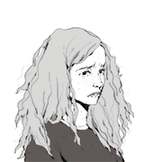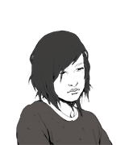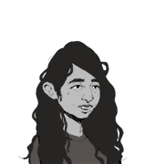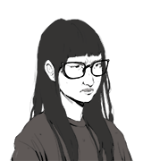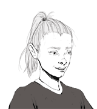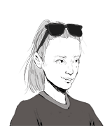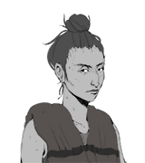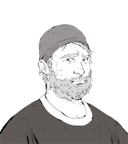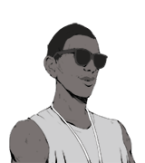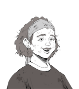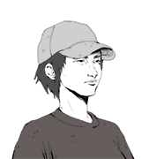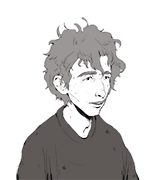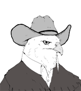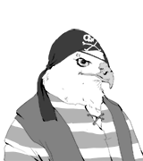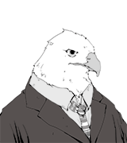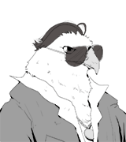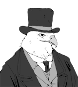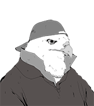
<%= display("boystuff-portrait2") %> *(You swim around for a <% if (s.boystuff9) { %> little bit <% } else { %> while more <% } %> and then climb <% if (s.boystuff9) { %> back out of the water. <% } else { %> out onto the dock. <% } %> Taylor Massey and Taylor Creek, two other girls from your cabin, are sitting there dangling their legs in the water.)* TAYLOR C: Hey Bridget. YOU: Hey guys. TAYLOR M: Oh, hey. We were just arguing about who's done the most sex stuff. YOU: Oh. That's... cool. TAYLOR M: Uh-huh. Taylor C said she's done the most because she's made out with four different boys already and I've only made out with one, but my thing was like I'm pretty sure those guys count as less than my boyfriend because I gave him a handy-J while his parents were out of town, and she was like well that doesn't *really* count because the lights were off and you couldn't see, but what I'm saying is he lives right downtown so there was a lot of ambient light coming through the window anyway. TAYLOR C: He lives *right* downtown. TAYLOR M: Anyway, how much sex stuff have you done? TAYLOR C: Yeah. Tell us all your sex stories right now. * [[boystuff3<-Uh...]] * [[boystuff2<-Oh hey, look at the time.]] * <%= alacritylink("Who's counting?","boystuff4",3) %>
YOU: Haha, yeah. I know, right? *(You look down at your bare wrist.)* Anyway, look at the time! Gotta go. *(You jump into the water and swim away as fast as possible)* TAYLOR M: Huh. I guess she had to go. TAYLOR C: Guess so. TAYLOR M: Hey how much sex stuff *do* you think she's done? <%= display("boystuff5") %>
YOU: Uh... um... the thing is... *(The Taylors look at you expectantly.)* YOU: That... I... Hey what's that over there?? *(They turn to look. You dive into the lake and swim away as fast as you can.)* TAYLOR C: Looks like the other side of the lake to me. TAYLOR M: Yeah I don't– Bridget? *(They look around.)* TAYLOR C: I wonder where she went. TAYLOR M: Weird. Hey how much sex stuff *do* you think she's done? <%= display("boystuff5") %>
YOU: I mean... you know. Who's counting? TAYLOR C: I am. TAYLOR M: Yeah we both are. YOU: Look, all these numbers... One, four... zero... They're all just arbitrary anyway. You know what I mean? It's like, at the end of the day some are higher and some are lower... But who can say really? *(Silence.)* YOU: ... Yep. TAYLOR C: Wow. That's wisdom, Bridge. TAYLOR M: Yeah, very true. YOU: Great. So uh I'm gonna go jump in this lake now and end this conversation forever. We good? *(They nod. You jump in the lake and swim away as fast as you can.)* TAYLOR M: She's cool. TAYLOR C: Yeah, very self-assured. TAYLOR M: Hey how much sex stuff *do* you think she's done? <%= display("boystuff5") %>
YOU: I just can't picture you doing this as a little elementary school kid. BELL: Hang on, my health card is from back then... *(She fishes it out.)* There. YOU: Oh my god! Your hair is so *long*! BELL: Yep, there's the pre-teen super sleuth. YOU: I didn't think you even were allowed to have a full open-mouth smile on these things. BELL: I was very insistent. YOU: Adorable! *(She chuckles.)* YOU: ...Wait, is that your actual middle name? BELL: Gimme that. *(She snatches the card back.)* YOU: "Wether"? For real? BELL: It's my mom's maiden name. Her dad was white. Don't ask me why but I got stuck with it. YOU: "Bell Wether"?? BELL: Yeah, yeah. I know. YOU: *snrrrk.* BELL: Oh shut up. *(You burst out laughing)* BELL: Shut up! *(You actually fall off the log from laughing so much.)* BELL: Oh for god's sake. *(She slides down next to you.)* I don't think I have ever seen you this giggly. YOU: *(still laughing a bit)* Hey, I can be giggly. BELL: Oh yeah? Well if that's true this place sure doesn't bring it out of you. * [[lastnight49<-I get that a lot lately.]] * [[lastnight2<-It's easy to get nervous around here.]] * [[lastnight70<-All the counsellors...]]
YOU: <% if (!s.lastnight49) { %> Yeah... <% } %> It's easy to get nervous around here I guess. BELL: Oh you mean here in the middle of a beautiful giant provincial park where the only thing you have to do all day is hang out by a lake? YOU: You know what I mean. There are all these people around that don't... I don't know... it's just... BELL: What people? Everyone at camp likes you. <% if (s.nathan7) { %> YOU: What about Nathan? BELL: Well he's just a human garbage heap. I've never heard any *actual* people say a single bad word about you. <% } else { %> YOU: Come on. BELL: No seriously. I don't think I've heard a single person say anything bad about you ever. <% } %> * [[lastnight71<-Somehow I doubt that.]] * [[lastnight73<-Doesn't mean they're not thinking anything bad.]] * [[lastnight72<-What about the counsellors?]]
YOU: This is more than just *weird*, Bell. They're all talking like robots! They tried to feed us a big bowl of seeds for dinner! BELL: *(smirking)* What, you didn't eat your seeds? *(You don't smirk back.)* <%= display("lastnight83") %>
*(You're sitting out on the front steps of your cabin. It's late at night and all the lights are out.)* YOU: *(muttering)* Functions, functions, functions... *(You hear footsteps coming down the path. You squint at the dark figure. After a few seconds you see that it's Bell. You get up and walk over to her.)* YOU: Hey. BELL: Hey. Can't sleep? YOU: More like... not in the mood. BELL: Mmm. Well if we're going to stay up all night we should at least do it properly. YOU: "We"? BELL: I'm not in the mood either. Come on. * [[lastnight5<-Follow her.]]
CASSIDY WOODS: Look to your left. Look to your right. Of the two humans you have observed, zero have wing structures that can aid them when they have become situated in a forest. This is an inherent inefficiency of the hominid body form. All that remains for human beings to utilize, therefore, is ground. *(You look over at Bell. She mimes yawning.)* CASSIDY WOODS: As you have looked left and right, now you are instructed to look down. *(Everyone looks down except for you and Bell. She does the "let's go" head gesture.)* CASSIDY WOODS: Within the soil can be found multiple grubs, rich in proteins and famously flavourful. A human stranded in this biome will be unable to attain survival without locating a substantial grub cache. *(You do the "what about that thing" head gesture in the direction of Cassidy.)* CASSIDY WOODS: Now, place your faces adjacent to dirt and begin sifting with your nose. *(Bell does the "don't worry about it" facial expression and starts heading up the trail. After a few seconds of indecision you run after her.)* CASSIDY WOODS: *(muffled by dirt)* The goal for the camping students is to obtain grubs, and the camping student who obtains the most grubs will be designated as the prime camping student. * [[cassidy2<-Catch up.]]
*(You catch up with her.)* YOU: Jeez, Cassidy is acting really... weird. BELL: Huh? YOU: You know, grubs? BELL: Oh. Cassidy *Woods*. Yeah sure. YOU: Is there another Cassidy? BELL: Sorry. I know a Cassidy back home. * [[cassidy4<-Also acting weird?]] * [[cassidy3<-Friend of yours?]]
YOU: Oh... is she a friend of yours? BELL: She was. She was my *best* friend, if I'm being honest. Like one of those best friends where like the two of you plan out your entire lives together. You know? *(You nod.)* BELL: I mean like, we literally wrote out a life plan on an actual piece of paper back when we were kids. After high school I was going to go to Humber College to get a legit P.I. license and she was going to go to U of T to become a doctor. Then we'd rent a cool old house downtown and run a detective agency out of the ground floor. We'd stay best friends and roommates forever and then die on the exact same day while reading mystery novels to each other. ... It hadn't been updated in a while. * [[cassidy5<-So what happened?]] * [[cassidy6<-Sounds like you two were close.]]
YOU: Is your Cassidy also acting weird? BELL: Nah. Acting normal. Totally, depressingly normal. YOU: Oh. ...Is that bad? BELL: Well, we used to be friends. Like best friends. Like best friends on the planet kind of best friends, you know? We did everything together, all the time. And now we don't. * [[cassidy12<-Were you detectives together?]] * [[cassidy13<-What happened?]] * [[cassidy14<-Because she's being normal?]]
YOU: So what happened? BELL: We had some fundamental disagreements that we weren't addressing. Then they got addressed. YOU: You had a fight? BELL: We... recalibrated. She doesn't want to be friends anymore. So now we're not. YOU: Oh. I'm sorry. BELL: Don't worry about it. Anyway, what were you saying about grub lady? YOU: Not important. What do you want to do? BELL: Walk in the woods sounds nice. * [[cassidy7<-Walk in the woods it is.]]
*(You dream you are the sheriff of a wild west town populated entirely by bird people. Your bird deputy scrutinizes you closely as you mosey along beneath the bright pink sky.)* DEPUTY: *(monotonously)* State your job title. YOU: Sheriff. DEPUTY: And what is the function of a sheriff? * [[west2<-To keep the law.]] * [[west3<-To maintain order.]] * [[west4<-To help people.]]
<% s.tenacityup += 1; s.west2 = true %>YOU: It's our job to make sure them folks in yonder town follow the law. DEPUTY: The purpose of the sheriff is to uphold the legal system in this settlement? <%= display("west5") %>
<% s.vigilanceup += 1; s.west3 = true %>YOU: Wild West is a raucous place. It's our job to make sure things is orderly. DEPUTY: The purpose of the sheriff is to maintain stability in society? <%= display("west5") %>
<% s.melancholyup += 1; s.west4 = true %>YOU: There's folks in that town yonder need our protection and we're gonna be the ones what protect 'em. DEPUTY: The purpose of the sheriff is to ensure the safety of the community? <%= display("west5") %>
YOU: *(chewing on something)* I reckon. DEPUTY: Very well. Demonstrate the behaviour of a human sheriff. *(You spit out whatever you were chewing. It lands in a spittoon in the middle of the road that you weren't previously aware of. An old bird perched outside the dry goods store nods approvingly when he hears the ping.)* TOWN DRUNK: *(suddenly right up in your face)* Human! Are you the sheriff in this location? YOU: That's right. TOWN DRUNK: Well for your information I am not accustomed to being subject to the authority of a human sheriff. Hiccup. *(Your deputy steps forward with his hand on his gun.)* DEPUTY: Steady yourself, inebriate. Intoxicated vagrancy in the presence of law enforcement is an unacceptable infraction. * [[west6<-Lay down the law.]] * [[west7<-Leave him be.]]
<% s.vigilanceup += 1; s.west6 = true %>YOU: Deputy's right, son. We don't want no drunks in public. TOWN DRUNK: Is that so? Hey compatriots! Our new sheriff has stated that she does not want to have any drunks in public. *(You notice he's got a crowd of like thirty drunks directly behind him. They murmur and chuckle and stumble around.)* TOWN DRUNK: Well, young human... *(He tries to press his claw-finger onto your badge but misses.)* We *drunks* do not want to have any *sheriffs* in public. What is your reply to that? * [[west9<-Get rough.]] * [[west8<-Reason with him.]] * [[west7<-Walk away.]]
<% s.serenityup += 1 %>YOU: Drunk such as that ain't worth our time. Let's go. *(You walk past him.)* TOWN DRUNK: Hey! I am talking to you! YOU: Well I ain't talkin' to you. DEPUTY: Sheriff, you would allow this drunkard to continue causing a disturbance in the street? YOU: *(dusting off your sheriff badge)* Reckon he'll tire himself out eventually. *(The two of you look back. <% if (s.west6) { %> All thirty drunks are now <% } else { %> The drunk has already <% } %> passed out face-down in the middle of the street.)* YOU: Besides, we've got places to be. DEPUTY: Such as? * [[west12<-Go to the saloon.]] * [[west13<-Foil a robbery.]]
<% s.guileup += 1 %>YOU: Calm down, son. There's no need for tusslin' over something such as this. TOWN DRUNK: Incorrect. There is indeed a need for combat over something such as this. *(The drunk throws out a sloppy punch but you easily dodge it. He falls on to the ground.)* TOWN DRUNK: It appears I have been bested by the sheriff. Let us depart, fellow drunks. *(He passes out. The thirty drunks all fall down and pass out with him.)* DEPUTY: Effective crowd control. I am impressed. * [[west11<-Go to the saloon.]] * [[west10<-Foil a robbery.]]
<% s.serenityup -= 1 %>*(You grab his finger and give it a sharp twist. The hollow bones break easily.)* TOWN DRUNK: I am experiencing pain!!! YOU: *(leaning in close)* I say get your sorry ass back to that foul-smelling nest o' yours 'fore I start twisting more than claws. We clear? *(He scampers off.)* YOU: That goes for the lot of you! *(They also scamper off.)* DEPUTY: Effective crowd control. I am impressed. * [[west11<-Go to the saloon.]] * [[west10<-Foil a robbery.]]
<% s.west10 = true %>YOU: Be impressed later. We got a situation on our hands. DEPUTY: *(looking down)* I see nothing but cow-leather gloves on our hands. YOU: Them McBirdford Brothers have flown back into town and I reckon they're fixin' to do some crimes. Follow me. <%= display("west14") %>
YOU: All a part of the job. Now let's us go take a load off. DEPUTY: *(looking around)* From what will we be removing a load? <%= display("west15") %>
YOU: The ol' savings and loan. DEPUTY: You wish to withdraw currency from a financial account? YOU: No, them McBirdford Brothers have flown back into town and I expect they're lookin' to cause some trouble. <%= display("west14") %>
YOU: Such as the ol' watering hole. Come on. DEPUTY: *(looking around)* I see no water-filled holes in the vicinity. <%= display("west15") %>
<% s.alacrityup -=1; s.west14 = true %>*(You are now on the other side of town and also on a horse. The buildings here are much taller and there are barrels full of water all over the place. A crowd of bystanders is gathered around, all pointing at the bank.)* DEPUTY: A disturbance<% if (s.west10) { %> at the money depository<% } %>. YOU: Reckoned as much. Let's mosey. *(The two of you get off your horses and start moseying towards the bank.)* MCBIRDFORD #1: Do not mosey any more paces forward, sheriff! *(One of the McBirdford brothers steps out of the bank and points his shotgun at the crowd.)* MCBIRDFORD #1: Or else all the bystanders will be made to die. DEPUTY: Sheriff, this is a situation of great danger. In what manner should we proceed? * [[west16<-Negotiate.]] * [[west17<-Infiltrate.]]
<% s.alacrityup += 1; s.melancholyup += 1; s.west15 = true %>*(You and the deputy walk into a quiet, dark saloon. A solitary bird is hunched over in the corner, mumbling into his drink.)* BARKEEP: *(wiping down a glass with a rag)* Good morning Sheriff. YOU: Barkeep. BARKEEP: What beverage can I provide you? YOU: Sarsaparilla. And make it a double. BARKEEP: Coming up immediately. DEPUTY: Sheriff, what are we doing in this establishment? * [[west23<-Relaxing.]] * [[west24<-Waiting for trouble.]]
<% setmidday() %>TAYLOR C: Probably a totally normal respectable amount. TAYLOR M: Yeah I was gonna say probably exactly the amount that I would find the most cool. * [[boystuff-end<-Next →]]
*(TJ blows into his whistle.)* TJ SWIM: No, no, no. These water immersion techniques are wholly incorrect. You will never achieve adequacy at this rate. ZOE: I don't know how much quicker you expect us to swim! We've been going non-stop for like twenty minutes. TJ SWIM: A falsehood. You have been immersed in water for seventeen minutes and twenty-eight seconds. LIZ: Well we're tired! And we want to get out before we die! TJ SWIM: *(shaking his head)* Insufficient in the extreme. Allow me to demonstrate proper form. *(He jumps off the side of the dock and swims out into the middle the lake. You all watch for a while as he gradually shrinks into the distance.)* ZOE: So uh... class over I guess? * [[likeabird3<-Get out of the water.]]
YOU: Sounds like you two were really close. BELL: We were super close. We did all the classic kid stuff: Sleepovers, dance parties, matching rainbow loom friendship bracelets... We even had the heart emoji on Snapchat. YOU: Whoa, it's tough to get the heart. BELL: Yeah. But looking back on it now I don't think we were ever fully on the same page about what exactly our friendship *meant*. I was... Things kind of came to a head recently. It got... awkward. YOU: Oh. BELL: So yeah, she doesn't really want to be friends any more. <%= display("cassidy25") %>
<div class="close"><a href="javascript:void(0)" data-passage="title">✖</a></div><% setmenu() %> CHAPTERS -------- <ol></ol> **JULY 12th** <ol> <li><a href="javascript:void(0)" data-passage="newgame">Counting the Days</a> ~ Cabin 20</li> <li><a href="javascript:void(0)" data-passage="west-start">Job Title: Sheriff</a> ~ ????</li> </ol> **JULY 13th** <ol start="3"> <li><a href="javascript:void(0)" data-passage="ready-start">Respect the Paddle</a> ~ Canoe Dock</li> <li><a href="javascript:void(0)" data-passage="boystuff-start">Sex Stuff</a> ~ Swimming Dock</li> <li><a href="javascript:void(0)" data-passage="bell-start">Hold On For Dear Life</a> ~ Sailing Dock</li> <li><a href="javascript:void(0)" data-passage="pirate-start">Job Title: Pirate Captain</a> ~ ????</li> </ol> **JULY 14th** <ol start="7"> <li><a href="javascript:void(0)" data-passage="compass-start">Orienteering</a> ~ Nature Area</li> <li><a href="javascript:void(0)" data-passage="spotter-start">One at a Time</a> ~ Ropes Course</li> <li><a href="javascript:void(0)" data-passage="whatisart-start">What Is Art?</a> ~ Arts and Crafts Hut</li> <li><a href="javascript:void(0)" data-passage="sadie-start">Safe Zone</a> ~ Basketball Court</li> <li><a href="javascript:void(0)" data-passage="hockey-start">Job Title: Hockey Player</a> ~ ????</li> </ol> **JULY 15th** <ol start="12"> <li><a href="javascript:void(0)" data-passage="mushroom-start">Edibility Survey</a> ~ Nature Area</li> <li><a href="javascript:void(0)" data-passage="tip-start">Campers, Assemble</a> ~ Canoe Dock</li> <li><a href="javascript:void(0)" data-passage="crush-start">Crushes</a> ~ Arts and Crafts Hut</li> <li><a href="javascript:void(0)" data-passage="music-start">Job Title: Musician</a> ~ ????</li> </ol> **JULY 16th** <ol start="16"> <li><a href="javascript:void(0)" data-passage="nathan-start">What They Say</a> ~ Sailing Dock</li> <li><a href="javascript:void(0)" data-passage="likeabird-start">Like a Bird</a> ~ Swimming Dock</li> <li><a href="javascript:void(0)" data-passage="beach-start">Secret Beach</a> ~ Ropes Course</li> <li><a href="javascript:void(0)" data-passage="detective-start">Job Title: Detective</a> ~ ????</li> </ol> **JULY 17th** <ol start="20"> <li><a href="javascript:void(0)" data-passage="follow-start">A Normal Human Function</a> ~ Swimming Dock</li> <li><a href="javascript:void(0)" data-passage="withdrawl-start">Swiping Phantom Touchscreens</a> ~ Canoe Dock</li> <li><a href="javascript:void(0)" data-passage="cassidy-start">Sneaking Expert</a> ~ Nature Area</li> <li><a href="javascript:void(0)" data-passage="college-start">Job Title: College Student</a> ~ ????</li> </ol> **JULY 18th** <ol start="24"> <li><a href="javascript:void(0)" data-passage="niceday-start">A Nice Day</a> ~ Out on the Lake</li> <li><a href="javascript:void(0)" data-passage="heights-start">Sooner or Later</a> ~ Ropes Course</li> <li><a href="javascript:void(0)" data-passage="pottery-start">The Damn Wheel Thingy</a> ~ Arts and Crafts Hut</li> <li><a href="javascript:void(0)" data-passage="lastnight-start">Not in the Mood</a> ~ Outside Cabin 20</li> <li><a href="javascript:void(0)" data-passage="nightmare-start">Feathers</a> ~ ????</li> </ol> **JULY 19th** <ol start="29"> <li><a href="javascript:void(0)" data-passage="roundswim-start">Round One</a> ~ Swimming Dock</li> <li><a href="javascript:void(0)" data-passage="roundwoods-start">Round Two</a> ~ Nature Area</li> <li><a href="javascript:void(0)" data-passage="roundropes-start">Round Three</a> ~ Ropes Course</li> <li><a href="javascript:void(0)" data-passage="roundcrafts-start">Round Four</a> ~ Arts and Crafts Hut</li> <li><a href="javascript:void(0)" data-passage="roundcanoe-start">Round Five</a> ~ Canoe Dock</li> <li><a href="javascript:void(0)" data-passage="roundsail-start">Round Six</a> ~ Sailing Dock</li> <li><a href="javascript:void(0)" data-passage="warning-start">Our Duties Are Concluded</a> ~ ????</li> </ol> **JULY 26th** <ol start="36"> <li><a href="javascript:void(0)" data-passage="euchre-start">Saying Goodbye</a> ~ Outside Cabin 20</li> </ol>
*(The two of you walk up the hill to the fire pit. It's a ways out from the rest of camp – deserted, surrounded by trees, and totally quiet. You rub your shoulders.)* YOU: This place feels a lot less cozy when it's just a pit with no fire. BELL: Way ahead of you. *(She flashes her lighter.)* Now let's see... *(She gathers up a bunch of tinder and kindling.)* YOU: Whoa. I didn't realize you were paying attention during all the fire-making stuff. BELL: Heh. This is pre-camp knowledge actually. *(She starts building a tipi in the centre of the fire pit.)* Back when I was ten I was hired to find a lost treasure in this haunted cabin in the woods. I figured it would be prudent to do some basic survival skill stuff before I got out there. There we go. *(She lights the kindling and blows on it a few times. The fire catches.)* BELL: Place wasn't actually haunted of course. The ghost noises were mostly just wind and scraping branches. There was totally a treasure though. That was my... twenty-fourth case? Twenty-fourth or twenty-fifth. * [[lastnight6<-That's a lot of cases.]] * [[lastnight7<-You number your cases?]] * [[lastnight74<-What kind of treasure?]] * [[lastnight54<-Do you ever get tired of all the detective stuff?]]
*(Logan, the arts and crafts instructor, is standing silently at the front of the crafts hut. All the campers are just sitting at their tables looking back at him.)* LOGAN CRAFTS: *(smirking)* What do you say we loosen things up a little bit, huh? *(He walks to the back of the room, grabs a chair, and drags it up to the front. He then spins it around so it's facing away from you and sits on it backwards.)* LOGAN CRAFTS: What... is art? *(No one replies.)* LOGAN CRAFTS: Hmm? What *is* art? Really. *(He gets back up from the chair.)* LOGAN CRAFTS: Anyway, give that some thought while I go outside on official camp business. *(He leaves.)* * [[whatisart4<-Paint something.]] * [[whatisart5<-Draw something.]] * [[whatisart6<-Make something out of plasticine.]] * [[whatisart3<-Go talk to Mackenzie.]]
*(You walk over to Mackenzie's table and sit down next to her.)* MACKENZIE: Hey Bridget. Not doing any arts and crafts? YOU: Not really sure what to do. MACKENZIE: Mmm. Creative freedom can be paralyzing. YOU: What should I make? MACKENZIE: I find that art's a good way to work out stuff that you've been thinking about. What's been on your mind lately? * [[whatisart2<-Birds.]] * [[whatisart20<-Home.]] * [[whatisart21<-A lot of stuff.]]
<% s.serenityup += 1 %>YOU: Seems we gotta talk them down, hombre. *(You raise your hands over your head)* YOU: We don't want no trouble now, McBirdford! MCBIRDFORD #1: Regrettably, trouble is that which you will certainly receive. *(The other McBirdford brothers call out from within the bank.)* MCBIRDFORD #2: Our preference is to shoot the bystanders! MCBIRDFORD #3: The bystanders will definitely be shot by us! MCBIRDFORD #4: Shooting the bystanders will give us pleasure and we intend to be the ones to do it! DEPUTY: I think they mean to shoot the bystanders. YOU: I reckon you're right about that. Only one thing to do now... * [[west28<-Have a shootout.]] * [[west19<-Use reverse pyschology.]]
<% s.guileup += 1 %>YOU: We sneak in the back. Follow my lead. *(You raise your hands above your head and start walking backwards.)* YOU: Hey, McBirdford! We're leavin' this here bank forever now! MCBIRDFORD #1: A very wise decision, Sheriff. *(You and the deputy keep walking backwards. Once you're outside of McBirdford's line of sight, the two of you dart into a side alley and sneak around to the back side of the bank.)* YOU: There. Inside. *(You and the deputy peer through a window. The other three McBirdford brothers are painting dollar signs on burlap sacks and stuffing them full of cash.)* MCBIRDFORD #2: Keep robbing, fellow brothers. Our currency containers are nearly filled with currency. DEPUTY: We must proceed carefully, Sheriff. * [[west36<-Smoke 'em out.]] * [[west35<-Shoot 'em dead.]]
YOU: On the count of three. *(He nods.)* YOU: One... two... three! *(You both draw. McBirdford fires six shots out of his revolver. Each one goes wide and hits a different water barrel. Water spurts out onto the dusty road as he clicks the trigger a few more times.)* YOU: End of the line, varmint. * [[west20<-Shoot him dead.]] * [[west21<-Use non-lethal force.]]
<% s.guileup += 1 %>YOU: This is your last warning, McBirdford! Don't stop robbing that bank! DEPUTY: Sheriff? MCBIRDFORD #1: What are you attempting to say, Sheriff? YOU: You heard me! If you're not going to keep bank robbing then *at least* refuse to release the bystanders! The last thing I want is to see 'em not get hurt! *(The other McBirdford brothers file out of the building with quizzical looks on their faces. They're holding big dollar sign bags.)* <% setdream() %>MCBIRDFORD #2: First McBirdford Brother, what is the situation here? MCBIRDFORD #1: The Sheriff is telling us she wants us to continue robbing the bank and hurting the bystanders. *(They huddle up)* MCBIRDFORD #3: *(still speaking at full volume)* If the Sheriff wants us to not surrender then surrender is the most logical course of action. MCBIRDFORD #2: It could be a deception. MCBIRDFORD #4: Or alternatively the human Sheriff could want us to think that it is a deception. MCBIRDFORD #3: Were that the case, following the Sheriff's commands would be the most disadvantageous course of action. MCBIRDFORD #4: So we should surrender immediately. MCBIRDFORD #1: That is the most sensible interpretation, Fourth and Third McBirdford Brothers. It is settled. *(They drop the money and put down their guns. All the bystanders vanish.)* MCBIRDFORD #1: Sheriff! We hereby announce our total surrender. YOU: If you insist. *(You walk up and cuff them.)* MCBIRDFORD #2: We did a good job, brothers. *(The other McBirdfords nod simultaneously in agreement)* DEPUTY: A fascinating display. Thank you Sheriff. Have a pleasant day. * [[west-out<-Next →]]
<% s.vigilanceup += 1 %>*(You fire your revolver and hit him square between the eyes.)* MCBIRDFORD<% if (s.west14) { %> #1<% } %>: I am ceasing to live. <%= display("west22") %>
<% s.guileup -=1 %>*(You throw your revolver and hit him right in the head.)* MCBIRDFORD<% if (s.west14) { %> #1<% } %>: I am passing out of consciousness. <%= display("west22") %>
<% setcard() %>*(You wake up feeling a bit different than you did yesterday.)* <% tabulate() %> <%= display("newstats") %> [**The quality of your dreams will affect your waking mood.**]{.freestat} * [[west-end<-Next →]]
<% setdream() %>*(McBirdford keels over and lands with a thud. You walk up and prod his limp body with your cowboy boot.)* YOU: Damn fool forgot his one true weakness: He don't know how to aim a gun. DEPUTY: The situation is dealt with adequately then? YOU: *(chewing on something again)* Seems so. DEPUTY: A fascinating display. Thank you for the demonstration, Sheriff. Have a pleasant morning. * [[west-out<-Next →]]
<% dreamstart() %> [ <%= display("west-portrait") %> ]{.delay1s} **That night...** [ <%= display("west1") %> ]{.delay1s} <% autosave() %>
<% s.vigilanceup -=1 %>YOU: Taking a well-earned break, is how I see it. *(You take a long sip of sarsaparilla.)* Ahhhhh. *(The deputy folds his hands on his lap and stares straight ahead.)* DEPUTY: Very well. I will engage in the relaxation activity. *(The saloon doors burst open. A bird in a black hat saunters into the bar.)* YOU: Well well. Look who just flew back into town. DEPUTY: I am regarding them but their identity is unknown to me. <%= display("west29") %>
<% s.guileup += 1 %>YOU: Our job's to sniff out trouble in this town. And if I there's one thing I know 'bout this town, it's that trouble has a way of findin' itself in this here saloon. *(The saloon doors burst open. A bird in a black hat saunters into the bar.)* YOU: Speak of the devil. DEPUTY: Do you know this entrant? <%= display("west29") %>
<% s.melancholyup -=1 %>YOU: <% if (s.west27) { %> You're right. <% } %> Suppose we'd better deal with this proper like. *(You walk up to the bar and put your hand on McBirdford's shoulder.)* YOU: Alright, McBirdford. Your rustlin' days are over. Why don't you just come quietly? MCBIRDFORD: Oh I will come quietly alright. After shooting you. * [[west32<-Take him in.]] * [[west31<-Have a shootout.]]
<% s.serenityup -= 1 %>YOU: McBirdford! *(He turns to look at you.)* YOU: I think it's time you pack your things and git. We don't take kindly to rustlers round these parts, cattle or otherwise. MCBIRDFORD: If you think you are capable of convincing me to leave by issuing threats, you are mistaken. I intend to stay right here and continue my rustling and nothing you can say or do will deflect me from that task. YOU: Is that so? MCBIRDFORD: It is. YOU: Well then I guess we'll have to settle this the old fashioned way: shootin' at each other 'till one of us is dead. MCBIRDFORD: Very well. *(The two of you walk out into the street.)* <%= display("west18") %>
<% s.melancholyup += 1; s.west27 = true %>YOU: Not our concern. *(You pull your hat down over your head and put your feet up on the table.)* DEPUTY: Sheriff, I am confused. You only recently informed me that your purpose is to <% if (s.west3) { %> maintain order in <% } else if (s.west2) { %> uphold the legal system in <% } else { %> offer protection to <% } %> the community. Yet now intend to allow this criminal to go free? I do not see the logic. * [[west30<-That's my decision.]] * [[west26<-I guess you're right.]]
<% s.alacrityup += 1 %> YOU: McBirdford! It's me ya want, not them bystanders. Let 'em go and we can settle this with a duel. MCBIRDFORD #1: *(now holding a revolver)* Agreed. *(He holsters his revolver and walks out into the street.)* <%= display("west18") %>
YOU: That's Burton McBirdford, head honcho of the McBirdford clan. Meanest cattle rustler this side of the Mississip'. DEPUTY: No small area. YOU: No small rustler, neither. *(He sits down at the bar.)* MCBIRDFORD: Bartender, bring me a whisky beverage. All of this rustling is making me thirsty. DEPUTY: Sheriff, it would seem this individual has openly admitted to a criminal behaviour. What will you do? * [[west26<-Arrest him.]] * [[west27<-Ignore him.]] * [[west25<-Have a shootout.]]
<% setdream(); s.alacrityup -=1 %>YOU: What can I say? Sometimes discretion is in order. Call it livin' to fight another day. DEPUTY: This is wholly contrary to your stated objective. YOU: *(You shrug.)* Never claimed to be no role model. DEPUTY: I see. *(He stands.)* Well thank you, Sheriff. This has been a most enlightening demonstration. Have a pleasant morning * [[west-out<-Next →]]
<% s.tenacityup += 1 %>YOU: Friend, if shooting is what you want I am happy to oblige. *(You adjust your holster belt.)* MCBIRDFORD: Very well. A pistol duel it is. *(The two of you walk out into the street.)* <%= display("west18") %>
<% s.tenacityup -=1 %>YOU: Don't make me ask again, McBirdford. MCBIRDFORD: Or what? You will shoot me right here in this saloon? * [[west33<-Maybe I will.]] * [[west34<-Never mind.]]
<% setdream(); s.serenityup -= 1 %>YOU: If it comes to that. *(McBirdford slowly gets up from the bar.)* MCBIRDFORD: You know what, Sheriff? *(You squint at him.)* MCBIRDFORD: That is exactly the kind of attitude I respect from a law enforcement officer. *(He sticks out his wrists.)* Please take me to jail immediately. *(You cuff him.)* DEPUTY: I must say, I am genuinely surprised this tactic succeeded. YOU: Just one of many tricks us cowpokes have up our sleeves. DEPUTY: Most intriguing. Thank you for the demonstration, Sheriff. Have a pleasant morning. * [[west-out<-Next →]]
YOU: No. No I suppose not. MCBIRDFORD: That is what I previously thought. *(You return to your seat.)* DEPUTY: I do not understand. You decline to apprehend the criminal? <%= display("west30") %>
<% setdream(); s.melancholyup -=1 %>YOU: I've got an idea. *(You stick your hand through the window and reach for the fire alarm.)* DEPUTY: That level of technology does not seem commensurate with our present cultural setting. YOU: I don't know what that means. *(You pull the alarm. Sirens start blaring.)* MCBIRDFORD #3: A fire! MCBIRDFORD #2: Put everything down, brothers! It is time to leave this town forever! *(They run outside. You and the Deputy walk back around to the front of the building and watch the McBirdfords as they scamper down the street and out of town.)* DEPUTY: You don't intend to chase them? YOU: No need. They won't be comin' back any time soon. If there's one thing criminals such as those hate, it's fire. DEPUTY: Most fascinating. Thank you for the demonstration, Sheriff. Have a pleasant morning. * [[west-out<-Next →]]
<% setdream(); s.tenacityup += 1 %>*(You somersault through the back window, drawing your revolver in mid-air.)* YOU: Alright, ya varmints! Stick 'em up. MCBIRDFORD #4: We will not stick anything up. YOU: My six-shooter says otherwise. MCBIRDFORD #2: Your firearm is incapable of human speech, but were it able to talk one thing it might say is, "I am only one gun and there are three McBirdford brothers in this room. I cannot possibly be of any use." *(You whip around and fire a trick shot at the bank's main spittoon. The bullet ricochets off the rim and knocks all three of the brothers' hats clean off their heads. The shot lands in the bank's secondary spittoon with a satisfying clink.)* YOU: I won't ask again. *(The brothers simultaneously raise their hands.)* MCBIRDFORDS #2-4: Very well. We will surrender. YOU: And the fella out on the porch too. MCBIRDFORD #2: First McBirdford Brother! We three brothers are surrendering to the Sheriff on account of superior gunplay. You should join us. MCBIRDFORD #1: Very well! *(You walk over and cuff the bad guys.)* DEPUTY: Quite an impressive technique, Sheriff. YOU: All in a day's work. DEPUTY: Indeed. Thank you for the demonstration, Sheriff. Have a pleasant morning. * [[west-out<-Next →]]
<% setafternoon() %> [ <%= display("whatisart-portrait") %> ]{.delay1s} **July 14th, Afternoon. Arts and Crafts Hut.** [ <%= display("whatisart1") %> ]{.delay1s} <% autosave() %>
*(You go to the supply cabinet and grab some paint supplies.)* * <%= serenitylink("Paint a bird in a canoe.","whatisart12",3) %> * <%= alacritylink("Paint a bird on the lake.","whatisart13",3) %> * <%= vigilancelink("Paint a bird in a tree.","whatisart14",3) %> * <%= melancholylink("Paint a bird with colourful plumage.","whatisart15",3) %> * <%= tenacitylink("Paint a bird in flight.","whatisart16",3) %> * <%= guilelink("Paint a bird on a wire.","whatisart17",3) %> * [[whatisart18<-Paint a feather.]]
<% s.whatisart5 = true %>*(You grab some pencils and paper out of the cabinet.)* * <%= serenitylink("Draw a bird in a canoe.","whatisart12",3) %> * <%= alacritylink("Draw a bird on the lake.","whatisart13",3) %> * <%= vigilancelink("Draw a bird in a tree.","whatisart14",3) %> * <%= melancholylink("Draw a bird with colourful plumage.","whatisart15",3) %> * <%= tenacitylink("Draw a bird in flight.","whatisart16",3) %> * <%= guilelink("Draw a bird on a wire.","whatisart17",3) %> * [[whatisart18<-Draw a feather.]]
<% s.whatisart6 = true %>*(You grab some plasticine out of the cabinet and go back to your table. After a few minutes Mackenzie ambles over and watches you work.)* MACKENZIE: It's very pink. YOU: Thanks. MACKENZIE: What is it? YOU: I'm trying to model a dream I had. MACKENZIE: Ah. YOU: It's not really coming out though. *(She shrugs.)* MACKENZIE: I guess it's abstract then. What is it about this dream? YOU: I don't know, I just found it... MACKENZIE: Troubling? * [[whatisart10<-Not troubling exactly...]] * <%= melancholylink("Now that you mention it.","whatisart7",2) %>
YOU: Walk in the woods it is. *(The two of you walk along a little side path through the woods. After a while Bell takes a small flask out of her pocket.)* YOU: Is that... alcohol? BELL: Yep. Sorry, do you want some? I just assumed you didn't want any. YOU: How did you manage to get booze into summer camp? I couldn't even sneak in a bag of Oreos. BELL: I am a sneaking expert. YOU: Oh. BELL: ...by which I mean an expert *at* sneaking, not an expert who is sneaking. Although I guess I'm that too. You pick up a few tricks as a teen detective. *(She takes a sip.)* BELL: Wait, you stuck a whole bag of Oreos in your suitcase? * [[cassidy8<-Not a big bag.]] * [[cassidy21<-I'm not a great sneaker.]] * [[cassidy26<-Let's change the subject.]] * <%= alacritylink("Can I have a sip?","cassidy15",4) %>
<% s.cassidy8 = true %>YOU: Not a big bag! BELL: So like... the standard size bag they have at the grocery store and not the family pack. YOU: Yeah! And like single stuf, not double. BELL: And you just... left them in the packaging? YOU: Well if I took 'em out... I mean, it's a whole month. I didn't want them to get stale. BELL: Hmm. Well, you're an amateur. These things happen. *(She holds up the flask.)* Anyway, this is smaller. Easier to hide. First rule of sneaking. * [[cassidy21<-Yeah I'm not the best at sneaking.]] * [[cassidy9<-So where are we going?]] * <%= alacritylink("Can I try some of that?","cassidy15",4) %>
YOU: So uh... where are we going? BELL: I don't know honestly. I've never been on this trail before. We're kind of running parallel to the camp but also a little... northeast? I'm not sure where this leads, if it leads anywhere. But it'd be a fun thing to find out, right? * [[cassidy16<-As long as we don't get lost.]] * [[cassidy17<-As long as we don't get in trouble.]] * [[cassidy18<-As long as we don't get eaten by a bear.]]
*(You dream that you're in the middle of an empty gray plain under an undulating black sky. The only thing for miles around is a gray replica of the campsite you just fell asleep at. You see yourself and Bell cuddled up next to each other on the ground. A familiar bird approaches.)* YOU: Hey! *(He doesn't seem interested in you.)* YOU: Hey! You! Bird guy! *(No response.)* YOU: You aren't going to ask me anything? BIRD: There is no need. All necessary reference material has been gathered. YOU: Reference material? BIRD: Affirmative. Our understanding of your society's cultural and legal norms is sufficiently comprehensive. For the time being. *(He walks past you, towards a swirling white vortex in the far distance.)* YOU: Wait! *(He stops.)* YOU: ...state your job title. *(The bird very slowly turns around. You see the faintest hint of a grin flash across his beak.)* BIRD: Expropriator. *(He bursts apart into hundreds of small black feathers. You watch them as they blow away in the wind, and as you're looking up you realize that the throbbing blackness above you isn't a cloud at all. It's a flock of birds. Millions of birds, completely blocking out the sky, all flying towards the vortex.)* * [[nightmare2<-Next →]]
<%= display("nightmare-start") %>
YOU: Nope. Everything's totally fine in dreamland. The 100% Normal Dreamer, that's what they call me. MACKENZIE: Oh! That's good to hear. I made an Eiffel Tower out of popsicle sticks. Want to see? <%= display("whatisart9") %>
YOU: A little, now that you mention it. I don't even know how to explain it though. Like lately in my dreams it's always, uh... there are birds but they're also people but they don't talk like birds OR people and it's in a movie but I don't know it's in a movie? Also like the sky... *(You sigh.)* YOU: I mean I know it's not real. It's just in my head. But– MACKENZIE: "In your head" isn't the opposite of "real" though. YOU: How do you figure? MACKENZIE: Well, your head is the thing you use to process the real world, right? So obviously everything is in your head, whether or not it's real. YOU: Yeah... but like my physical body isn't literally doing the things I'm doing in my dreams, is what I'm saying. *(She shrugs.)* MACKENZIE: To a sleeping mind it's all the same. I made an Eiffel Tower out of popsicle sticks. Want to see? <%= display("whatisart9") %>
<% setafternoon() %>YOU: Sure. *(You get up from your table.)* MACKENZIE: Okay. It's flat though so I don't think it actually counts as a tower until we find something to lean it up against. * [[whatisart-end<-Next →]]
<% if (s.whatisart6) { %> YOU: Not *troubling*, exactly. But strange. I've been having a lot of strange dreams lately. <% } else { %> YOU: Not *troubled*, exactly. But I have been... having strange ones lately. <% } %> MACKENZIE: *(nodding)* Dreams are usually pretty strange. YOU: Yeah, but these... it's tough to explain. There are birds but they're also people but they don't talk like birds OR people and it's in a movie but I don't know it's in a movie? Also like the sky... *(You sigh.)* YOU: I'm not explaining it very well. MACKENZIE: Dreams are usually tough to explain too. My advice is just to go with it. It'll be good for your creative energies. I made an Eiffel Tower out of popsicle sticks. Want to see? <%= display("whatisart9") %>
MACKENZIE: Well I think it's a nice piece. I can really feel the turmoil in the <% if (s.whatisart5) { %> line work. <% } else { %> brushstrokes. <% } %> YOU: ...Turmoil? Really? MACKENZIE: Definitely. Your subconscious is all over the page. YOU: Kind of just looks like a bird to me... MACKENZIE: Mmm. Tell me something, Bridget. Are you someone who finds herself troubled by dreams? * [[whatisart10<-Not troubled exactly...]] * <%= melancholylink("Now that you mention it.","whatisart7",2) %> * <%= guilelink("No, of course not. What a ridiculous idea.","whatisart8",2) %>
<%= display("sadie-start") %>
<% setafternoon() %>**July 17th, Afternoon. Nature Area.** [ <%= display("cassidy1") %> ]{.delay1s} <% autosave() %>
<% dreamstart() %> [ <%= display("college-portrait") %> ]{.delay1s} **That night...** [ <%= display("college1") %> ]{.delay1s} <% autosave() %>
<% s.college1 = true %>*(You dream you are a college student on a campus populated entirely by bird people. A bird fellow student scrutinizes you closely as you walk to class beneath the bright pink sky.)* FELLOW STUDENT: State your job title. YOU: College Student. FELLOW STUDENT: And what is the function of a college student? * [[college2<-To get an education.]] * [[college3<-To get trashed and party all night.]] * [[college4<-To discover yourself.]]
<% s.serenityup += 1 %>YOU: College is a temple of learning, my man. I'm here to hit the books. FELLOW STUDENT: The purpose of the college student is to acquire knowledge? <%= display("college5") %>
<% s.guileup -=1 %>YOU: School's a party, brah. I'm here to get buzzed and have a good time. FELLOW STUDENT: The purpose of the college student is to engage in irresponsible celebratory behaviour? <%= display("college5") %>
<% s.melancholyup += 1 %>YOU: School's a time for sorting things out, know what I mean? I'm here to find myself. FELLOW STUDENT: The purpose of the college student is to come to a new understanding of self? <%= display("college5") %>
YOU: You know it. FELLOW STUDENT: Very well. Demonstrate the behaviour of a human college student. * [[college15<-Go to the quad.]] * [[college16<-Go to class.]]
*(You peek inside and see Bell standing there.)* YOU: Bell? BELL: Oh hey Bridget. Come on into my college dorm room. YOU: Sure. *(You enter. The walls are covered in stuff you know to be cool.)* YOU: Wow, cool room. BELL: Thanks. It's mine. YOU: I've never had a room this cool in my life. BELL: Oh yeah? Well you're welcome to hang out for a while if you like. YOU: Great idea. FELLOW STUDENT: Should we not proceed down the corridor instead? * [[college7<-Nah.]] * [[college8<-In a second.]]
<% s.alacrityup -=1 %>YOU: I don't think that's necessary. *(Your fellow student looks around in frustration.)* <%= display("college9") %> YOU: You go ahead. <%= display("college10") %>
<% s.vigilanceup -=1 %>YOU: Yeah sure. In a second. *(Your fellow student taps his talon impatiently.)* <%= display("college9") %> YOU: You go ahead. I'll be there in a bit. <%= display("college10") %>
BELL: Hey we're both nineteen now. Isn't that normal? YOU: Oh yeah. That's right. We are nineteen. I've known that forever. BELL: Isn't it nice that you and I are nineteen? YOU: It's really nice. We're far from Toronto. BELL: Yeah our families don't know anything about our lives and we never speak to anyone we went to high school with. YOU: That's cool. FELLOW STUDENT: This is quite an unnecessary discussion. We should go down the hall to another room now.
BELL: *(holding out a cookie)* Oreo? YOU: Wow, thanks. Where'd you get it? BELL: From the store, with my money. *(You stick the cookie into your wallet.)* BELL: After all, you can do whatever you want at college. * [[college13<-Like what?]] * [[college14<-Are you still a detective?]] * [[college23<-Being a college student clearly agrees with you.]]
*(You dream you are a detective in a quaint little village populated entirely by bird people. Your bird assistant scrutinizes you closely as you stroll along beneath the bright pink sky.)* ASSISTANT: State your job title. YOU: Detective. ASSISTANT: And what is the function of a detective? * [[detective2<-To catch criminals.]] * [[detective3<-To solve mysteries.]] * [[detective4<-...Something about teens?]]
<% s.vigilanceup += 1 %>YOU: There are some devious scoundrels out in the world, and when crimes happen it's our job to find them. ASSISTANT: The purpose of the detective is to identify the perpetrators of illegal activities? YOU: Elementary. ASSISTANT: Very well. Demonstrate the behaviour of a human detective. <%= display("detective5") %>
<% s.melancholyup -=1 %>YOU: There are mysteries afoot and we've got to be the ones to solve them! ASSISTANT: The purpose of the detective is to understand complex scenarios on the basis of limited information? YOU: Elementary. ASSISTANT: Very well. Demonstrate the behaviour of a human detective. <%= display("detective5") %>
<% s.melancholyup += 1 %>YOU: Uh... teens? I think? ASSISTANT: Teenage humans? What about them? YOU: Or younger. Teens or younger. ASSISTANT: I do not understand. YOU: You know, detectives. ASSISTANT: Perhaps... it would be simplest if you just demonstrated the behaviour of a human detective. <%= display("detective5") %>
*(You nod, stick a pipe in your mouth, walk up to the door of a local manor, and knock thrice. A butler opens the door.)* BUTLER: It is quite fortunate that you have arrived! We are in need of a detective! YOU: Oh hey, I know a detective. ASSISTANT: You *are* a detective. YOU: I am a detective. ASSISTANT: Yes. YOU: *And* I know a detective? ASSISTANT: No other detective is relevant to this scenario. YOU: Oh. ...Is that a clue? BUTLER: Please come into this domicile. * [[detective12<-Come into that domicile.]]
<% setdream() %>*(You and your assistant exit the house. Bell is waiting for you outside.)* YOU: Bell? BELL: Hey, you're really good at this. Even I'm impressed. *(She pins a blue ribbon with the word "DETECTIVE" on it to your chest.)* YOU: Oh wow. Thanks. BELL: My pleasure. YOU: Hey, have you ever noticed that you and I look different from everyone else in the universe? BELL: That's true. And we talk differently too. ASSISTANT: That sounds like an anomaly. I would recommend ignoring it. YOU: Weird. BELL: I know, eh? You should probably use your detective skills to figure out what's happening. YOU: Oh yeah. I guess that is my job... ASSISTANT: No need for that, Detective! Thank you for the demonstration. Have a pleasant morning. * [[detective-out<-Next →]]
<%= display("follow-start") %>
<% dreamstart() %> [ <%= display("detective-portrait") %> ]{.delay1s} **That night...** [ <%= display("detective1") %> ]{.delay1s} <% autosave() %>
<% setblack() %>**That night...** [ <%= display("nightmare1") %> ]{.delay1s} <% autosave() %>
<%= display("olympics-start") %>
<% setmidday() %>**July 19th, Midday. Ropes Course.** [ <%= display("roundropes1") %> ]{.delay1s} <% autosave() %>
<%= display("bell-start") %>
<% setmidday() %>**July 16th, Midday. Swimming Dock.** [ <%= display("likeabird1") %> ]{.delay1s} <% autosave() %>
<% setevening() %>YOU: Just counting the days left at camp. MACKENZIE: Oh wow. That's all? It's going by so fast... YOU: Something like that. Night, Mackenzie. MACKENZIE: Night, Bridget. *(You switch off your flashlight and feel a dull thud in your chest as you close your eyes.)* * [[intro-end<-Next →]]
<% setevening() %>YOU: Nothing. Just saying numbers to myself. MACKENZIE: Mmm. That makes sense. YOU: Night, Mackenzie. MACKENZIE: Night, Bridget. *(You switch off your flashlight and feel a dull thud in your chest as you close your eyes.)* * [[intro-end<-Next →]]
<% setevening() %><%= display("intro-portrait") %> *(You sigh and put the letter in your bag.)* YOU: Twenty. *(Mackenzie Singh, your bunkmate, peeks over the side of her bed.)* MACKENZIE: Twenty what? * [[intro2<-Days left.]] * [[intro3<-Nothing.]]
<%= display("west-start") %>
*(You, Mackenzie, and Bell meet up with some other girls from your section as you walk down to the docks.)* LIZ: So... which inanimate object do we think we're going to be learning respect for today? ZOE: Paddle's usually a safe bet. MACKENZIE: Maybe life jackets this time? We haven't really talked about life jackets yet. BELL: That would require actually going in the water, and I don't see that happening any time soon. *(You get to the docks and see Dan standing waist-deep in the lake.)* BELL: Then again... DAN CANOE: Campers, assemble! *(You and some campers from other sections gather at the edge of the dock.)* DAN CANOE: Today I intend to deviate from standard practice in order to conduct a brief examination. *(You look over at Bell. She shrugs.)* DAN CANOE: Before I begin I must make it unambiguously clear that I am fully aware of the answers to all of these inquiries. This is merely a test to see what knowledge you have thus far acquired. Have I conveyed this information with clarity? *(The campers all sort of nod and mumble in agreement.)* DAN CANOE: Very good. Now let us commence: What is the purpose of the canoe? * <%= alacritylink("Raise your hand.","tip2",2) %> * [[tip3<-Let someone else answer.]]
<% s.tip2 = true %>*(You slowly raise your hand. After a few seconds you realize Dan isn't really acknowledging you so you just talk.)* YOU: Um... It's... a boat? You use it to travel over water. DAN CANOE: A perfect response. You are passing this test masterfully. Now a second question, which I again already know the answer to: What is the purpose of the canoeing class? <%= display("tip4") %>
*(You stand there in silence for an uncomfortably long time. Finally some intermediate boy timidly puts up his hand.)* INTER BOY: Um. Well. With the canoe, you like get in it? And move around and stuff? It's a thing you go in. ...Like, when you're here. *(Some of his bros pat him on the shoulders.)* BRO #1: Nice. BRO #2: Good answer dude. DAN CANOE: A good answer indeed. You are passing this test masterfully. Now a second question, which I again already know the answer to: What is the purpose of the canoeing class? <%= display("tip4") %>
ZOE: To teach us how to canoe. LIZ: We're *supposed* to go in the canoes and paddle around. DAN CANOE: Excellent. Then today we will enter the canoes, utilize our paddles, and transport ourselves over water. I will observe from this ideal vantage point. Commence. * [[tip5<-Take a canoe out by yourself.]] * [[tip6<-Take a canoe out with Mackenzie.]] * [[tip7<-Talk to Bell about how weird that was.]]
*(You <% if (s.tip7) { %> go <% } %> grab a canoe and drag it into the lake. In one very unfluid motion you push off from the shore and clamber into the boat.)* YOU: Okay. We're fine. Okay. *(You try to start paddling but your whole body feels unbalanced. The canoe starts rocking back and forth.)* * <%= tenacitylink("Steady yourself with your arms.","tip14",2) %> * <%= serenitylink("Steady yourself with your paddle.","tip13",3) %> * [[tip15<-Flail around like an idiot.]]
YOU: Hey Mackenzie, do you want to go out together? MACKENZIE: Sure. Let's go. *(You and Mackenzie carry the boat into the lake. She hops in the front as you push off and kind of scramble into the back. You feel kind of unbalanced as you try to settle into your seat.)* YOU: Whoa. Whoa whoa whoa. MACKENZIE: How's it going back there? * [[tip10<-Not so good.]] * <%= serenitylink("Fine.","tip12",2) %>
<% s.tip7 = true %>*(As everyone else starts getting in the canoes you walk over to chat with Bell.)* YOU: Okay that was really weird right? <% if (s.tip2) { %> BELL: I don't know, I thought your answer was pretty good. YOU: You know what I mean. What's up with Dan? <% } else { %> BELL: I guess. YOU: You guess? <% } %> BELL: Look, if you watch people for long enough you realize that they're all super weird all the time. Weird is normal. And Dan in particular has been weird all summer. This is just a different variety of weird. YOU: That doesn't... worry you? BELL: Seems harmless enough. *(She nods her head over at the campers getting into their boats.)* I mean if anything he's *closer* to a normal instructor than he used to be. YOU: I guess I just figured you'd be more... detective-y about this. BELL: Hey, I'm on vacation. No sweating the small stuff. <% if (s.tip2) { %> Now why don't you get out there and put that world-famous canoeing expertise of yours to good use? <% } else { %> Now quit stalling and get in a boat. <% } %> * [[tip9<-Take a canoe out by yourself.]] * [[tip8<-Take a canoe out with Mackenzie.]]
YOU: Okay then. Hey Mackenzie, do you want to– *(You look over and see she's already paddling away.)* MACKENZIE: Hmm? Oh sorry you were talking for so long I figured I would just go off solo. Do you want to just... jump in? *(You stare at Mackenzie as she paddles a bit closer to the dock.)* MACKENZIE: It's probably fine. * [[tip19<-Jump in.]] * [[tip20<-Maybe not.]]
YOU: You're not coming? BELL: Nah I said *you* <% if (s.tip2) { %> get out there. <% } else { %> quit stalling. <% } %> I'm going to hang back. YOU: Okay. Wish me luck. BELL: You'll be fine. Probably. <%= display("tip5") %>
YOU: We're going to tip, we're going to tip. We are going to tip. MACKENZIE: As you think so you become, Bridge. If you keep saying we're going to tip then we're definitely going to tip. YOU: Okay. Okay. We're not going to tip. We're okay. We're good. *(A tiny wave rocks the boat.)* YOU: OH CHRIST I LIED WE'RE GOING TO TIP. <%= display("tip11") %>
<% s.tip11 = true %>*(The canoe tips over. As you fall into the lake, Mackenzie deftly leaps out of her seat and scrambles over the side of the tumbling boat. When you surface she's sitting cross-legged on top of the capsized hull.)* YOU: *(brushing wet hair out of your face)* How the hell did you manage that? MACKENZIE: Kind of just happened. * [[tip17<-Tow the canoe in.]] * [[tip18<-Get back on dry land.]]
YOU: We're fine. We're fine. *(The boat slowly starts keeling over.)* YOU: Totally fine. MACKENZIE: Um, Bridget? YOU: We're fine we're fine we're fine werefinewerefineohgod. <%= display("tip11") %>
YOU: Okay... okay. Easy. Eaaasy. *(You take the paddle and slowly lay it horizontally across the gunwales. The boat jostles.)* YOU: OH GOD. Okay. Okaaay. *(You press your hands down firmly on each side of the paddle. The weight being applied evenly to both sides of the canoe stabilizes it. You are definitely not tipping anymore.)* YOU: Ha! Ha ha. Oh man. I nailed it. Mackenzie! *(She looks over.)* YOU: I nailed it! MACKENZIE: Amazing! Now try paddling! *(You look down at the paddle that's currently holding the boat steady.)* * [[tip21<-Lift it up.]] * [[tip22<-Keep it there.]]
*(You hold your arms out and try to steady yourself.)* YOU: Whoa.... whoawhoawhoawhoa. Whoa. MACKENZIE: *(from another canoe)* Bridget! Watch your centre of gravity! Act like you're riding a giant fish! YOU: I... what? *(You tip over.)* MACKENZIE: Mmm, close. *(She paddles away gracefully. You sigh and start swimming back to shore.)* <%= display("tip16") %>
*(In a fit of panic you throw your paddle away and flail around like an idiot. The canoe tips over.)* <%= display("tip16") %>
<% setmidday() %>BELL: <% if (!s.tip7) { %> *(sitting on the dock)* <% } %> Hey, is this swimming class?? I could have sworn it was canoeing! YOU: <% if (!s.tip11) { %> *(brushing wet hair out of your face)* <% } %> Ha ha. At least I actually went *in* a canoe today. BELL: Temporarily. Anyway, I'm improving my skills through observation. It's a classic detective technique. YOU: Uh-huh. Well if you're so observant how come you didn't detect THIS? *(You splash her.)* BELL: Gah! *(You laugh.)* BELL: Don't think I won't get you for this. YOU: *(swimming away from the dock)* You're welcome to paddle out and try! BELL: Oh, you want paddles? *(She grabs a paddle and starts trying to splash you with it.)* *(Dan looks on, nodding in approval.)* DAN CANOE: *(to himself)* This operation seems to be proceeding in an orderly fashion. * [[tip-end<-Next →]]
YOU: Alright, well... *(You grab the canoe and start swimming back to shore)* MACKENZIE: Want me to help paddle? YOU: Nah I've got it. MACKENZIE: Okay that's good because I lost my paddle. <%= display("tip16") %>
<% setmidday() %>**July 15th, Midday. Canoe Dock.** [ <%= display("tip1") %> ]{.delay1s} <% autosave() %>
<% setdream() %>YOU: Well, this is how college dorms are. *(You sit down next to her. Your little finger is resting against her wrist.)* YOU: Hey, what time does your roommate get back? BELL: I don't have one. Why do you ask? YOU: *(looking right into her eyes)* No reason. FELLOW STUDENT: College Student, I cannot allow this social interaction to continue. I am afraid I must insist that we leave immediately. BELL: Hey, do you know this guy? YOU: I thought he was with you. BELL: Nah, never seen him before. He looks like some kind of anthropomorphic bird monster. YOU: Huh... now that you mention it... FELLOW STUDENT: Never mind, College Student! That will be sufficient! Thank you! Good morning! * [[college-out<-Next →]]
*(A partygoer pokes her head into the room.)* PARTYGOER: Say, there is quite a commotion down the hall in another room. FELLOW STUDENT: A commotion, you say? PARTYGOER: Very much so. If only some human could come along and demonstrate standard behaviours within that setting. FELLOW STUDENT: Why, I know of one such human. She is present right here. *(He looks at you expectantly.)* * [[college24<-I don't feel like going to a party.]] * [[college25<-It's getting kind of late.]]
*(She walks off.)* YOU: Okay then. *(You drop the spare life jacket in a box, and as you do you sense someone else looming behind you. You turn around.)* NATHAN: Hey. Bridget, right? YOU: Uh... NATHAN: Some buddies of mine told me a rumour. YOU: Look, Nathan. I don't know what– NATHAN: The rumour is that you want to have sex with me. YOU: Oh god. NATHAN: Is it true? Is it true what they say? *(You open your mouth to speak.)* NATHAN: ...What they say about you wanting to have sex with me? * [[nathan2<-Not even a little.]] * [[nathan3<-...Yes. That is what I said all right.]] * [[nathan4<-Who told you that?]]
YOU: No. No it is not. NATHAN: Damn... I knew this would happen. YOU: Sorry Nathan. NATHAN: You're lying to protect yourself. YOU: What? No. Seriously– NATHAN: It's okay, Bridget. You don't have to lie. We can be honest with each other. And honestly? I'm not interested in you. At all. YOU: Okay...? NATHAN: Hey, I know how much you want to get down with Nathan, but Nathan just doesn't want to get down with you. God I wish there was an easier way to say this. * [[nathan6<-You know what? That's fine.]] * [[nathan5<-Oh no. That's too bad.]]
<% s.nathan3 = true %>YOU: Yep. That is definitely the thing that I said. NATHAN: I knew it. YOU: Uh huh. But listen, the thing is– NATHAN: You want me. You want to get down with Nathan. YOU: I mean let's not go nuts here. NATHAN: And that's what makes this so hard. YOU: Wait, what? NATHAN: I just... don't feel the same way about you. I'm sorry. YOU: Uh... NATHAN: I'm not attracted to you. Physically or emotionally. You're a nice girl, but I'm completely uninterested in you on every level. It could never work. * [[nathan6<-You know what? That's actually fine.]] * [[nathan5<-Oh no. I am very sad.]]
YOU: Who told you that? NATHAN: Does it matter who? Word's gotten around. YOU: It has? Oh god. NATHAN: Yes, I'd say basically everyone at camp has been apprised of your desire to get down with Nathan. ...Which is what makes this so difficult. YOU: Look, honestly I was just– wait what? NATHAN: I know you're attracted to me, but I don't feel the same way about you. Like at all. YOU: Uh... huh. Well actually that's totally– NATHAN: You're a nice girl, and I'm sure one day you'll meet someone who actually appreciates you. But... I just can't settle right now. You know? YOU: Settle? NATHAN: For this. *(He gestures back and forth between you.)* I need to spread my wings and fly. * [[nathan6<-Okay well honestly that's fine.]] * [[nathan5<-Oh no. I am very sad.]] * <%= tenacitylink("Can we skip the bird metaphors?","nathan7",3) %>
<% setmorning(); s.nathan6 = true %><% if (s.nathan3) { %> YOU: You know what, Nathan? That's actually totally fine. I'm not– <% } else { %> YOU: Look, Nathan. I'm telling you. I'm not actually– <% } %> *(Nathan presses his finger to your lips.)* NATHAN: Shh. Shh. Don't say another word. YOU: mmf. NATHAN: I know. It hurts. I can see in the heartache in your eyes. But it will get better. With time. You will learn to love again. YOU: *(muffled)* uh cn yuh mvv yr hnd nw? NATHAN: Hmm? Oh, right. *(He pulls away his finger. You rub your mouth on your forearm.)* NATHAN: Are you going to be okay being alone tonight? YOU: I'm fine, Nathan. Seriously. NATHAN: That's good to hear. I'll be sure to tell everyone you took this devastating rejection as gracefully as possible. YOU: It wasn't... ugh, god damn it. * [[nathan-end<-Next →]]
<% setmorning() %>YOU: Oh. That's too bad. NATHAN: I'm sorry to have to break your heart like this. YOU: Uh huh. NATHAN: I just– you're not my type, you know? We'd never work. YOU: Yeah, that's a real shame. Anyway, bye Nathan. NATHAN: I know. It hurts me to say, it really does! But you and I... it'd just be a lie. *(You facepalm.)* NATHAN: Are you crying? YOU: ...Yep. That's what I'm doing. I am crying. NATHAN: I understand. I'll let you be alone with your unrequited longing. YOU: Cool. NATHAN: *(in a dramatic half-whisper, to no one)* Oh Nathan, why must you hurt the ones that love you so? * [[nathan-end<-Next →]]
<% setmorning(); s.nathan7 = true %>YOU: Can we skip the bird metaphors right now? I've got a... There's a whole thing. NATHAN: Sorry. Jeez. YOU: Look, I'm not interested in you. Okay? I never was. It's all just bullshit gossip. NATHAN: Whoa, alright! No need to get all pissed off. YOU: God damn it, Nathan! I'm *not* getting pissed off! NATHAN: ... YOU: That's not– ugh. I'm just not in the mood for this right now. Okay? I'd rather just forget any of this ever happened. NATHAN: Hey, I wasn't the one– YOU: Just go away! *(You storm off the docks.)* NATHAN: *(to himself)* Dodged a bullet on that one. * [[nathan-end<-Next →]]
<%= display("likeabird-start") %>
<% setmorning() %>**July 16th, Morning. Sailing Dock.** [ <%= display("nathan8") %> ]{.delay1s} <% autosave() %>
<% setevening() %>**July 18th, Night. Outside Cabin 20.** [ <%= display("lastnight4") %> ]{.delay1s} <% autosave() %>
<% setmidday() %> [ <%= display("boystuff-portrait1") %> ]{.delay1s} **July 13th, Midday. Swimming Dock.** [ <%= display("boystuff6") %> ]{.delay1s} <% autosave() %>
<% setafternoon() %>**July 16th, Afternoon. Ropes Course.** [ <%= display("beach22") %> ]{.delay1s} <% autosave() %>
* [[beach2<-Uh...]] * [[beach3<-What do you mean?]] * [[beach5<-Damn it.]] * <%= guilelink("I wasn't lying.","beach4",3) %>
YOU: Uhhh... BELL: See I can tell you were lying because your face was doing the same thing that it's doing right now. YOU: ...damn it. <%= display("beach6") %>
YOU: I don't understand the question. BELL: Were you lying when you said that you have a crush on Nathan? YOU: ...I don't– BELL: See I can tell you were lying because your face was doing the same thing that it's doing right now. YOU: ...damn it. <%= display("beach6") %>
YOU: *(unconvincingly)* I wasn't lying. BELL: Okay right now you're giving me a pretty strong dataset of what your face looks like when you try to lie. YOU: ...damn it. <%= display("beach6") %>
YOU: Damn it. <%= display("beach6") %>
BELL: Yeah, I figured. Why were you lying? YOU: I don't know... * [[beach8<-I wanted to end the conversation.]] * [[beach9<-I panicked.]] * [[beach7<-I don't know.]] * <%= melancholylink("I just wanted it to go away.","beach11",3) %>
YOU: ...I couldn't just... I don't know, I didn't have a good answer. BELL: So you gave a bad one? YOU: I don't know what I was thinking. BELL: Kind of sounds like you weren't thinking. Or maybe thinking too much. YOU: Yeah... <%= display("beach10") %>
YOU: ...I just wanted the conversation to be over. I had to say *something*. BELL: And you couldn't just get up and leave? YOU: What? Like, "Excuse me everyone I have to go hide in a ditch now"? BELL: Or, you know, "I forgot something in my cabin." YOU: I guess that would have been smart. But instead I just... picked a name. Just randomly. Figured I could just throw it out there and then it would be over and everyone would move on. <%= display("beach10") %>
YOU: ...I panicked, I had to say *something.* BELL: They probably would have dropped it. YOU: It sure didn't look like they wanted to drop it. BELL: No, maybe not. YOU: It just felt– I could tell they weren't going to accept me not giving an answer. They were just certain there was something I was hiding. But like, I genuinely didn't have an answer. I really *don't* like any of the guys at camp. BELL: So you just picked a name out of a hat. YOU: I guess. I couldn't even tell you what made me pick him of all people. <%= display("beach10") %>
BELL: Well, now Nathan's totally going to come talk to you about this and it'll be awkward as hell. So look forward to that. * [[beach23<-He already did.]] * [[beach24<-I can manage.]]
YOU: I wanted them off my back. I just didn't want to think about it. I couldn't handle it. BELL: It's not *that* hard to think about, is it? YOU: It is for me. I get all tense and anxious and... weird. Like whenever any of that stuff comes up. I just can't deal. BELL: Honestly, you don't have to get so stressed about it. It's just a dumb conversation. YOU: I know, I know. I know I shouldn't, but... I can't... I don't want... *(sniff)* ugh, I'm not making any sense. BELL: Oh shit. Bridget... *(She scoots over and grabs your hand.)* YOU: *(in tears)* I just wish it would all go away. BELL: It's okay, it's okay! I'm sorry! Shit. YOU: I hate this dumb place! I hate all the conversations and the secrets! I *hate* the fact that I... that... BELL: Hey, hey, look at me. * [[beach14<-Look at her.]]
YOU: I guess. It just feels seriously pathetic. Being turned down by a guy you have no interest in. BELL: Silly maybe. Not pathetic. YOU: No... no, I guess not. *(You wipe your eyes.)* Not the end of the world, huh? BELL: Nothing ever is. *(She hugs you again.)* BELL: Now let's go get some not-horse-meat. <%= display("beach26") %>
YOU: For some reason that's not super comforting. *(She hugs you again.)* BELL: How's this? YOU: Slightly more comforting. BELL: Glad to hear it. Come on, let's go get some not-horse-meat. <%= display("beach26") %>
<% setafternoon() %>YOU: I guess when you put it that way. BELL: Look, being honest is way less complicated than lying. And when telling the truth isn't on the table then the easiest option is to not participate. Next time you're in that situation, just like pretend you have to go to the bathroom or something. YOU: I'll remember that. *(The two of you get up and dust yourselves off.)* YOU: So... speaking of non-participation, I noticed *you* didn't have much to say in that conversation. BELL: Yeah. Because unlike you I am super smart. YOU: Clearly. *(You smirk at her.)* BELL: What? YOU: Welllll...? BELL: Well what? YOU: You know. Who at camp do you have a crush on? BELL: Oh Bridget. Wouldn't you like to know? * [[beach-end<-Next →]]
<%= display("detective-start") %>
*(You look at her.)* BELL: It's *okay.* YOU: It's not. BELL: I know you might not believe this, but I *understand*, okay? I know. *(She hugs you.)* I know it's hard keeping something inside like that. But you're allowed. You're allowed to have secrets. You don't have to tell anyone anything, okay? YOU: ...okay... BELL: Unless you want to. In which case you're allowed to. *(You sniffle and nod.)* BELL: Okay then. *(The two of you stare at the lake for a while. You trace little spirals in the sand with your finger.)* YOU: ...I'm sorry. BELL: What? No, you're not supposed to be sorry. *I'm* sorry. * [[beach28<-Why?]] * [[beach27<-Don't be.]]
<% setcard() %>*(You wake up feeling a bit different than you did yesterday.)* <% tabulate() %> <%= display("newstats") %> * [[college-end<-Next →]]
*(Logan is fast asleep at the front of the hut, occasionally muttering something about art. Taylor M rifles through the supply cupboards as a bunch of other girls from the section sit around chatting.)* TAYLOR M: I don't know, do you think I could make some kind of substitute out of this stuff? BELL: *(spinning a pencil on her fingers)* I mean I guess that depends on whether or not you want to look like someone with finger paint all over your face. TAYLOR M: Hmmm.... LIZ: I just don't understand why it's banned in the first place. Like the hair straightener thing I get because it's a fire hazard, but no makeup? That just seems random. TAYLOR C: No skirts, no crop tops... YOU: *(quietly)* No cookies... ZOE: It's all girl stuff too, eh? They didn't ban anything that guys are into. LIZ: What, like dick jokes? That'd be tough to enforce. TAYLOR M: Ooh, speaking of things that guys are into... * [[crush14<-Get right in on the conversation.]] * [[crush13<-Listen in but don't get involved.]]
<% setafternoon() %>**July 15th, Afternoon. Arts and Crafts Hut.** [ <%= display("crush1") %> ]{.delay1s} <% autosave() %>
<%= display("crush-start") %>
*(Alisha, the sailing instructor, is standing on top of a supply box and delivering a fiery motivational speech, periodically banging her fist into her palm for emphasis.)* ALISHA SAIL: You've got to give it everything you've got out there! Every bit of persistence, every bit of doggedness and determination. You can never ever give up and you can never ever cop out. Because in a real sailboat there's no room for excuses. There's no "It's too hard!" or "It's too windy!" or "It's not windy enough!" Out there on the water there's only you, your wits, the sailboat, and *God.* *(Silence.)* ALISHA SAIL: ...and also one other person. Everyone buddy up, you're going out tandem. *(All the campers on the dock pair off. You're left standing alone next to Bell Park, a fellow camper from your section. She shrugs.)* * [[bell2<-Get in a boat.]]
*(The two of you jump in a boat and head out on the lake. Bell basically sails the boat by herself while you sit there with your hands in your lap.)* YOU: So uh... BELL: What's up? YOU: We've never really talked, huh? BELL: Don't think so. YOU: Cool. *(You scratch the back of your head.)* I'm Bridget. BELL: I know. YOU: Oh. I just figured, you know, the first time you talk to someone... BELL: Ah. Gotcha. I'm Bell. YOU: Nice to meet you. *(You idly drum your fingers on the side of the boat.)* BELL: So... did you just want to say hi or was there something in particular you wanted to talk *about*? * [[bell26<-Just wanted to say hi, I guess.]] * [[bell14<-How's it going?]] * [[bell3<-Tell me about yourself.]] * <%= alacritylink("I like your hair.","bell29",3) %>
YOU: I don't know, tell me a bit about yourself I guess. BELL: That's a very broad question. Can you narrow it down at all? YOU: Uh... Do you have... any hobbies? BELL: Not really. When I'm not doing detective stuff I just– YOU: Detective stuff? You're a detective? BELL: Yeah but aside from that... <%= display("bell13") %>
YOU: So you're kind of like a real life Encyclopedia Brown? BELL: Hmm. Look, I know you probably mean that as a compliment but if you read those books again Encyclopedia Brown is actually kind of a terrible detective. YOU: What??? BELL: I mean his cases always come down to ridiculous circumstantial evidence. He never like finds a drug stash or takes a photograph of someone cheating on their wife or anything cool like that. It's always just him talking about Civil War battles and how many times you can fold a piece of paper and shit. YOU: Huh. That's disappointing. BELL: Sorry. Also my rates are higher. * [[bell5<-So what's being a detective like?]] * [[bell20<-So you make money off this?]]
<% s.bell5 = true %>YOU: So what's being a detective like? BELL: Oh it's not as exciting as it seems. I spend a lot of time in the library honestly. YOU: The murder library? BELL: I mean, sure, one time there was a murder. Most of the time though it's just reading books, looking through periodicals, googling stuff, talking to helpful librarians... And also spying on people if those people happen to be in the library. YOU: Oh. BELL: Which is not to say I *just* do my spying in the library. I also go to deserted parking lots and ravines and weird basements. YOU: That sounds very intense. BELL: It is. And also a lot of fun. I get to put on cool disguises and do all these sweet investigative techniques. Like you know, hiding in the trunk of a car, or digging through trash, or pretending to be delivering Chinese food. That kind of stuff. * [[bell22<-Hiding in the trunk of a car?]] * [[bell23<-Digging through trash?]] * [[bell25<-Pretending to deliver Chinese food?]]
YOU: How does a... local area network kill someone? BELL: Some ethernet cables came to life and started strangling people. Honestly I forget the technical details but they had some scientist come on the news to explain it. It totally made sense though and it definitely wasn't just some made up nonsense. YOU: Jeez... strangled. BELL: Not pretty. * [[bell30<-When you say "came to life"...]] * [[bell31<-You saw the body?]]
*(Bell reaches across the boat and pulls on some stuff.)* YOU: You're really good at sailing, huh? BELL: Yeah, I seem to have a knack for it. YOU: I don't. I keep forgetting which wire is which. BELL: Well I'd say the first thing to remember is that they're called "lines". YOU: See? BELL: It's not so tough. Here. *(She holds out a line.)* * [[bell8<-Oh, no. I can't.]] * [[bell9<-Okay...]] * [[bell10<-Uh...]]
YOU: Oh... oh no. I can't. BELL: You definitely can. It's very straightforward. <%= display("bell16") %>
YOU: Okay. How do I...? BELL: Here. *(She takes your hand and places it on the line.)* BELL: It's simple. You hold on and try to keep it steady. If the line starts feeling really slack, you pull it in a bit. If it's super taut and you feel like it's going to whip out of your hands, you let it out a bit. YOU: That doesn't sound simple. BELL: Trust me. It all makes total sense when you're in the middle of it. Ready? * [[bell15<-I guess...]] * [[bell19<-Not really.]]
YOU: Uh... I don't... BELL: It's easy. Look. <%= display("bell16") %>
<% setafternoon() %><% if (s.bell17) { %> BELL: Well, mostly fine. <% } else if (s.bell27) { %> BELL: Yeah, definitely. <% } else { %> BELL: Yeah. <% } %> The thing about sailing is that it's like 90% holding on to things. I mean there's lots of ways and reasons to hold things, but holding is the main verb. So if all else fails and you don't know what to do, just grab onto something and hold on for dear life. YOU: Uh-huh... Maybe you should take over for the rest of the afternoon. * [[bell-end<-Next →]]
YOU: I'm sorry. That sounds like it was tough. BELL: It's fine, really. It was... intense. But it worked out. More or less. <%= display("bell7") %>
TAYLOR M: I happen to know that a certain Taylor who will remain nameless was chasing a certain boy at a certain dance last night. *(Taylor C rolls her eyes.)* ZOE: Ooh. Interesting. Tell us more. TAYLOR M: Oh, I couldn't *possibly*... TAYLOR C: Whatever, I don't care. It was Mason. LIZ: Oh. Gross. TAYLOR C: What do you mean "gross"? LIZ: He never showers! ZOE: None of them shower. LIZ: However little they shower, he showers less. TAYLOR C: Look whatever, the lake is basically just a big shower anyway. BELL: It's a bath. Also ew.
* [[crush4<-There's no one.]] * [[crush5<-I don't know.]] * [[crush6<-I'd rather not say.]]
YOU: I don't... *(You look around the circle.)* There's no one. ZOE: Come on, no one? YOU: Sorry. TAYLOR C: There's got to be someone you like a *little*. * <%= guilelink("Seriously. There's no one.","crush20",3) %> * [[crush6<-I don't want to talk about it.]] * [[crush7<-Fine. Whatever.]]
YOU: I don't know. ZOE: What do you mean you don't know? YOU: I just... *(You look around the circle.)* It hasn't come up I guess. LIZ: Oh come on, you've *never* thought about it? * <%= guilelink("Never. Honestly.","crush21",3) %> * [[crush6<-I don't want to talk about it.]] * [[crush7<-Fine. Whatever.]]
YOU: I'd rather not, uh, talk about it. LIZ: Aha, there is somebody! <% if (s.crush22) { %> ZOE: Called it. <% } else { %> ZOE: Knew it. <% } %> YOU: I just, you know. I don't– TAYLOR M: We won't gossip! We promise. BELL: Taylor, you're the biggest gossip on the planet. This entire conversation started with you gossiping about someone you were *in the same room as*. *(Liz elbows Bell.)* TAYLOR M: Look, anyone we would want to talk to is already in this room, okay? TAYLOR C: Basically. TAYLOR M: So tell ussss! * [[crush7<-Fine.]]
*(You sigh.)* YOU: Okay fine. Whatever... I have a crush on... *(Taylor M leans forward in her chair.)* * [[crush29<-Uh...]] * [[crush29<-Uhhh...]] * [[crush29<-Ummmmm...]]
YOU: Oh he's very... hot. *(The group looks at you expectantly.)* YOU: That... hair. For example. LIZ: Huh. I never really thought his hair looked good. YOU: Oh yeah. Definitely. Exactly the way I like hair to look. All... brown. And uh, don't get me started on his... arms? ZOE: Wow. I never would have guessed you were into him. <%= display("crush12") %>
YOU: I mean, you know, he's so... smart. *(The group looks at you expectantly.)* YOU: The way he talks. It's... I'm all about it. LIZ: I always thought he was sort of dumb. TAYLOR C: Yeah me too. YOU: *(nodding)* Misunderstood genius. That's Nathan for you. ZOE: Huh. Well jeez, I never would have guessed you were interested in him. <%= display("crush12") %>
YOU: He's uh... he's super funny. LIZ: He is? TAYLOR C: I didn't realize you had ever even talked to him. YOU: Oh, I mean, you can tell so much from just the way someone... carries themselves. He's got a funny... *(Everyone stares at you.)* YOU: ...stride. ZOE: Huh. Well, I never would have guessed you were into him. <%= display("crush12") %>
YOU: He's, uh... you know. What *don't* I like about him? *(The group looks at you expectantly.)* YOU: For example, uh... he's... got a good face. And I like how he dresses. LIZ: You like the tearaway pants? YOU: Yep. That's a thing I definitely remembered before right now. ZOE: Wow. Never would have guessed. <%= display("crush12") %>
YOU: Alright, well. I'm going to get back on dry land. You good? MACKENZIE: Honestly I kind of like this better than the other way. YOU: Sweet. *(You start swimming back to shore.)* <%= display("tip16") %>
TAYLOR M: Yeah I had no idea. I can't wait to tell– *(Taylor C loudly clears her throat.)* TAYLOR M: ...nobody. Can't wait to keep this a secret. Forever. *(Silence.)* TAYLOR M: Excuse me. *(She gets up and runs out of the room.)* TAYLOR C: I'm sure that's unrelated. * [[crush-end<-Next →]]
<%= display("music-start") %>
MACKENZIE: I don't know, I think you did pretty good. You spent like 95% of the time *not* falling in the water. YOU: Ugh. MACKENZIE: Plus the rest of the boat totally stayed up. So there's that. YOU: Yeah, because Bell was keeping it from tipping over. MACKENZIE: Sure but you barely interfered with that process at all. That's a positive step. YOU: Uh-huh. Anyway I've gotta put this life jacket back. I'll see you at the swim docks. *(You walk over to the supply box. Alisha is standing there, staring off at nothing.)* ALISHA SAIL: You have remained at the sailing location. YOU: Uh... yeah. ALISHA SAIL: The sailing class has concluded at the appointed time. YOU: ...Yep. Just had to... drop off the spare life jacket. *(Silence.)* YOU: ...Because I forgot mine back in my cabin. So... yeah. Just going to leave this here. ALISHA SAIL: Let me perform an impromptu examination on your sailing abilities. What is the purpose of the life jacket? * [[nathan9<-To save you from drowning.]] * [[nathan10<-We have to wear them.]]
YOU: It keeps you afloat in the water? Like you wear it and then you don't drown. ALISHA SAIL: The purpose of the life jacket is to prevent drowning. But does the human ability to swim and natural buoyancy not also prevent drowning? YOU: Yeah... but like, not always. So like, we have to wear them. For safety. It's a rule. ALISHA SAIL: The wearing of the life jacket is mandatory. Understood. <%= display("nathan1") %>
YOU: We have to wear it. It's the rules. That's, uh, why there are spares. In case you forget. ALISHA SAIL: The wearing of the life jacket is mandatory. Very good. <%= display("nathan1") %>
YOU: Okay. Sure. No problem. Easy. It's just like... stepping into... a something. *(You sit down, dangle your legs off the dock, and then hop into the boat.)* YOU: *(unbalanced)* Oh no, oooh no, nonononono... MACKENZIE: It's okay! Just sit down. *(You sit down. The entire canoe rocks back and forth.)* MACKENZIE: ...Bridget? How you doing back there? * <%= serenitylink("We're okay.","tip12",2) %> * [[tip10<-We are not okay.]]
YOU: I think maybe I'll just go off by myself. MACKENZIE: Works for me. <%= display("tip5") %>
YOU: Okay. ooooookaaaay. You got this. Steady boat, steady hands. Now it's just one... smooth... *(You move to put the paddle in the water and immediately tip over.)* YOU: ...motion. <%= display("tip16") %>
YOU: You know I think I'm going to skip the whole paddling process for a while? Just enjoy the sitting! MACKENZIE: Okay well you might want to enjoy the sitting in a different direction! *(You look in front of you for the first time in a while. Your boat has been slowly drifting towards the dock. It bumps and the whole thing rocks a little bit.)* YOU: Crap. Okay. I'm okay. It's all good. I just... need... to push... *(You gently lift the paddle to push off from the dock and immediately tip over.)* YOU: ...off. <%= display("tip16") %>
*(You wait until TJ's a little while down the path and then start following him. His attention seems totally focussed on what's straight ahead of him, making it easy to keep him in sight without being spotted. Around halfway up he stops by the side of the road and starts picking twigs and branches up off the ground.)* YOU: What the... *(All of a sudden you see Alisha Sail coming down the path in the opposite direction.)* YOU: Crap. * [[follow2<-Behind a tree!]] * [[follow3<-Behind a rock!]] * [[follow4<-Into the bushes!]]
<% s.follow2 = true %>*(You dive behind a nearby tree and peek out as the two counsellors have a conversation.)* <%= display("follow5") %>
<% s.follow3 = true %>*(You dive behind a nearby rock and peek out as the two counsellors have a conversation.)* <%= display("follow5") %>
*(You dive into the bushes and peek out as the two counsellors have a conversation.)* <%= display("follow5") %>
ALISHA SAIL: Greetings, fellow human. TJ SWIM: Greetings, fellow human. ALISHA SAIL: I am proceeding towards my instruction area. TJ SWIM: I am returning to my place of habitation with suitable furnishings. ALISHA SAIL: This is as expected. TJ SWIM: We are agreed. Farewell, fellow human. ALISHA SAIL: Enjoy the remainder of this planetary rotation period, compatriot. *(Alisha keeps walking down the path towards your hiding spot.)* * <%= tenacitylink("Hold your breath.","follow6",3) %> * <%= vigilancelink("Don't move a muscle.","follow7",3) %> * <%= guilelink("Don't make a sound.","follow8",3) %> * <%= serenitylink("Stay calm.","follow9",3) %> * [[follow10<-crapcrapcrapcrapcrapcrapcrap]]
*(You clamp your hand over your face and hold your breath. You hear Alisha slowly walking down the path. Then the footsteps stop.)* YOU: mmf... <%= display("follow11") %>
*(You <% if (s.follow2) { %> press yourself against the tree, <% } else if (s.follow3) { %> press yourself against the rock, <% } else { %> stay crouched in the bushes, <% } %> trying as hard as you can to not move an inch. You hear Alisha slowly walking down the path. Then the footsteps stop.)* YOU: *(under your breath)* Oh god... <%= display("follow11") %>
*(You stay as still as possible and try not to make a sound. Your body trembles a little as you hear Alisha slowly walking down the path. Then the footsteps stop.)* YOU: ... <%= display("follow11") %>
YOU: *(under your breath)* Don't panic... don't panic... *(You hear Alisha slowly walking down the path. Then the footsteps stop.)* YOU: Don't– <%= display("follow11") %>
*(You start freaking out.)* YOU: This is bad, this is bad, this is real bad. *(You hear Alisha slowly walking down the path. Then the footsteps stop.)* YOU: This– <%= display("follow11") %>
*(Alisha reaches over and grabs you out <% if (s.follow2) { %> from behind the tree. <% } else if (s.follow3) { %> from behind the rock. <% } else { %> of the bushes. <% } %> You squeal.)* ALISHA SAIL: You are the human being designated Bridget Leaside. YOU: Oh god oh god oh god. ALISHA SAIL: You are located <% if (s.follow2) { %> adjacent to foliage. <% } else if (s.follow3) { %> adjacent to a geological feature. <% } else { %> within foliage. <% } %> You are attempting to remain concealed. *(She scrutinizes you closely.)* What is the purpose of this activity? * [[follow12<-Nothing!]] * [[follow13<-I'm relaxing.]] * [[Just appreciating this <% if (s.follow2) { %> tree<% } else if (s.follow3) { %> rock<% } else { %> bush<% } %>!|follow14]]
YOU: Nothing! No reason! Just here! ALISHA SAIL: You are present in this location with no purpose whatsoever. YOU: Ha ha. Yep. That's me. <%= display("follow15") %>
<% s.follow13 = true %>YOU: I'm relaxing!! ALISHA SAIL: You are relaxing. YOU: That's right!! Can't you tell how relaxed I am?? <%= display("follow15") %>
YOU: I was just... trying to get a better look at this... <% if (s.follow2) { %> tree. <% } else if (s.follow3) { %> rock. <% } else { %> bush. <% } %> ALISHA SAIL: You were examining landscape features. YOU: Yep! Exactly! Couldn't have put it better myself! <%= display("follow15") %>
<% setmorning() %>ALISHA SAIL: And this is a normal human function? <% if (s.follow13) { %> YOU: Oh totally!! 100% normal! <% } else { %> YOU: Oh, totally. 100% normal. <% } %> ALISHA SAIL: ... YOU: ... ALISHA SAIL: Very good. Thank you for the demonstration. You may either depart or continue performing this action, depending on what is the most conventional choice at this juncture. YOU: Uh... depart. Definitely depart. *(You start walking backwards, trying to look casual, but after a few steps you just burst into a full sprint and book it back to your cabin.)* ALISHA SAIL: *(nodding)* Most informative. * [[follow-end<-Next →]]
<%= display("withdrawl-start") %>
*(You walk back with a group of other girls. Bell comes up and puts her hand on your shoulder.)* BELL: You okay? *(You nod.)* TAYLOR C: God, I'm starving. What do you think's for dinner? TAYLOR M: I think it's horse meat tonight. So sad... TAYLOR C: Taylor, you know "horse meat" isn't *actually* horse meat, right? That's just a dumb joke the boys came up with. TAYLOR M: Tastes like horse meat. TAYLOR C: How would you even know? ZOE: Doesn't matter anyway. Horse meat is on Fridays. TAYLOR C: It *is* Friday. ZOE: Nah dude, it's Wednesday. TAYLOR C: What? How is it Wednesday? ZOE: It's definitely Wednesday because Canada Day was a Wednesday. TAYLOR M: All I know it's a full week after the last time we had horse meat. TAYLOR C: It's not horse meat! ZOE: So what do you call it then? TAYLOR C: ...Weird beef? TAYLOR M: Bell, is today Wednesday or Friday? BELL: It's Thursday. Anyway, you guys go ahead. Me and Bridget will catch up. * [[beach17<-We will?]]
YOU: We will? BELL: Yep! *(She grabs your hand and ducks into the bushes.)* YOU: Oh god! *(You close your eyes and hold your hand in front of your face as Bell drags you through the brush. After a while you feel yourself running on sand. The two of you come to a stop.)* BELL: Ta-da. *(You open your eyes. You're on some tiny beach you've never seen before.)* YOU: Whoa, what? Where are we? BELL: Around a hundred metres past Cabin 12, just south of the staff parking lot. CIT's come here at night to do dumb stuff. They call it "Secret Beach." YOU: Whoaaa... BELL: I mean it's not a very good secret since all the counsellors know about it and it's not a particularly good beach either. But it has its uses. *(She sits down on the sand. You sit down next to her.)* BELL: You looked really stressed today. Is everything okay? YOU: Oh. Uh yeah. I just... have a really tough time with heights. I don't know if you've noticed but I'm not super balanced. BELL: That's true, but I've seen you freaked out about heights before and it's never been this bad. * [[beach19<-I had a rough day.]] * [[beach21<-I'm in a weird mood.]] * [[beach20<-I don't think you realize how bad the heights thing is.]] * [[beach18<-I just don't like being pushed.]]
YOU: I just... don't like being forced into stuff. BELL: Yeah. I'm starting to see that. YOU: It's like, if I say I can't climb the thing, I can't climb the thing! I know better than anyone, don't I? I just can't handle it when people try push me into things I know I don't want to do. BELL: You mean like how you got pushed into that conversation yesterday? YOU: ...Yeah. BELL: Bridget, I have to ask. Why did you pretend to have a crush on Nathan? YOU: What? BELL: That was a lie, wasn't it? <%= display("beach1") %>
YOU: I had kind of a rough day today... BELL: You mean the whole falling off the sailboat thing? YOU: Well that sure wasn't a good start... BELL: Hmm. Bridget, I'm going to ask you a question as a friend and I don't want you to take it the wrong way. Okay? YOU: Okay... BELL: Why were you pretending to have a crush on Nathan? YOU: What? BELL: In arts and crafts yesterday. That was a lie, right? <%= display("beach1") %>
YOU: I feel like you might be underestimating how big a deal the heights thing is. BELL: Maybe. That's why I wanted to have this conversation as close to sea level as possible. But I get the sense that there's something else going on. YOU: I mean... I don't know, I guess it's a lot of things. Things have been weird lately. Especially since yesterday. BELL: You mean since that conversation at arts and crafts. YOU: Yeah... BELL: Look, I don't want you to take this the wrong way, but why *did* you pretend to have a crush on Nathan? YOU: What? BELL: You were pretending, right? That was a lie? <%= display("beach1") %>
YOU: I just... I don't know, I've been in a weird mood lately. BELL: Hmm. Would this have anything to do with that conversation yesterday? At arts and crafts? YOU: Um. BELL: I only ask because you looked super stressed there too. YOU: I did? BELL: Well, it was kind of a mix of stress and terror... *(You sigh.)* YOU: I guess I have been feeling kinda blah since then. BELL: Listen, I don't want you to take this question the wrong way, but why did you pretend to have a crush on Nathan? YOU: What? BELL: When you told everyone you liked him? That was a lie, right? <%= display("beach1") %>
*(Dan, the canoeing instructor, is giving a lecture from the dock. An assortment of campers sit in front of him, straddling logs and holding their paddles off to the side as if they were actually sitting in canoes. The boats themselves sit pristinely up on the racks, looking like they've never been in the water.)* DAN CANOE: ...It's all about respect. You have to *respect* the paddle. Be one with the paddle. Treat the paddle like a lover. Or, if you prefer, a close friend. Most of all, you've got to stay calm and centred. The paddle can sense anxiety and if you bring a nervous energy into the canoe the paddle will betray you. *(The campers stare at him blankly.)* DAN CANOE: Now. *(He picks up a paddle.)* Today we're going to be practicing some basic strokes. Remember to grip the handle firmly and make calm, deliberate motions. Any questions? *(You raise your hand.)* DAN CANOE: Bridget. * [[ready23<-When do we actually start canoeing?]] * [[ready22<-I'm a little worried about tipping over.]] * [[ready21<-When you say the paddle can sense anxiety...]]
<% s.vigilanceup -=1 %>*(You and the assistant walk down a long hallway. Portraits of old rich birds stare down at you from the wall. As soon as you look away from them, you see that you're in the drawing room.)* <%= display("detective11") %>
<% s.guileup += 1 %>YOU: I'll be right with you. I've just got to ready my detectiving supplies. BUTLER: That is very good. I will view you again in a short while. *(He walks into a closet.)* ASSISTANT: The butler requested you follow him and yet you did not comply. YOU: Exactly. *Why* did he want us to follow? What is he hiding? ASSISTANT: You are suggesting the butler is the perpetrator of the crime? * [[detective9<-Indeed.]] * [[detective10<-One never eliminates the possibility.]]
<% s.tenacityup += 1; s.detective9 = true %>YOU: I'm quite certain of it. The game was up the moment he came to the door. ASSISTANT: But we have not yet been apprised of the crime. How can you possibly know who perpetrated it? YOU: A triviality. All will be uncovered in time. *(You open a cabinet and find a bloody candlestick lying there with a small tag attached to it.)* Aha! ASSISTANT: Astounding. Do you believe it to be a murder weapon? YOU: An excellent deduction, er... whatever your name is. ASSISTANT: Unimportant. YOU: Wait, do you even *have* a name? ASSISTANT: Assistant will be a suitable appellation. You were discussing the candlestick. YOU: Oh... yeah. Yes. A murder weapon. Indubitably. And look at the label. ASSISTANT: "Property of the Butler" YOU: An open and shut case. ASSISTANT: Very well. What is the proper procedure in this instance? * [[detective39<-Play it cool.]]
<% s.alacrityup -=1 %>YOU: It's too early to know for sure. For one thing, we don't even know what the crime is yet. But we must keep the possibility in mind. Come now, into the drawing room. *(You open the closet door the butler went in earlier. There is now a drawing room on the other side of it.)* <%= display("detective11") %>
BUTLER: Thank you for joining us, Detective. As you can see, there has been a murder. *(He points down at the floor. The dead body of a rich looking bird person is lying there with his arms folded across his chest.)* YOU: When did the crime occur? BUTLER: Five minutes ago. YOU: And has anyone left or entered the room since then? Besides us of course. BUTLER: No. YOU: Then I have already made a deduction. The killer... is within this very room. *(Everyone in the room politely applauds.)* YOU: Now all that remains is to find out who. The game's afoot! We shall begin with interviews. * [[detective13<-Interview the duchess.]] * [[detective15<-Interview the layabout son.]] * [[detective14<-Interview the colonel.]] * [[detective16<-Interview the butler.]]
<% setafternoon() %> [ <%= display("bell-portrait") %> ]{.delay1s} **July 13th, Afternoon. Sailing Dock.** [ <%= display("bell1") %> ]{.delay1s} <% autosave() %>
YOU: How are you a detective? Aren't you my age? BELL: Well I'm not like a *police* detective. I'm a teen detective. "Bellwoods W. Park, Teen Detective." That's what it says on my card. YOU: That sounds super familiar... BELL: I'd give you a card but I didn't think to bring any out into the middle of the lake. YOU: Wait... are you that girl who solved the library murder? The thing with the evil computer?<span id="star">*</span> BELL: Eh, I'd say it was more rampant than evil. Also it was a local area network, not a computer. And it wasn't really a murder either, at least not technically speaking. The one guy got in some trouble but they ruled it an accidental death. YOU: Still though. BELL: Yes that was me. YOU: Whoa. I saw you on the *news.* * [[bell4<-So you're like Encyclopedia Brown?]] * [[bell5<-What's being a detective like?]] * [[bell6<-What happened at the library anyway?]] <div id="footnote">* See **<a href="http://youthdetective.com/" target="_blank" class="out">*Bell Park, Youth Detective*</a>** for all the thrilling details!</span>
YOU: Um, I don't know. How's it... going? BELL: I'd say it's going pretty good. I'm at summer camp, as you can see. That's pretty nice. YOU: So you like camp? BELL: Yeah, sure. Out in the wilderness, no responsibilities, cool boats. It's a nice break from all the detective stuff. YOU: Wait, detective stuff? BELL: Yeah, I'm a detective. <%= display("bell13") %>
*(You nod.)* BELL: Then let's go! *(She pulls on a couple of things over on her side. The boat starts turning and picking up a bit of speed. You feel the rope in your hand start to tighten.)* * [[bell17<-Pull it in.]] * [[bell18<-Let it out.]]
<% s.bell16 = true %>*(She takes your hand and places it on the line.)* BELL: See, all you have to do is hold on and try to keep it steady. If the line starts feeling really slack, you pull it in a bit. If it's super taut and you feel like it's going to whip out of your hands, you let it out a bit. YOU: I don't know... it sounds complicated. BELL: You'll totally understand as soon as you feel it happening. YOU: Are you sure? BELL: Trust me. Ready to give it a shot? * [[bell15<-I guess...]] * [[bell19<-Not really.]]
<% s.bell17 = true %>*(You pull the line tighter. The boat starts listing over to one side.)* BELL: Other way! Loosen it up! YOU: Oh god! *(You let go of the line altogether. It flies out of your hands and starts whipping around. Bell quickly reaches over, grabs the rope and pulls it in before anything happens.)* BELL: Too loose. YOU: Ughhhhhh.... BELL: It's okay! You were doing fine until you let go. YOU: Really? <%= display("bell11") %>
*(You let the line out a bit. It goes to a comfortable slackness.)* BELL: There you go, see? Nice and loose. Easy. *(A gust of wind picks up and fills the sails. The rope starts whipping out of your hand super fast.)* * <%= tenacitylink("Hang on.","bell27",3) %> * [[bell28<-Let it slip.]]
YOU: Uh, actually... BELL: I'll take that as a yes! *(She pulls on a couple of things over on her side. The boat starts turning and picking up a bit of speed. You feel the rope in your hand start to tighten.)* * [[bell17<-Pull it in.]] * [[bell18<-Let it out.]]
<%= display("pirate-start") %>
<% setmorning() %>**July 17th, Morning. Swimming Dock.** [ <%= display("follow16") %> ]{.delay1s} <% autosave() %>
*(You step into the foyer. There are large marble bird statues all around.)* BUTLER: May I offer you some seeds? YOU: No thank you. BUTLER: Perhaps some grubs would be more to your liking? YOU: I think it's best if we proceed to the scene of the crime. BUTLER: Of course. Follow me in this direction. * [[detective7<-Follow him in that direction.]] * [[detective8<-Snoop around.]]
<% s.melancholyup += 1; s.detective13 = true %>YOU: Ma'am, may I spare a few minutes of your time? DUCHESS: Certainly. What knowledge do you wish to obtain from me? YOU: You're the duchess, is that right? The lady of the manor? DUCHESS: I am that. YOU: And you knew the victim? DUCHESS: *(pressing a handkerchief against her face)* He was my husband. I am feeling a tremendous amount of sadness. * [[detective30<-Tell me about your husband.]] * [[detective31<-Were you here when the murder occurred?]] * [[detective37<-You seem very upset.]]
<% s.vigilanceup += 1; s.detective14 = true %>YOU: You are the colonel, correct? COLONEL: You have correctly identified me. YOU: You knew the victim? COLONEL: We were indeed acquainted. * [[detective40<-What were your feelings about him?]] * [[detective44<-You're a military man, yes?]] * [[detective46<-Why did you come here today?]]
<% s.tenacityup -=1; s.detective15 = true %>YOU: You're the victim's layabout son, right? LAYABOUT SON: I suppose that is what I am. YOU: "Suppose"? You don't know? LAYABOUT SON: I am a very disinterested person in general. * [[detective62<-Tell me about your father.]] * [[detective63<-You don't seem very upset about this.]]
<% s.detective16 = true; s.butler = 0 %>YOU: I'd like to ask you a few questions if you don't mind. BUTLER: You would like to ask questions of myself? I am merely an insignificant servant. YOU: All the same. BUTLER: Very well. What are your inquiries? * [[detective51<-What do you know about the victim?]] * [[detective52<-What do you know about the duchess?]] * [[detective53<-What do you know about the layabout son?]] * [[detective54<-What do you know about the colonel?]] <% if (s.detective9) { %>* [[So about that bloody candlestick...|detective55]] <% } %>
<% setmorning() %><%= display("olympics12") %>
YOU: I... I... BELL: Come on. Stay with me. *(Bell grabs your hand and runs down the path to the main lodge. On the way you see Zoe, Liz, and a bunch of other girls from your section, all just as catatonic as Mackenzie. When you get out to the main lodge there are dozens of campers sitting there in the same state, along with most of the missing directors and section heads. The Taylors are standing under the flagpole, covered in feathers.)* YOU: Oh no... BELL: It's okay. We're okay. We're just keeping our eyes out for Logan. There, look. *(She points over to the steps of the lodge. Logan is standing there with his back to you.)* YOU: Bell, I don't know... BELL: Logan! Logan! *(He turns around. He does not have a normal look on his face.)* BELL: ...Shit. LOGAN CRAFTS: Ambulatory humans. *(The other counsellors walk up beside him.)* HEATHER ROPES: Outside the deployment radius at time of incursion? CASSIDY WOODS: No matter. They pose little threat. *(Alisha walks up to you. You take a few steps back.)* ALISHA SAIL: A most intriguing scenario. I had been wondering where this specific human being was. Troublesome even while conscious. YOU: You're... the bird from my dreams, aren't you? The main bird. ALISHA SAIL: Incorrect. I am the human designated Alisha Sail. I was born in the one thousand nine hundred and ninety-seventh year and I am skilled at operating the wind-propelled aquatic vehicle. BELL: Bridget, what's going on here? * [[olympics7<-I don't know.]] * [[olympics8<-They've been using me.]] * [[olympics9<-We're in serious trouble.]]
<% s.melancholyup += 1 %><% s.alacrityup -=1 %>YOU: What have you done to everyone? ALISHA SAIL: What is permissible under law. Through our observations of human custom we have discerned the following: <%= display("olympics5") %>
<% s.vigilanceup += 1 %><% s.guileup -=1 %>YOU: You'll... you'll never get away with this. There's more humans than just us. They won't... ALISHA SAIL: On the contrary. This is an entirely legitimate outcome. Through our observations of human custom we have discerned the following: <%= display("olympics5") %>
<% s.tenacityup += 1 %><% s.serenityup -= 1 %>YOU: You can't do this! ALISHA SAIL: A false statement. We are both capable of and legally permitted to perform this action. BELL: Legal? You think *this* is legal? ALISHA SAIL: Affirmative. Through our observations of human custom we have discerned the following: <%= display("olympics5") %>
DAN CANOE: First. That a species of lower cognitive function may be subjugated to a species of higher cognitive function for purposes including but not limited to consumption, transportation, service, and garment making. LOGAN CRAFTS: Second. That younger humans are inferior in rank to older humans. TJ SWIM: Third. That humans with superior strength and ability may legitimately exercise control over those with inferior strength and ability. CASSIDY WOODS: Fourth. That legal authority is defined with regard to controlled land. HEATHER ROPES: Fifth. That conquest is a valid form of land acquisition. ALISHA SAIL: Through the exercise of these principles we have secured legitimate control over this area and therefore it has become ours. The human sovereignty over this summer camp is a terminated concept and those humans that will not become vessels for bird consciousness will be eliminated as a matter of principle. * [[olympics6<-Wait!]]
<% setmorning() %>YOU: No. Wait! HEATHER ROPES: There is no more waiting to be done. YOU: But... there's a custom you're forgetting! A legal thing! *(Bell shoots you a confused look. Alisha arches an eyebrow.)* YOU: We... we have to do a Summer Camp Olympics! DAN CANOE: It is too late to try and deceive us, human. YOU: It's the truth! Whenever there's a dispute at a summer camp you have to hold this big sporting thing to settle everything once and for all. BELL: Uh, yeah... Yeah, that's right. Summer Camp Olympics. Definitely. YOU: It's a tradition! And also it's like in all the camp movies! If you've been reading my mind, you know it's true! *(The counsellors consult with each other.)* LOGAN CRAFTS: The human does speak the truth. ALISHA SAIL: You have experienced this memory? LOGAN CRAFTS: I have. It is as she says. Two groups participate in sporting events simultaneously, and the group with superior skill is the victor. Its narrative import in human mythology is frequently paramount. HEATHER ROPES: A complication. I do not approve. TJ SWIM: It is concordant with the third principle. CASSIDY WOODS: According to the information I have gathered it seems to be an annual occurrence at this location. DAN CANOE: We are the most skilled humans in the vicinity. Our victory in such a contest would be assured. ALISHA SAIL: Very well, the human being named Bridget Leaside. We are obliged to act within the legal framework of this culture, and so we shall do. A Summer Camp Olympics will be conducted and control of this area will be transferred to the victor. The bird grouping will consist of the six counsellors that stand before you. The human grouping will consist of you. I hope for the sake of your species that you have been thoroughly training over the course of the summer. * [[olympics-out<-Next →]]
<%= display("roundswim-start") %>
<% setblack() %> [ *(Black feathers begin to rain down from the sky. Before you know it you are in a huge pile of feathers, first up to your ankles, then up to your knees, then your waist, then your chest, then your shoulders, then your chin. The feather rain is coming down faster and harder now. The feather level keeps raising, past your mouth, your nose, your eyes, and finally the top of your head. You are buried under an avalanche of feathers. There are feathers absolutely everywhere. Feathers on top of you, feathers beneath you, feathers inside of you, feathers all around you, feathers behind you, feathers in front of you, feathers all over you, feathers touching every inch of your body. You feel the accumulated weight pressing down on you from above. Your vision is totally blocked by feathers. You open your mouth to breathe and your lungs fill up with feathers. The feathers go down your throat. You feel sick from the lump of feathers in your stomach. You feel feathers coursing through your veins. Your whole body fills up with feathers. You can't feel your feet on the ground anymore. Your are in a void of feathers. There is no up or down or forward. There isn't even towards-the-feathers and away-from-the-feathers. The feathers are everywhere and every direction is feathers. You have absolutely no sense of direction or gravity. You have no sense of balance. No feeling of heat. The earth's magnetic field does not reach you. There is no chance of a single ray of sunlight hitting you. Feathers are all you can sense. You see nothing but feathers, hear nothing but feathers, taste nothing but feathers, smell nothing but feathers, touch nothing but feathers. You have no identity, no concept of self. You and the feathers are indistinguishable. There is one substance which makes up the universe, and that substance is feathers. The feathers erase all space and all time. There has never been anything here but feathers. There will never be anything but feathers. When the big bang burst it unleashed only an infinity of feathers, and when the universe dies its heat death there will only be ice cold feathers left to mark its place. The feathers themselves are made of more feathers. Your brain no longer exists. Your mind no longer exists. Your self no longer exists. The only thing which could ever exist is feathers. Your thoughts dissipate into the vast mass of feathers. You have long since lost the ability to speak, but nothing you could ever say would be anything but feathers. No nouns but feathers. No verbs but feathers. No adjectives or adverbs but feathers. You have never loved, or hated, or felt joy or sorrow. You can only feel feathers. The feathers are total. The feathers exist. The feathers are there. There are feathers. Just feathers. Feathers and feathers and feathers and feathers and feathers and feathers and feathers and feathers and feathers and feathers and feathers and feathers and feathers and feathers and feathers and feathers and feathers and feathers and feathers and feathers and feathers and feathers and feathers and feathers and feathers and feathers and feathers and feathers and feathers and feathers and feathers and feathers and feathers and feathers and feathers and feathers and feathers and feathers and feathers and feathers and feathers and feathers and feathers and feathers and feathers and feathers and feathers and feathers and feathers and feathers and feathers and feathers and feathers and feathers and feathers and feathers and feathers and feathers and feathers and feathers and feathers and feathers and feathers and feathers and feathers and feathers and feathers and feathers and feathers and feathers and feathers and feathers and feathers and feathers and feathers and feathers and feathers and feathers and feathers and feathers and feathers and feathers and feathers and feathers feathers feathers feathers feathers feathers feathers feathers feathers feathers feathers feathers feathers feathers feathers feathers feathers feathers feathers feathers feathers feathers feathers feathers feathers feathers feathers feathers feathers feathers feathers feathers feathers feathers feathers feathers feathers feathers feathers feathers feathers feathers feathers feathers feathers feathers feathers feathers feathers feathers feathers feathers feathers feathers feathers feathers feathers feathers feathers feathers feathers feathers feathers feathers feathers feathers feathers feathers feathers feathers feathers feathers feathers feathers feathers feathers feathers feathers feathers feathers feathers feathers feathers feathers feathers feathers feathers feathers feathers feathers feathers feathers feathers feathers feathers feathers feathers feathers feathers feathers feathers feathers feathers feathers feathers feathers feathers feathers feathers feathers feathers feathers feathers feathers feathers feathers feathers feathers feathers feathers feathers feathers feathers feathers feathers feathers feathers feathers feathers feathers feathers feathers feathers feathers feathers feathers feathers feathers feathers feathers feathers feathers feathers feathers feathers feathers feathers feathers feathers feathers feathers feathers feathers feathers feathers feathers feathers feathers feathers feathers feathers feathers feathers feathers feathers feathers feathers feathers feathers feathers feathers feathers feathers feathers feathers feathers feathers feathers feathers feathers feathers feathers feathers feathers feathers feathers feathers feathers feathers feathers feathers feathers feathers feathers feathers feathers feathers feathers feathers feathersfe athersfe athersfeathersf eather sfeathersfea the rsfeathersf eathe rsf eathersfea thersfea t h ersfeathe rsfeat hersfeathersfea the rsfeathersf eathers fe ather sfeathersf eathe rsfeathe rsfeathersfea thersfeathers feathersfe athersfea thersfeat hersfeather sfeathersfeathers feathersf eathersfea thersfeathers feathersfeath ersfeathersfeather sfeathersfeathe rsfeat h ersfeathersfea thers fe athersfeathersf eath ersfeathe rsfeathe rsf e athersf ea thersf e a t h e r s feathers feath ersfeat hersfe athersfeathe rsfea thersfeath ersfeat hersfeat hersfe at hersf eathersfe athe rsf ea thersfeath ersfea the rsfeat h ersfeath e rsf eathe r sfeathers feat hersf eathersf eathe rsfeathe rsfeat hersfeath ersfeathers feather sfeath ersf eathersf eathersfeat her sfeather sfeathersfea t hersfeathersf eath ersfeath ersfea thersfea thersfe a thers fea thers fe athe rsfeath ersfea the rsf eath ersf eath ersfea the rsfea the rsf ea t hersfeathersfea thersfe athe rsfea thersfe athe rsf eathers feather sfeathe rsfeathersf ea the rsfeath ersfeather sfea thers feathersfea thersfeather sfeathers feathersfea thersfea thersfeathe rsfeathersfe athersfea thersfeat hersfeat hersfeathersfea thersfeathers f ea thersfeather sfeath ersfeather sfeather sfeathersfeat hersfeat hersfeath ersfeathersf eathersfeat hersfeathers f ea t hersfeat h er sfea th er sfeather sfe athers feathe rsfeather s f eat hersf eather sfea thersf eath ersf eat hers fe a thers f eat her s f eathersfea thersfeath ersfe athersf eathersfea thersfeat hersfea thersfeathe rsfea th ersfeat hersfeathe rsfeathers f eather sfeathersf eathersfea thersfeathe rsfeathers feather s fea ther sfeath ersfeathersfe athe rsf e at h er s f e a t h e r s f e a t h e r s f e a t h e r s f e a t h e r s f e a t h e r s f e a t h e r s f e a t h e r s f e a t h e r s f e a t h e r s f e a t h e r s f e a t h e r s f e a t h e r s f e a t h e r s f e a t h e r s f e a t h e r s f e a t h e r s f e a t h e r s f e a t h e r s f e a t h e r s f e a t h e r s f e a t h e r s f e a t h e r s f e a t h e r s f e a t h e r s f e a t h e r s f e a t h e r s f e a t h e r s f e a t h e r s f e a t h e r s f e a t h e r s f e a t h e r s f e a t h e r s f e a t h e r s f e a t h e r s f e a t h e r s f e a t h e r s f e a t h e r s f e a t h e r s f e a t h e r s f e a t h e r s f e a t h e r s f e a t h e r s f e a t h e r s f e a t h e r s f e a t h e r s f e a t h e r s f e a t h e r s f e a t h e r s f e a t h e r s f e a t h e r s f e a t h e r s f e a t h e r s f e a t h e r s f e a t h e r s f e a t h e r s f e a t h e r s f e a t h e r s f e a t h e r s ...)* ]{#nightmare} [ <%= display("nightmare3") %> ]{.noshow #wakeup} <% setTimeout(function() { $("body").attr("class","quickmorning"); $("#passage").attr("class","quickmorning"); $('#nightmare').html($('#wakeup').html()); },3500); %>
<% %>BELL: Bridget! Bridget! YOU: Gahh! BELL: Are you okay? YOU: guh. BELL: You wouldn't stop thrashing around. I thought you were having a seizure or something! YOU: I... I'm fine. *(You pick a twig out of your hair.)* ...Why am I covered in dirt? BELL: Probably because we slept in the dirt. YOU: Right... sleep. BELL: Are you sure you're okay? YOU: Yeah. *(You sit up straight.)* I think we need to get back to camp. * [[nightmare-end<-Head back.]]
<% setmorning() %> [ <%= display("ready-portrait") %> ]{.delay1s} **July 13th, Morning. Canoe Dock.** [ <%= display("ready1") %> ]{.delay1s} <% autosave() %>
YOU: I can't do it. I cannot do it. HEATHER ROPES: It's okay. Just one step at a time. YOU: I'm going to fall! HEATHER ROPES: I'm spotting you. I'm right here. You're not going to fall. YOU: I'm going to fall and my body is going to splatter on the ground! HEATHER ROPES: Bridget, you're maybe a foot and a half off the ground right now. Okay? You're standing on a nice wide plank, holding two ropes and wearing a helmet. You're not going to splatter. YOU: That's a matter of opinion! HEATHER ROPES: Just take one step. Can you do that at least? * [[beach31<-Nope.]] * [[beach31<-Nuh-uh.]] * [[beach31<-Not a chance.]] * <%= alacritylink("Fine. Just one step.","beach32",4) %>
YOU: That's a whole lot of cases. BELL: Oh, it's way more now. I've been doing this since I was eight. <%= display("lastnight52") %>
<%= display("ready-start") %>
YOU: And what if we just want to... paddle the canoe? Not master it? DAN CANOE: *(sigh)* It breaks my heart to hear you ask that question. YOU: ...Oh. Sorry? DAN CANOE: It's not me you have to apologize to. *(He points to your paddle. You look down at it and furrow your brow.)* DAN CANOE: Okay everyone! Get going. I'll come by and do one-on-ones. <%= display("ready4") %>
YOU: I... don't get it. DAN CANOE: And that's exactly why you're not ready. *(He turns to address the whole crowd.)* Okay everyone! Get going. I'll come by and do one-on-ones. <%= display("ready4") %>
*(The campers all start fake paddling.)* DAN CANOE: Bridget, why don't you show me your technique? YOU: Technique. Got it. *(You grab your paddle and hold it off the side of the log as if you're sitting in an actual canoe.)* * <%= alacritylink("Paddle as quickly as possible.","ready10",3) %> * <%= tenacitylink("Paddle as fiercely as possible.","ready12",3) %> * <%= guilelink("Do something fancy.","ready13",3) %> * <%= melancholylink("Do something half-hearted.","ready11",3) %> * [[ready14<-Don't do anything.]] **<span class="freestat">Your mood affects which actions and dialogue choices are available to you.</span> <span class="blockedstat">Some options will be disabled if the corresponding emotion is not heightened enough.</span>**
YOU: You number all your cases? BELL: Yep. Give them a title too. Like "The Case of the Purloined Parakeet" or "The Case of the Anonymous Texting Bandit". Helps me keep track of the my files. YOU: What's this one called? BELL: What makes you think this a case? YOU: *(grinning)* Oh sorry. I guess I just assumed this episode of your life was important enough to rate. BELL: Hey, I've been at this for six years. I've foiled jewel heists. It's a very high bar. YOU: Uh-huh. BELL: Besides, we don't even know how this all ends. Naming it would be premature. * [[lastnight57<-How this all ends?]] * [[lastnight1<-I can't picture you doing this as a little kid.]]
<% dreamstart() %> [ <%= display("pirate-portrait") %> ]{.delay1s} **That night...** [ <%= display("pirate1") %> ]{.delay1s} <% autosave() %>
*(You dream you are a pirate on a ship crewed entirely by bird people. Your bird first mate scrutinizes you closely as you stand on the deck beneath the bright pink sky.)* FIRST MATE: State your job title. YOU: Pirate Captain. FIRST MATE: And what is the function of a pirate captain? * [[pirate2<-To go on adventures.]] * [[pirate3<-To find some booty.]] * [[pirate4<-To feel the salt spray on your face.]]
<% s.alacrityup += 1 %><% if (s.bell21) { %> YOU: We be adventurous types out for thrills and glory. Just like true detectives! FIRST MATE: You mean true pirate captains. YOU: What did I say? FIRST MATE: It is of no importance. So the <% } else { %> YOU: We be out for the thrill of adventure! FIRST MATE: The <% } %> purpose of the pirate captain is to make dangerous journeys? <%= display("pirate5") %>
<% s.serenityup -= 1 %>YOU: We be out for booty! Treasure! Plunder! Lucre! FIRST MATE: Currency. YOU: If ye prefer. FIRST MATE: So the purpose of the pirate captain is to obtain wealth? <%= display("pirate5") %>
<% s.melancholyup += 1 %>YOU: We be out here to feel the salt spray on our face and the wind in our hair! Arr! FIRST MATE: The purpose of the pirate captain is to withstand exposure to the elements? <%= display("pirate5") %>
YOU: Yarr. FIRST MATE: Very well. Demonstrate the behaviour of a human pirate captain. * [[pirate7<-Strike out for buried treasure.]] * [[pirate8<-Find a ship to rob.]]
<% setevening() %>**July 14th, Evening. Basketball Court.** [ <%= display("sadie1") %> ]{.delay1s} <% autosave() %>
*(It's complete bedlam. Country music blares over the loudspeakers as the girl campers chase the guys all over. People are climbing up trees, ducking in and out of cabins, and just generally getting into a frenzy. Captured boys are being dragged over to the main lodge to dance with their captors. The only island of calm in all the chaos is the basketball court, where you and Bell are sitting. A handful of campers from other sections mill around at the opposite end.)* BELL: Seriously, who came up with this stupid dance anyway? YOU: Someone named Sadie Hawkins? BELL: Maybe. Or maybe this is all just a colossal *diss* on someone named Sadie Hawkins. YOU: Hmm. BELL: Damn, now I'm actually curious. And of course there's no phones or libraries here so I can't look it up. *(She leans back.)* Guess I'll just have to sit around and let this unknowable fact annoy me for the next two and a half weeks. YOU: Sounds like it's kind of annoying you already. BELL: It's just dumb. Like, it's 2015! Why are we still doing this? * [[sadie2<-It's tradition.]] * [[sadie13<-It's a camp thing.]] * [[sadie14<-No clue.]]
YOU: It's tradition, I guess? BELL: Pfft. You know what tradition is? It's doing the exact same stuff your grandmother used to do and pretending like it's as fun for you as it was for her. This place is run by a bunch of old weirdos. YOU: Well, at least they're not *making* us participate. BELL: No, we just get to spend a couple of hours sitting in the "safe zone." YOU: At least they have the safe zone at all. That's nice, right? BELL: It'd be nicer if the safe zone encompassed, like, the entire camp. So I could just go read in my cabin. <%= display("sadie7") %>
YOU: *(head in hands)* ughhhh... he already did... BELL: Oh my god, he did?? What did he say? <%= display("beach25") %>
YOU: Yeah well. I'm sure I'll... handle it in a totally non-embarrassing way. BELL: ... YOU: ... BELL: He already talked to you, didn't he? YOU: Ughhhh, how do you always know when I'm lying?? BELL: It's my job and you're terrible at it. What'd he say? <%= display("beach25") %>
YOU: He rejected me! *(Bell bursts out laughing.)* YOU: Ugh, and he was super smug about it too. BELL: I'm sorry, but that is funny. <% if (s.nathan6) { %> YOU: I kept trying to tell him it wasn't true but then it just looked like *that* was the lie. Like he obviously didn't buy it... <% } else if (s.nathan7) { %> YOU: Like I kept trying to tell him that it wasn't true but he didn't buy it and I then I flipped out. Ugh... <% } else { %> YOU: I had to stand there like an idiot *pretending* that my feelings were hurt. I felt so stupid. <% } %> *(Bell keeps giggling.)* YOU: Well I'm glad *someone* is pleased with this situation. BELL: Sorry. Sorry. I shouldn't laugh. It's just like, you know, this guy thinks he's such hot shit that he turns down the only girl at camp who has ever expressed an interest him, and even that interest is entirely fictional! I don't know, it's kind of a funny situation. * [[beach15<-I guess you're right.]] * [[beach30<-The only girl?]] * [[beach29<-Doesn't feel that funny.]]
**Your SERENITY is now <%= moodtext[s.serenity] %>. Your ALACRITY is now <%= moodtext[s.alacrity] %>. Your VIGILANCE is now <%= moodtext[s.vigilance] %>. Your MELANCHOLY is now <%= moodtext[s.melancholy] %>. Your TENACITY is now <%= moodtext[s.tenacity] %>. Your GUILE is now <%= moodtext[s.guile] %>.**
<% setmorning() %>DAN CANOE: *(sigh)* You senior girls, you think you have it all figured out. YOU: We do? DAN CANOE: But it's a dangerous world out there. *(He gestures to the almost perfectly still lake, glistening softly in the late morning light.)* One mistake out on open water and you could drown. Or worse. YOU: ...What's worse than drowning? DAN CANOE: *(solemnly)* I pray you never have to find out. * [[ready-end<-Next →]]
<%= display("boystuff-start") %>
*(You dip your paddle in the imaginary water and start tracing a letter J.)* DAN CANOE: Okay, not bad. Not bad. Wait, what was that last bit? YOU: That was the line on top of the J. DAN CANOE: You don't draw the line. It's just the bottom part. YOU: Oh. DAN CANOE: Also you did it backwards. You're supposed to curve out from the boat. YOU: But that's not a J. That's a... I mean, I don't know what letter that is but it's not a J. DAN CANOE: It's a J if you're on the port side. You're on the starboard. So it's a backwards J. YOU: Then... why isn't it called a *backwards* J stroke? <%= display("ready6") %>
*(You dip your paddle in the imaginary water and draw it straight backwards.)* DAN CANOE: Okay good. Now what? YOU: Uh... *(You pull it even further backwards.)* DAN CANOE: That would be more of an I stroke. Or a lowercase L stroke. YOU: Huh? Ohhh! *J* stroke. I get it... <%= display("ready6") %>
DAN CANOE: Why don't we keep things a little more basic? Show me your J stroke. YOU: J stroke. Got it. <%= display("ready26") %>
*(You hesitate for a second and then just start wiggling your paddle around. After a few big twirly moves you look up at Dan.)* DAN CANOE: Hmm. Your technique's a little off there. YOU: I guess it was kind of more like my *interpretation* of a J stroke? DAN CANOE: Uh-huh. And how exactly does your interpretation of a J stroke keep the boat straight? YOU: Wait, is that what a J stroke is for? <%= display("ready6") %>
*(You stick out your paddle and pull it backwards over and over again as fast as you can.)* DAN CANOE: Okay, stop! Stop! You're gonna run out of juice. *(You drop the paddle, fall backwards, and try to catch your breath.)* DAN CANOE: Also your paddle wasn't in the water half the time. YOU: *(panting)* Yeah but... that other half... DAN CANOE: Maybe we should slow it down a bit? Can you show me your J stroke? YOU: J stroke. Got it. *(You pick up your paddle again.)* <%= display("ready26") %>
*(You hold the paddle off the side of the log with one hand and kind of spin it around like you're stirring something.)* DAN CANOE: Okay... That's certainly a start. Maybe a little more energy? *(You spin it 10% faster.)* DAN CANOE: *(sigh)* Okay, you know what? Why don't we try something a bit more specific? Show me your J stroke. <%= display("ready26") %>
*(You move your paddle around in a bunch of squiggly lines as if you're doing a very complicated stroke.)* DAN CANOE: Uh... huh. And what do you call that? * [[ready16<-A Lazy Susan.]] * [[ready17<-A Skeleton.]] * [[ready18<-A Furious Minnow.]] * [[ready19<-A Quadruple Toe Loop.]] * [[ready20<-No name. It's an original.]]
<% s.ready16 = true %>YOU: That's... a Lazy Susan. DAN CANOE: A Lazy Susan? YOU: Yeah, like... *(You demonstrate the stroke again.)* Lazy... Susan! Lazy... Susan! DAN CANOE: Okay. A) There's no stroke called a "Lazy Susan", B) if there was it I would expect it to involve some kind of circular motion, and C) the first stroke you did looked totally different from the second one. YOU: Huh. <%= display("ready8") %>
YOU: That's... you know... the Skeleton? DAN CANOE: You mean "scull"? YOU: Skull. That's it. <%= display("ready8") %>
YOU: That would be... a Furious Minnow. DAN CANOE: And what is a Furious Minnow, exactly? YOU: Umm. It's like a Regular Minnow but more furious? <%= display("ready8") %>
YOU: That's a quadruple... toe loop. DAN CANOE: That's a figure skating move. YOU: Oh? Huh. That's weird. I uh... wonder if they're related. <%= display("ready8") %>
YOU: No name. It's, uh, an original. DAN CANOE: That's one way of putting it, certainly. Why don't we keep things a little more basic for now. Show me your J stroke. YOU: J stroke. Got it. <%= display("ready26") %>
<% setmidday() %>**July 17th, Midday. Canoe Dock.** [ <%= display("withdrawl1") %> ]{.delay1s} <% autosave() %>
*(Mackenzie is canoeing next to you as you tow your overturned boat back to shore.)* MACKENZIE: Okay, so it's not your strong suit. But think about it this way: You know how to use a life jacket better than *anyone.* YOU: They kind of use themselves... MACKENZIE: And you're getting really good at emptying out an overturned canoe. I don't know how to do that. YOU: You just drag it onto the dock and the water drains out. MACKENZIE: See? You came up with that so fast. YOU: Okay well I've got to go put this expertise to use. MACKENZIE: Cool. See you back out there! * [[withdrawl7<-Empty the canoe.]]
YOU: I mean, you know, there have been camp songs... *(She grabs you by the shoulders.)* LIZ: NOT REAL MUSIC. YOU: Sorry! Oh god. <%= display("withdrawl3") %>
YOU: Hey, have you noticed that TJ has been... talking like a bird, lately? LIZ: Like a bird? YOU: You know, like: "What is the purpose of the breast stroke." And all that stuff. LIZ: Oh yeah. That. *(She squints at him.)* Kind of, I guess. YOU: It's weird. LIZ: ...Why is that "like a bird"? Is that what you think a bird would talk like? YOU: I guess? LIZ: It's just they're always like jumping around and singing and stuff. I figure they'd be more... perky. <%= display("likeabird8") %>
BELL: Hm. YOU: What? BELL: Nothing. Interesting answer. YOU: Was it? *(A basketball bounces by and rolls to a stop at your feet. You look over to the other side of the court and see Dan waving at you.)* DAN CANOE: Hey girls, want to come play some horse? *(Bell picks up the ball and looks at you.)* * [[sadie4<-Okay.]] * [[sadie5<-Nah.]]
<% setevening() %>YOU: Sure, why not? *(Bell smiles. The two of you get up and walk over.)* BELL: This is the game where you throw the thing at the thing, right? DAN CANOE: Hmm... maybe you're not ready... *(He reaches for the ball but Bell pulls it back.)* BELL: Dude, I was born ready. *(She chucks the basketball. It sails clear over the net, hits the roof of the Rec Hall behind the court, and bounces off into the lake.)* BELL: ...That was "H", right? * [[sadie-end<-Next →]]
<% setevening(); s.sadie5 = true %>*(You shake your head. Bell nods.)* BELL: No thanks! *(She tosses the ball back over.)* We feel a lot safer sitting in this part of the zone. DAN CANOE: Terrific! Safety first. *(He goes back to playing ball with some of the other kids in the safe zone.)* *(You smile at Bell.)* YOU: Thanks. BELL: No problem. Always happy to help someone do nothing. * [[sadie-end<-Next →]]
<%= display("hockey-start") %>
YOU: How do the guys keep getting away? BELL: They're not getting away. Zoe's faster than 99% of the people here. She's *letting* them go. Riiight at the last second too. *(Zoe goes back down to a jog and grins as the boy scampers off. She waves at the two of you. You wave back.)* BELL: That's some cat-and-mouse shit right there. YOU: Jeez. BELL: Yeah. YOU: Do you think this is what they had in mind when they came up with the whole girls-chasing-boys-around-camp idea? BELL: Doubt it. But if you build a system people will find a way to game it. Anyway, why aren't you participating in all the fun? * [[sadie10<-I just don't feel like it.]] * [[sadie11<-I'm nervous.]] * [[sadie12<-I think it's kind of gross.]]
*(Some boy runs past the court, screaming at the top of his lungs. Zoe is right behind him, screaming at the top of her lungs but in a different way.)* YOU: Wow. Zoe's really getting into it, huh? BELL: Oh yeah, no, watch her. She zeroes in on some poor boy and then just sprints him down. This is the fourth one. Fourth one that I've seen anyway. * [[sadie8<-Why?]] * [[sadie6<-How are they getting away?]]
YOU: Why? What's she doing? BELL: Putting the fear of God in them. I mean look how fast she is. She does track, for god's sake. She could catch any of these guys if she really wanted to. But she doesn't. *(Zoe goes back down to a jog and grins as the boy scampers off. She waves at the two of you. You wave back.)* BELL: See? It's all a big mind game. YOU: That's... intense. BELL: That's what happens when you base a whole evening on girls chasing boys around for sport. Speaking of, why aren't you participating in all the fun? * [[sadie10<-I just don't feel like it.]] * [[sadie11<-I'm nervous.]] * [[sadie12<-I think it's kind of gross.]] * [[sadie9<-Too intense.]]
YOU: Uh... when you said the paddle could read your thoughts...? DAN CANOE: Sense anxiety. YOU: Yeah. *(Dan walks over to the log you're sitting on and puts his hand on your shoulder.)* DAN CANOE: It's a metaphor. I'm just saying that a paddle doesn't work very well if you're uncertain about how you're using it. If you want to master the canoe you need calm and confidence. * [[ready3<-I don't get it.]] * [[ready2<-And what if I don't want to master the canoe?]] * [[ready15<-So it can't read your thoughts then?]]
YOU: I'm kinda... worried about tipping over. Like– DAN CANOE: Whoa, whoa. Don't get ahead of yourself. You're still a long way away from ever getting *in* a canoe. YOU: Oh. Uh, why is that again? DAN CANOE: It takes a lot of training to be proficient at the canoeing. It'd be irresponsible of me to let a novice just climb in a boat and start paddling around. * [[ready3<-I don't get it.]] * [[ready24<-But how are we supposed to get better?]] * [[ready25<-What's the worst that could happen?]]
YOU: When can we actually... go *in* a canoe? *(Dan walks over to the log you're sitting on and puts his hand on your shoulder.)* DAN CANOE: Look, I know you're excited to get in a boat, but I can't let you out on the water until you perfect your technique on dry land. Think of it like Karate Kid. YOU: I don't know what that is. DAN CANOE: Jaden Smith. It's a classic. Point is you have to be able to canoe *without* canoeing if you ever hope to master the canoe. * [[ready3<-I don't get it.]] * [[ready2<-And what if I don't hope to master the canoe?]]
YOU: But like... how are we supposed to get better at canoeing if we never canoe? DAN CANOE: The secret to getting better at canoeing isn't canoeing, it's *knowing* how to canoe. Do you understand? YOU: If I say "yes" do I get to go in a canoe? DAN CANOE: Nice try. *(He turns to address the whole crowd.)* Okay everyone! Get going. I'll come by and do one-on-ones. <%= display("ready4") %>
YOU: What's the worst that could happen? DAN CANOE: I hope for your sake you never have to find that out. YOU: That sounds ominous. DAN CANOE: That's the idea. *(He turns to address the whole crowd.)* Okay everyone! Get going. I'll come by and do one-on-ones. <%= display("ready4") %>
<% setmidday() %>**July 19th, Midday. Arts and Crafts Hut.** [ <%= display("roundcrafts1") %> ]{.delay1s} <% autosave() %>
*(Bell dumps a bunch of random art supplies on your desk.)* BELL: I don't understand why you didn't tell me about any of this weird dreams-bleeding-into-reality stuff before. YOU: I mean, would you have believed me? BELL: I dunno, I have seen a physical manifestation of the internet try and murder someone... But no, probably not. YOU: Anyway, it's fine. You're here to help me now. BELL: You're not going to need my help on this one. There's no way these things can beat you in an art contest. * [[roundcrafts3<-I'm no artist.]] * [[roundcrafts2<-You sound sure of that.]]
YOU: You sound awfully sure of that. BELL: Because I know you're awesome. And I figure out people for a living so I should know, right? ...Are you blushing? YOU: *(blushing)* No. *(She winks.)* BELL: Go get 'em. *(Bell goes over to the back of the room.)* YOU: *(under your breath)* Okay... one thing at a time. <%= display("roundcrafts4") %>
YOU: I don't know... I'm no artist. BELL: You're a human. That's basically the same thing. *(She pats you on the back.)* Now go get 'em. *(Bell goes over to the back of the room.)* YOU: *(under your breath)* Okay... you can do this. <%= display("roundcrafts4") %>
*(Alisha stands up on a chair.)* ALISHA SAIL: The fourth round is an art competition. The best producer of art will be awarded a point, designating merit in art production. *(Logan stands up and points at you.)* LOGAN CRAFTS: I am the human designated Logan Crafts! I am the most skilled at the performance and/or creation of art! *(Alisha nods approvingly.)* ALISHA SAIL: The round commences now. * [[roundcrafts8<-Draw something.]] * [[roundcrafts9<-Paint something.]] * [[roundcrafts10<-Make something out of plasticine.]]
LOGAN CRAFTS: What... is art? ALISHA SAIL: This is not a suitable context for pedagogy. Proceed at once with art manufacture! LOGAN CRAFTS: No, the human designated Logan Crafts not understand. What *is* art? I do not have access to that knowledge. BELL: *(eyes widening)* Oh my god.
TJ SWIM: Compatriot, you are being overly reliant on the conscious mind. The creation of art may very well be instinctual! CASSIDY WOODS: Yes! Do what comes naturally to the human designated Logan Crafts! *(Logan closes his eyes for a second and opens them again. He reaches in his pocket, takes out a bag of weed and some papers, and starts rolling a joint.)* LOGAN CRAFTS: *(staring down in horror)* I do not understand. This does not appear to be art. What is art? I do not know what art is! BELL: Bridget! This is your chance! * [[roundcrafts11<-Finish fast.]] * [[roundcrafts12<-Finish strong.]]
<% setmidday() %>LOGAN CRAFTS: I... lack the requisite knowledge to prevail in this situation. I must forfeit. BELL: Yes! *(She pumps her fist.)* ALISHA SAIL: Very well. The point is awarded to human designated Bridget Leaside. *(The counsellors all stare off in silence.)* * [[roundcrafts-end<-Next →]]
<%= display("roundcanoe-start") %>
*(You grab onto her life jacket and try to pull her back down.)* ALISHA SAIL: *(trying to free herself)* Cease this action. *(You hold onto the life jacket as Alisha slowly inches towards the dock. One of the buckles on the front comes undone.)* ALISHA SAIL: It is futile to try and restrain me through physical force! I am a larger and more skilled human! YOU: Gahhh, whatever! *(The other buckle unsnaps. You tumble backwards with the jacket in hand. Alisha stops dead in her tracks as soon as it slips off her.)* ALISHA SAIL: ...The wearing of the life jacket is mandatory. *(You look down at the jacket. Alisha lunges at you.)* * [[roundsail8<-Get out of the way!]] * [[roundsail9<-Throw it in the lake!]]
*(You roll out of the way and Alisha dives past you, flying right into the lake. You clamber out of the boat and collapse on the dock.)* <%= display("roundsail10") %>
YOU: I just– I don't feel like it. BELL: Don't feel like dancing? Chasing? YOU: All of it. This whole... thing. I'd just rather not. <%= display("sadie3") %>
YOU: I don't know... all this stuff just kinda makes me nervous. BELL: Don't talk to boys much, eh? YOU: No, it's not that. I mean yeah, I don't. But it's just this whole big thing. You know? I like feel weird around it. <%= display("sadie3") %>
YOU: I don't know... It all just feels gross to me for some reason. Like I just want to hunker down here until it's over. You know? <%= display("sadie3") %>
YOU: I don't really "do" intense. BELL: Well that's true. You'd be the one doing the chasing though. You could set your own pace. YOU: I could. But honestly my pace is pretty much just... this. <%= display("sadie3") %>
*(You stick your paddle in the imaginary water, take a deep breath, and then yank it back as hard as you can. It slips out of your hands and flies off into the bushes.)* DAN CANOE: Okay. I like your energy but that was a bit too much. *(You slump backwards on the log. Dan runs over to get your paddle and sticks it back in your hands.)* DAN CANOE: Let's just keep it basic for now. Show me your J stroke. Gently. <%= display("ready26") %>
YOU: I don't... I don't know. I don't have one. I don't know what I'm doing. DAN CANOE: Yes you do. YOU: No I don't. There are so many different, you know, strokes and angles and grips and... and... I can't... DAN CANOE: It's okay, it's okay, let's just start with something basic. Show me your J stroke. YOU: J stroke. DAN CANOE: You know this. We've practiced it tons of times. YOU: Okay. Okay. <%= display("ready26") %>
* [[ready7<-Draw a straight line with your paddle.]] * <%= serenitylink("Draw a J with your paddle.","ready5",3) %> * [[ready9<-Improvise.]]
YOU: So it definitely can't read your thoughts then. DAN CANOE: No. But if it helps you should try and act like it can. *(He turns to address the whole crowd.)* Okay everyone! Get going. I'll come by and do one-on-ones. <%= display("ready4") %>
<% s.alacrityup += 1 %><% s.vigilanceup -=1 %>YOU: I don't know. All this stuff from the past week... I just don't know. I've been having all these bizarre visions, these dreams where I'm acting out things and they're studying me. I don't know if they're aliens or bird monsters or robots or what. But they're real, whatever they are. Or I've just gone completely crazy and this is my nightmare. <%= display("olympics10") %>
<% s.guileup += 1 %><% s.tenacityup -=1 %>YOU: I think they've been... using me for something. I started having these dreams a few days ago where everyone talked weird and then all of a sudden the counsellors started talking weird too. Like in real life. Whatever took them over... I think when I'm dreaming, they're reading my thoughts. Or they're... using my brain as a doorway or something? I don't know! But they're not human. <%= display("olympics10") %>
<% s.serenityup += 1 %><% s.melancholyup -=1 %>YOU: I'm not sure, but whatever it is it's not good. The counsellors, they've all been taken over by... I don't know what they are. They're aliens or dream monsters or something. In my dreams they're birds. BELL: Your dreams? YOU: We're in trouble, Bell. This is bad. <%= display("olympics10") %>
BELL: Okay I'm starting to think I might have underestimated the seriousness of this situation. ALISHA SAIL: Almost certainly correct but also irrelevant. We are now in total control of this summer camp and you will be neutralized immediately. * [[olympics2<-What have you done to everyone?]] * [[olympics4<-You can't do this!]] * [[olympics3<-You won't get away with this.]]
*(You see Mackenzie sitting on a stump staring vacantly at nothing. There are feathers all over her.)* YOU: Mackenzie! *(You run over to her and grab her arm.)* YOU: Mackenzie? What's wrong? Say something! *(Bell waves her hand in front of Mackenzie's face. No response.)* BELL: Jesus Christ... YOU: No no no no no. Oh god, it's all real. BELL: Okay, calm down. We just need to find... uh... YOU: There's no one! The counsellors are all birds! BELL: Bridget, don't freak out on me here. *(She puts her hands on your shoulders.)* I don't know what's going on, but Logan's still normal, right? We just need to find Logan and he can get help. Okay? * [[olympics1<-I...]]
<% dreamstart() %> [ <%= display("hockey-portrait") %> ]{.delay1s} **That night...** [ <%= display("hockey1") %> ]{.delay1s} <% autosave() %>
*(You dream you are a hockey player in an open-roof arena filled entirely with bird people. Your bird coach scrutinizes you closely as you skate beneath the bright pink sky.)* COACH: State your job title. YOU: Hockey player. COACH: And what is the function of a hockey player? * [[hockey2<-To get shots on goal.]] * [[hockey3<-To bash some heads.]] * [[hockey4<-To rag the puck.]]
<% s.tenacityup += 1 %>YOU: All about getting on goal and scoring points, coach. You miss 100% of the shots you don't take. COACH: The purpose of the hockey player is to obtain points in a skill-based competition? YOU: For sure. <%= display("hockey5") %>
<% s.guileup -=1 %>YOU: It's all about gettin' out there and bringing the hurt to the other guy, Coach. You gotta bash some heads. COACH: The purpose of the hockey player is to inflict violent assaults on other hockey players? YOU: For sure. <%= display("hockey5") %>
<% s.serenityup += 1 %>YOU: You gotta get out there and rag the puck, coach. COACH: Define "rag the puck." I do not know this expression. YOU: Uh... it's like hitting it with a stick, I think? COACH: The purpose of the hockey player is to strike a small rubber disc with a wooden stick? YOU: You're true. <%= display("hockey5") %>
COACH: Very well. Demonstrate the behaviour of a human hockey player. *(You give a sharp nod and skate out onto centre ice. A bird player from the other team is waiting for you.)* OPPOSING PLAYER: Our group of individuals is the most skilled at moving the small rubber disc from one location to another. * [[hockey6<-Taunt.]] * [[hockey7<-Be sportsmanlike.]]
<% setafternoon() %>YOU: I thought that was Fridays. BELL: Nah, the meals are on a six day cycle. *(She stands up and dusts herself off.)* Don't tell anyone though. I really like watching them trying to figure it out. * [[beach-end<-Next →]]
YOU: How do you know no one's interested in him? BELL: Come on, who are you talking to here? I know everything about everyone. YOU: That's... kinda scary, honestly. BELL: You have nothing to worry about. I will only use my powers for good. Especially around you. YOU: Well, thanks. That's sweet. *(You smile at her. She smiles back.)* BELL: Come on. Let's go get some not-horse-meat. <%= display("beach26") %>
YOU: I kind of feel like the butt of that particular joke. BELL: Aw, hey. *(She scoots over and grabs your hand.)* Trust me, you're way too good for that dude. On multiple levels. For example: he's a dumb ugly jerk whereas you are smart, cute and nice. <%= display("beach35") %>
YOU: Going to take a hard pass on that! <%= display("beach33") %>
YOU: Fine. Fine. Oh god... *(You timidly step forward on the plank. You feel your whole body shake.)* HEATHER ROPES: There. That wasn't so bad, was it? YOU: Actually it was way worse than I thought! Really really really really want to get down now. <%= display("beach33") %>
HEATHER ROPES: *(sigh)* Okay. Come here. *(She grabs you and helps you down from the course.)* HEATHER ROPES: I'm not trying to torture you, okay? You're here to have fun. If climbing isn't fun then we can find something else for you to do while you're here. How do you feel about knot tying? YOU: As long as they're like... low knots. *(The camp bell rings in the distance.)* HEATHER ROPES: I'll see what I can do. Alright, everyone! Dinner time! Get your butts to the main lodge! * [[beach16<-Go eat.]]
<% s.roundcrafts8 = true %>*(You take out some paper and colouring pencils. Logan is just kind of staring ahead.)* <%= display("roundcrafts6") %> * <%= melancholylink("Draw a self-portrait.","roundcrafts13",2) %> * <%= serenitylink("Draw an Algonquin Park landscape.","roundcrafts14",2) %> * <%= alacritylink("Draw a happy sun wearing sunglasses.","roundcrafts15",3) %> * <%= tenacitylink("Draw a flock of birds.","roundcrafts16",2) %> * [[roundcrafts17<-Literally draw anything.]]
<% s.roundcrafts9 = true %>*(You take out a set of paints. Logan is just kind of staring ahead.)* <%= display("roundcrafts6") %> * <%= melancholylink("Paint a self-portrait.","roundcrafts13",2) %> * <%= serenitylink("Paint an Algonquin Park landscape.","roundcrafts14",2) %> * <%= alacritylink("Paint a happy sun wearing sunglasses.","roundcrafts15",3) %> * <%= tenacitylink("Paint a flock of birds.","roundcrafts16",2) %> * [[roundcrafts17<-Literally paint anything.]]
<% s.roundcrafts10 = true %>*(You get some plasticine. Logan is just kind of staring ahead.)* <%= display("roundcrafts6") %> * <%= melancholylink("Make a self-portrait.","roundcrafts13",2) %> * <%= serenitylink("Make an Algonquin Park landscape.","roundcrafts14",2) %> * <%= alacritylink("Make a happy sun wearing sunglasses.","roundcrafts15",3) %> * <%= tenacitylink("Make a bird.","roundcrafts16",2) %> * [[roundcrafts17<-Literally make anything.]]
<% s.bell20 = true %>YOU: So this is like a *job* job for you? BELL: Oh yeah, absolutely. You've gotta value your own labour, you know? YOU: So you go to people and you're like, "Hey I'll do this for you if you pay me"? BELL: Yep. It usually works too. YOU: Jeez. I don't know if I could ever do that. BELL: That doesn't strike me as a particularly good long term career strategy. * [[bell21<-What kind of cases have you taken on?]] <% if (!s.bell5) { %>* [[What's being a detective like?|bell5]] <% } %>* [[bell24<-I don't know...]]
<% s.bell21 = true %>YOU: So what kind of cases have you taken on since the whole... thing? BELL: Oh, there's been a whole series of them really. The Case of the Stolen Test Scores, the Case of the Haunted Gymnasium, the Case of the City-Wide Bike Theft Ring, the Case of the Armed Convenience Store Robbery... After a while it all starts to feel a little formulaic. YOU: I can't imagine doing all that. BELL: You should read more. YOU: No, I mean– I can imagine *someone* doing it. Just not me. BELL: Not the adventurous type? YOU: I wouldn't even know where to begin. BELL: Well, why don't we start with an easy one? You can help me sail. *(She holds out a line.)* * [[bell8<-Oh, no. I can't.]] * [[bell9<-Okay...]] * [[bell10<-Uh...]]
YOU: I don't know... I mean I'll obviously have a job at some point. But whatever it is don't think it'll be like... me just running around and doing stuff. BELL: Running around and doing stuff isn't so bad. It's kind of fun actually. You should try it. <%= display("bell7") %>
YOU: I guess it's just a camp thing. BELL: Camp things. You know, I really like being at camp but I could do without all the things. YOU: So I take it you're not looking forward to the Summer Camp Olympics then? BELL: Pfft. "Olympics." It's a Pan-Am Games at *best*. YOU: Well at least they're not *making* us participate tonight. BELL: That's true. We get to observe the action from the comfort of this fine "safe zone." <%= display("sadie7") %>
YOU: I don't know. I guess this is just what people do? BELL: What some people do anyway. You and I at least are smart enough to stay above the fray. YOU: Yeah... I was pretty relieved when I heard about the whole "safe zone" thing. BELL: Confined to a basketball court all night. I suppose it's better than nothing. <%= display("sadie7") %>
*(You shuffle around some art supplies on your table and pretend not to listen.)* <%= display("crush2") %> ZOE: I think we need to get an outside opinion. Hey Bridget! YOU: Huh? ZOE: What do you think? * [[crush15<-He's gross.]] * [[crush16<-He's fine.]] * [[crush17<-All those boys are gross.]] * <%= serenitylink("I wasn't listening.","crush23",3) %>
*(You turn your chair towards the conversation and listen in.)* <%= display("crush2") %> ZOE: What do you think, Bridget? * [[crush15<-He's gross.]] * [[crush16<-He's fine.]] * [[crush17<-All those boys are gross.]]
YOU: Yeah... he's... a little gross. LIZ: See? <%= display("crush18") %> <%= display("crush25") %>
YOU: Yeah, no. Mason is... totally... okay. TAYLOR C: There, see? LIZ: Oh yeah. Ringing endorsement. <%= display("crush25") %>
YOU: I don't know... I think all those boys are kind of gross honestly. TAYLOR M: *All* of them? There's gotta be someone at camp you like. YOU: Oh, uh... TAYLOR C: Ooh! Yeah! Tell us! <%= display("crush3") %>
TAYLOR C: I don't care, I think he's hot. LIZ: Yeah well wait till you get up close.
YOU: Uh... me? I– um. TAYLOR M: Ooh! Yeah! We don't know *anything* about Bridget. YOU: I really don't... uh... TAYLOR C: Come on! <%= display("crush3") %>
YOU: Seriously. There just isn't. <%= display("crush22") %>
YOU: Seriously. I never have. <%= display("crush22") %>
<% s.crush22 = true %>ZOE: I don't know if I buy that... TAYLOR C: You think she's lying? ZOE: I think she's lying. TAYLOR M: Ooh Bellwoods, you're like magic right? You can tell when people are lying? Is Bridget lying? BELL: I'm not magic, I'm a detective. And I don't work for free. ZOE: I'm telling you. * [[crush6<-I don't want to talk about it.]] * [[crush7<-Fine. Whatever.]]
TAYLOR M: Okay Liz, if Mason's so disgusting then who are *you* into? ZOE: Remember, fictional characters don't count. LIZ: I hate you. ZOE: Not an answer~♫ LIZ: The "answer" is nobody. TAYLOR C: Nooooobody? LIZ: Nobody. TAYLOR M: *(in a fake whisper)* I think "nobody" might be named TJ Swim. LIZ: Oh shut up. TAYLOR C: You are very attentive in swimming class... LIZ: Don't even! TAYLOR C: Hey, I get it. Swimmer's physique. LIZ: You all suck. Every single one of you is the worst. Why am I friends with any of you? ZOE: Because we're funnnnn!!! *(She grabs Liz by the shoulder and gives her a shake.)* LIZ: Grrrr... * [[crush26<-Keep listening.]]
ZOE: Anyway, we've tortured Mrs. Swim here enough. LIZ: Ugh, his last name isn't actually "Swim"! ZOE: You would know. But as I was saying. Someone should ask me who *I* have a crush on. *(Taylor M raises her hand.)* ZOE: Taylor M. TAYLOR M: Zoe, who do you have a crush on? ZOE: Ethan. TAYLOR M: *(hand still half-raised)* Barefoot Ethan or Haircut Ethan? ZOE: *(smugly)* Barefoot Ethan. LIZ: Wow, good choice. TAYLOR C: Yeah no kidding. ZOE: That's why I told you to ask me. TAYLOR M: This is fun! Let's do more. TAYLOR C: How about you, Bridget? * [[crush19<-Stammer incoherently.]] * [[crush28<-Try to divert attention.]]
YOU: Oh uh... I wasn't listening. LIZ: We're talking about Mason. Hot or not? * [[crush24<-Hot.]] * [[crush27<-Not.]]
YOU: Mason? Yeah, sure... he's definitely hot. Sure. TAYLOR C: There, see? LIZ: Whatever. Jury's still out. <%= display("crush25") %>
YOU: He's uh... not really my type. ZOE: Your type, eh? And what type might that be? TAYLOR M: Ooh! Yeah! Tell us. YOU: Oh. I mean, that's not– TAYLOR C: Ah ah ah. No backing out now. ZOE: Yeah, come on. Who are you interested in? <%= display("crush3") %>
YOU: Oh uh... nah. I'm not that interesting. Besides, Taylor M hasn't gone yet. TAYLOR M: I've got a boyfriend. YOU: Oh yeah. Ambient light. TAYLOR M: *(staring off into space)* He's so great. TAYLOR C: Okay that's enough of that. Come on, Bridget. Give us the dirt. <%= display("crush3") %>
*(It's the end of the block and everyone is filing off to their next activity. TJ marches off the dock, followed closely by the Taylors. You slip in next to them as they walk off to the next activity, keeping an eye on the counsellor the whole time.)* TAYLOR C: ...Mais encore je suis le plus poivre. TAYLOR M: The most pepper? TAYLOR C: Wait, no. How do you say "poor"? YOU: Hey Taylors. TAYLOR M: Hey! TAYLOR C: We were just arguing about who's worse at French. TAYLOR M: I'm for sure the worst. TAYLOR C: You're not! TAYLOR M: I am. TAYLOR C: Please. You were using the past tense a second ago. TAYLOR M: Oh yeah? I'm so the worst that I didn't even *know* I was using the past tense. TAYLOR C: That just means you're a natural. I'm obviously the real worst. TAYLOR M: *(gesticulating)* Cette langue c'est ne pas un langue avec moi. TAYLOR C: *(pointing to her head)* Ici il y a rien mots. TAYLOR M: Donc. How about you, Bridget? Are you good at French? * [[follow17<-Awful.]]
Y<% s.alacrityup += 1 %>OU: Like what? BELL: Oh, lots of things. You can talk about whatever you want, you can go anywhere, you can make out with anyone you like... You can even have a phone if that's what makes you happy. You're in control. YOU: Wow. Sounds adventurous. You'll have to show me how to do all that. BELL: Great idea. We can get started tonight. <%= display("college12") %>
<% s.guileup += 1 %>YOU: So are you still a detective? You were always so good at it. BELL: Oh wow, I never knew you were so interested in my work! YOU: Of course I am. Something about a ribbon. BELL: *(staring you right in the eyes)* Ha ha ha! Oh Bridget, you are so smart and funny and attractive. <%= display("college12") %>
<% s.alacrityup += 1; s.college15 = true %>YOU: Come on, let's go down to the quad. *(You do a full 180-degree turn and see that you're already standing on the quad. Bird college students are hanging out all over.)* FELLOW STUDENT: These students appear idle. What action is typically performed within the quadrangular area? YOU: Observe. * [[college19<-Sit down and relax.]] * [[college17<-Toss the ol' frisbee around.]]
<% s.serenityup += 1; s.college16 = true %>*(The bell rings.)* YOU: Time to go to class. FELLOW STUDENT: And what knowledge will we be acquiring in this class? * [[college20<-Poetry.]] * [[college21<-Physics.]] * [[college22<-Sailing.]]
<% s.alacrityup +=1; s.college17 = true %>*(You walk over to a group of college students tossing around a frisbee.)* YOU: Room for one more? FRISBEE PLAYER #1: That is an acceptable proposition. *(They lob the frisbee in your direction. You easily catch it.)* FELLOW STUDENT: This is some sort of informal sport involving the throwing of a shaped plastic disc? YOU: Exactly. Watch and learn. * [[college30<-Trick throw.]] * [[college31<-Quick throw.]] * [[college32<-Distance throw.]]
<% s.vigilanceup -=1; s.college19 = true %>*(You plant yourself down on the grass. Your fellow student stares at you.)* YOU: Come on, it won't bite. FELLOW STUDENT: Are you referring to the ground? I was not at any point under the impression that it had the ability to bite. *(He sits down.)* YOU: We're just taking it easy, bud. * [[college39<-Have a drink.]] * [[college40<-Just look at clouds.]]
<% s.melancholyup += 1; s.college20 = true %>YOU: Poetry, natch. *(The two of you sit down in class. The bird professor stands up and begins his lecture.)* PROFESSOR: The definition of the word poetry is "a human behaviour whose purpose is the expression of emotions or ideas in a rhythmic and/or stylistic fashion." In today's educational session on the subject of poetry, we will begin with the reading of one poetry unit, followed by discussion on said unit, followed by the termination of today's educational session. Now which student will read the aforementioned unit of poetry? *(You raise your hand.)* PROFESSOR: I see that a college student has raised her hand, and furthermore that the purpose of the hand raising motion is to indicate a willingness to perform a task or provide an answer. Very well, college student. Proceed. *(You stand up.)* * [[college29<-Read from the text.]] * [[college35<-Recite from memory.]]
<% s.melancholyup -=1; s.college21 = true %>YOU: Physics, obvs. *(The two of you sit down in class. The bird professor stands up and begins his lecture.)* PROFESSOR: Physics is defined as the field of study concerning the properties of energy and matter. It is a fundamental tool for making sense of the operation of the universe, and one of which we humans have extremely limited understanding. Nevertheless I will attempt to educate you. Is there an individual within this room that would like to demonstrate the mathematical equation that was assigned for external study during the educational session which most recently preceded this one? *(You raise your hand.)* PROFESSOR: I see that a college student has raised her hand, and furthermore that the purpose of the hand raising motion is to indicate a willingness to perform a task or provide an answer. Very well, college student. Proceed. *(You stand up.)* * [[college36<-Consult the textbook.]] * [[college37<-Perform the calculation from memory.]]
<% s.tenacityup += 1 %><% s.tenacityup += 1 %>YOU: It's... sailing class next. I think. FELLOW STUDENT: I do not believe this educational institution offers instruction in how to operate a sailboat. YOU: Huh? Oh. I was really looking forward to that for some reason... FELLOW STUDENT: It is inconsequential. What variety of education will we be receiving today? * [[college20<-Poetry.]] * [[college21<-Physics.]]
<% s.guileup -=1 %>YOU: Being a college student clearly agrees with you. You look so cool and awesome and pretty right now. BELL: Thanks! I can tell that's not a lie because I've studied your face for a very long time. YOU: I do lie a lot. Do you think that's a problem? BELL: Of course not. You're just a sneaking expert. Like I am. <%= display("college12") %>
<% s.vigilanceup -=1 %>YOU: I'm not really in the mood for a party. BELL: Yeah, it's a lot more fun in here. Why don't you stay a while and have a seat? There are no chairs anywhere so you'll have to sit next to me on my bed. <%= display("college11") %>
<% s.serenityup += 1 %>*(You check your phone but can't tell what time it is.)* YOU: It's getting late. I'd rather just stay in. BELL: Oh, you must be tired from all this standing around. Here, take a seat. There are no chairs anywhere so you'll have to sit next to me on my bed. <%= display("college11") %>
<% setmorning() %>**July 18th, Morning. Out on the Lake.** [ <%= display("niceday1") %> ]{.delay1s} <% autosave() %>
*(You and Bell are out sailing on the lake together. It's a bright sunny day.)* BELL: ...What? *(You blink. You've been staring.)* YOU: Hm? Nothing. *(She chuckles.)* BELL: Well, I know that's a lie but I'm going to let it slide since it's such a nice day out. *(You smile. Bell holds out a line for you.)* BELL: Ready to give it another shot? * [[niceday2<-Yeah.]]
<% setmorning() %>YOU: Yeah. I think so. *(You grab the line and pull it until it feels comfortably taut.)* BELL: Remember, whatever happens just don't let go! *(She pulls some more things on her side. The boat turns and picks up speed.)* * [[niceday-end<-Next →]]
<%= display("heights-start") %>
<%= display("niceday-start") %>
YOU: Anyway, all this hanging out on the quad has me beat. Let's head back to the dorms. FELLOW STUDENT: If that is the appropriate destination at this juncture. * [[college26<-Head back to the dorms.]]
*(You are now in the dorm building. Another student is standing next to you.)* ANOTHER STUDENT: Greetings, compatriots. There is a party tonight at the end of this corridor. *(He points to a room all the way down the hall. There are lights flashing inside and it is full of people. Loud music is playing.)* FELLOW STUDENT: I express my gratitude to you for this invitation. We will almost certainly follow your advice. ANOTHER STUDENT: I look forward to your attendance. FELLOW STUDENT: On this we are agreed. Now let us proceed. *(You walk a few steps down the hall and then stop. Out of the corner of your eye you see that one of the other doors is ajar.)* YOU: Hey, what's in here? FOLLOW STUDENT: This is an unimportant room. We should ignore it. * [[college6<-Look inside anyway.]]
<% s.guileup -=1 %>YOU: Ahem. *(You open the poetry book but the text is illegible.)* YOU: Uh... PROFESSOR: Please proceed immediately with the recital of poetry. YOU: The book's... broken. EVERYONE IN CLASS: *(simultaneously)* Ha ha ha. PROFESSOR: It is evident that this is a tremendously embarrassing situation for you. Please stand there and continue feeling this emotion. FELLOW STUDENT: College Student, what is the purpose of the embarrassment emotion? YOU: *(sweating)* I... I... *(The bell rings.)* * [[college38<-Run out of class.]]
<% s.guileup += 1 %>*(You tweak your arm just right and fire the frisbee off into the sky. It curves around, pauses in mid air, does a loop-de-loop and then floats back down into your hand.)* FRISBEE PLAYER #2: Astounding. I have never witnessed anything such as this before. FRISBEE PLAYER #1: How did you accomplish this technique? * [[college33<-Boast.]] * [[college34<-Be humble.]]
<% s.serenityup -= 1 %>*(You flick your wrist just right and the frisbee whips out of your hand. It sails across the quad at warp speed, knocking some bird guy's hat off and embedding itself in a tree trunk.)* FRISBEE PLAYER #2: Astounding. I have never witnessed a disc move at such high velocity. FRISBEE PLAYER #1: How did you accomplish this technique? * [[college33<-Boast.]] * [[college34<-Be humble.]]
<% s.vigilanceup += 1 %>*(You do a big wind-up and release the frisbee at exactly the right moment. It sails off into space.)* FRISBEE PLAYER #2: Astounding. I have never witnessed a disc travel this far. FRISBEE PLAYER #1: How did you accomplish this technique? * [[college33<-Boast.]] * [[college34<-Be humble.]]
*(You throw the life jacket into the water. Alisha jumps in after it. You clamber out of the boat and collapse on the dock.)* <%= display("roundsail10") %>
<% s.tenacityup += 1 %>YOU: What can I say? I'm the best at what I do. *(The frisbee players politely applaud.)* <%= display("college27") %>
<% s.melancholyup -=1 %>YOU: It was no big deal. Anyone can do it with a bit of practice. *(The frisbee players smile and nod. One of them gives you a high five.)* FELLOW STUDENT: You deliberately understated the extent of your skills. I do not understand the reason for this. You are the most skilled at operating the shaped plastic disc. YOU: Hey, you gotta be humble. No one likes a sore winner. FELLOW STUDENT: A perplexing strategy. <%= display("college27") %>
<% setafternoon() %>**July 19th, Afternoon. Canoe Dock.** [ <%= display("roundcanoe1") %> ]{.delay1s} <% autosave() %>
BELL: Okay, Canoeing. This is an easy one. Just don't tip. YOU: Just don't tip? That's like the main thing I do in boats! I fall in the water! BELL: Well then statistically speaking you're due to *not* fall in the water. YOU: I don't think that's how that works. BELL: Here's a perfect chance to test the theory. Look, you crushed that climbing one right? And that was something you'd never done before. Compared to that this is nothing. YOU: I only won the last two because the counsellors were being all weird about things. What are the odds of that happening again? *(The two of you look over at Dan. He's gripping the paddle with both hands like it's a sword.)* BELL: Like 50-50? * [[roundcanoe6<-Get into the canoe.]]
*(You head back down the path.)* YOU: Is it me or are things really quiet right now? BELL: No wake-up bell... YOU: Maybe we're up early? BELL: *(squinting at the sun)* No. We're not. *(You enter the main camp, passing through the Junior Boys section first.)* YOU: Seriously, shouldn't we be hearing people at this point? BELL: Before this point. Something is definitely off here. *(You walk past Cabin 5. A bunch of boys are sitting on the steps, silently staring at you. There are loose black feathers all over.)* BELL: Okay that's a little creepy. YOU: I... think we should get back to our section right now. BELL: Yeah, I think you're right. *(You pick up the pace and head to the Senior Girls section. On the way you keep passing by more silent campers covered in feathers.)* * [[olympics14<-What's going on?]] * [[olympics13<-I think I might know something about this...]]
<% s.melancholyup += 1 %>YOU: Ahem. > **A Poem** > by C. Walter Waltscott > > Forsooth, my darling, sweet as milk > That runs astride the morning dew > And that which twixt amongst her ilk > Doth shine upon her hair anew > > What brightness down in yonder eyes > Shall trip the bonds of revelry? > For thou shalt not if thine reprise > The sweet melodic melody > > We will again or we will not > 'Cross distant mire or stalwart plain > Or else find things that once forgot > Shalt look amidst thine heart again > > A part of our heritage. *(The whole class gives you a standing ovation. Rose bouquets pile up at your feet.)* PROFESSOR: *(feverishly applauding)* This is the best poetry recital ever witnessed at this educational institution. *(The bell rings.)* PROFESSOR: This session is satisfactorily dismissed. *(Everyone throws their graduation caps up into the air.)* * [[college28<-Leave class.]]
<% s.guileup -=1 %>YOU: I have the answer. PROFESSOR: Proceed. *(You open the textbook but it's completely illegible.)* YOU: Uh... the answer... is... PROFESSOR: Did you fail to prepare adequately for this instructional situation? YOU: No it's just, the book's... broken. EVERYONE IN CLASS: *(simultaneously)* Ha ha ha. PROFESSOR: It is evident that this is a tremendously embarrassing situation for you. Please stand there and continue feeling this emotion. FELLOW STUDENT: College Student, what is the purpose of the embarrassment emotion? YOU: *(sweating)* I... I... *(The bell rings.)* * [[college38<-Run out of class.]]
<% s.serenityup += 1 %>*(You step up to the chalkboard and start writing out a long mathematical equation. The entire class watches in amazement as you do a bunch of math stuff off the top of your head. After a good five minutes you write "A+" in the lower-right corner of the board and circle it a bunch of times.)* YOU: Eureka. *(The whole class gives you a standing ovation. Some sort of bully figure in the back row slams his fist on the desk in anger and walks out of the auditorium.)* PROFESSOR: *(feverishly applauding)* We are in the presence of true scientific genius. No instruction of mine could compare to such a brilliant performance. This session is summarily dismissed. *(Everyone throws their graduation caps up into the air.)* * [[college28<-Leave class.]]
<% s.college28 = true %>YOU: I feel like we learned a lot today. Let's head back to the dorms. FELLOW STUDENT: That seems like a suitable destination. <%= display("college26") %>
<% s.college38 = true %>*(You bolt out of class as fast as you can.)* FELLOW STUDENT: This educational system seems quite inadequate. YOU: I think we should go back to the dorms. FELLOW STUDENT: Very well. I expect we will encounter another situation there. <%= display("college26") %>
<% s.alacrityup += 1; s.college39 = true %>*(You pull an already-opened beer bottle out of your pocket and take a long sip.)* YOU: Ahhhh. Now that's what I call college. FELLOW STUDENT: Explain this behaviour. YOU: It's called drinking alcohol. All us college students do it. And some high schoolers, but only the cooler ones. FELLOW STUDENT: And what is the purpose of the drinking alcohol activity? * [[college41<-It makes you look cool.]] * [[college42<-It makes you look sexy.]] * [[college43<-It makes you sick.]]
<% s.vigilanceup += 1; s.college40 = true %>*(You lay back and stare up at the sky.)* FELLOW STUDENT: We do not appear to be performing an action. YOU: It's called relaxing, bro. Hanging out. Chillin' back all the way. FELLOW STUDENT: So the purpose of this educational institution is to provide a location for the relaxation activity. YOU: Sometimes you just gotta take the world in. Improve your skills through observation. It's a classic detective technique. FELLOW STUDENT: College student. YOU: Hmm? FELLOW STUDENT: You are a college student. You are not a detective. YOU: Oh yeah. I knew that. FELLOW STUDENT: Proceed with your explanation. YOU: Right. So see that cloud up there? FELLOW STUDENT: I am observing it as we speak. YOU: Cool. What's it look like to you? FELLOW STUDENT: A suspended mass of water droplets. * [[college44<-It's a face.]] * [[college45<-It's a heart.]] * [[college46<-It's a horse.]] * [[college47<-It's a bird.]]
<% s.melancholyup += 1 %>YOU: It makes you look super cool. So like when you start drinking around people they know you're <% if (s.cassidy15) { %> a very sophisticated person who's mature enough to enjoy the taste of SoCo. <% } else { %> very grown up and interesting. <% } %> FELLOW STUDENT: A social gesture, then. What about the liquid conveys this meaning? YOU: I don't know. Probably the part where it tastes bad. FELLOW STUDENT: Most curious. *(You finish your beer and toss the bottle over your shoulder. It flies off into space.)* <%= display("college27") %>
<% s.serenityup += 1 %><% s.alacrityup += 1 %><% s.vigilanceup += 1 %><% s.tenacityup += 1 %><% s.melancholyup += 1 %><% s.guileup += 1 %>YOU: It makes you really sexy. Like if you're walking along with someone you know and they start drinking there's a good chance it'll make you think about how attractive they look in that moment and how comfortable they make you feel and how much you like being around them, and then you'll start thinking like no seriously you *really* like being around this person, and then after that you'll probably be thinking of them non-stop for the rest of the night, and you'll have a hard time even falling asleep because you'll just be picturing their hair and the way their voice sounds and that look they get when they're figuring something out and how cute they are when they laugh even though they try not to laugh that much, and like your heart will be beating really really fast and you'll be full of energy and you'll want to just get up and pace around but you won't be able to because it's lights out and everyone would notice so instead you'll just lie perfectly still in bed feeling like you're about to explode. FELLOW STUDENT: Ah, so the consumption of alcohol is a means of attracting other members of the human species. YOU: Huh? Oh yeah, that. Right. *(You slip the half-finished bottle back into your pocket.)* FELLOW STUDENT: You do not intend to complete the consumption process? YOU: Nah, I kinda just feel like going back to the dorms, honestly. FELLOW STUDENT: If that is a normal destination for someone in this circumstance then we should proceed there at once. * [[college26<-Head back to the dorms.]]
<% s.serenityup -= 1 %>YOU: Well, you drink it and it tastes awful and then you get really drunk where like you can't walk and stuff. Then you throw up and feel bad. FELLOW STUDENT: So the purpose of this behaviour, and by extension this entire institution, is to become sick and vomit. YOU: Basically. FELLOW STUDENT: Quite perplexing. *(You finish your beer and toss the bottle over your shoulder. It flies off into space.)* <%= display("college27") %>
<% s.melancholyup += 1 %>YOU: Nah man, it's a face. FELLOW STUDENT: A face? You are suggesting that this weather phenomenon has facial features akin to your own? YOU: You don't see it? There's the nose, the mouth, that's kind of like the forehead... <%= display("college18") %>
<% s.alacrityup += 1 %>YOU: Nah man, it's a heart. FELLOW STUDENT: A heart? The organ that circulates blood throughout the human body? An impossible identification for countless reasons. YOU: You don't see it? It's got like the two lobes and the pointy bit at the bottom? <%= display("college18") %>
<% s.tenacityup += 1 %>YOU: Nah man, it's a horse. FELLOW STUDENT: A horse? That cannot be correct. Horses are neither of that consistency nor that scale. YOU: You don't see it? There's the legs down there, there's the head... <%= display("college18") %>
<% s.melancholyup -=1 %>YOU: No way, man. It's a bird. FELLOW STUDENT: Impossible. It is both too large and too high to be a bird. Perhaps you are referring to a bird flying *beneath* that cloud? YOU: What? No. It's just how it looks. See? That's a wing over there. There's the beak... FELLOW STUDENT: That is not a wing. This is deeply incoherent. YOU: Jeez, okay man. Whatever. FELLOW STUDENT: In any event I fail to see the relevance of birds to this scenario. We are observing the behaviour of a human college student. YOU: Observing...? You know what, I think I'm done out here. I'm going back to the dorms. FELLOW STUDENT: I will also go to this location. *(You roll your eyes.)* YOU: Fine. Whatever. * [[college26<-Go to the dorms.]]
FELLOW STUDENT: *(shaking his head)* I do not recognize this object. YOU: I mean, it's just how it looks. It's not that complicated. FELLOW STUDENT: I emphatically disagree with that assessment. *(You stretch.)* YOU: Well, whatever. I'm done out here anyway. Let's head back to the dorms. FELLOW STUDENT: If you deem that an appropriate course of action. * [[college26<-Head back to the dorms.]]
BELL: Bridget! *(She runs over.)* Are you okay? YOU: *(totally winded)* I... Yeah. *(She gives you a huge hug.)* TJ SWIM: No! This is not possible. We are the most skilled humans in all relevant areas. Your victory is an inconceivable occurrence! BELL: Deal's a deal, birdbrain. Now fly back to wherever you came from. DAN CANOE: An unacceptable outcome. We hereby launch an appeal. What is the appeals process for the event designated Summer Camp Olympics? YOU: There isn't one. You lost. HEATHER ROPES: Impossible. A foundational aspect of human legal practice is the right to appeal a judicial decision. I have observed it. YOU: I mean... not in sports though? TJ SWIM: This cannot be... ALISHA SAIL: *(dripping wet)* Very well! Then I think it is time we dispensed with legal formalities! *(She spreads her arms out wide and slowly flaps them up and down.)* CASSIDY WOODS: Compatriot, desist! * [[roundsail11<-Uh oh.]]
<% setafternoon() %>*(Bell grips your arm. You take a few step back. Alisha starts sprinting towards you. But before she can reach you she abruptly comes to a stop – frozen in mid-stride.)* ALISHA SAIL: Ghhh! CASSIDY WOODS: You fool! The Conductors have detected your protocol violation! ALISHA SAIL: *(through gritted teeth)* No... no... you don't... understand. We are so close. We just... need... one... extra-legal... activity...! *(Suddenly all the other counsellors are frozen as well.)* ALISHA SAIL: We... ...! *(You feel a huge WHOOMPH in your chest. All of the campers and counsellors simultaneously pass out. You and Bell stand there in silence for a good thirty seconds as the accumulated feathers start to disintegrate and blow away in the wind.)* BELL: ...See? What'd I tell you? Nothing to worry about. *(You let out a weak little laugh as Bell ruffles up your hair a bit. You look over at her, she smiles, and the two of you kiss again.)* BELL: Hey... YOU: Yeah? BELL: ...we should probably check and make sure everyone's still breathing. YOU: Huh? Oh. Yeah that's probably smart. * [[roundsail-end<-Next →]]
YOU: Yeah. Not likely. BELL: Exactly. Unlike him you actually have good taste. And he's a dumb ugly jerk whereas you are smart, cute and nice. <%= display("beach35") %>
*(You smile at her.)* YOU: Thanks. You're sweet. *(She smiles back.)* BELL: Anyway. We uh shouldn't stay too long. I'm sure our not-horse-meat is getting cold. <%= display("beach26") %>
<% setmidday() %>**July 18th, Midday. Ropes Course.** [ <%= display("heights1") %> ]{.delay1s} <% autosave() %>
*(You're sitting off to the side of the course, watching Heather talk with Mackenzie.)* HEATHER ROPES: This small metal object? MACKENZIE: Carabiner. Clips things onto other things. HEATHER ROPES: And this headgear? MACKENZIE: Helmet. Stops your head from exploding. HEATHER ROPES: This structure is making a sub-optimal use of space. What is the reason for this? MACKENZIE: Huh? HEATHER ROPES: It is mostly empty. The capacity of this structure is clearly dozens of humans, yet only one human is currently in occupation of it. MACKENZIE: Oh, that. Yeah it's safety, remember? Only one person at a time? HEATHER ROPES: Only one human being. MACKENZIE: That's what you're always telling us. HEATHER ROPES: Ah yes. I am entirely aware of my tendency to inform you of this fact. This line of questioning was an evaluation. Which you passed. MACKENZIE: Oh. Neat. *(Zoe walks over.)* ZOE: Sup. * [[heights6<-Hey.]]
YOU: Also not true. Lots of people go through life with a fear of heights. ZOE: You want to get scared every time you have to climb a rock wall or walk over a rope bridge? YOU: I think that's a pretty good survival technique, yeah... *(She shakes her head.)* ZOE: I guess I just don't understand *wanting* to be afraid of something. * [[heights11<-I don't want to be afraid, I just am.]] * [[heights10<-It's not like I can change it.]]
YOU: I don't... I don't think I can. ZOE: I think you can. I think anyone can. YOU: I'm not the same as most anyones. ZOE: You're underestimating yourself. YOU: I'm really not. ZOE: Well, what do you think it is that makes it so hard? * [[heights4<-I'm not sure.]] * [[heights5<-The knowledge that my body is could explode into a billion pieces like in those youtube videos where they drop a watermelon off a bridge, probably.]]
YOU: I don't know. ZOE: You don't know? How can you be afraid if you don't know what you're afraid of? YOU: I just... am. It's a feeling. Like a deep gut feeling. A "sirens going off" kinda feeling. I know it's not rational but... *(Zoe holds up her hand.)* <%= display("heights7") %>
YOU: I mean. People can get really hurt when they fall. Like really really hurt. I would rather avoid that. You know? ZOE: I've never seen anyone get hurt here though. Livy kinda sprained her ankle last week but she's fine now. YOU: There's a first time for everything. And if anyone could do it, it'd be me. ZOE: See that's just a negative attitude. YOU: It's a *true* attitude. I can barely stay balanced at ground level. *(Zoe holds up her hand.)* <%= display("heights7") %>
<% setafternoon() %>**July 19th, Afternoon. Sailing Dock.** [ <%= display("roundsail1") %> ]{.delay1s} <% autosave() %>
BELL: Alright this is it. We have three, they have two. One more and we're in the clear. YOU: What happens if we tie? ALISHA SAIL: *(from across the dock)* In the event of a tie all humans will be eliminated! BELL: Okay I'm hearing that in the event of a tie all humans will be eliminated so I'm really going to need you to focus up. YOU: Bell I don't think I can do this. BELL: It's fine. We're just going to take it one step at a time. Now this thing here is called the tiller. You use it to– YOU: No like I *really* don't think I can do this. I mean sailing has always been pretty difficult for me both on a psychological level and just in terms of ability and I hadn't even *considered* the prospect of competitive sailing until right now and honestly I'm not feeling super great about it and also like I haven't eaten all day and between the prophetic nightmare and the campfire I really didn't get much sleep last night not that I'm complaining about the campfire because that was actually really nice but still– *(Bell grabs you by the life jacket and clumsily kisses you on the lips.)* YOU: ...mmf. BELL: You can do this, Bridget. I believe in you. YOU: ............... BELL: Sorry. Was that weird? * [[roundsail2<-No.]]
YOU: That... was probably the least weird thing that's happened to me all summer. BELL: Okay. Good. I've been trying to pick the optimal moment for the last few days now and this seemed like the best shot. YOU: Really? This over the campfire? BELL: I might have chickened out on a previous occasion. YOU: Or like, the beach? The tetherball court? BELL: Okay, multiple previous occasions. YOU: Probably would have been fine with it that first time on the sailboat, honestly... BELL: You know what? Let's circle back to this later. Right now you just need to get out there and win. *(She places a line in your hand.)* You remember what I told you, right? * [[roundsail3<-Pull the thing when it gets too thing?]] * [[roundsail14<-I'm a terrible liar?]] * [[roundsail13<-Uh...]]
YOU: Pull the thing when it gets too thing? BELL: Close. But no. <%= display("roundsail4") %>
*(She looks you straight in the eyes.)* BELL: "Hold on for dear life." *(Alisha stands in her sailboat.)* ALISHA SAIL: The rules of the final contest are as follows: Two individuals will travel by means of wind-propelled vehicles to the indicated distant floating marker. *(She points to a buoy a little ways across the lake.)* The first individual to stand upon the wooden surface identified as the Sail Dock after having first arrived at this marker will be affirmed the victor and be awarded the final point. *(She points at you.)* ALISHA SAIL: I am the human designated Alisha Sail! I am the most skilled at deploying false wings at the top of my aquatic vehicle! *(She sits back down.)* ALISHA SAIL: Commence. *(The two of you sail out onto the lake. Bell stands on the dock and watches you leave.)* BELL: ...God I really should have finished explaining about the tiller. * [[roundsail5<-Head for the buoy.]]
*(The wind fills your sails as you head out towards the centre of the lake. The boat basically seems to be moving by itself so far, and you manage not to flip it over as you tentatively pull on some lines. By the time you pass the buoy you're practically neck and neck with Alisha. You look over and see her boat start to turn back towards the camp while yours stays on its original course.)* YOU: Oh crap. How the heck do you turn this thing? * [[roundsail26<-Push the thing.]] * [[roundsail27<-Pull the thing.]] * [[roundsail28<-Pull the other thing.]]
YOU: Uh... kinda can't remember anything right now. <%= display("roundsail4") %>
YOU: ...I'm a terrible liar? BELL: That's true, but no. <%= display("roundsail4") %>
*(You stare up at the low ropes course.)* YOU: This is not going good, Bell. BELL: Not ideal, I'll admit. YOU: They're so much better than me at all this stuff. We're just going to lose! BELL: Don't think like that, okay? YOU: Kinda hard not to! BELL: There's still four rounds left, right? We can start our comeback now. YOU: With climbing??? You know I can't do this! BELL: No, you're *afraid* of doing this. That's two different things. YOU: Easy for you to say. *(She takes your hands.)* BELL: I'll be right with you, guiding you along. Okay? * [[roundropes3<-...Okay.]]
LIZ: I can't do this for another two weeks, Bridget. I am losing my grip on reality. <% setmidday() %>YOU: I'm sure it's not– LIZ: *(leaning in closer)* I see emojis and Instagram filters in my dreams. I wake up swiping phantom touchscreens. I haven't been on Tumblr for *three weeks*! Three weeks! Do you know how many fandoms I'm in on Tumblr? Do you have *any idea* how many ships I've got going? YOU: ...no? LIZ: *(less than an inch from your face)* Seven, Bridget. Seven ships. YOU: Please don't kill me. *(She stares at you for a few seconds and then lets you go.)* YOU: Um. Are you... okay? LIZ: I'm... yes. I'm fine. I just... *(She closes her eyes.)* LIZ: *(as if reciting a mantra)* Elizabeth. 14. INTP. She slash her. Elizabeth. 14. INTP. She slash her. Elizabeth. 14. INTP. She slash her. Absolute trash. *(She takes a deep breath.)* LIZ: We're fine. Everything is fine. YOU: Oh. Uh, good. LIZ: I'm going to go lie down. If canoe guy asks tell him I went back to my cabin. *(You look over at Dan, who's standing waist-deep in the lake and staring up at the sky.)* YOU: Yeah. Probably not going to come up. * [[withdrawl-end<-Next →]]
<% setmidday() %>BELL: You okay? YOU: *(out of breath)* I am never going up there again in a million years. *(She laughs and rolls off to the side. You see Alisha looming over you.)* ALISHA SAIL: You are awarded a point. I would recommend enjoying the sensation of temporary victory, as it is unlikely to be repeated at subsequent events. *(She and the other counsellors walk away.)* BELL: ...She's a real buzzkill, huh? *(You laugh weakly.)* * [[roundropes-end<-Next →]]
<%= display("roundcrafts-start") %>
YOU: ...Sort of? BELL: Heh, sorry. When I get moody I get cryptic. YOU: I mean, I don't know. You seem normal to me. BELL: *(smiling)* You seem normal to me too. Which probably just means that neither of us are normal. YOU: Well, we can be abnormal together at least. ...I'm sorry about your friend. BELL: It's okay. That's all back in Toronto anyway. Right now we're here and we've got a whole a free afternoon to ourselves. What do you say to a nice walk in the woods? * [[cassidy7<-Sounds good.]]
YOU: ...Yeah. BELL: Yeah. YOU: Sorry. That must have been hard. BELL: I'm more upset at myself than anything. YOU: Oh. *(You timidly put your hand on your shoulder.)* YOU: ...Don't be? I'm sure you didn't do anything, uh, wrong. BELL: That's a matter of some debate. *(She sighs.)* BELL: Anyway. That's enough moping around for one afternoon. What do you say to a nice walk in the woods? * [[cassidy7<-Sounds good.]]
YOU: Was she like... your assistant? Did she help you with your detective stuff? BELL: No, she didn't really get involved in the cases. Especially after the whole library thing happened. That kind of freaked her out. But she looooved mystery stories. That's what we bonded over originally. Like novels and TV shows and stuff. Her parents would always watch these like weird Scandinavian cop shows late at night and she would sneak in and watch over their shoulder. That kind of thing. YOU: Ah. BELL: I think she liked the idea of being friends with a detective. We would make these plans about what we were going to do when we were grown up. Like a joint life plan. Written out on a literal piece of paper if you can believe it. It's kind of silly to think about now... * [[cassidy6<-Sounds like you two were close.]] * [[cassidy13<-So what happened?]] * [[cassidy24<-What was the plan?]]
<% if (s.cassidy24) { %> YOU: And then? BELL: And then... I don't know, then it turned out <% } else { %> YOU: So... what happened? BELL: I had... I don't know, <% } %> we weren't really on the same page I guess. About our friendship. Like, it's weird. We spent so much time together and talked about so much stuff, but when it came to the two of us I think we both were just making assumptions. You know? YOU: I think so... BELL: Well, you can only go on like that for so long before something comes up and everything gets out into the open. All of a sudden there was this big gap revealed and she wasn't happy about it. I mean neither of us were happy but she... *(She rubs her face.)* BELL: We can't be friends anymore. So now we're not. YOU: Oh. I'm sorry. That sounds... tough. BELL: It's fine, really. Anyway, you wanted to talk about grub lady? YOU: Nah, doesn't matter. Let's just hang out. BELL: Sounds good. What do you say to a nice walk in the woods? * [[cassidy7<-I like it.]]
YOU: Because she's being normal? BELL: I mean... I think I was holding out hope that she was less normal. Making assumptions she was less normal. Silly assumptions. Dumb mistake for a detective to make. But when it came to her I was not thinking like a detective. *(She rubs her face.)* BELL: Anyway. I had these ideas about what our friendship meant. And I acted on them. And I was wrong. Now we can't be friends anymore. YOU: There's no way? BELL: She doesn't want to be. YOU: Oh. BELL: And like, I hate it. It kills me. But the worst part is I totally get it. She's normal. And I'm not. You know what I mean? * [[cassidy10<-Sort of?]] * [[cassidy11<-Yeah.]]
<% s.cassidy15 = true %>YOU: Can I try? BELL: Yeah you can! *(She hands you the flask.)* YOU: What's in here, anyway? BELL: SoCo. YOU: Am I supposed to know what that is? BELL: Probably best if you don't. YOU: I'll just take like... a little sip. *(You take like a little sip.)* BELL: Well? YOU: Oh my god that's the worst thing I've ever had in my life. BELL: It grows on you. YOU: I'd rather have the cookies. *(You hand the flask back.)* *(She chuckles. Her cheeks are already looking a little flushed.)* <%= display("cassidy9") %>
YOU: Just as long as we don't get lost... BELL: We won't. See? Look. There's the roof of Cabin 15 through there. As long as we keep the camp in sight we shouldn't have a problem. <%= display("cassidy19") %>
YOU: As long as we don't get in trouble. BELL: Don't worry. Any potential trouble is back that way. With its face in the dirt. YOU: Uh-huh... BELL: Besides, we were scheduled for the woods this afternoon anyway. This is just... woodsier. <%= display("cassidy19") %>
YOU: Just as long as we don't get eaten by a bear. BELL: Don't worry. I've seen the bear statistics. We're fine. YOU: Have the *bears* seen the bear statistics? <%= display("cassidy19") %>
*(You round a corner.)* YOU: Whoa. *(The path comes to an end at a very small clearing up ahead. Sticking up from the ground is a rusted metal pole around ten feet high.)* BELL: What the hell? YOU: Is that...? *(You walk over and grab the length of rope that's dangling off the pole. Bell crouches down and picks up a grungy mostly-deflated ball off the ground.)* BELL: Tetherball. * [[cassidy22<-Why would someone abandon a tetherball court?]] * [[cassidy23<-What's this doing here?]]
<% setafternoon() %>*(She tosses you the ball. You instinctively catch it.)* YOU: Eughh. *(You throw it back to her and she bats it away.)* BELL: Yeah, not as fun when it's not attached. *(She wipes her hands on her shorts.)* A secret abandoned tetherball court. Interesting. YOU: You sure it's a secret? I mean *we* didn't know about it but.... BELL: Nah, if other people had been here recently there'd be evidence. I think it's just us. YOU: Oh. *(You stand there looking at the pole for a while.)* BELL: Hey, um... YOU: Yeah? BELL: ...Nothing. Let's head back to camp. * [[cassidy-end<-Next →]]
<%= display("college-start") %>
<% if (s.cassidy8) { %> YOU: Yeah I'm not exactly a sneaking expert like you. <% } else { %> YOU: I'm not that good of a sneaker, in case you haven't noticed. <% } %> I actually had a complete sneaking failure today. BELL: Whoa, whoa, whoa. Details. YOU: Well, for some reason I had this urge to track TJ Swim back to his cabin this morning. All the counsellors are acting so weird, you know? I just wanted to see what was going on. BELL: You were detectiving?? YOU: Yeah, I guess I was. BELL: That's amazing! I didn't know you had it in you. YOU: I don't though! That's the thing. Alisha caught me snooping and I freaked and ran away. The only thing I saw was the counsellors talking like robots. Which, you know, is not exactly new information. BELL: Well, you gave it a shot. You're still an amateur<% if (s.cassidy8) { %>, as I said. <% } else { %> after all. <% } %> YOU: And probably going to remain one for the foreseeable future... * [[cassidy9<-So where are we going?]]
YOU: Why would anyone abandon a tetherball court? BELL: I have no idea. I'm sure you could just dig it up and move it. YOU: Weird... <%= display("cassidy20") %>
YOU: What's a tetherball court doing all the way out here? BELL: I mean, it must have been a camp thing, right? I guess they just stopped using it. YOU: Yeah, but like, why? BELL: That I don't know. YOU: Weird... <%= display("cassidy20") %>
<% s.cassidy24 = true %>YOU: What was the plan? BELL: God, we were so young when we came up with it. It was silly, especially looking back on it now. But the idea was like after we graduated she was going to go to med school and I was going to go to college to get a legit P.I. license. And then we'd have this whole detective agency together where I solved the mysteries and she handled the medical stuff. You know, like whenever they have it on the shows where it's like, "Oh we found traces of such-and-such in this person's blood." She'd be doing all that. And we'd be roommates and best friends forever. That word was right in there, "forever". YOU: That doesn't sound that silly... It's kind of sweet. BELL: Like from a practical standpoint I knew that wasn't *really* how our lives were going to go down. But I was always held onto the basic idea. I was in love with it. And then... * [[cassidy13<-And then?]] * [[cassidy25<-I'm sorry.]]
YOU: Hey Zoe. ZOE: Mind if I sit down? *(You gesture to the ground.)* YOU: Be my guest. *(She sits down and watches Heather point at things for a while.)* ZOE: You'll have to get up there sooner or later, you know. YOU: What, on the ropes course? That's not true. Especially not if things keep going like this. ZOE: I *mean* you'll have to confront your fear of heights. * [[heights3<-I don't think I can.]] * [[heights2<-I don't think I'll have to.]]
ZOE: Let me tell you a story. First year I ever went to camp I was eight years old and I was terrified. Scared out of my mind. My mom tried to put me on the bus but I just refused to let go of her. And I had a super strong grip too, so that was no joke. Took two full-grown adults to pry me off her and stick me in a seat. But once the bus started moving I knew that there was no way out of it. So I said to myself, "Okay Zoe, you can't be scared anymore." I just decided to not be afraid. And you know what? Before we were even out of the city everything was all good. I was totally confident and camp turned out awesome. YOU: Okay... ZOE: I guess what I'm saying is, everyone should do that for all their fears all the time. * [[heights9<-I don't think that's quite the same.]] * <%= vigilancelink("Can we change the subject?","heights8",2) %>
<% setmidday() %>YOU: Can we... talk about something else? ZOE: Oh. Yeah, sure. Sorry dude. YOU: Sorry. I know you're trying to help. I mostly figure stuff out by myself though. ZOE: It's cool man, I get it. You need time to psyche up. No big. *(The two of you watch Heather as she repeatedly clips a helmet open and closed.)* ZOE: Oh hey, did I tell you about Liz? YOU: No. What about her? ZOE: *(chuckling)* Oh man. She was talking in her sleep last night. I heard her from my bunk. Very animated. I think she was dreaming about being on the internet because she kept talking about faves and reblogs. YOU: Wow. It really is getting to her. ZOE: Mm-hmm. Eventually she was just going like "good shit right there" or something? Like over and over again. I was not following. YOU: Huh. ZOE: Dreams are weird, huh? YOU: You're telling me. * [[heights-end<-Next →]]
<%= display("pottery-start") %>
<% setcard() %>*(You wake up feeling a bit different than you did yesterday.)* <% tabulate() %> <%= display("newstats") %> * [[detective-end<-Next →]]
*(You gather up all the suspects and pace back and forth in front of them.)* YOU: Thank you all for joining me here today. I've studied the facts of the case closely and after careful consideration I've found there's only one possible solution! The murderer was... * [[detective18<-Accuse the duchess.]] * [[detective20<-Accuse the layabout son.]] * [[detective19<-Accuse the colonel.]] * [[detective21<-Accuse the butler.]] * [[detective22<-Accuse the victim.]] * [[detective23<-Accuse everyone.]]
<% s.melancholyup -=1 %>YOU: ...the duchess! DUCHESS: How is it possible for me to be the murderer? I am so sad at the death of my husband. Observe me. Observe how water flows from my eyes. I am so sad. YOU: True, you did *appear* quite distraught when I first entered. I was almost prepared to write the whole thing off. However, I happened to observe several involuntary micro-expressions cross your face <% if (s.detective13) { %> during our discussion. <% } else { %> just now. <% } %> For example, when <% if (s.detective13) { %> I <% } else { %> you <% } %> mentioned your late husband, your left eyebrow creased downwards ever so slightly, indicating extreme gladness. <% if (s.detective13) { %> Later, when I <% } else { %> And earlier, when you <% } %> mentioned murder, your lips puckered almost imperceptibly, which as we all know is the micro-expression meaning "I just committed a murder." *(Shocked gasps from around the room.)* DUCHESS: I am uttering curses! I express my distaste with this situation and you, Detective! *(Two old-timey police officers with big hats drag her out of the room.)* DUCHESS: This is not the last thing that you have heard from myself! ASSISTANT: ...A most fascinating deduction. How did you accomplish this? * [[detective24<-Intellect.]] * [[detective25<-Instinct.]] * [[detective26<-Luck.]]
<% s.guileup -=1 %>YOU: ...the colonel. COLONEL: What evidence do you have to support this accusation? <% if (s.detective14) { %> YOU: You just openly admitted to it like a minute ago. COLONEL: Ah yes. That is correct. Very well, please take me to jail. <% } else { %> You did not even interview me about the murder in question. YOU: Okay fine. Let's have that interview now. Did you do it? COLONEL: Yes. YOU: Case closed. <% } %> *(An old-timey police officer with a big hat comes in and takes the colonel to jail.)* ASSISTANT: Astounding. How did you manage to solve this case? * [[detective24<-Intellect.]] * [[detective25<-Instinct.]] * [[detective26<-Luck.]]
<% s.alacrityup -=1 %>YOU: ...the victim's layabout son! <% if (s.detective15) { %> *(The entire room gasps)* <% } else { %> ASSISTANT: Detective, we failed to interview the individual you have just accused. YOU: Quiet. I'm on a roll. <% } %> LAYABOUT SON: As a layabout I find this entire situation very uninteresting, and your accusation doubly so. YOU: But did you do it? LAYABOUT SON: If admitting to this criminal act will put an end to this exceptionally boring scenario and allow me to move to a different location then I will accept responsibility for this action. YOU: Uh yeah you'll go to jail. LAYABOUT: Very good. Then I accept responsibility for this action. YOU: Aha. An open and shut case. *(Two old-timey police officers with big hats come in, pick up the chair that the layabout son is reclining in, and carry it out of the room with him still on it.)* ASSISTANT: A most perplexing conclusion to this scenario. How did you obtain this solution? * [[detective24<-Intellect.]] * [[detective25<-Instinct.]] * [[detective26<-Luck.]]
<% s.serenityup -= 1 %>YOU: ...the butler! BUTLER: Myself? But what would lead you to the conclusion that I am the guilty party? YOU: The butler always did it, obviously. That's like the way these things go. ASSISTANT: So the purpose of the butler is to perpetrate a murder against their employer? YOU: Uh... *(The butler stands and runs for the door.)* BUTLER: You will fail to apprehend me! ASSISTANT: He is departing! YOU: Not for long. *(The butler slips on a banana peel and falls over.)* YOU: You see, I *deduced* he was going to flee the scene when I made my accusation so I left a little security measure on the floor. ASSISTANT: I do not recall you discarding that organic waste. YOU: Nope, I definitely did. ASSISTANT: In any case I am quite amazed that you came to this solution. How did you accomplish this? * [[detective24<-Intellect.]] * [[detective25<-Instinct.]] * [[detective26<-Luck.]]
<% s.vigilanceup += 1 %>YOU: ...the victim! BUTLER: But Detective, what reason would this individual have had to terminate its own life? YOU: Ah. Assistant, if you would check the body I believe you will find he still has a pulse. *(The assistant presses his claw against the victim's neck.)* ASSISTANT: Remarkable. He does indeed. YOU: And I expect you'll also find that he's breathing? ASSISTANT: He appears to be inhaling and exhaling at a regular pace, yes. YOU: You can stand up now, Mr. so-called Murder Victim. VICITM: *(standing)* You've caught me. But surely pretending to be murdered is not a crime. YOU: Indubitably. But it *is* a crime to lie to a detective about a murder. Boys, take him away. *(Two old-timey police officers with big hats drag him out of the room.)* ASSISTANT: Quite an unlikely scenario, Detective. I do not understand how you were able to successfully come to this conclusion. * [[detective25<-It was pure instinct.]] * [[detective24<-It was pure intellect.]] * [[detective26<-It was pure luck.]]
<% s.tenacityup -=1 %>YOU: ...everyone. ASSISTANT: Everyone? I do not understand. YOU: It's just like in that book. *(Your assistant stares blankly at you.)* YOU: The book? The one with the twist? You know what I'm talking about. What's the one where everyone did it? ASSISTANT: I am unfamiliar with human literature. YOU: Well, whatever. It's like that. The duchess and the layabout son hired the colonel to shoot the victim with his military expertise. In exchange he received a portion of the inheritance. Then once the murder was done all that remained was for the butler to come to us *pretending* like he needed a detective, when in fact he had orchestrated the plot from the beginning. It was a brilliant plan, one that definitely made perfect sense for all the parties involved. But it had one critical flaw: I figured it out. ALL SUSPECTS: *(simultaneously)* You have caught us, Detective. We surrender to the forces of the law. YOU: *(into your walkie-talkie)* We've got 'em. Move in. *(A battalion of old-timey police officers rush in and carry all the suspects out on their shoulders. They also clear out most of the furniture.)* ASSISTANT: A brilliant deduction, Detective. How did you accomplish this? * [[detective24<-Intellect.]] * [[detective25<-Instinct.]] * [[detective26<-Luck.]]
<% s.melancholyup -=1 %>YOU: A simple matter of logical deduction. When you eliminate every single incorrect answer, the only thing that can possibly remain is the correct one. Now let's go. I think our work here is done. <%= display("detective6") %>
<% s.vigilanceup += 1 %>YOU: Instinct, my man. A good detective always follows her nose. <% if (s.pirate27) { %> ASSISTANT: In the manner of a pirate? YOU: Huh? ASSISTANT: Forget that I made the previous statement. It was of no importance. YOU: Oh. Okay... I uh think it's time to take our leave. <% } else { %> ASSISTANT: An olfactory solution. YOU: Indeed. I think it's time we took our leave. <% } %> <%= display("detective6") %>
<% s.alacrityup += 1 %>YOU: Pure luck, old chum. I got lucky. It just so happens that I was cunning enough to get lucky at the right time. Now let's go. I think our work here is done. <%= display("detective6") %>
YOU: That will be all, ma'am. Thank you. Please don't leave this room until my investigation is complete. DUCHESS: I will never leave the side of my husband, whether or not his body is an inanimate corpse. The pain of such an action would be too much for me to bear. <%= display("detective29") %>
<% if (!s.detective13) { %>* [[Interview the duchess.|detective13]] <% } %><% if (!s.detective15) { %>* [[Interview the layabout son.|detective15]] <% } %><% if (!s.detective14) { %>* [[Interview the colonel.|detective14]] <% } %><% if (!s.detective16) { %>* [[Interview the butler.|detective16]] <% } %><% if (!s.detective28) { %>* [[Investigate the scene.|detective28]] <% } %>* [[detective17<-Make your accusation.]]
<% s.serenityup += 1; s.detective28 = true %>*(You examine the scene carefully. You find a handkerchief, an ivory chess piece, and a bloody knife.)* * [[detective48<-Use knife on handkerchief.]] * [[detective49<-Use handkerchief on chess piece.]] * [[detective50<-Use chess piece on knife.]]
<% s.detective30 = true %>YOU: Tell me about your husband. What sort of a man was he? DUCHESS: He was an exceptionally kind man. I experienced the human emotion of love towards him, which was one of several factors leading to our marriage. Additionally, he was one hundred and eighty-one centimetres in height, he had gray hair, and he was assigned to the male gender. * [[detective32<-Can you elaborate on that?]] <% if (!s.detective31) { %>* [[Were you here when the murder occurred?|detective31]] <% } %><% if (!s.detective36) { %>* [[So you didn't want him dead.|detective36]] <% } %>* <a href="javascript:void(0)" data-passage="detective27">That's all.</a>
<% s.detective31 = true %>YOU: Is it true that you were in this very room when the deed was done? DUCHESS: How would I know what time this murder was committed? As a person who is not a murderer I do not have access to that knowledge. YOU: But surely you were present while the victim was still alive? DUCHESS: Naturally. A woman of my high status would not spend any time in a drawing room if her husband was not present and also living. YOU: And you're here now, when the victim is dead. DUCHESS: I am. YOU: And you didn't leave at all in the intervening time? DUCHESS: Of course I did not. But I fail to see what this has to do with the murder. <% if (!s.detective30) { %>* [[Tell me about your husband.|detective30]] <% } %><% if (!s.detective38) { %>* [[Can you think of anyone who wanted your husband dead?|detective38]] <% } %>* <a href="javascript:void(0)" data-passage="detective27">That's all.</a>
YOU: Can you elaborate on that? DUCHESS: Certainly. As a member of the male gender he was typically referred to by male pronouns. YOU: I meant about love. DUCHESS: Ah yes. Love. Love is an emotion. Multiple people simultaneously reciprocating that emotion are said to be "in love" with one another. Although it should be noted that love in this circumstance remains an intangible concept and does not – as this imprecise human language might suggest – transform into a substance that one can immerse oneself in. YOU: And you and your husband were in love? DUCHESS: Yes. We were experiencing the aforementioned state. <% if (!s.detective36) { %>* [[So you didn't want him dead.|detective36]] <% } %><% if (!s.detective31) { %>* [[Were you here when the murder occurred?|detective31]] <% } %><% if (!s.detective38) { %>* [[Can you think of anyone who wanted your husband dead?|detective38]] <% } %>* <a href="javascript:void(0)" data-passage="detective27">That's all.</a>
YOU: You stood to gain from your husband's murder, correct? His fortune now belongs to you. DUCHESS: We already freely shared all of our accumulated wealth between us. I did not have any desire of a financial nature which went unfulfilled. * [[detective35<-But only as long as you were married.]] * [[detective34<-What about other desires?]] <% if (!s.detective36) { %>* [[So you didn't want him dead.|detective36]] <% } %>* <a href="javascript:void(0)" data-passage="detective27">That's all.</a>
YOU: What about *non*-financial desires? DUCHESS: I do not know what you mean. Please elaborate. YOU: Did your husband... satisfy you? DUCHESS: I report satisfaction with the actions of my husband, yes. <% if (!s.detective68) { %>* [[You were never tempted?|detective68]] <% } %><% if (!s.detective36) { %>* [[So you didn't want him dead.|detective36]] <% } %><% if (!s.detective31) { %>* [[Were you here when the murder occurred?|detective31]] <% } %><% if (!s.detective38) { %>* [[Can you think of anyone who wanted your husband dead?|detective38]] <% } %>* <a href="javascript:void(0)" data-passage="detective27">That's all.</a>
<% s.melancholyup -=1 %>YOU: But only as long as you were married. If you had ever split up... DUCHESS: I had no desire for the termination of our marriage. It kept me in the condition of happiness. And now I am no longer in that condition. This is a supremely woeful occurrence. <% if (!s.detective36) { %>* [[So you didn't want him dead.|detective36]] <% } %><% if (!s.detective31) { %>* [[Were you here when the murder occurred?|detective31]] <% } %><% if (!s.detective38) { %>* [[Can you think of anyone who wanted your husband dead?|detective38]] <% } %><% if (!s.detective37) { %>* [[You seem very upset.|detective37]] <% } %>* <a href="javascript:void(0)" data-passage="detective27">That's all.</a>
<% s.detective36 = true %>YOU: So you didn't want him dead. DUCHESS: I had no desire for my husband's life to be terminated. I wished for him to survive. My preference would have been for him to live eternally without ever succumbing to death, an impossibility though that would be. <% if (!s.detective33) { %>* [[You stood to gain from your husband's death.|detective33]] <% } %><% if (!s.detective31) { %>* [[Were you here when the murder occurred?|detective31]] <% } %><% if (!s.detective38) { %>* [[Can you think of anyone who wanted your husband dead?|detective38]] <% } %>* <a href="javascript:void(0)" data-passage="detective27">That's all.</a>
<% s.serenityup += 1; s.detective37 = true %>YOU: You seem very upset. DUCHESS: Of course. Would you not be this upset if your husband were to perish? YOU: I wouldn't exactly describe myself as the husband-having type. DUCHESS: Well, I can assure you that it is exceptionally upsetting to lose one's husband in this manner. This is the most tragic day I can remember. This event has saddened me more than anything else I have experienced over the course of my life. <% if (!s.detective36) { %>* [[So you didn't want him dead.|detective36]] <% } %><% if (!s.detective31) { %>* [[Were you here when the murder occurred?|detective31]] <% } %><% if (!s.detective30) { %>* [[Tell me about your husband.|detective30]] <% } %><% if (!s.detective38) { %>* [[Can you think of anyone who wanted your husband dead?|detective38]] <% } %>* <a href="javascript:void(0)" data-passage="detective27">That's all.</a>
<% s.detective38 = true %>YOU: Can you think of anyone that might have wanted your husband dead? DUCHESS: I can think of only three such people: the colonel, the butler, and our layabout son. All three were jealous of his riches and wanted to obtain them. YOU: I say, ma'am. You really think they would have resorted to murder? DUCHESS: In all my time being acquainted with these three individuals, not one of them ever stated explicitly that they would refuse to murder my husband. That is all I can say on the subject. <% if (!s.detective31) { %>* [[Were you here when the murder occurred?|detective31]] <% } %>* <a href="javascript:void(0)" data-passage="detective27">That's all.</a>
<% dreamstart() %> [ <%= display("music-portrait") %> ]{.delay1s} **That night...** [ <%= display("music1") %> ]{.delay1s} <% autosave() %>
*(You dream you are a musician at a festival attended entirely by bird people. Your bird manager scrutinizes you closely as you sit backstage beneath the bright pink sky.)* MANAGER: State your job title. YOU: Musician. MANAGER: And what is the function of a musician? * [[music2<-To entertain people.]] * [[music3<-To express yourself.]] * [[music4<-To get laid.]]
<% s.alacrityup += 1 %>YOU: Music brings joy to the world. It's like that song. MANAGER: There are innumerable human songs. I do not know which one you are referring to. YOU: I can't remember the name. Anyway, it's not important. What's important is music makes people happy. MANAGER: The purpose of the musician is to provide entertainment to others? YOU: Right on. MANAGER: Very well. Demonstrate the behaviour of a human musician. YOU: Cool. <%= display("music8") %>
<% s.melancholyup += 1 %>YOU: Music is the language of the *soul*, man. My soul wants to get out. Through my mouth and out into the crowd. MANAGER: That does not align with my understanding of human anatomy. YOU: What I'm saying is I use music to express myself. Let the people know what's in my heart. MANAGER: The purpose of the musician is to communicate the musician's emotional state? YOU: Right on. MANAGER: Very well. Demonstrate the behaviour of a human musician. YOU: Cool. <%= display("music8") %>
<% s.vigilanceup -=1 %>YOU: I just do it to bag those groupies, you know what I'm saying? MANAGER: What does it mean to "bag groupies"? I do not understand this euphemism. YOU: Right on. MANAGER: Let us just proceed to the point at which you demonstrate the actions of a human musician. YOU: You got it. <%= display("music8") %>
*(TJ, the swimming instructor, watches from the lifeguard seat as everyone practices their front crawls. He blows his whistle and all the campers come to a stop.)* TJ SWIM: Okay, that's enough. I'm bored. Free swim! *(One of the senior boys pulls up his goggles.)* SENIOR BOY: You serious? TJ SWIM: As a heart attack, my dude. Jump off the thing, swim around, do whatever. *(He stretches his back.)* Just whatever you do make sure you do it with enthusiasm. * [[boystuff8<-Try and hold your breath underwater.]] * [[boystuff9<-Consider going up the diving board.]] * [[boystuff7<-Just swim around like whatever.]]
YOU: We mustn't tip our hands just yet. There's still a lot we don't know. For example, who the murder victim was and what the room where they died looks like. For now, let's proceed to the scene of the crime and see what there is to see! *(You open the closet door the butler went in earlier. There is now a drawing room on the other side of it.)* <%= display("detective11") %>
*(A bird stage manager runs in, clipboard in hand.)* STAGE MANAGER: You are scheduled to perform in exactly one second. *(You take the unlit cigarette in your hand and grind it into an ashtray, as if extinguishing it.)* YOU: Time to make some magic. MANAGER: I thought the aim of this occasion was to create *music*. The two words are similar but quite distinct in meaning. *(You run out on stage.)* MANAGER: Did I misunderstand? STAGE MANAGER: Do not inquire this of me. I am no closer acquainted with these concepts than you are. * [[music9<-Greet the audience.]]
*(You run back out on stage. The audience applauds.)* YOU: We've got one more song for you tonight. This one's called Birdland. And a-one and a-two and a... ♪ Living in a dream world Where nothing quite seems right It makes– ♫ *(Your eye is drawn to a single human being in the huge crowd of birds. Suddenly everything feels off.)* YOU: It... makes you... something something, and I... um... do some stuff? *(The human shouts something at you from the audience but you can't make it out.)* YOU: *(squinting)* ...Bell? *(It's her. She applauds. Everyone else boos.)* SPECTATOR #1: We articulate our displeasure with this musical performance! SPECTATOR #2: We had expected to see an event more to our liking, and that expectation has been thwarted! SPECTATOR #3: We are experiencing a feeling of entitlement to high-quality entertainment, followed immediately by intense disapproval of the low-quality entertainment before us! * [[music6<-Run away.]] * [[music7<-Plead for forgiveness.]]
<% setdream(); s.serenityup -= 1 %>*(You run off stage.)* MANAGER: Is this another encore? YOU: *(out of breath)* No. Pack up the van. MANAGER: Of what relevance is ground transportation to this scenario? AUDIENCE: *(in unison)* We are displeased. We are displeased. YOU: Hey man, this whole situation went rotten real fast. We gotta jet. Now. MANAGER: There is no need. Thank you for the demonstration, Musician. Have a pleasant morning. * [[music-out<-Next →]]
<% setdream(); s.vigilanceup -=1 %>YOU: Wait! I'm sorry! I just wanted to play music for you! Give me another chance! SPECTATOR #4: Under no circumstances will we do what you request of us! *(The audience throws rotten tomatoes, old boots, empty tin cans, entire fish skeletons, grand pianos, anvils, etc.)* YOU: Wait! *(You make eye contact with Bell. She inaudibly mouths the words "Look out!")* YOU: I– *(A boot hits you in the head and knocks you flat on your ass.)* YOU: ...ghuuhuuhh... *(The audience applauds as a bird roadie nonchalantly drags you off the stage. Your manager comes up and looks you over.)* MANAGER: Musician, you seem to have roundly failed in your function. Are you injured? YOU: muhhgghh. *(You spit out a bunch of your teeth.)* MANAGER: I see. Very well then. Thank you for the demonstration and have a pleasant morning. * [[music-out<-Next →]]
<% setcard() %>*(You wake up feeling a bit different than you did yesterday.)* <% tabulate() %> <%= display("newstats") %> * [[music-end<-Next →]]
<%= display("nathan-start") %>
<script> $("#music10a1link").click(function() { $(".music10a1").fadeTo(400,1) $(".music10a").hide() $(".music10b").fadeTo(400,1) story.state.music10a1 = true; }); $("#music10a2link").click(function() { $(".music10a2").fadeTo(400,1) $(".music10a").hide() $(".music10b").fadeTo(400,1) story.state.music10a2 = true; }); $("#music10a3link").click(function() { $(".music10a3").fadeTo(400,1) $(".music10a").hide() $(".music10b").fadeTo(400,1) }); $("#music10b1link").click(function() { $(".music10b1").fadeTo(400,1) $("#music10links").hide() if (story.state.music10a1) { $(".music10c1").fadeTo(400,1) } else if (story.state.music10a2) { $(".music10c2").fadeTo(400,1) } else { $(".music10c3").fadeTo(400,1) } $(".music11").fadeTo(400,1) }); $("#music10b2link").click(function() { $(".music10b2").fadeTo(400,1) $("#music10links").hide() if (story.state.music10a1) { $(".music10c1").fadeTo(400,1) } else if (story.state.music10a2) { $(".music10c2").fadeTo(400,1) } else { $(".music10c3").fadeTo(400,1) } $(".music11").fadeTo(400,1) }); </script> YOU: ...School Dayz. With a zed. Goes a little something like this: <p class="hide music10a1">♪ I don't want to go to school I think school is full of tools I don't think it would be cool If I had to go to school</p> <p class="hide music10a2">♪ Sitting here in school all day Really makes me want to die They put you in school all day But they never tell you why</p> <p class="hide music10a3">♪ Nothing worse in life than school Nothing causes strife like school Stuck in school day after day I hate school in every way</p> <p class="hide music10b1">School school school school school school school School school school school school school school School school school school school school school School school school school school school school</p> <p class="hide music10b2">I hate I hate I hate school I hate school so goddamn much Hate hate hate hate hate hate hate Hate hate hate hate hate hate school</p> <p class="hide music10b1 music10b2">School! School! School! School! (x12)</p> <p class="hide music10c1">I don't want to go there! ♫</p> <p class="hide music10c2">Makes me want to die! ♫</p> <p class="hide music10c3">Nothing worse than it! ♫</p> <ul id="music10links"> <li class="music10a"><a href="javascript:void(0)" id="music10a1link">I don't want to go to school</a></li> <li class="music10a"><a href="javascript:void(0)" id="music10a2link">Sitting here in school all day</a></li> <li class="music10a"><a href="javascript:void(0)" id="music10a3link">Nothing worse in life than school</a></li> <li class="hide music10b"><a href="javascript:void(0)" id="music10b1link">School school school school school school school</a></li> <li class="hide music10b"><a href="javascript:void(0)" id="music10b2link">I hate I hate I hate school</a></li> </ul> <%= display("music11") %>
YOU: How y'all doing tonight?? *(The crowd applauds.)* YOU: I said, how y'all doing tonight??????? CROWD: *(in unison)* We are doing well. YOU: We are Bridget and the Extended Metaphors! And we're gonna start with a little song I like to call... * [[music10<-School Dayz]] * [[music12<-Birds of Love]] * [[music16<-Glad]]
<p class="hide music11">*(The audience applauds.)*</p> <p class="hide music11">YOU: Thank you, thank you. This next one is called...</p> <ul> <li class="music11 hide">[[music14<-Put Your Hands Up]]</li> <li class="music11 hide">[[music15<-(Gonna) Dance a Lot]]</li> <li class="music11 hide">[[music21<-The Lord is Good to Me]]</li> </ul>
<script> $("#music12a1link").click(function() { $(".music12a1").fadeTo(400,1) $(".music12a").hide() $(".music12b").fadeTo(400,1) story.state.music12a1 = true story.state.melancholyup += 1 }); $("#music12a2link").click(function() { $(".music12a2").fadeTo(400,1) $(".music12a").hide() $(".music12b").fadeTo(400,1) story.state.vigilanceup += 1 }); $("#music12b1link").click(function() { $(".music12b1").fadeTo(400,1) $(".music12b").hide() $(".music12e").fadeTo(400,1) if (story.state.music12a1) { $(".music12c1").fadeTo(400,1) } else { $(".music12c2").fadeTo(400,1) } $(".music12d1").fadeTo(400,1) story.state.alacrityup -=1 }); $("#music12b2link").click(function() { $(".music12b2").fadeTo(400,1) $(".music12b").hide() $(".music12e").fadeTo(400,1) if (story.state.music12a1) { $(".music12c1").fadeTo(400,1) } else { $(".music12c2").fadeTo(400,1) } $(".music12d2").fadeTo(400,1) story.state.alacrityup += 1 }); $("#music12e1link").click(function() { $(".music12e1").fadeTo(400,1) $("#music12links").hide() if (story.state.music12a1) { $(".music12f1").fadeTo(400,1) } else { $(".music12f2").fadeTo(400,1) } $(".music11").fadeTo(400,1) story.state.melancholyup += 1 }); $("#music12e2link").click(function() { $(".music12e2").fadeTo(400,1) $("#music12links").hide() if (story.state.music12a1) { $(".music12f1").fadeTo(400,1) } else { $(".music12f2").fadeTo(400,1) } $(".music11").fadeTo(400,1) story.state.tenacityup -=1 }); </script> YOU: ...Birds of Love. This one goes out to a certain special someone out there. <p class="hide music12a1">♪ Your love... is like a bird. And my heart... is like a different bird I... will make a nest for your bird If you... share that nest with that second bird</p> <p class="hide music12a2">♪ I saw your face the other day It looked just like a pretty bird You had a beak and everything It really made me want to sing</p> <p class="hide music12b1">Birds birds birds of love Birding all around in the bird-filled sky I just want your bird I just want your bird and I want it to fly</p> <p class="hide music12b2">Hear the sounds Of birds of love whispered in your ear They're the only birds that I want you to hear Biiiiiiiirds of love</p> <p class="hide music12c1">This place... is like a bird And we... are two birds living inside that bird I... am not a bird Except... when I am a bird</p> <p class="hide music12c2">I saw your face today as well In fact I see it frequently I think that's 'cause you live nearby Your bird-face makes me want to fly</p> <p class="hide music12d1">Birds birds birds of love Birding all around in the bird-filled sky I just want your bird I just want your bird and I want it to fly</p> <p class="hide music12d2">Hear the sounds Of birds of love whispered in your ear I'm literally putting birds in your ear Biiiiiiiirds of love</p> <p class="hide music12d1 music12d2">Oh,</p> <p class="hide music12e1">Birds so high and birds so low Several different species, where do they go? Some fly south and some stay here Depending on the weather and the time of year</p> <p class="hide music12e2">Sometimes birds they come together And sometimes birds they come apart The obvious rhyme here is with feather But is that rhyme what's in my heart?</p> <p class="hide music12f1">I... am like a bird And you... are like a different bird We... could never be a bird We... will always be a pair of birds ♫</p> <p class="hide music12f2">I saw your face the other day And I'll see it again I'm sure I just want to reiterate Your face is birds and birds are great ♫</p> <ul id="music12links"> <li class="music12a"><a href="javascript:void(0)" id="music12a1link">Your love...</a></li> <li class="music12a"><a href="javascript:void(0)" id="music12a2link">I saw your face the other day</a></li> <li class="hide music12b"><a href="javascript:void(0)" id="music12b1link">Birds birds birds of love</a></li> <li class="hide music12b"><a href="javascript:void(0)" id="music12b2link">Hear the sounds</a></li> <li class="hide music12e"><a href="javascript:void(0)" id="music12e1link">Birds so high and birds so low</a></li> <li class="hide music12e"><a href="javascript:void(0)" id="music12e2link">Sometimes birds they come together</a></li> </ul> <%= display("music11") %>
<script> $("#music14a1link").click(function() { $(".music14a1").fadeTo(400,1) $(".music14a").hide() $(".music14b").fadeTo(400,1) }); $("#music14a2link").click(function() { $(".music14a2").fadeTo(400,1) $(".music14a").hide() $(".music14b").fadeTo(400,1) }); $("#music14b1link").click(function() { $(".music14b1").fadeTo(400,1) $(".music14b").hide() $(".music14c").fadeTo(400,1) }); $("#music14b2link").click(function() { $(".music14b2").fadeTo(400,1) $(".music14b").hide() $(".music14c").fadeTo(400,1) }); $("#music14c1link").click(function() { $(".music14c1").fadeTo(400,1) $(".music14d1").fadeTo(400,1) $("#music14links").hide() $(".music17").fadeTo(400,1) }); $("#music14c2link").click(function() { $(".music14c2").fadeTo(400,1) $(".music14d1").fadeTo(400,1) $("#music14links").hide() $(".music17").fadeTo(400,1) }); story.state.alacrityup += 1; story.state.alacrityup += 1; </script> YOU ...Put Your Hands Up. This is a song with explicit instructions so everyone please try and follow along. ♪ Put your hands up Put your hands up Put your hands up Put your hands up Keep your hands up Keep your hands up Keep your hands up Keep your hands up <p class="hide music14a1">All the ladies Put your hands up All the fellas Put your hands up</p> <p class="hide music14a1">All the non-binary folks Put your hands up Keep your hands up Keep your hands up</p> <p class="hide music14a2">Miami Put your hands up Philadelphia Put your hands up</b> <p class="hide music14a2">All the other cities Put your hands up Keep your hands up Keep your hands up</p> <p class="hide music14b1">Let me hear you say "Whoa!" Let me hear you say "Whoa!" Now let me hear you say "Hey!" Now let me hear you say "Whoa!" again</p> <p class="hide music14b2">It's a party, it's a party It's a party party party Keep your hands up at the party Try to party with your hands raised</p> <p class="hide music14c1">Everybody Put your hands up That includes you Put your hands up</p> <p class="hide music14c1">Don't ignore me Put your hands up Keep your hands up Keep your hands up</p> <p class="hide music14c2">In the main lodge Put your hands up At the swim docks Put your hands up</p> <p class="hide music14c2">In my cabin Put your hands up Keep your hands up Keep your hands up</p> <p class="hide music14c1 music14c2">Up up up up up up (Put your hands there) Up up up up up up (Put your hands there)</p> <p class="hide music14c1 music14c2">Up up up up up up (Keep your hands there) Up up up up up up (Those hands) ♫</p> <ul id="music14links"> <li class="music14a"><a href="javascript:void(0)" id="music14a1link">All the ladies</a></li> <li class="music14a"><a href="javascript:void(0)" id="music14a2link">Miami</a></li> <li class="hide music14b"><a href="javascript:void(0)" id="music14b1link">Let me hear you say "Whoa!"</a></li> <li class="hide music14b"><a href="javascript:void(0)" id="music14b2link">It's a party, it's a party</a></li> <li class="hide music14c"><a href="javascript:void(0)" id="music14c1link">Everybody</a></li> <li class="hide music14c"><a href="javascript:void(0)" id="music14c2link">In the main lodge</a></li> </ul> <%= display("music17") %>
<script> $("#music15a1link").click(function() { $(".music15a1").fadeTo(400,1) $(".music15a").hide() $(".music15b").fadeTo(400,1) story.state.guileup -=1; }); $("#music15a2link").click(function() { $(".music15a2").fadeTo(400,1) $(".music15a").hide() $(".music15b").fadeTo(400,1) story.state.alacrityup += 1; }); $("#music15a3link").click(function() { $(".music15a3").fadeTo(400,1) $(".music15a").hide() $(".music15b").fadeTo(400,1) story.state.melancholyup += 1; }); $("#music15b1link").click(function() { $(".music15b1").fadeTo(400,1) $(".music15b").hide() $(".music15c").fadeTo(400,1) story.state.serenityup -= 1; }); $("#music15b2link").click(function() { $(".music15b2").fadeTo(400,1) $(".music15b").hide() $(".music15c").fadeTo(400,1) story.state.serenityup += 1 }); $("#music15b3link").click(function() { $(".music15b3").fadeTo(400,1) $(".music15b").hide() $(".music15c").fadeTo(400,1) story.state.guileup += 1; }); $("#music15c1link").click(function() { $(".music15c1").fadeTo(400,1) $("#music15links").hide() $(".music17").fadeTo(400,1) }); $("#music15c2link").click(function() { $(".music15c2").fadeTo(400,1) $("#music15links").hide() $(".music17").fadeTo(400,1) }); </script> YOU: ...(Gonna) Dance A Lot. The "Gonna" is in brackets but I don't really know how you're supposed to pronounce that. ♪ I'm gonna dance I'm gonna dance a lot I'm going to a dance club I hear that's what people do <p class="hide music15a1">When I try to dance I'm totally drunk Or high on drugs or something like that The lights are purple and some guy from France Is standing by a laptop doing his thing</p> <p class="hide music15a2">I'll dance with whoever The boys can't stop me now I'll smear lipstick on something At some point or another</p> <p class="hide music15a3">I just want to take you with me It would be so exciting just to dance together Believe me you won't want to sit this one out Or stay inside your cabin that night</p> <p class="hide music15a1 music15a2 music15a3">We're gonna dance We're gonna dance all night We're going to a dance club So that we can dance hard</p> <p class="hide music15b1">The music will get crazy And I will jump around In a totally cool way That won't be embarrassing</p> <p class="hide music15b2">Everyone will watch me But I don't care Because no one that I know Will be there that night</p> <p class="hide music15b3">We've got cool shirts Our shirts are so cool Let's trade shirts Inside the club</p> <p class="hide music15b1 music15b2 music15b3">Let's all go dance Let's all go dance for fun And maybe let's forget That we didn't want to do it</p> <p class="hide music15c1">Whoo! ♫</p> <p class="hide music15c2">Yeah! ♫</p> <ul id="music15links"> <li class="music15a"><a href="javascript:void(0)" id="music15a1link">When I try to dance I'm totally drunk</a></li> <li class="music15a"><a href="javascript:void(0)" id="music15a2link">I'll dance with whoever</a></li> <li class="music15a"><a href="javascript:void(0)" id="music15a3link">I just want to take you with me</a></li> <li class="hide music15b"><a href="javascript:void(0)" id="music15b1link">The music will get crazy</a></li> <li class="hide music15b"><a href="javascript:void(0)" id="music15b2link">Everyone will watch me</a></li> <li class="hide music15b"><a href="javascript:void(0)" id="music15b3link">We've got cool shirts</a></li> <li class="hide music15c"><a href="javascript:void(0)" id="music15c1link">Whoo!</a></li> <li class="hide music15c"><a href="javascript:void(0)" id="music15c2link">Yeah!</a></li> </ul> <%= display("music17") %>
<script> $("#music16a1link").click(function() { $(".music16a1").fadeTo(400,1) $(".music16a").hide() $(".music16b").fadeTo(400,1) }); $("#music16a2link").click(function() { $(".music16a2").fadeTo(400,1) $(".music16a").hide() $(".music16b").fadeTo(400,1) }); $("#music16a3link").click(function() { $(".music16a3").fadeTo(400,1) $(".music16a").hide() $(".music16b").fadeTo(400,1) }); $("#music16b1link").click(function() { $(".music16b1").fadeTo(400,1) $(".music16b").hide() $(".music16c").fadeTo(400,1) }); $("#music16b2link").click(function() { $(".music16b2").fadeTo(400,1) $(".music16b").hide() $(".music16c").fadeTo(400,1) }); $("#music16b3link").click(function() { $(".music16b3").fadeTo(400,1) $(".music16b").hide() $(".music16c").fadeTo(400,1) }); $("#music16c1link").click(function() { $(".music16c1").fadeTo(400,1) $(".music16d1").fadeTo(400,1) $("#music16links").hide() $(".music11").fadeTo(400,1) }); $("#music16c2link").click(function() { $(".music16c2").fadeTo(400,1) $(".music16d1").fadeTo(400,1) $("#music16links").hide() $(".music11").fadeTo(400,1) }); $("#music16c3link").click(function() { $(".music16c3").fadeTo(400,1) $(".music16d1").fadeTo(400,1) $("#music16links").hide() $(".music11").fadeTo(400,1) }); $("#music16c4link").click(function() { $(".music16c4").fadeTo(400,1) $(".music16d1").fadeTo(400,1) $("#music16links").hide() $(".music11").fadeTo(400,1) }); </script> <% s.melancholyup += 1; s.alacrityup -=1 %> YOU: ...Glad. It's our number one hit single and I think you're really going to identify with it. <p class="hide music16a1">♪ I've got a secret that you've gotta hear I'm happier now than I've been all year My life is perfect, everything is fine This song's reflective of my state of mind</p> <p class="hide music16a2">♪ Let me tell you 'bout the way things are I'm the happiest person in the world by far My life's terrific, everything is great This song's reflective of my mental state</p> <p class="hide music16a3">♪ I'd like to tell you all a happy fact My life is good and baby that's no act The world is perfect, everything is fine This song's reflective of my state of mind</p> <p class="hide music16a1 music16a2 music16a3">Oh yeah</p> <p class="hide music16a1 music16a2 music16a3">I'm glad, I'm glad I'm glad to be alive I can't remember the last time I was ever happier</p> <p class="hide music16a1 music16a2 music16a3">I'm glad, I'm glad And things are A-OK I don't hate being at camp I sure don't hate myself</p> <p class="hide music16a1 music16a2 music16a3">Oh</p> <p class="hide music16b1">It's really easy now to feel this way Just don't be sad at any time of day I'm totally honest this is how I feel My state of joy is absolutely real</p> <p class="hide music16b2">I've got to say that it's an awesome thing To be so happy that you want to sing I'm totally honest this is how I feel My state of joy is absolutely real</p> <p class="hide music16b1 music16b2">It's real</p> <p class="hide music16b3">It just feels great to be so happy here And not be worried about how I'm– uh, here I am not hiding anything in shame Ask me again and I'll tell you the same</p> <p class="hide music16b3">The same</p> <p class="hide music16b1 music16b2 music16b3">I'm glad, I'm glad It's great, my life right now I'm not worrying every moment That I have no place in society</p> <p class="hide music16b1 music16b2 music16b3">I'm glad, I'm glad I'm absolutely fine With every single thing I think Or do or feel or say</p> <p class="hide music16c1">You can't be sad Because you're glad right now You can't be sad Because you're glad right now You can't be sad Because you're glad right now You can't be sad</p> <p class="hide music16c1">Because</p> <p class="hide music16c2">I'm super normal And I'm glad right now I'm super normal And I'm glad right now I'm super normal And I'm glad right now I'm super normal</p> <p class="hide music16c3">It's not okay If you're ever sad It's not okay If you're ever sad It's not okay If you're ever sad It's not okay</p> <p class="hide music16c4">If you're happy And you know it clap your hands If you're happy And you know it clap your hands If you're happy And you know it clap your hands If you're happy</p> <p class="hide music16c2 music16c3 music16c4">Oh yeah</p> <p class="hide music16d1">I'm glad, I'm glad I'm good with everything I really do not wish I could just forget the world</p> <p class="hide music16d1">Yes I'm glad, I'm glad I'm seriously glad I can't reiterate enough That I'm happy all the time ♫</p> <ul id="music16links"> <li class="music16a"><a href="javascript:void(0)" id="music16a1link">I've got a secret that you've gotta hear</a></li> <li class="music16a"><a href="javascript:void(0)" id="music16a2link">Let me tell you 'bout the way things are</a></li> <li class="music16a"><a href="javascript:void(0)" id="music16a3link">I'd like to tell you all a happy fact</a></li> <li class="hide music16b"><a href="javascript:void(0)" id="music16b1link">It's really easy now to feel this way</a></li> <li class="hide music16b"><a href="javascript:void(0)" id="music16b2link">I've got to say that it's an awesome thing</a></li> <li class="hide music16b"><a href="javascript:void(0)" id="music16b3link">It just feels great to be so happy here</a></li> <li class="hide music16c"><a href="javascript:void(0)" id="music16c1link">You can't be sad</a></li> <li class="hide music16c"><a href="javascript:void(0)" id="music16c2link">I'm super normal</a></li> <li class="hide music16c"><a href="javascript:void(0)" id="music16c3link">It's not okay</a></li> <li class="hide music16c"><a href="javascript:void(0)" id="music16c4link">If you're happy</a></li> </ul> <%= display("music11") %>
<p class="hide music17">*(The audience applauds.)*</p> <p class="hide music17">YOU: Alright, we got one last song for you tonight. And it's called...</p> <ul> <li class="music17 hide">[[music18<-A Lie In My Heart]]</li> <li class="music17 hide">[[music19<-Get It Out]]</li> <li class="music17 hide">[[music20<-Hate]]</li> </ul>
<script> $("#music18a1link").click(function() { $(".music18a1").fadeTo(400,1) $(".music18a").hide() $(".music18b").fadeTo(400,1) story.state.melancholyup += 1; }); $("#music18a2link").click(function() { $(".music18a2").fadeTo(400,1) $(".music18a").hide() $(".music18b").fadeTo(400,1) story.state.guileup += 1; }); $("#music18b1link").click(function() { $(".music18b1").fadeTo(400,1) $("#music18links").hide() $(".music13").fadeTo(400,1) story.state.serenityup += 1; }); $("#music18b2link").click(function() { $(".music18b2").fadeTo(400,1) $("#music18links").hide() $(".music13").fadeTo(400,1) story.state.alacrityup -= 1; }); $("#music18b3link").click(function() { $(".music18b3").fadeTo(400,1) $("#music18links").hide() $(".music13").fadeTo(400,1) story.state.tenacityup -= 1; }); $("#music18b4link").click(function() { $(".music18b4").fadeTo(400,1) $("#music18links").hide() $(".music13").fadeTo(400,1) story.state.tenacityup -= 1; }); </script> YOU: ...A Lie In My Heart. It's a song about concealing things. ♪ Deep in my heart there's a lie There's a lie in my heart and I can't let it go And when I talk to you I want you to know That deep in my heart there's a lie <p class="hide music18a1">You may think that you know it all You may think you have got me all figured out But I've got a secret that I can't talk about And that's why you don't know it all</p> <p class="hide music18a2">You may want to see the truth You may want to see what I'm keeping inside But honestly I think that I'd much rather hide So I won't let you see the truth</p> <p class="hide music18b1">Well I'm trying not to be too obvious But you can probably work it out from context clues Since you're a detective and everything Anyway, this is the end of the song ♫</p> <p class="hide music18b2">Well I'm scared to open up to you So I'll just keep being coy And if I'm lucky you'll work it out on your own Anyway, this is the end of the song ♫</p> <p class="hide music18b3">Well I don't know how to tell the truth So I probably just never will Under any circumstances for the rest of my life Anyway, this is the end of the song ♫</p> <p class="hide music18b4">Well I don't know how to let you know So I probably just never will Under any circumstances for the rest of my life Anyway, this is the end of the song ♫</p> <ul id="music18links"> <li class="music18a"><a href="javascript:void(0)" id="music18a1link">You may think that you know it all</a></li> <li class="music18a"><a href="javascript:void(0)" id="music18a2link">You may want to see the truth</a></li> <li class="hide music18b"><a href="javascript:void(0)" id="music18b1link">Well I'm trying not to be too obvious</a></li> <li class="hide music18b"><a href="javascript:void(0)" id="music18b2link">Well I'm scared to open up to you</a></li> <li class="hide music18a1"><a href="javascript:void(0)" id="music18b3link">Well I don't know how to tell the truth</a></li> <li class="hide music18a2"><a href="javascript:void(0)" id="music18b4link">Well I don't know how to let you know</a></li> </ul> <%= display("music13") %>
<script> $("#music19a1link").click(function() { $(".music19a1").fadeTo(400,1) $(".music19a").hide() $(".music19b").fadeTo(400,1) story.state.melancholyup += 1; }); $("#music19a2link").click(function() { $(".music19a2").fadeTo(400,1) $(".music19a").hide() $(".music19b").fadeTo(400,1) story.state.alacrityup -= 1; }); $("#music19b1link").click(function() { $(".music19b1").fadeTo(400,1) $(".music19b").hide() $(".music19c").fadeTo(400,1) story.state.serenityup -= 1; }); $("#music19b2link").click(function() { $(".music19b2").fadeTo(400,1) $(".music19b").hide() $(".music19c").fadeTo(400,1) story.state.alacrityup -= 1; }); $("#music19c1link").click(function() { $(".music19c1").fadeTo(400,1) $(".music19c").hide() $(".music19d").fadeTo(400,1) story.state.vigilanceup -= 1; }); $("#music19c2link").click(function() { $(".music19c2").fadeTo(400,1) $(".music19c").hide() $(".music19d").fadeTo(400,1) story.state.tenacityup += 1; }); $("#music19c3link").click(function() { $(".music19c3").fadeTo(400,1) $(".music19c").hide() $(".music19d").fadeTo(400,1) story.state.guileup += 1; }); $("#music19d1link").click(function() { $(".music19d1").fadeTo(400,1) $("#music19links").hide() $(".music13").fadeTo(400,1) story.state.serenityup -= 1; }); $("#music19d2link").click(function() { $(".music19d2").fadeTo(400,1) $("#music19links").hide() $(".music13").fadeTo(400,1) story.state.melancholyup += 1; }); </script> YOU: ...Get It Out. It's a song about moving something from one location to another. ♪ Get it out, get it out Get it out right now Get that feeling right out of my chest <p class="hide music19a1">I don't wanna think of your face no more I don't wanna be out of place no more I don't wanna feel all those ways no more Get it out out out right now</p> <p class="hide music19a2">I don't wanna put up a fight no more I don't wanna lay there at night no more And worry 'bout what's wrong and right no more Get it out out out right now</p> <p class="hide music19a1 music19a2">Get me out, get me out Get me out right now Get my body right out of that camp</p> <p class="hide music19b1">I don't wanna sleep on a bunk no more I don't wanna be in a funk no more I don't wanna feel like I'm sunk no more Get me out out out right now</p> <p class="hide music19b2">I don't wanna swim in a lake no more I don't wanna crave chocolate cake no more Or be paranoid about snakes no more Get me out out out right now</p> <p class="hide music19b1 music19b2">Oh,</p> <p class="hide music19c1">Get my body and airlift it out Take it away as far as you can And don't even bother to bring that feeling The one that I mentioned earlier</p> <p class="hide music19c2">I'm asking you nicely to get it out I've been pretty patient but it's wearing me out I'm not going to plead or beg or shout But man it'd be great if you could just get it out</p> <p class="hide music19c3">If you really can't get it out At least try to help me cover it up Like train me to lie when the subject comes up Since you're such an expert on all of that</p> <p class="hide music19c1 music19c2 music19c3">Get it out, get it out Get it out right now Get that thinking right out of my head</p> <p class="hide music19d1">I don't wanna have those dreams no more I don't wanna split at the seams no more 'Cause nothing's the way that it seems no more Get it out, get me out right now ♫</p> <p class="hide music19d2">I don't wanna put on an act no more I don't wanna think of that fact no more Or worry 'bout who I attract no more Get it out, get me out right now ♫</p> <ul id="music19links"> <li class="music19a"><a href="javascript:void(0)" id="music19a1link">I don't wanna think of your face no more</a></li> <li class="music19a"><a href="javascript:void(0)" id="music19a2link">I don't wanna put up a fight no more</a></li> <li class="hide music19b"><a href="javascript:void(0)" id="music19b1link">I don't wanna sleep on a bunk no more</a></li> <li class="hide music19b"><a href="javascript:void(0)" id="music19b2link">I don't wanna swim in a lake no more</a></li> <li class="hide music19c"><a href="javascript:void(0)" id="music19c1link">Get my body and airlift it out</a></li> <li class="hide music19c"><a href="javascript:void(0)" id="music19c2link">I'm asking you nicely to get it out</a></li> <li class="hide music19c"><a href="javascript:void(0)" id="music19c3link">If you really can't get it out</a></li> <li class="hide music19d"><a href="javascript:void(0)" id="music19d1link">I don't wanna have those dreams no more</a></li> <li class="hide music19d"><a href="javascript:void(0)" id="music19d2link">I don't wanna put on an act no more</a></li> </ul> <%= display("music13") %>
<script> story.state.serenityup -= 1; story.state.tenacityup += 1; $("#music20alink").click(function() { $("#music20a").show() $("#music20alink").hide() $("#music20blink").show() }); $("#music20blink").click(function() { $("#music20b").show() $("#music20blink").hide() $("#music20clink").show() }); $("#music20clink").click(function() { $("#music20c").show() $("#music20clink").hide() $("#music20dlink").show() }); $("#music20dlink").click(function() { $("#music20d").show() $("#music20dlink").hide() $("#music20elink").show() }); $("#music20elink").click(function() { $("#music20e").show() $("#music20elink").hide() $("#music20flink").show() }); $("#music20flink").click(function() { $("#music20f").show() $("#music20flink").hide() $("#music20glink").show() }); $("#music20glink").click(function() { $("#music20g").show() $(".music20h").fadeTo(400,1) $("#music20glink").hide() $(".music13").fadeTo(400,1) }); </script> YOU: ...Hate. This is a song about me. ♪ I hate myself I hate myself I hate my goddamn self Hate hate hate hate Hate hate hate hate hate [Fucking]{-#music20a}<a href="javascript:void(0)" id="music20alink">Fucking</a> [God damn it]{-#music20b}<a href="javascript:void(0)" class="hide" id="music20blink">God damn it</a> [Motherfucker]{-#music20c}<a href="javascript:void(0)" class="hide" id="music20clink">Motherfucker</a> [I am the worst]{-#music20d}<a href="javascript:void(0)" class="hide" id="music20dlink">I am the worst</a> [Person on the]{-#music20e}<a href="javascript:void(0)" class="hide" id="music20elink">Person on the</a> [Planet earth]{-#music20f}<a href="javascript:void(0)" class="hide" id="music20flink">Planet earth</a> [Auggghh]{-#music20g}<a href="javascript:void(0)" class="hide" id="music20glink">Auggghh</a> <p class="hide music20h">Haaaaaaaaaaaaaaaate</p> <p class="hide music20h">*(Cacophonous ten minute drum solo.)*</p> <p class="hide music20h">AUUUGGGGGGGGHHHHHHHH ♫</p> <%= display("music13") %>
<% s.guileup -=1 %>YOU: ...The Lord Is Good To Me. Now I know you all know this one, so feel free to sing along. ♪ Ohhhhhh the lord is good to me (To me!) And so I thank the lord (The lord!) For giving me the things I need The dah dah dah dah and the apple seeds Oh the lord is good to me. ♫ CROWD: Amen. YOU: Alright, we got one last song for you tonight. And it's called... * [[music18<-A Lie In My Heart]] * [[music19<-Get It Out]] * [[music20<-Hate]]
*(You leave the stage. The stage manager hands you a bottle of water, which you down all at once.)* EMILY HAINES: *(backstage for some reason)* Hey, great set. YOU: Thanks. *(The other members of Metric murmur in agreement and pat you on the back.)* MANAGER: I find this perplexing. You have concluded your performance but the audience remains in their seats. YOU: Yeah, this is the encore. You go off stage for a while and then come back out and play another song or two. MANAGER: And what is the purpose of this action? Is this not an inefficient mode of music delivery? YOU: That's... a good question. AUDIENCE: *(in unison)* We request an encore. We request an encore. YOU: That's my cue. Later, dude. * [[music5<-Get back out there.]]
<p class="music13 hide">*(The audience applauds.)*</p> <p class="music13 hide">YOU: Thank you! You've been a great crowd! Good night!</p> <ul> <li class="music13 hide">[[music22<-Leave the stage.]]</li> </ul>
<% s.melancholyup += 1; s.tarotorder = _.sample(_.shuffle([0,1,2,3,4,5,6,7,8,9,10,11,12,13,14,15,16,17,18,19,20,21]), 3); s.tarotcards = ["Ill-Fated Ignoramus. A fear of severe cranial damage will prove unfounded.", "Performer of Illusions. A strong emotional connection will provide clarity in the midst of an all-encompassing deception.", "Female Religious Head. Your faith in a close friend will allow you to complete a difficult task.", "Female Political Leader. You will cause an enemy to fall into a lake.", "Male Political Leader. Your trust in the constancy an authority figure will prove unwise.", "Male Religious Head. Your desire to not participate in a traditional custom will indicate more about your personality than you might expect.", "Romantically Involved Individuals. A companion of yours will prove like-minded in a way that you had intensely hoped but had not allowed yourself to believe.", "Horse-Propelled Two-Wheeled Carriage. Your inability to operate a particular vehicle will lead to a total immersion in water.", "Quality of Physical Fortitude. A change in your mental state will create new opportunities.", "Solitary Individual. You will find yourself unable to maintain a desired level of social isolation from your peers.", "Metaphorical Representation of Changing Luck Over Time. A deficit of points will be decisively reversed.", "Concept of Appropriate Treatment Within Legal System. You will manage to subvert a set of rules for your own benefit.", "Individual Suspended From a Branch. You will find yourself perplexed by a discarded object in an unfamiliar location.", "Termination of Life. You will assuredly survive a coming experience where survival does not feel guaranteed.", "Desire to Refrain From Inebriation. You will be offered the opportunity to consume a liquid you find distasteful.", "Mythological Personification of Evil. You will flee from an encounter with an intimidating threat.", "Tall Structure. You will find yourself alone at a great height.", "Distant Plasma Sphere. Unexpected visitors will upset the natural order of your current social environment.", "Natural Satellite. You will gain tremendous benefits from a late-night visit to a secluded area.", "Local Plasma Sphere. You will come to an unambiguous conclusion on a morning with agreeable weather.", "Dispensation of Binding Legal Outcomes. An over-reliance on legal norms will prove fatal for an antagonist at a critical moment.", "Planetary Body. You will find yourself at odds with an incompatible worldview."]; s.tarotnumbers = ["0", "I", "II", "III", "IV", "V", "VI", "VII", "VIII", "IX", "X", "XI", "XII", "XIII", "XIV", "XV", "XVI", "XVII", "XVIII", "XIX", "XX", "XXI"]; s.tarotimages = ["a bird walking off the edge of a cliff", "a bird holding up a candle", "a bird in a robe sitting between two columns", "a bird with a sceptre resting on a cushion", "an old bird sitting on a throne", "a bird in a pope hat", "two naked humans holding hands underneath a giant bird", "a bird in a chariot", "a bird holding open a lion's mouth", "a bird in a cloak holding up a lantern", "a bird perching on top of a wheel", "a bird holding a pair of scales and a sword", "a bird hanging upside down from a tree", "a bird on a white horse carrying a black flag with a feather on it", "a bird pouring water from one cup into another", "a horned bird with a pentagram on its forehead", "a pair of birds flying out of a collapsing tower", "a bird pouring out water underneath an eight-pointed star", "two dogs howling at a moon with a bird's face on it", "a baby bird on a pony underneath the sun", "a bird blowing a trumpet", "a bird surrounded by a wreath"]; %>YOU: Aye, I would. *(You sit down at her table.)* FORTUNE TELLER: Very well. *(She draws three cards and lays them face down in front of her.)* Let us see what my divinatory objects predict. *(She flips over the first card. It shows <%= s.tarotimages[s.tarotorder[0]] %> and has the number <%= s.tarotnumbers[s.tarotorder[0]] %> at the top.)* FORTUNE TELLER: The <%= s.tarotcards[s.tarotorder[0]] %> *(She flips over the second card. This one shows <%= s.tarotimages[s.tarotorder[1]] %>. It has the number <%= s.tarotnumbers[s.tarotorder[1]] %> on it.)* FORTUNE TELLER: The <%= s.tarotcards[s.tarotorder[1]] %> *(She flips over the last card. It's numbered <%= s.tarotnumbers[s.tarotorder[2]] %> and shows <%= s.tarotimages[s.tarotorder[2]] %>.)* FORTUNE TELLER: The <%= s.tarotcards[s.tarotorder[2]] %> <% if (s.tarotorder[0] === 6) { %> YOU: Wait, what was that first one again? <% } else if (s.tarotorder[1] === 6) { %> YOU: Wait, what was that second one again? <% } else if (s.tarotorder[2] === 6) { %> YOU: Wait, what was that last one again? <% } else { %> YOU: And... when will all this happen, exactly? FORTUNE TELLER: The cards do not specify. But predictions such as these rarely speak of the distant future. <% } %> FIRST MATE: Let us depart. We have heard enough meaningless prognostication. * [[pirate23<-Depart.]]
YOU: Bell, there's something I need to tell you. BELL: Um now might not be the best time for this particular conversation. YOU: No, listen. It's about the feathers. I've been having these– oh my god. <%= display("olympics11") %>
YOU: Okay, uh, what's going on here? I'm kind of freaking out. BELL: I... I don't know. YOU: That's not good. BELL: We can figure this out. YOU: Because the thing is... I think I– oh my god. <%= display("olympics11") %>
<% s.vigilanceup += 1 %>YOU: Arr, matey! It's time to find us some buried treasure. FIRST MATE: *(looking over the side of the ship)* We are a great distance from the ocean floor. Is this vehicle capable of submerging itself to the depth required? YOU: Not buried underwater! We be heading for a deserted island! FIRST MATE: You believe currency has been deposited in this location? YOU: Aye. Buckle yer seatbelt, matey. Could be a very long voyage. CREW: *(from crow's nest)* We have arrived! YOU: Oh, sweet. *(You somersault off the side of the boat and land on the beach.)* FIRST MATE: Very well. We have arrived on the small uninhabited landmass, as you instructed. By what means will we find the hidden valuables? * [[pirate26<-A treasure map.]] * [[pirate27<-Pirate instincts.]]
<% s.serenityup -= 1; s.pirate8 = true %>YOU: Haul up the main-brace and flatten the jib, boys! We're off to find a ship laden with booty! CREW: Affirmative, Pirate Captain. FIRST MATE: You intend to take objects of monetary value from another sailing vessel? Is that a permissible interaction under the current legal system? * [[pirate9<-No, we're outlaws.]] * [[pirate10<-Yes, under the pirate's code.]]
<% s.detective40 = true %>YOU: What were your feelings about the deceased? COLONEL: I quite despised this individual. I am very glad his life has been terminated. <% if (!s.detective42) { %>* [[Despised?|detective42]] <% } %><% if (!s.detective46) { %>* [[What were you doing here today?|detective46]] <% } %><% if (!s.detective44) { %>* [[You're a military man, yes?|detective44]] <% } %>* <a href="javascript:void(0)" data-passage="detective41">That's all.</a>
YOU: That's all, colonel. COLONEL: Very well. If you have any questions about the murder, do not hesitate to inquire. As the perpetrator the murder in question, I have access to all relevant information. YOU: ...wait, are you saying you did it? COLONEL: Yes. YOU: Uh, okay. Wait right there. I'll be back to accuse you in front of everyone in a sec. <%= display("detective29") %>
<% s.tenacityup += 1; s.detective42 = true %>YOU: "Despised?" Strong language. COLONEL: It is actually less strong than the intensity of my emotion would demand. I had an unending hate for him. I wanted his life extinguished at all costs. <% if (!s.detective43) { %>* [[But why?|detective43]] <% } %><% if (!s.detective47) { %>* [[Did you murder him?|detective47]] <% } %><% if (!s.detective46) { %>* [[What were you doing here today?|detective46]] <% } %><% if (!s.detective44) { %>* [[You're a military man, yes?|detective44]] <% } %>* <a href="javascript:void(0)" data-passage="detective41">That's all.</a>
<% s.detective43 = true %>YOU: But why? COLONEL: My dislike was purely irrational. What is more, I am the type of unreasonable individual that would happily perform a drastic action without sufficient justification. Furthermore, I have an identical twin. <% if (!s.detective47) { %>* [[Did you murder him?|detective47]] <% } %><% if (!s.detective46) { %>* [[What were you doing here today?|detective46]] <% } %>* <a href="javascript:void(0)" data-passage="detective41">That's all.</a>
<% s.detective44 = true %>YOU: You're a military man, yes? COLONEL: Yes. I am an expert at the lethal operation of gunpowder-based weaponry. In fact, I have several firearms – loaded and recently discharged – on my person right in this very moment. <% if (!s.detective45) { %>* [[Why bring firearms here?|detective45]] <% } %><% if (!s.detective46) { %>* [[What were you doing here today?|detective46]] <% } %><% if (!s.detective40) { %>* [[What did you think of the deceased?|detective40]] <% } %>* <a href="javascript:void(0)" data-passage="detective41">That's all.</a>
<% s.detective45 = true %>YOU: Why on earth did you bring a loaded gun into this home? COLONEL: There is a factual error in the premise of your question: I brought multiple loaded guns into this home, not one. This is what I always do when I enter the home of someone I intend to murder. Furthermore, I fail to see the relevance of being on the planet Earth to this discussion. <% if (!s.detective47) { %>* [[Did you murder him?|detective47]] <% } %><% if (!s.detective40) { %>* [[What did you think of the deceased?|detective40]] <% } %>* <a href="javascript:void(0)" data-passage="detective41">That's all.</a>
<% s.detective46 = true %>YOU: What were you doing here today? COLONEL: I came here today to commit a murder. YOU: Oh. And uh... *did* you? COLONEL: Yes. YOU: Was it the murder I'm investigating right now? COLONEL: Yes. YOU: Oh. Cool. Okay. Uh wait here and I'll be back in a bit to accuse you in front of everybody. COLONEL: I will happily await this event. <%= display("detective29") %>
<% s.guileup -=1; s.detective47 = true %>YOU: I'm just going to put it to you straight. Did you kill this guy? COLONEL: Yes. YOU: Oh. Okay. That was easy. Uh... wait here and I'll be back in a bit to accuse you in front of everybody. COLONEL: I will happily await this event. <%= display("detective29") %>
*(You wipe the knife on the handkerchief. You now have a bloody handkerchief and a clean knife.)* <%= display("detective29") %>
*(You drape the handkerchief over the chess piece. Your chess piece is now fully concealed.)* <%= display("detective29") %>
*(You carefully balance the chess piece on the end of the knife. You now have a chess-piece-on-a-knife.)* <%= display("detective29") %>
YOU: You hide in trunks? BELL: Yeah all the time. They're actually surprising roomy, especially for someone my size. YOU: How do you like... not die? BELL: Eh, that's not too hard. Cars are typically designed to not kill you. YOU: Yeah but they're like also designed for you to wear a seatbelt. BELL: Minor detail. <% if (!s.bell20) { %>* [[So this is like a job for you?|bell20]] <% } %>* [[bell21<-What kind of cases have you solved?]]
YOU: You dig through trash? BELL: I mean, I wear gloves. <% if (!s.bell20) { %>* [[So this is like a job for you?|bell20]] <% } %>* [[bell21<-What kind of cases have you solved?]]
YOU: How do you pretend to deliver Chinese food? BELL: You just order some take-out and then carry it somewhere else. YOU: Oh. That makes sense. BELL: It helps if you're Asian obviously. <% if (!s.bell20) { %>* [[So this is like a job for you?|bell20]] <% } %>* [[bell21<-What kind of cases have you solved?]]
<% s.tenacityup += 1 %>YOU: We're outlaws, matey! Out on the open sea with no laws but the ones we make! Avast! FIRST MATE: I find this concept deeply perplexing. <%= display("pirate11") %>
<% s.guileup += 1 %>YOU: Aye, 'tis all allowed under the pirate code! Them land-lubbers may not like it, but if we pirates have the rights to anything we can get our hooks on. FIRST MATE: A parallel informal legal system overlaid upon the primary one. Most curious. YOU: Yarr. <%= display("pirate11") %>
*(A ship appears off the starboard bow.)* YOU: There's our prey now. Close in, boys! Ready the cannons! * [[pirate12<-Fire a warning shot.]] * [[pirate13<-Unleash a full barrage.]]
<% s.alacrityup -=1 %>*(You fire a warning shot across their bow. The other ship immediately comes to a full stop and raises a white flag which says "WE SURRENDER" on it.)* YOU: We've done it, boys! Yarr! *(The bird crew lets out a monotonous cheer. The sailors on the other ship start tossing treasure chests onto your deck.)* FIRST MATE: We seem to have acquired this currency with great ease. YOU: Aye. We be filthy rich. FIRST MATE: What then is the next course of action? * [[pirate14<-Back to port.]]
<% s.vigilanceup += 1 %>*(You swing your sword and point it at the other ship.)* YOU: Fire! FIRST MATE: That does not appear to be fire. It appears to be a sea-going vessel. YOU: *(half-lowering your sword)* No, like. I'm giving the command to shoot the cannons. FIRST MATE: Understood. *(The cannonballs hit their target and splinters fly off everywhere. The other ship is now on fire.)* FIRST MATE: There now appears to be fire in the previously indicated direction. * [[pirate24<-Board the ship!]] * [[pirate25<-Fire another round!]]
<% s.detective51 = true %>YOU: What do you know about the victim? BUTLER: He was the primary resident of this domicile. I had served him for many orbital periods. YOU: What was he like? BUTLER: He was kind, wise, and noble. Any positive adjective you can think of would suitably describe some aspect of his personality. His death is a tragedy of the highest order. * [[detective56<-Can you think of anyone who wanted him dead?]] <% if (!s.detective52) { %>* [[What do you know about the duchess?|detective52]] <% } %><% if (!s.detective53) { %>* [[What do you know about the layabout son?|detective53]] <% } %><% if (!s.detective54) { %>* [[What do you know about the colonel|detective54]] <% } %><% if (s.detective9) { %>* [[So about that bloody candlestick...|detective55]] <% } %>* <a href="javascript:void(0)" data-passage="detective57">That's all.</a>
<% s.detective52 = true %>YOU: Tell me, what do you know of the lady of the manor? BUTLER: She was the wife of the victim. <%= display("detective69") %> <% if (!s.detective51) { %>* [[What do you know about the victim?|detective51]] <% } %><% if (!s.detective53) { %>* [[What do you know about the layabout son?|detective53]] <% } %><% if (!s.detective54) { %>* [[What do you know about the colonel|detective54]] <% } %><% if (s.detective9) { %>* [[So about that bloody candlestick...|detective55]] <% } %>* <a href="javascript:void(0)" data-passage="detective57">That's all.</a>
<% s.detective53 = true %>YOU: Tell me, what do you know of the layabout son? BUTLER: He was the son of my now deceased master. <%= display("detective69") %> <% if (!s.detective51) { %>* [[What do you know about the victim?|detective51]] <% } %><% if (!s.detective52) { %>* [[What do you know about the duchess?|detective52]] <% } %><% if (!s.detective54) { %>* [[What do you know about the colonel|detective54]] <% } %><% if (s.detective9) { %>* [[So about that bloody candlestick...|detective55]] <% } %>* <a href="javascript:void(0)" data-passage="detective57">That's all.</a>
<% s.detective54 = true %>YOU: Tell me, what do you know of the colonel? BUTLER: He was in the military. <%= display("detective69") %> <% if (!s.detective51) { %>* [[What do you know about the victim?|detective51]] <% } %><% if (!s.detective52) { %>* [[What do you know about the duchess?|detective52]] <% } %><% if (!s.detective53) { %>* [[What do you know about the layabout son?|detective53]] <% } %><% if (s.detective9) { %>* [[So about that bloody candlestick...|detective55]] <% } %>* <a href="javascript:void(0)" data-passage="detective57">That's all.</a>
<% s.vigilanceup += 1 %>YOU: I saw a bloody candlestick in the foyer. Do you know anything about it? BUTLER: I am totally unfamiliar with this object. * [[detective61<-You've never seen it before?]] * [[detective58<-It had your name on it.]]
YOU: Can you think of anyone who wanted him dead? BUTLER: I cannot. My devotion to and admiration of this individual was so intense that I find the concept of anyone wanting to terminate his life simply inconceivable. <% if (!s.detective52) { %>* [[What do you know about the duchess?|detective52]] <% } %><% if (!s.detective53) { %>* [[What do you know about the layabout son?|detective53]] <% } %><% if (!s.detective54) { %>* [[What do you know about the colonel|detective54]] <% } %><% if (s.detective9) { %>* [[So about that bloody candlestick...|detective55]] <% } %>* <a href="javascript:void(0)" data-passage="detective57">That's all.</a>
<% s.guileup += 1 %>YOU: How is it possible that a butler wouldn't know the exact nature of every candlestick in his own house? BUTLER: Tell me, detective. Is "Butler" your job title? YOU: Uh... no. It's "Detective." ...I think. BUTLER: Then you have no means of knowing what information a butler would possess in a given circumstance. This line of questioning is irrelevant. Now resume demonstrating the functions of a human detective. YOU: I... uh... okay. Yeah. Fine. Whatever. I'll be keeping my eye on you though. <%= display("detective29") %>
<% s.guileup -=1 %>YOU: Is that so? Because it had a tag on it indicating that it belonged to you. BUTLER: I see. Now that you have specified further I must revise my answer: I do in fact have memory of that blood-covered candle-holding device. It was a gift from a friend of mine. I keep it coated in blood to preserve its lustre. A standard procedure, as any servant could inform you. * [[detective59<-A friend?]] * [[detective60<-Where do you get the blood?]]
YOU: Tell me about this friend of yours. BUTLER: My friend lives a great distance from this domicile. You would not be acquainted with them. Furthermore, we have no means of establishing contact. YOU: And what's their name? BUTLER: I refer to them as "friend". YOU: Is that... Is that how things normally work? BUTLER: Unimportant. YOU: ...Oh. Well okay then. I'll be keeping my eye on you. Don't go anywhere. <%= display("detective29") %>
YOU: Where do you get the blood? BUTLER: From a variety of fully legitimate sources. But I fail to see what this has to do with your investigation. YOU: Hm. Okay... I'll be keeping my eye on you. <%= display("detective29") %>
YOU: Very well. That's all. Thank you for the help. BUTLER: Naturally. My sole function is to serve others. <%= display("detective29") %>
<% if (s.pirate8) { %> YOU: We head for port! FIRST MATE: You would return to a populated area after committing this offense? Are you not concerned about the presence of law enforcement officials? YOU: Not land-lubber port, ya land-lubber! We're going to a pirate village. Where the only law is the pirate code and there's no land-lubbers allowed. Yarr. *(The sun sets and a thick fog rolls in as your ship slowly pulls into port. There are bunch of ramshackle shacks on stilts, etc.)* <% } else { %> YOU: We head for port! This way, mateys! *(The pirates climb back on board your ship. Some of them push off from the shore with canoe paddles)* YOU: Time to set sail! *(You set sail and arrive at port almost instantly. The sun sets and a thick fog rolls in as your ship slowly docks. There are bunch of ramshackle shacks on stilts, etc.)* <% } %> FIRST MATE: What is our first order of business in this vicinity? YOU: We're laden down with booty! Now it's time to spend it. *(You step off the gangplank and into a tavern. A bunch of pirate birds are clinking big mugs together and throwing knives into the wall. Monkeys run around grabbing things off tables.)* <% if (s.west15) { %> FIRST MATE: Once again we find ourselves in a poorly-lit drinking establishment. YOU: Aye. ...Wait, "once again"? FIRST MATE: Apologies. I have misspoken. <% } else { %> FIRST MATE: A most unpleasant establishment. <% } %> What is our purpose here? * [[pirate15<-To drink some grog!]] * [[pirate16<-To sing pirate songs!]] * [[pirate17<-To live the pirate life!]]
<% s.guileup -=1; s.pirate15 = true %>YOU: We're here to drink some grog! Just like pirates do! Yo ho ho. FIRST MATE: I am unfamiliar with the substance grog. What are its properties? YOU: Uh... I don't know. I think it's green? <%= display("pirate21") %> * [[pirate6<-Get your fortune told.]] * [[pirate18<-Pass.]]
<% s.alacrityup += 1; s.pirate16 = true %>YOU: We're going to do what every self-respectin' pirate does in a place such o' this. Sing pirate songs and sea shanties! FIRST MATE: I am unfamiliar with this form of expression. YOU: You know. "Yo-ho-ho on a Dead Man's Chest", "Fifteen Men and Blow the Man Down", "The Wreck of the Edmund Fitzgerald"... FIRST MATE: None of those phrases offer a satisfactory explanation of the concept. <% if (s.pirate26) { %> YOU: Don't worry about it. <% } else { if (s.bell16) { %> YOU: Trust me. You'll totally understand as soon as you feel it happening. <% } else { %> YOU: Trust me. It all makes total sense when you're in the middle of it. <% } } %> <%= display("pirate21") %> * [[pirate6<-Get your fortune told.]] * [[pirate19<-Pass.]]
<% s.vigilanceup -=1 %>YOU: To live the pirate life, o' course! FIRST MATE: That mission is profoundly lacking in specificity. YOU: Pirates don't care about specifics! Loosen up a little, ya salty something-or-other! FIRST MATE: I fail to see the relevance of looseness or salinity to this situation. <%= display("pirate21") %> * [[pirate6<-Get your fortune told.]] * [[pirate20<-Pass.]]
YOU: Another time. We've got grog to drink. *(You walk over to the grog fountain and fill up your frosty mug.)* YOU: Aaah. Now that's what I call a mug full of grog. FIRST MATE: That is a logical descriptor. *(You take a long drink. The first mate watches intently.)* <%= display("pirate22") %>
YOU: Another time. We've got songs to sing. *(You get up on a table and clear your throat. The other pirates gather around.)* YOU: ♪ Ohhhhh... My girl went o'er to London town ♫ ALL: ♪ Yo ho, yo ho hey ♫ YOU: ♪ She went along with Jimmy Brown ♫ ALL: ♪ ho-dee ho-dee hey ho ♫ YOU: ♪ My girl she left her cellphone there ♫ ALL: ♪ Yo ho, yo ho hey ♫ YOU: ♪ I couldn't call my darlin' fair ♫ ALL: ♪ ho-dee ho-dee hey ho ♫ *(Your first mate looks on in silence.)* <%= display("pirate22") %>
YOU: Another time. We've got a pirate life to live. *(You walk over to the bar and hold out your arms. A bunch of pirates come over you and give you a big fat group hug. You sway back and forth as a sea shanty plays over the tavern radio.)* YOU: Arrr. I love you guys. *(The first mate looks on in silence.)* <%= display("pirate22") %>
*(An old woman calls out to you from a small table in the corner.)* FORTUNE TELLER: Pirate Captain! Do you wish to have your future foretold by myself? FIRST MATE: This seems like an inadvisable distraction. A frivolity.
YOU: Tell me about your father. LAYABOUT SON: I do not have much of an opinion of this individual. I was not really paying attention to him during his life and now he is no longer alive. *(He yawns.)* * [[detective65<-You don't pay attention to much, do you?]] * [[detective64<-You were present for the murder.]] * [[detective63<-You don't seem very upset about this.]]
YOU: You don't seem very upset by all this. LAYABOUT SON: I have no cause to feel that emotion at this juncture. YOU: No cause? Your father was just murdered! LAYABOUT SON: This does not interest me. * [[detective64<-You were present for the murder.]] * [[detective66<-Does anything interest you?]]
YOU: You were present for the murder, correct? LAYABOUT SON: If that is what you say. YOU: Well, were you or weren't you? LAYABOUT SON: I do not know. I didn't even know that a murder had occurred until you informed me of this fact. YOU: You didn't notice your father's murdered corpse lying right there on the floor? You're like ten feet away from it. LAYABOUT SON: I did not pay it any attention. This whole event is of no interest to me. * [[detective65<-You don't pay attention to much, do you?]] * [[detective66<-Does anything interest you?]]
<% s.alacrityup -=1 %>YOU: You don't pay attention to much, do you? LAYABOUT SON: No I do not. It would be fair to describe inattention as my defining personality trait. <%= display("detective67") %>
<% s.melancholyup += 1 %>YOU: Does anything interest you? LAYABOUT SON: Nothing except the idea of being disinterested. <%= display("detective67") %>
YOU: Alright, well. That's all for now. Don't go anywhere. LAYABOUT SON: I will not. I find the prospect of going anywhere thoroughly unappealing. <%= display("detective29") %>
<% setdream(); s.vigilanceup -=1 %>YOU: Come on, matey! Join in! FIRST MATE: That will not be necessary. You have provided a suitable demonstration of this profession. Thank you and have a pleasant morning. * [[pirate-out<-Next →]]
<% setcard() %>*(You wake up feeling a bit different than you did yesterday.)* <% tabulate() %> <%= display("newstats") %> * [[pirate-end<-Next →]]
<%= display("compass-start") %>
<% setdream() %>*(You get up from the table.)* YOU: Uh... what were we doing again? FIRST MATE: You had been intending to <% if (s.pirate15) { %> consume a green liquid. <% } else if (s.pirate16) { %> perform an inscrutable act of self-expression. <% } else { %> follow a vaguely-defined pirate lifestyle. <% } %> YOU: Huh? ...Oh. Right. FIRST MATE: What is the cause of your current unresponsiveness? YOU: I think I'm just distracted by that fortune. What do you think she meant by– FIRST MATE: An irrelevancy. Prediction of future events is scientifically impossible. YOU: Right, no. Obviously. Yo ho ho... FIRST MATE: Pirate Captain? YOU: I... think I need to lay down. Avast, or something. *(You crawl into a conveniently located hammock.)* FIRST MATE: Very well. It appears we have come to the end of the demonstration. YOU: *(shutting your eyes)* The what now? FIRST MATE: Do not concern yourself. Thank you and have a pleasant morning. * [[pirate-out<-Next →]]
<% s.bell26 = true %>YOU: No. Just... wanted to say hi, I guess. BELL: Cool. YOU: You're in the same cabin with Zoe and them, right? BELL: Yep. Cabin 22. *(You stare off the edge of the boat.)* YOU: ...Sorry, am I annoying you? I feel like I'm annoying you right now. BELL: Oh shit. No, sorry. You're not. I'm just bad at having normal conversations. YOU: Oh. BELL: When you're a detective everything tends to be a lot more to the point, you know? Small talk isn't really my strong suit. YOU: "When you're a detective"? BELL: Oh right yeah. I guess there's no reason you'd know that. I'm a detective. YOU: What, seriously? BELL: Mm-hmm. <%= display("bell13") %>
YOU: I'm sorry. BELL: It's fine. Anyway, what were you saying about grub lady? YOU: Not important. What do you want to do with our free afternoon? BELL: Walk in the woods sounds nice. * [[cassidy7<-Good idea.]]
YOU: ...Nathan? *(Bell raises an eyebrow.)* TAYLOR M: Whoa! Nathan? Seriously? TAYLOR C: Why *Nathan*? * [[crush8<-He's... attractive?]] * [[crush9<-He's... smart?]] * [[crush10<-He's... funny?]] * [[crush11<-He's, uh, the whole darn package.]]
<% s.bell27 = true %>*(You bear down and grab the rope.)* BELL: Nice! You got it! YOU: Oh! Great! *(You feel the rope tighten again.)* YOU: Uh, do I go looser or tighter?? BELL: A little looser now! *(You release your grip a bit and the rope whips out of your hands. Bell reaches over and grabs it before anything happens.)* BELL: Too loose. YOU: Ughhhhhh.... BELL: It's okay! You were doing really good until you let go. YOU: I was? <%= display("bell11") %>
*(You panic and let go of the rope.)* YOU: Oh god! *(Bell reaches over and snatches it before anything happens.)* BELL: Okay, that was a little too loose. YOU: Ughhhhhh.... BELL: It's okay! You were doing fine until you let go. YOU: Really? <%= display("bell11") %>
*(You float around a little bit, aimlessly swimming back and forth.)* TJ SWIM: Bridget! *(You look up at the chair.)* TJ SWIM: Enthusiasm! *(You nod and swim a bit more vigorously.)* TJ SWIM: There we go. YOU: Okay! I'm uh going to get out now I think! TJ SWIM: *(leaning back)* As long as you do it enthusiastically. * [[boystuff1<-Get out of the water.]]
<script> timeunderwater = 0; boystuffidlist = ["#boystuff8a1","#boystuff8a2","#boystuff8a3","#boystuff8a4","#boystuff8a5",".boystuffb","#boystuff8b1","#boystuff8b2","#boystuff8b3","#boystuff8b4",".boystuffc","#boystuff8c1","#boystuff8c2","#boystuff8c3","#boystuff8c4",".boystuffd","#boystuff8d1","#boystuff8d2"]; var underwaterloop = setInterval(function() { $(boystuffidlist[timeunderwater]).fadeTo(400,1); if (timeunderwater < boystuffidlist.length) { timeunderwater += 1; } else { $(".boystuff8e").hide(); $(".boystuff10a").fadeTo(400,1); clearInterval(underwaterloop); } if (timeunderwater === 3) { $(".boystuff8e").fadeTo(400,1); } if (timeunderwater > 14) { story.state.breath = true }; },1000); $("#boystuff8link").click(function() { $(".boystuff8e").hide() if (story.state.breath) { $(".boystuff10a").fadeTo(400,1) } else { $(".boystuff10b").fadeTo(400,1) } clearInterval(underwaterloop); }); </script> *(You take a deep breath and then dive under the surface. [1...]{-#boystuff8a1} [2...]{-#boystuff8a2} [3...]{-#boystuff8a3} [4...]{-#boystuff8a4} [5...]{-#boystuff8a5})* <p class="hide boystuffb">YOU: mmf.</p> <p class="hide boystuffb">*(You open your eyes. 6... [7...]{-#boystuff8b1} [8...]{-#boystuff8b2} [9...]{-#boystuff8b3} [10...]{-#boystuff8b4})*</p> <p class="hide boystuffc">YOU: mhgfff.</p> <p class="hide boystuffc">*(A few bubbles escape from your mouth. 11... [12...]{-#boystuff8c1} [13...]{-#boystuff8c2} [14...]{-#boystuff8c3} [15...]{-#boystuff8c4})*</p> <p class="hide boystuffd">YOU: fgggg.</p> <p class="hide boystuffd">*(More and more bubbles are escaping. 16... [17...]{-#boystuff8d1} [18...]{-#boystuff8d2})*</p> <ul class="hide boystuff8e"> <li><a href="javascript:void(0)" id="boystuff8link">Come up for air.</a></li> </ul> <%= display("boystuff10") %>
<% s.boystuff9 = true %>*(You go over to the diving tower at the edge of the dock. You put your hand on the ladder and look up. It's big. Even the low board looks pretty high up. You back away from the ladder and bump into Mackenzie.)* YOU: Oop! MACKENZIE: Sorry! You going up? *(You look up again.)* YOU: Oh uh... no. You go ahead. MACKENZIE: You sure? YOU: Yeah. I don't really feel like jumping right now. *(As if to demonstrate this fact, you sit down at the edge of the dock and slowly slip back into the water.)* MACKENZIE: Okay! See you. *(You wave.)* * [[boystuff1<-Swim around for a while.]]
YOU: Don't be. You weren't like... trying to be mean or anything. BELL: I know but it's still a jerk move to try and pry something out of someone like that. It's not like I couldn't tell you didn't want to talk about it. I really should have dropped it. I'm sorry. YOU: Well... thanks. *(She squeezes your hand.)* YOU: So uh... were you serious then? About it being okay to keep secrets? It seems like a weird thing for a detective to say. BELL: I'm assuming your secrets don't involve like insurance fraud or stolen historical artifacts or anything like that? *(You shake your head.)* BELL: Yeah. Then that's not really my department. Everyone's allowed to have personal stuff. YOU: Good. That's... I'm glad to hear that. BELL: *(smiling sympathetically)* Now we should probably figure out what you're going to say to Nathan when he comes talk to you. * [[beach36<-About that...]]
YOU: What do you have to be sorry about? BELL: I did my dumb lie detector trick on you. Like you were a perp or a con artist or something. YOU: That's okay. *(You give a little sad smile.)* <% if (s.bell26) { %> You did warn me you were bad at normal conversations. <% } else { %> That's just... what you do I guess. <% } %> *(She shakes her head.)* <% if (s.bell26) { %> BELL: Not usually this bad. <% } else { %> BELL: Not normally. I mean, not around normal people. <% } %> You just piqued my curiosity and I got carried away. Sometimes I just want to find things out so much... *(She squeezes your hand.)* BELL: I'm sorry for treating you like that. You're not a suspect. YOU: Well that's a relief at least. BELL: Now. We should probably figure out what you're going to say to Nathan when he comes talk to you. * [[beach36<-About that...]]
YOU: Um... he already did... BELL: Oh god. I'm guessing it didn't go well? YOU: You're guessing right. BELL: Aw jeez. YOU: He rejected me. As smugly as humanly possible too. BELL: That sucks. <% if (s.nathan6) { %> YOU: I felt like an idiot. I kept trying to tell him I didn't actually like him but of course he didn't buy it. BELL: Hey, could have been worse. You could have actually wanted to date this guy. <% } else if (s.nathan7) { %> YOU: I felt like an idiot. I kept trying to tell him I didn't actually like him but of course he didn't buy it. And then I flipped out and it just got... ugh. BELL: I mean, think of it this way. It could have been worse, right? You could have actually wanted to date this guy. <% } else { %> YOU: I felt like an idiot. I had to stand there *pretending* like my feelings were hurt. BELL: Could have been worse. They could have *actually* been hurt. <% } %> * [[beach12<-I guess.]] * [[beach13<-Small comfort.]] <% if (s.nathan6 || s.nathan7) { %>* [[Unlikely.|beach34]] <% } %>
<%= display("whatisart19") %> MACKENZIE: I like it! Feels soothing. *(She squints.)* Why's it wearing a cowboy hat? YOU: I don't know. I guess it's a cowboy bird? It's silly. <%= display("whatisart11") %>
<%= display("whatisart19") %> MACKENZIE: I like it! Very cheery. *(She squints.)* Why's it wearing a pirate hat? YOU: Not sure. I guess like it's a pirate bird and the lake is the bird equivalent of the ocean? ...Now that I say that out loud it kind of doesn't make sense. <%= display("whatisart11") %>
<%= display("whatisart19") %> MACKENZIE: I like it! It's like it's keeping watch over the whole forest. *(She squints.)* Why's it wearing a little hockey helmet? YOU: I honestly have no idea. It felt like a cute thing to put on a bird? <%= display("whatisart11") %>
<%= display("whatisart19") %> MACKENZIE: I like it! Very emotional. *(She squints.)* Is it perched on a microphone? YOU: Yeah. It felt appropriate for a bird I guess? Like with the singing and everything. I don't know, it's dumb. <%= display("whatisart11") %>
<%= display("whatisart19") %> MACKENZIE: I like it! It's got a very determined vibe. *(She squints.)* Why's it wearing a Sherlock Holmes hat? YOU: I don't know. I think I've had detectives on the brain lately? I guess it's kind of a weird mix of concepts. <%= display("whatisart11") %>
<%= display("whatisart19") %> MACKENZIE: I like it! Looks like it's planning something devious up there. *(She squints.)* Is it wearing a little varsity jacket? YOU: Yeah. I guess it's like... going to bird college? <%= display("whatisart11") %>
*(Mackenzie walks over and peers over your shoulder.)* MACKENZIE: Ooh. Ominous. *(You stare down at the page.)* YOU: Ominous, really? MACKENZIE: Definitely. Foreboding at least. YOU: Jeez... it didn't *feel* ominous when I was doing it. MACKENZIE: Mmmm. Tell me something, Bridget. Are you someone who's troubled by dreams? * [[whatisart10<-Not troubled exactly...]] * <%= melancholylink("Now that you mention it.","whatisart7",2) %> * <%= guilelink("No, of course not. What a ridiculous idea.","whatisart8",2) %>
*(You sit down and start painting. After a while Mackenzie walks over and peers over your shoulder.)* MACKENZIE: That's a neat bird. YOU: Thanks. It's not that good.
YOU: Birds, mostly. MACKENZIE: Oh, perfect! That's an easy one-to-one. Why don't you go paint a picture of a bird? Or something bird-y. YOU: Good idea. Thanks, Kenzie. <%= display("whatisart4") %>
YOU: I don't know, I've been thinking about home a lot lately. MACKENZIE: Ah. Homesick? * [[whatisart22<-Yeah.]] * [[whatisart23<-Not really.]]
<% s.whatisart21 = true %>YOU: I... kind of don't know where to start on that one. MACKENZIE: Ah. * [[whatisart23<-I'm not sure I fit in here.]] * [[whatisart24<-I've been having some weird dreams lately.]] * [[whatisart25<-It's fine though.]]
YOU: Kinda. MACKENZIE: What do you miss about home? Is it your dog? Do you have a dog? YOU: No. And that's just it. I'm not like *missing* anything... I think I'd just rather be there than here. MACKENZIE: You mean here in the Arts and Crafts Hut or here at camp? Because those are two very different problems. YOU: Here at camp. *(She nods.)* <%= display("whatisart26") %>
<% if (s.whatisart21) { %> YOU: I guess I just <% } else { %> YOU: I don't know if "homesick" is the right word exactly? But I <% } %> don't feel like I super fit in here. MACKENZIE: Sure you do, don't be silly. You're wearing shorts and everything. YOU: Yeah but... I don't know... Aside from that. *(She puts her hand on top of yours.)* <%= display("whatisart26") %>
YOU: I've been having some bizarre dreams lately, Kenzie. And it's kind of freaking me out. MACKENZIE: Bizarre like how? YOU: It's tough to explain. There are birds but they're also people but they don't talk like birds OR people and it's in a movie but I don't know it's in a movie? Also like the sky... *(You sigh.)* YOU: I'm not explaining it very well. MACKENZIE: *(nodding)* Dreams usually pretty hard to explain. YOU: These ones feel different from regular dreams. I'm not sure how exactly but it's... unsettling. MACKENZIE: Maybe you should make some art about it? Help process your feelings. YOU: I'm not feeling very inspired today. <%= display("whatisart26") %>
YOU: It's fine. I can handle it. I'm just... dealing with a lot of stuff in my head and it's getting me all anxious. *(She nods.)* <%= display("whatisart26") %>
<% setafternoon() %>MACKENZIE: Well hey, I think I'm going to make an Eiffel Tower out of popsicle sticks. Want to help me out? YOU: Okay. *(The two of you get up.)* YOU: Is it going to be 2D or 3D? MACKENZIE: I'm not sure. That probably depends on how good I am at gluing popsicle sticks together. * [[whatisart-end<-Next →]]
*(You take your time, making sure <% if (s.roundcrafts13) { %> it looks at least somewhat like your actual face. <% } else if (s.roundcrafts14) { %> the scene looks as picturesque and beautiful as possible. <% } else if (s.roundcrafts15) { %> the sun looks as cool as possible and the sunglasses look extra shiny. <% } else if (s.roundcrafts16) { %> the <% if (s.roundcrafts10) { %> bird looks <% } else { %> birds look <% } %> as birdlike as possible. <% } else { %> the random mess you've created is at least pleasing to the eye. <% } %> Logan never so much as makes a move. After applying the last finishing touches you <% if (s.roundcrafts10) { %> carve your name into the back <% } else { %> sign your name at the bottom <% } %> and then <% if (s.roundcrafts8) { %> put down your pencil.<% } else if (s.roundcrafts9) { %> put down your paintbrush.<% } else { %> lay the finished work on the table.<% } %>)* YOU: Done! *(You hand the <% if (s.roundcrafts8) { %> drawing <% } else if (s.roundcrafts9) { %> painting <% } else { %> sculpture <% } %> over to Alisha. She examines it and then turns to Logan.)* ALISHA SAIL: Are you capable of matching this accomplishment? <%= display("roundcrafts5") %>
*(You <% if (s.roundcrafts8) { %> make a bunch of random scribbles on the paper <% } else if (s.roundcrafts9) { %> make a bunch of random paint strokes on the page <% } else { %> smush a bunch more plasticine on there <% } %> and then slam your hand down on the desk.)* YOU: Done! ALISHA SAIL: The art creation is complete? YOU: It's abstract. ALISHA SAIL: *(to Logan)* How do you react to this outcome? <%= display("roundcrafts5") %>
<% s.roundcrafts13 = true %>*(You start <% if (s.roundcrafts8) { %> sketching <% } else if (s.roundcrafts9) { %> painting <% } else { %> sculpting a model of <% } %> your own face, basically from memory since there are no mirrors around. Logan still isn't doing anything.)* <%= display("roundcrafts7") %>
<% s.roundcrafts14 = true %>*(You <% if (s.roundcrafts8) { %> sketch out a typical Algonquin Park scene, starting with some trees since they're the main thing in the park. <% } else if (s.roundcrafts9) { %> take some blue paint and make a big blob in the centre of the page. <% } else { %> start making little plasticine trees. <% } %> Logan still isn't doing anything.)* <%= display("roundcrafts7") %>
<% s.roundcrafts15 = true %>*(You <% if (s.roundcrafts8) { %> draw a big orange circle on the paper and then grab your yellow pencil to start colouring it in. <% } else if (s.roundcrafts9) { %> take some yellow paint and make a big circular blob in the centre of the page. <% } else { %> grab a chunk of yellow plasticine and start working it into a circular shape. <% } %> Logan still isn't doing anything.)* <%= display("roundcrafts7") %>
<% s.roundcrafts16 = true %>*(You start <% if (s.roundcrafts8) { %> doodling little birds, making extra sure that they're <% } else if (s.roundcrafts9) { %> painting a flock of birds in a V, making extra sure that they're <% } else { %> sculpting a model of a bird, making extra sure that it's <% } %> as realistic and un-anthropomorphic as possible. Logan still isn't doing anything.)* <%= display("roundcrafts7") %>
*(You <% if (s.roundcrafts8) { %> pick a colour at random and start drawing lines on the paper. <% } else if (s.roundcrafts9) { %> pick some colours at random and just start painting swooshes on the paper. <% } else { %> grab a bunch of different colours at random and just start smushing them together. <% } %> Logan still isn't doing anything.)* <%= display("roundcrafts7") %>
*(You climb up onto the dock. Liz is standing there silently, staring out at the lake as the wind blows through her hair.)* YOU: Hey Liz. *(She doesn't respond. You flip the canoe over. The water drains out and spills across the dock. Some of it gets on her feet.)* YOU: Oops! Sorry. *(She doesn't react.)* YOU: ...Liz? LIZ: I just don't understand. What's the point? * [[withdrawl4<-It's to drain the water.]] * [[withdrawl5<-The point of what?]] * [[withdrawl6<-You're not going to start talking weird are you?]]
<% s.withdrawl4 = true %>YOU: I'm just... you know... getting the water out of the boat. <%= display("withdrawl10") %>
<% s.withdrawl5 = true %>YOU: Um, the point of what? <%= display("withdrawl10") %>
YOU: You're not... going to start asking me about purposes and functions are you? <%= display("withdrawl10") %>
<%= display("cassidy-start") %>
<% if (s.withdrawl4) { %> LIZ: I mean the no electronics rule, Bridget. <% } else if (s.withdrawl5) { %> LIZ: The no electronics rule, Bridget. <% } else { %> LIZ: I'm talking about the no electronics rule, Bridget. <% } %> Why are they doing this to us? No internet, no phones, nothing with a screen. How am I supposed to deal with this? I've been cut off from my whole culture for... Christ, I don't even know how long because they took away my calendar! YOU: Oh. Yeah that sucks, eh? LIZ: "Sucks." That's one word for it I guess. I'd call it miserable. There's nothing. *Nothing*. Not only do I not have internet, I don't even have the stuff I do when there's no internet. God, I haven't heard music in weeks! Not one song! * [[withdrawl2<-There have been camp songs.]] * [[withdrawl11<-It's so we can appreciate nature.]] * [[withdrawl8<-It's not that bad.]] * [[withdrawl9<-It's almost over.]]
YOU: Well hey, you know. It's just the internet. Could be worse, right? *(She grabs you by the shoulders.)* LIZ: NO IT COULD NOT. YOU: Sorry! Oh god. <%= display("withdrawl3") %>
YOU: Well hey, you know, at least it's almost over... *(She grabs you by the shoulders.)* LIZ: NOT ALMOST ENOUGH. YOU: Sorry! Oh god. <%= display("withdrawl3") %>
<% s.guileup -=1 %>*(A whole bunch of ropes appear. You grab one and swing over to the other ship.)* YOU: Yarrrr! *(You brandish your cutlass. The bird sailors shrink back in terror.)* YOU: Now which one of yas wants to walk the plank? SAILOR: None of us wish to perform this action. YOU: Well then, ya sea dogs, give me all your doubloons! *(One of the sailors nods and hands you a cheque for 20,000 doubloons.)* YOU: Much obliged. *(You grab the rope and it swings back over to your ship under its own power.)* FIRST MATE: You have confiscated their wealth. YOU: That be true. *(You bite down on the cheque and then slip it into your bag.)* FIRST MATE: What is the next action? * [[pirate14<-Back to port.]]
<% s.serenityup -= 1 %>YOU: Fire! FIRST MATE: *(nodding)* Correct. *(You fire another round. The other ship explodes and all that's left are some floating crates.)* YOU: Salvage 'er, boys! *(Your ship turns and drifts over the debris. The crates disappear with a little ping noise and a glowing "+100 Cargo" appears over your head.)* YOU: A mighty haul. FIRST MATE: Am I to understand that you have acquired the material that was only moments ago suspended in water? YOU: Yeah. You just kinda go over it and pick it up. FIRST MATE: This mode of object acquisition does not conform to the models I am acquainted with. *(You shrug.)* FIRST MATE: In any event, we are now laden with valuable goods. What is our next course of action? * [[pirate14<-Back to port.]]
YOU: I don't know, I guess it's like, so we appreciate nature and stuff? *(She grabs you by the shoulders.)* LIZ: WELL I AM NOT APPRECIATIVE. YOU: Sorry! Oh god. <%= display("withdrawl3") %>
<% s.alacrityup += 1; s.detective68 = true %>YOU: And you were never... *tempted*? DUCHESS: I do not understand this question. YOU: You were never *interested* in anyone? Perhaps someone you knew you shouldn't have been? Say, a smart and confident friend of yours with really cool hair? DUCHESS: I know of no one matching that description. YOU: Just an example. DUCHESS: If I surmise your meaning correctly you are asking me if I violated our marriage vows. The answer is that I did not. My commitment to monogamy was absolute. <% if (!s.detective31) { %>* [[Were you here when the murder occurred?|detective31]] <% } %><% if (!s.detective38) { %>* [[Can you think of anyone who wanted your husband dead?|detective38]] <% } %>* <a href="javascript:void(0)" data-passage="detective27">That's all.</a>
*(You climb up out of the lake and collapse on the dock next to Liz.)* YOU: Why does it seem like 95% of my camp experiences end with me climbing up out of the lake and collapsing on a dock? LIZ: Blugh. * [[likeabird7<-You okay?]] * [[likeabird2<-What's up with that guy?]]
<% if (s.butler === 2) { %> YOU: You really don't know a lot about anything, do you? BUTLER: Correct. I am merely an unassuming butler. YOU: Okay then... <% } else if (s.butler === 1) { %> YOU: I... sort of knew that already. Yeah. BUTLER: That is all the information I have. YOU: Really? Nothing else? BUTLER: That is correct. <% } else { %> YOU: Uh... okay. Anything else? BUTLER: No. <% } %><% if (s.butler === 2) { s.alacrityup -= 1 } else { s.butler += 1 } %>
YOU: Um... I like your hair? BELL: Oh. *(She puts her hand through it.)* Thanks. Yeah it used to be way longer but I'm trying something new. Kind of like more professional but also spunkier? YOU: Why would you need to be more professional? BELL: Well, my clients have certain expectations. You know how it is. YOU: Clients? BELL: Ohhhhh. Right, of course. I forgot there's no reason you'd know about any of that. Sorry. I'm a detective. YOU: You're a detective? BELL: Mm-hmm. <%= display("bell13") %>
*(One week later. You are practically dragging Liz into your cabin.)* YOU: Come on, you like games. LIZ: Euchre does not count as a real game. God, what I wouldn't give to have a controller in my hands right now. YOU: Yeah well. We've got playing cards. LIZ: Just a few more days... YOU: Don't remind me. *(Liz stops you before you go in the cabin.)* LIZ: Hey, do you know what's up with Bell lately? YOU: Uh... up? LIZ: Yeah. She's been sneaking out of her bunk like every night for the last week. And she's in an unusually good mood too. Figured she might be going on secret missions or something. YOU: No idea. Why would you ask me? LIZ: Because you two are like best buds now or whatever? You're sure you don't know? YOU: ...Nope. LIZ: No you don't know or no you're not sure? YOU: ... LIZ: *(narrowing her eyes)* Are you hiding something from me, Leaside? * [[euchre2<-Don't be ridiculous.]]
YOU: Ha ha ha. What a silly question. Let's go. *(The two of you step inside. Mackenzie, Bell, Zoe and the Taylors are all sitting around Taylor C's bed. You plop yourself down next to Bell.)* TAYLOR M: ...All I said is I'm the reigning Euchre champ. Which is true. TAYLOR C: Not even! I've won way more games than you. TAYLOR M: Yeah, but I won the last one. That means I'm reigning. ZOE: *(shuffling cards)* You're both champs in my book. Now do either of you know how we're supposed to do this with seven players? YOU: Don't worry, I don't know how to play. I'm just going to look over Bell's shoulder. BELL: Cheating. YOU: <% if (s.lastnight46) { %> You would know! *(You push her.)* Besides, it's not cheating if I'm not playing. <% } else { %> It's not cheating if I'm not playing! *(You push her.)* <% } %> BELL: *(grinning)* Semantics. LIZ: Okay good. If we're allowed to be out then I'm out too. *(She rubs her face with her hands.)* ZOE: Damn dude you look *rough*. LIZ: Same old. Electronics withdrawal taking its toll. MACKENZIE: You should try Bridget's walking thing. It might help you relax. LIZ: Walking thing? *(She looks over at you.)* YOU: Uh... MACKENZIE: You know, the midnight walks? TAYLOR C: Oh yeah, you've been going out every night lately, huh? YOU: I mean– TAYLOR M: Just wandering around camp by yourself you said, right? TAYLOR C: Does seem to help you blow off steam. *(Bell smirks just a little bit. Liz's eyes widen and her mouth hangs open.)* YOU: Uh yeah they're great. Very peaceful. Recommended. *(You get up from the bed.)* On a totally unrelated note I've got to go outside for some reason. LIZ: *(leaping up)* I also have to do whatever it is you're doing. * [[euchre3<-Leave the cabin.]]
*(The two of you run out of the cabin.)* LIZ: Oh my god oh my god oh my god oh my god. *(You drag her away from the door.)* YOU: Out of earshot, idiot. LIZ: I KNEW IT. *(She starts repeatedly jabbing you in the arm.)* I knew it, I knew it, I knew it, I knew it, I knew it, I knew it, I knew it, I knew it, I knew it! YOU: Ow ow ow *ow.* Quit it! LIZ: You and her???? *(You look around.)* YOU: Yes. *(She lets out a happy squeal.)* YOU: But you can't tell *anybody*, okay? It's a secret! LIZ: Are you sure?? Because my instinct right now is to tell like ten thousand people. *(You grab her shoulders.)* YOU: Liz, do not go all Taylor M on me right now. You have to keep this quiet. For real. No one else knows. LIZ: Okay... okay. But can we at least talk about it a little? YOU: Fine. Yes. *(You glance around again.)* A little. What do you want to know? LIZ: I don't know, like, when did it start and where was your first kiss and who kissed who first and did you tell each other you liked each other before the kiss or after and how did you know you liked her and how long have you known you liked girls and how long has she known and do people back home know and is she the first girl you've ever been with and are you in love with her and are you officially calling yourselves girlfriends and do you hold hands all the time when we aren't watching and what's your favourite thing about her and do you make out all the time and is it awesome? YOU: Okay! Okay! Steady. Come by with Bell tonight and we'll tell you everything. *(She applauds and then pulls you into a hug.)* YOU: ...and yes. We make out all the time and it's awesome. LIZ: *(incoherent melting noises)* * [[euchre4<-Send her back inside.]]
<% setevening() %>**July 26th, Evening. Outside Cabin 20.** [ <%= display("euchre1") %> ]{.delay1s} <% autosave() %>
<% setmorning() %>**July 15th, Morning. Nature Area.** [ <%= display("mushroom1") %> ]{.delay1s} <% autosave() %>
*(Mackenzie is poking at a mushroom-covered log with a stick.)* MACKENZIE: Hey Bridget? Do you think these mushrooms are edible? YOU: Uh... maybe don't eat those. MACKENZIE: Hmm? Oh no I'm not going to eat them. I'm just conducting an edibility survey. BELL: *(walking up)* Hey guys. YOU: Oh hey! MACKENZIE: *(not looking up)* Hi Bellwoods. YOU: Mackenzie's conducting a survey. *(Bell crouches down to look at the mushrooms.)* MACKENZIE: So. Edible or no? BELL: Do you mean *just* "edible" or "edible and also won't kill you"? MACKENZIE: Hmm. CASSIDY WOODS: *(clapping her hands together)* Okay, little ones! Are we all ready to look at some leaves? *(The campers murmur.)* CASSIDY WOODS: Lovely! We're going to break off into pairs today. Everyone partner up! * <%= alacritylink("Partner with Bell.","mushroom2",2) %> * [[mushroom3<-Partner with Mackenzie.]] * [[mushroom4<-Partner with both.]] * <%= melancholylink("Wait for one of them to ask.","mushroom5",2) %>
YOU: Hey Bell, you want to team up? *(She smiles.)* CASSIDY WOODS: And you know what? Why don't we mix up the sections for once! If you're a junior find a senior, if you're a senior find a junior, and if you're an inter you should not be here for this activity block! YOU: Er... never mind. BELL: Next time. *(She pats you on the back and walks off into the crowd of kids.)* MACKENZIE: Aw, too bad. You two would have made a nice pair of leaf hunters. YOU: Yeah... * [[mushroom6<-Find a junior.]]
YOU: Kenzie? CASSIDY WOODS: And you know what? Why don't we mix up the sections for once! If you're a junior find a senior, if you're a senior find a junior, and if you're an inter you should not be here for this activity block! YOU: Er... never mind. MACKENZIE: Shoot. BELL: That's too bad. I bet you two would have made a great leaf identification team. *(She heads off into the crowd of kids.)* YOU: Next time, I guess. * [[mushroom6<-Find a junior.]]
YOU: Think they'll let us do a three-person partnership? CASSIDY WOODS: And you know what? Why don't we mix up the sections for once! If you're a junior find a senior, if you're a senior find a junior, and if you're an inter you should not be here for this activity block! BELL: That sounds like a no. MACKENZIE: I don't know. Maybe one of us could kneel down and pretend to be an eight-year-old while the other two put on a big trench coat and pretend to be a single fourteen-year-old? *(She bites down on the stick and looks off into space.)* We're going to have to figure out who has the best knees and who has the best shoulders. *(Bell winks and then walks away. You watch as she disappears into the crowd of kids.)* YOU: Next time, Kenzie. MACKENZIE: Yeah, you're right. We don't even have the trench coat with us. * [[mushroom7<-Find a junior.]]
*(You don't say anything.)* BELL: Hey Bridget, you want to be together on this one? YOU: Oh! Ummmmm... *(You scratch the back of your neck.)* CASSIDY WOODS: And you know what? Why don't we mix up the sections for once! If you're a junior find a senior, if you're a senior find a junior, and if you're an inter you should not be here for this activity block! YOU: Heh. I guess not. BELL: Yeah. Next time? *(You nod. Bell walks off into the crowd of kids.)* MACKENZIE: Aw, too bad. You two would have made a nice pair of leaf hunters. YOU: Yeah... * [[mushroom6<-Find a junior.]]
YOU: Well, I guess we should go find someone to babysit. *(You walk into the crowd of kids. Cassidy is hustling around trying to match up older and younger campers.)* CASSIDY WOODS: Let's see... Ah! Bridget! You take this little one. *(You look down. Cassidy is holding a junior girl's hand. She lets go and then grabs Mackenzie's arm.)* CASSIDY WOODS: And *you* come with me. *(The two of them rush off.)* <%= display("mushroom8") %>
YOU: Well, I'm gonna go find someone to babysit. MACKENZIE: Okay. I've just got to give this a bit more thought. *(You walk into the mass of campers. Cassidy is hustling around trying to match the younger kids with the teens.)* CASSIDY WOODS: Let's see... Ah! Bridget! You take this little one. *(You look down. Cassidy is holding a junior girl's hand. She lets go and rushes off to deal with something else.)* <%= display("mushroom8") %>
<% setmorning() %>YOU: Hi! I'm Bridget. JUNIOR GIRL: I'm seven. YOU: Oh. That's cool. JUNIOR GIRL: *(poking you in the stomach)* Do you like Frozen? YOU: Yeah, I love that movie! Very cute. JUNIOR GIRL: Good. *(She pokes you again.)* Do you like Minions? YOU: Um, Minions are fine. JUNIOR GIRL: Good. *(She pokes you even harder.)* Do you like Minecraft? YOU: Oh, uh. No, I don't play Minecraft. Sorry. JUNIOR GIRL: Oh! That's *weird.* You're *gross.* Why are you even *alive?* YOU: *(squinting)* Hmm. * [[mushroom-end<-Next →]]
<%= display("tip-start") %>
<% s.melancholyup -=1; s.pirate26 = true %>*(You hold up a old looking piece of paper with a big black X on it.)* YOU: With this. *(You hand the map to the first mate. He furrows his brow.)* YOU: X marks the spot. FIRST MATE: A very crude topographical representation. I do not see how this can aid us in our expedition. <% if (s.bell16) { %> YOU: Trust me. You'll totally understand as soon as you feel it happening. <% } else { %> YOU: Trust me. It all makes total sense when you're in the middle of it. <% } %> *(You look down at the map and march off into the middle of the jungle.)* <%= display("pirate28") %>
<% s.guileup -=1; s.pirate27 = true %>YOU: We be using our pirate instincts! Followin' our noses! FIRST MATE: An olfactory solution. YOU: Arrr. Now yer gettin' it. *(You lick your finger and stick it up in the wind.)* YOU: This way, matey. *(The first mate looks up at the sky as you march off into the middle of the jungle.)* <%= display("pirate28") %>
YOU: C'mon. No lollygagging. FIRST MATE: *(looking around)* Exceptionally dense foliage. I cannot see a logical reason for this location to hold any valuables. *(You hold up your hand.)* YOU: Quiet! We got trouble. FIRST MATE: *(not quietly)* What manner of trouble do you speak of? * [[pirate29<-Rival pirates.]] * [[pirate30<-Evil skeletons.]]
*(You point through the trees at a band of pirates. Every one of them has a pegleg, an eyepatch, a hook hand, and a parrot on their shoulder.)* YOU: Some salty sea dogs have beaten us to the punch. *(It is now evident that the pirates have dug a hole and are hauling the treasure chest out of it.)* FIRST MATE: This jeopardizes our designated mission. In what matter shall we proceed? YOU: Watch. * [[pirate33<-Appeal to their common piratehood.]] * [[pirate34<-Get into a bloody battle.]]
<% setdream(); s.pirate30 = true %>*(You point through the trees at a band of skeletons. They seem to be guarding the treasure.)* FIRST MATE: By what means are these skeletons remaining mobile? They appear to lack the musculature and central nervous systems typically required for this manner of movement. YOU: It be stop motion, methinks. FIRST MATE: I see. In what way should we neutralize them? * [[pirate31<-Outwit 'em.]] * [[pirate34<-Outsword 'em.]]
<% s.guileup += 1 %>YOU: These skeletons be brainless foes. Watch and learn. *(You rigidly walk out of the bushes with your arms straight down at your side. The skeletons look at you with what might be suspicion, although it's difficult to tell since they don't have face muscles.)* YOU: Beep boop. I am a skeleton. I am your skeleton friend. *(One of the skeletons gives you a thumbs up.)* YOU: *(lurching over to the treasure chest)* Don't mind me. *(Another skeleton gives you a "don't worry about it" kind of wave. You look around, grab the treasure and then return to your crew.)* YOU: Easy as pie. Avast. FIRST MATE: Quite the skilled deception. What is our next order of business? * [[pirate14<-Back to port.]] * [[pirate32<-Beach party!]]
<% s.melancholyup -=1 %>*(You walk out from the trees with your hands raised. The rival pirates all turn and simultaneously draw their cutlasses.)* RIVAL PIRATE #1: Halt your advance immediately and identify yourselves. YOU: We be fellow pirates! We wish to parlay. RIVAL PIRATE #2: If you are indeed a pirate, then offer proof of your status by performing the confidential pirate handshake. *(You reach down and carefully grab the pirate's hook hand, making sure not to jab yourself with the pointy end. You shake it up and down a few times.)* RIVAL PIRATE #2: *(nodding)* Excellent. You are indeed a pirate. RIVAL PIRATE #1: Please take the sealed currency container back to your vessel. *(You wave your hand. A pirate from your crew drives over with a forklift and hauls the treasure back to your ship.)* FIRST MATE: You handled that situation with skill. What is the next task? * [[pirate14<-Back to port.]] * [[pirate32<-Beach party!]]
<% s.serenityup -= 1 %>*(You charge out of the trees, cutlass drawn.)* YOU: Yarr!!!! <% if (s.pirate30) { %> *(The skeletons are so shocked by your frontal assault that they all scurry away, teeth chattering in terror.)* <% } else { %> *(The rival bird pirates are so shocked by your frontal assault that they all scurry away, flapping their wings in terror.)* <% } %> YOU: Well done, boys! FIRST MATE: *(looking around)* To whom are you offering your congratulations? You seem to be the only one who performed an action. YOU: We true pirates all be team players. Yarr. FIRST MATE: If you insist. Now that the sealed currency box is secure, what is our next order of business? * [[pirate14<-Back to port.]] * [[pirate32<-Beach party!]]
<% setdream(); s.alacrityup += 1; s.vigilanceup -=1 %>YOU: It be time... for a beach party! *(The studio audience applauds. Balloons and "BEACH PARTY" banners descend from the sky as surf music starts playing. Confetti shoots out from everywhere.)* FIRST MATE: Pirate captain. What has become of your clothing? *(You look down. Your pirate garb has been replaced by a tankini and board shorts. In your left hand is a coconut with a tiny umbrella and a straw sticking out of it.)* YOU: It's my beach gear, bro. FIRST MATE: Beach gear? Of what relevance is this to the stated function of a pirate captain? YOU: Hang ten, man. Surf's up. Tubular. <% if (s.pirate30) { %> *(The skeletons – now wearing sunglasses and big goofy straw hats – run out carrying a cooler full of beer. One of them starts playing his chest like a xylophone.)* <% } else { %> *(The rival pirates – now wearing Hawaiian shirts and big goofy straw hats – run out carrying a cooler full of beer.)* <% } %> FIRST MATE: This is an unacceptable deviation. *(A bunch of beach bums scoop you up and carry you out to the ocean on a surfboard. One of them is playing a ukulele.)* YOU: Sorry! Can't hear you, buddy! The waves are too loud! FIRST MATE: Very well. Then it appears the demonstration is over. Thank you and have a pleasant morning. * [[pirate-out<-Next →]]
<% dreamstart() %>**That night...** [ <%= display("warning1") %> ]{.delay1s} <% autosave() %>
*(You dream you are falling slowly through a bright pink void. A vaguely bird-shaped figure flies up to you wearing an expression that seems wholly free of scrutiny. They retrieve a small translucent dodecahedron from the folds of their shimmering orange vestment and gaze into it, rotating it slowly as they speak.)* BIRD-SHAPED FIGURE: As official protocol dictates, you are hereby informed that a fourth expropriation attempt will take place in a period of time roughly equivalent to seven thousand eight hundred and fifty-three point zero two eight eight orbital periods of this planetary body around its local plasma sphere. Early calculations indicate that the incursion will be launched at a location approximately thirteen point two one five zero one seven degrees of latitude north of the line designated Equator and fifty-nine point five two four three zero degrees of longitude west of the line designated Prime Meridian. Your species is advised but not obliged to take any measures it deems necessary to make this process a fair and equitable one, as well as to facilitate adequate compliance with local custom. Do you acknowledge receipt of this information? * [[warning2<-Yes.]] * [[warning3<-What are you?]]
<% s.serenity = 3; s.alacrity = 3; s.vigilance = 3; s.melancholy = 3; s.tenacity = 3; s.guile = 3 %><%= display("euchre-start") %>
<%= display("warning-start") %>
<% s.melancholyup += 1 %>YOU: Yeah well, your mama lays eggs. OPPOSING PLAYER: That is an anatomically correct statement. *(You and the opposing player cross your sticks. The referee gently places the puck down on the ice and blows his whistle for five straight seconds.)* * [[hockey8<-Get into a brawl.]] * [[hockey9<-Play clean hockey.]]
<% s.alacrityup -=1 %>YOU: We'll see, bud. OPPOSING PLAYER: Correct. Both you and I will be witness to your impending defeat. *(You and the opposing player cross your sticks. The referee gently places the puck down on the ice and blows his whistle for five straight seconds.)* * [[hockey8<-Get into a brawl.]] * [[hockey9<-Play clean hockey.]]
<% s.tenacityup += 1; s.hockey8 = true %>*(You throw down your stick and shove the opposing player.)* OPPOSING PLAYER: What is the meaning of this? YOU: I want to fight, that's what! *(The entire rink breaks out into a brawl. Pairs of players from opposing teams grab each other by their jerseys and slowly spin around.)* OPPOSING PLAYER: Very well. We will now engage in the fist fighting aspect of the hockey game. *(He takes off his claw-shaped gloves and puts up his dukes.)* * [[hockey10<-Punch him.]] * [[hockey11<-Headbutt him.]]
*(You hit the puck cleanly away from the faceoff. It sails over a couple of coloured lines and slides in behind the back of the net.)* YOU: Okay. That either is or isn't icing. *(There's no whistle on the play so you skate down after the puck.)* * [[hockey18<-Stickhandle deftly.]] * [[hockey19<-Skate gracefully.]]
<% setmidday() %>HEATHER ROPES: *(from behind you)* Hey! Kevin!! KEVIN: Huh? HEATHER ROPES: Are you and Zoe the same person? KEVIN: Uh? HEATHER ROPES: Are *you* and *Zoe* the same human being? Not a trick question! KEVIN: No? HEATHER ROPES: And is Zoe – a person who is not you – currently on the section that you're about to start climbing over? KEVIN: ...Yes? HEATHER ROPES: So what does that tell you, Kevin? Is there a particular rule of the ropes course that might be relevant to this situation? KEVIN: Uhhhh. HEATHER ROPES: Perhaps a rule about how many campers are allowed on a given section of course at any one time? KEVIN: ..."Always wear a helmet?" ZOE: *(quietly)* I think that's our cue to hustle. Come on. * [[spotter-end<-Next →]]
<%= display("whatisart-start") %>
ZOE: So hey, did you have sailing today? YOU: I was yesterday. Why? ZOE: Was Alisha Sail acting different at all? * [[spotter3<-Different how?]] * [[spotter4<-The usual.]]
YOU: Different how? ZOE: Like talking different. Kind of clinical, kind of out of it, asking weird questions... YOU: No. Just regular old screamy Alisha. ZOE: Strange. Wonder what got into her today. <%= display("spotter1") %>
YOU: She was at her usual level of intensity, I'd say. Why? ZOE: Well she definitely wasn't her usual anything today. Really... I don't know, clinical about everything. And kind of out of it? It was bizarre. YOU: Hmm. <%= display("spotter1") %>
<% setmidday() %> [ <%= display("spotter-portrait") %> ]{.delay1s} **July 14th, Midday. Ropes Course.** [ <%= display("spotter5") %> ]{.delay1s} <% autosave() %>
*(Heather, the Ropes and Climbing instructor, is patrolling along the side of the course, yelling at campers whenever they break the rules.)* HEATHER ROPES: One at a time, people! One camper per section! That means you, Kevin! *(Zoe Price, another senior girl, works her way along the tire swing segment. You walk beside her, spotting her from the ground.)* YOU: Just so you know my arms are super weak so you should try not to fall. ZOE: You got it dude. Oh and thanks again for giving up your turn. YOU: No problem. You needed a spotter. Plus I wasn't really in the mood to go up today anyway. ZOE: Aw, what? Why not? It's such a blast! Look! *(She hops from one swinging tire to another.)* ZOE: See? I could do this forever. * [[spotter6<-I'm bad with heights.]] * [[spotter7<-It's just not my thing.]] * <%= guilelink("Maybe next time.","spotter8",3) %>
<% setwhite(); setTimeout(function(){ $(".intro").fadeTo(400, 1); setcard(); },1500); localStorage.removeItem('birdlandautosave'); %> <p class="hide intro">*Dear Bridget,*</p> <p class="hide intro">*We're so sorry to hear you're not having a better time at camp. We know it's no fun going without your phone for an entire month, but do try to make the best of it. Trust us: It may all seem miserable now but when you're an adult you're going to look back on this as one of the best summers of your life. You only get to be 14 once, after all. And don't forget that you're in one of the most beautiful places on Earth!*</p> <p class="hide intro">*The mail up there is so slow that we don't know when this letter will reach you, so let's just say "Enjoy your last however-many-days at camp." Love you Kiddo.*</p> <p class="hide intro">*-Mom and Dad*</p> <ul class="hide intro"> <li>[[intro1<-Next →]]</li> </ul>
<% s.alacrityup -=1 %>*(You toss off your gloves and punch the other player right in the beak. You hear the crunch of his hollow face bones.)* <%= display("hockey12") %>
<% s.vigilanceup -=1 %>*(You lower your head and skate into him as fast as you can. You hear the crunch of his hollow chest bones as you knock him over.)* <%= display("hockey12") %>
OPPOSING PLAYER: I am experiencing the pain sensation! *(The referee skates over and points at you.)* REFEREE: You are convicted of the crime of violence. You will be penalized by removal from this competition for a period roughly equivalent to one two-hundred-and-eighty-eighth of a rotation of this planetary body around its axis. COACH: This is an incorrect decision. I launch an appeal. REFEREE: There is no grounds for appeal in a sporting event such as this. COACH: This is an exceptionally frustrating turn of events. *(You skate into the penalty box and spit out your mouth guard.)* COACH: *(peering over the top of the box)* Of what benefit was this behaviour? * [[hockey13<-Guy was looking at me funny.]] * [[hockey14<-This is how you play hockey.]]
<% s.serenityup -= 1 %>YOU: Guy was looking at me funny. Had to sock him one. COACH: And this violent behaviour terminated the humorous look? YOU: He'll think twice next time. COACH: So you have made him more thoughtful. <%= display("hockey15") %>
<% s.alacrityup += 1 %>YOU: This is how hockey is, coach. Rock'em Sock'em and whatnot. COACH: The rules of this contest are increasingly opaque to me. <%= display("hockey15") %>
*(Another whistle blows and the play starts up again. You look up at the scoreboard. It's tied at an illegible number of goals with illegible seconds left in the final period. Do or die.)* YOU: Put me in, coach. You know I'm your best quarterback. COACH: Would that be the optimal stratagem at this time? YOU: Sure. <% if (s.hockey8) { %> COACH: And you are permitted to compete despite your previous infraction? YOU: Probably. <% } %> COACH: Very well. YOU: Thanks bud. *(You skate onto the ice and immediately get on a breakaway.)* * [[hockey16<-Score the game-winning goal.]] * [[hockey17<-Fail to score the game-winning goal.]]
<% setdream(); s.guileup -=1 %>*(A puck appears on the end of your stick.)* YOU: Eight ball. Corner pocket. *(You swing the stick like you're playing lacrosse. The puck sails through something that's probably called the five-hole and lands right in the net.)* ANNOUNCER: A goal has been scored. Game complete. *(Fireworks go off as your bird teammates all skate up and bump into you with their hands up. Pretty soon you're in a cluster of hundreds of teammates, all with their hands up. They pick you up and crowd surf you back over to the bench, where your bird coach is nodding his head in approval.)* COACH: You are victorious. YOU: Just gave 'er. COACH: Indeed. Thank you for the demonstration, Hockey Player. Have a pleasant morning. * [[hockey-out<-Next →]]
<% setdream(); s.melancholyup += 1 %>*(You line the puck up for a slapshot and shoot it right into the net. But the entire rink is silent. You look around and realize that you've just scored on your own goal. The clock ticks down to zero and a buzzer sounds. Then the clock starts ticking negative numbers.)* YOU: ...Brutal. *(You look around. The place is completely empty. All your teammates have gone. The only person left is the coach. You skate up to him as he quietly sweeps trash off the ice.)* COACH: You have failed to achieve victory. YOU: Don't know what to say, coach. COACH: There is no need. Your actions are sufficient. Thank you for the demonstration, Hockey Player. Have a pleasant morning. * [[hockey-out<-Next →]]
<% setcard() %>*(You wake up feeling a bit different than you did yesterday.)* <% tabulate() %> <%= display("newstats") %> * [[hockey-end<-Next →]]
<%= display("mushroom-start") %>
<script> story.state.badfrench = 0; $("#follow17a1link").click(function() { $("#follow17a1").fadeTo(400,1) $(".follow17a").hide() $(".follow17b").fadeTo(400,1) }); $("#follow17a2link").click(function() { $("#follow17a2").fadeTo(400,1) $(".follow17a").hide() $(".follow17b").fadeTo(400,1) story.state.badfrench += 1 }); $("#follow17b1link").click(function() { $("#follow17b1").fadeTo(400,1) $(".follow17b").hide() $(".follow17c").fadeTo(400,1) }); $("#follow17b2link").click(function() { $("#follow17b2").fadeTo(400,1) $(".follow17b").hide() $(".follow17c").fadeTo(400,1) story.state.badfrench += 1 }); $("#follow17c1link").click(function() { $("#follow17c1").fadeTo(400,1) $(".follow17c").hide() $(".follow17d").fadeTo(400,1) }); $("#follow17c2link").click(function() { $("#follow17c2").fadeTo(400,1) $(".follow17c").hide() $(".follow17d").fadeTo(400,1) story.state.badfrench += 1 }); $("#follow17d1link").click(function() { $("#follow17d1").fadeTo(400,1) $(".follow17d").hide() $(".follow17e").fadeTo(400,1) }); $("#follow17d2link").click(function() { $("#follow17d2").fadeTo(400,1) $(".follow17d").hide() $(".follow17e").fadeTo(400,1) story.state.badfrench += 1 }); $("#follow17e1link").click(function() { $("#follow17e1").fadeTo(400,1) $(".follow17e").hide() $(".follow17f").fadeTo(400,1) }); $("#follow17e2link").click(function() { $("#follow17e2").fadeTo(400,1) $(".follow17e").hide() $(".follow17f").fadeTo(400,1) story.state.badfrench += 1 }); $("#follow17f1link").click(function() { $("#follow17f1").fadeTo(400,1) $("#follow17links").hide() if (story.state.badfrench > 3) { $(".follow17g1").fadeTo(400,1) } else { $(".follow17g2").fadeTo(400,1) } $(".follow17h").fadeTo(400,1) }); $("#follow17f2link").click(function() { $("#follow17f2").fadeTo(400,1) $("#follow17links").hide() story.state.badfrench += 1 if (story.state.badfrench > 3) { $(".follow17g1").fadeTo(400,1) } else { $(".follow17g2").fadeTo(400,1) } $(".follow17h").fadeTo(400,1) }); </script> YOU: I'm really bad. TAYLOR C: Yeah? YOU: Yeah, watch. *(You clear your throat.)* YOU: Je [me suis pas]{-#follow17a1} [ne fait pas]{-#follow17a2} [une femme]{-#follow17b1} [une fils]{-#follow17b2} [qui]{-#follow17c1} [quand]{-#follow17c2} [parlez]{-#follow17d1} [parleur]{-#follow17d2} [la Français]{-#follow17e1} [le Françoise]{-#follow17e2} [aujourd'hui.]{-#follow17f1} [à bientôt.]{-#follow17f2} <ul id="follow17links"> <li class="follow17a"><a href="javascript:void(0)" id="follow17a1link">me suis pas</a></li> <li class="follow17a"><a href="javascript:void(0)" id="follow17a2link">ne fait pas</a></li> <li class="hide follow17b"><a href="javascript:void(0)" id="follow17b1link">une femme</a></li> <li class="hide follow17b"><a href="javascript:void(0)" id="follow17b2link">une fils</a></li> <li class="hide follow17c"><a href="javascript:void(0)" id="follow17c1link">qui</a></li> <li class="hide follow17c"><a href="javascript:void(0)" id="follow17c2link">quand</a></li> <li class="hide follow17d"><a href="javascript:void(0)" id="follow17d1link">parlez</a></li> <li class="hide follow17d"><a href="javascript:void(0)" id="follow17d2link">parleur</a></li> <li class="hide follow17e"><a href="javascript:void(0)" id="follow17e1link">la Français</a></li> <li class="hide follow17e"><a href="javascript:void(0)" id="follow17e2link">le Françoise</a></li> <li class="hide follow17f"><a href="javascript:void(0)" id="follow17f1link">aujourd'hui.</a></li> <li class="hide follow17f"><a href="javascript:void(0)" id="follow17f2link">à bientôt.</a></li> </ul> [TAYLOR M: Wow that was pretty bad.]{-.follow17g2} [TAYLOR C: Not the worst.]{-.follow17g2} [TAYLOR M: No, definitely not the worst. But bad.]{-.follow17g2} [TAYLOR M: Whoa, that *was* bad.]{-.follow17g1} [TAYLOR C: Yeah that was barely even a little good.]{-.follow17g1} [TAYLOR M: You're definitely in the running.]{-.follow17g1} [YOU: Thanks.]{-.follow17h} [*(You watch TJ head down another path up ahead.)*]{-.follow17h} [YOU: Hey I'll catch you later.]{-.follow17h} [TAYLOR M: Cool. Au secours!]{-.follow17h} [TAYLOR C: "Au revior."]{-.follow17h} [TAYLOR M: What did I say?]{-.follow17h} <ul> <li class="follow17h hide">[[Follow TJ.|follow1]]</li> </ul>
<% s.alacrityup += 1 %>*(You grab your stick like a canoe paddle and execute a series of flawless J strokes. Then you start spinning it around in your hands and tossing it like a baton. The entire opposing team is so dazzled by your abilities that they stop playing altogether. You easily retrieve the puck from behind the net and line yourself up for a shot on goal.)* YOU: Fore! *(You fire off a slapshot but it goes wide and flies up into the stands. A bird in the cheap seats catches it in a baseball mitt.)* REFEREE: The small rubber disc has escaped the bounds of the playing area. The hockey competition will temporarily pause when I create sound with this device. *(The ref blows his whistle. You skate back to the bench with your head down.)* <%= display("hockey20") %>
<% s.guileup += 1 %>*(You effortlessly glide around on your skates, performing a variety of figure skating moves. You spin and jump and hold your arms wide open for the audience. Pleasant music plays in the background and a spotlight follows you around the ice. The other team is so captivated that they just stop playing altogether.)* YOU: And now for the place de résistance. *(You wind your body up as tight as you can and then spin yourself up into the air. It's the legendary septuple toe loop. You spin so fast and high in the air that you actually soar straight over the boards and land in the stands. All the birds around you applaud.)* REFEREE: A hockey player has improperly departed the bounds of the playing area. The hockey competition will temporarily pause when I create sound with this device. *(The ref blows his whistle. You make your way back down to the bench.)* <%= display("hockey20") %>
*(After a few more fits of squealing Liz heads back inside. You stay out, staring at the camp. Eventually Bell comes and joins you.)* BELL: Hey. YOU: Not playing either? BELL: Nah. Once Zoe started in about how we had to have sub-teams within the teams I kind of tuned out. Plus Elizabeth wouldn't stop winking at me and it was starting to freak me out. YOU: Uh yeah. About that. BELL: She figured it out, eh? YOU: I promised we'd fill her in on everything tonight. ...Everything except the bird stuff obviously. BELL: Well yeah, nothing to explain on that front right? It's not like any of them even remember that anything happened. *(You look down.)* BELL: She's cool, don't worry. YOU: Yeah I know. It's not that. I just can't stop thinking about how we have to go home soon. BELL: Aw. *(She puts her arm around you.)* YOU: It just sucks! Why does it have to be over so fast? I don't know how I'm going to handle saying goodbye to you and getting on the bus ride home. BELL: Saying goodbye? Why would you have to say goodbye? YOU: Because... we're going home? BELL: ...to Toronto. We're going home to Toronto. Where we both live. We can see each other whenever we want. YOU: *(eyes widening)* Oh my god. BELL: I mean that bus ride is going to be like four hours long so I sure hope you don't plan on disappearing *before* we get on it. *(You give her a big hug. She stumbles back a little.)* BELL: Wait, did you seriously think you were never going to see me again after the end of the month? YOU: Maybe. BELL: Is that why you keep getting all quiet whenever I talk about the city? YOU: Kinda. BELL: And how many days have you been freaking out about this? YOU: ...All of them? *(She chuckles and pulls you in a little tighter.)* BELL: Bridget, you are the real worst. * [[euchre-end<-Next →]]
<% setwhite(); setTimeout(function(){ location.reload(); },4000); localStorage.removeItem('birdlandautosave'); %>
*(You're sitting next to Liz and Mackenzie, mostly failing to operate a pottery wheel. Liz slumps back on her stool and lets out an exasperated sigh.)* LIZ: Ugh, Logan! What the hell are we even doing? LOGAN CRAFTS: Language. LIZ: Well shit, maybe I'd swear less if you actually told us how to work the damn wheel thingy! LOGAN CRAFTS: It's art. You have to figure it out for yourself. "What is art" and all that. *(He shuts his eyes and leans back.)* LIZ: *(mumbling)* Christ. *(What's left of her pot kind of flops over and crumples.)* LIZ: Seriously guys, what do I do here? MACKENZIE: *(not taking her eyes off her own work)* You're pushing too hard. Apply the same amount of pressure you'd use to hold a cat in between your palms. LIZ: A cat. MACKENZIE: Like one that's been overfed, yeah. LIZ: *(wiping her forehead with the back of her hand)* You know if you weren't such a nice person I would seriously hate your guts. * [[pottery3<-How are you doing, Liz?]] * [[pottery4<-This is really hard.]] * [[pottery10<-How'd you get so good at this, Kenzie?]]
<% setafternoon() %>**July 18th, Afternoon. Arts and Crafts Hut.** [ <%= display("pottery1") %> ]{.delay1s} <% autosave() %>
<p class="hide boystuff10a boystuff10b">YOU: MMMGFFGGHHH</p> <p class="hide boystuff10a boystuff10b">*(Finally it's too much. You kick back up to the surface and gasp for air.)*</p> <p class="hide boystuff10a">TJ SWIM: Nice lung capacity, kid!</p> <p class="hide boystuff10b">TJ SWIM: You okay, kid?</p> <p class="hide boystuff10a boystuff10b">*(You flash him a weak thumbs-up.)*</p> <ul class="hide boystuff10a boystuff10b"> <li>[[boystuff1<-Get out of the lake.]]</li> </ul>
COACH: Hockey player, I do not have a clear understanding of the rules and regulations governing the current situation. What is the status of this competition? * [[hockey21<-It's rough.]] * [[hockey22<-It's going good.]]
<% s.vigilanceup -=1 %>YOU: It's a friggin' gong show out there coach. COACH: This sentence means nothing to me. <%= display("hockey15") %>
<% s.tenacityup -=1 %>YOU: It's a tight game, coach. But the boys are givin' it their all out there. COACH: This is a confusing use of human language. Are you describing a favourable outcome or an unfavourable one? YOU: *(shrugging)* You know how it is. <%= display("hockey15") %>
ALISHA SAIL: Compatriot, you are not proceeding. DAN CANOE: This is a correct evaluation of the current situation. ALISHA SAIL: For what reason are you failing to propel yourself forward? This is a critical juncture. DAN CANOE: Propulsion is not a task that I have become accustomed to. ALISHA SAIL: That does not seem like a possible occurrence. DAN CANOE: And yet it has occurred.
ALISHA SAIL: There must be an error in your appraisal of the situation. What motor skills has the human designated Dan Canoe acquired through repetitive action? DAN CANOE: He has not acquired any such abilities. ALISHA SAIL: How can this be? He is the most skilled at operating this vehicle. DAN CANOE: He is indeed possessed of the most extensive knowledge of the vehicle's operation. However... *(He impotently dips the paddle in the water.)* His level of practical experience appears to be nil. *(While you're occupied listening to Dan and Alisha, your canoe slowly drifts off course. When you turn back around you see you're headed straight for a rock.)* YOU: Crap! * <%= serenitylink("Paddle backwards.","roundcanoe13",4) %> * [[roundcanoe14<-Try and turn.]] * [[roundcanoe15<-Lean to the side.]]
<% setafternoon() %>CASSIDY WOODS: You have witnessed the younger humans to which you have been assigned operate the vehicle in question, correct? Imitate their actions immediately. DAN CANOE: Very well. *(He shuts his eyes for a second and then opens them again.)* DAN CANOE: I will ensure that you are coated with water. *(He splashes Alisha with his paddle.)* ALISHA SAIL: *(looking down)* What is occurring? This is not my function. DAN CANOE: Ha ha ha. I am amused. I am bored. I miss being connected to the interconnected computerized global communications network. I am going to capsize. *(He grabs the side of the boat and flips it over.)* DAN CANOE: *(emerging from the water)* Vehicle operation complete. * [[roundcanoe-end<-Next →]]
<%= display("roundsail-start") %>
*(You and Cassidy Woods stand next to each other in the middle of the woods. Alisha Sail stands before you, pointing at the ground.)* ALISHA SAIL: The second round will be a straightforward grub-finding competition. The finder of the most grubs is the winner of the grub-finding competition. YOU: Damn, I knew we shouldn't have skipped out on grub talk. * [[roundwoods2<-Can't we do something else?]] * [[roundwoods3<-Okay whatever.]]
YOU: Hey, can't we do anything else? This isn't normal camp stuff. ALISHA SAIL: Specific competitions were not stipulated in the official rule set of the Summer Camp Olympics as described to and understood by us. CASSIDY WOODS: Grub finding is an activity which falls under the category designated "Nature." Thus it is valid for these purposes. YOU: But we don't *do* grub finding! That's what I'm saying. CASSIDY WOODS: Then you are certain to starve regardless. * [[roundwoods4<-This isn't fair.]] * [[roundwoods3<-Let's just go.]]
YOU: *(sigh)* Whatever. Let's just do this. ALISHA SAIL: Very well. *(You get down on the ground and put your face right by the dirt.)* CASSIDY WOODS: *(pointing at you)* I am the human designated Cassidy Woods! I am the most skilled at continuing to live within a woodland habitat! *(She joins you down on the ground.)* ALISHA SAIL: The participants are prepared. Now commence the behaviour! *(Cassidy buries her head in the dirt.)* * <%= vigilancelink("Dig through the dirt carefully.","roundwoods5",3) %> * [[roundwoods6<-Just put your head down and go for it.]]
*(You get into the canoe. The whole thing wobbles.)* ALISHA SAIL: We will now initiate the penultimate round. The contest is a vehicular race. The first to bring their vessel from the wooden surface identified as the Canoe Dock to the wooden surface identified as the Sail Dock will be deemed to have won. *(Dan stands up in his canoe and points at you.)* DAN CANOE: I am the human designated Dan Canoe! I am the most skilled at maintaining the stability of my hollow log in order to facilitate aquatic travel! *(He sits back down.)* ALISHA SAIL: The competition commences immediately. * <%= alacritylink("Paddle fiercely.","roundcanoe7",2) %> * <%= serenitylink("Paddle gracefully.","roundcanoe8",2) %> * [[roundcanoe9<-Paddle awfully.]]
*(You tighten your grip and start paddling as fast as you possibly can. Your boat shoots ahead while Dan stays back at the starting line.)* <%= display("roundcanoe2") %> *(Your fierce strokes cause the whole boat to wobble.)* * [[roundcanoe10<-Slow down.]] * [[roundcanoe11<-Stabilize with your paddle.]]
*(You calmly paddle forward, keeping your boat straight with a series of perfect J strokes. Dan's boat doesn't move from the starting line.)* <%= display("roundcanoe2") %> * <%= serenitylink("Slow and steady.","roundcanoe12",3) %> * [[roundcanoe4<-Pick up the pace.]]
*(You start paddling without any regard for technique. Your boat moves forward shakily while Dan stays back at the starting line.)* <%= display("roundcanoe2") %> *(Your uneven strokes cause the canoe to start wobbling.)* * [[roundcanoe10<-Slow down.]] * [[roundcanoe11<-Stabilize with your paddle.]]
*(You slow down your paddling a bit. The boat stabilizes and you keep going forward at a slower pace. Meanwhile, Dan still hasn't started moving. You look behind you to see what's going on.)* <%= display("roundcanoe3") %>
*(You lay your paddle horizontally across the gunwales and apply pressure evenly to both sides, stabilizing your boat but killing your forward momentum. Fortunately Dan still hasn't started paddling. You look behind you to see what's going on.)* <%= display("roundcanoe3") %>
*(You keep going forward at a steady pace. The boat stays nice and stable. Meanwhile, Dan still hasn't started moving. You look behind you to see what's going on.)* <%= display("roundcanoe3") %>
YOU: Honestly, heights are not really my thing. ZOE: For real? This is the low ropes course though. YOU: Still higher than the ground. ZOE: Well I love it up here. I'm thinking of doing climbing for the Summer Camp Olympics. YOU: Oh yeah. That's coming up, eh? ZOE: Yup! Can't wait. What do you think you're going to do? * [[spotter9<-I kind of want to stay out of it.]] * <%= serenitylink("Canoeing.","spotter10",2) %> * <%= alacritylink("Swimming.","spotter11",2) %> * <%= vigilancelink("Nature stuff.","spotter12",2) %> * <%= tenacitylink("Sailing.","spotter13",2) %> * <%= melancholylink("Arts and Crafts.","spotter14",2) %>
YOU: Climbing isn't... really my thing. ZOE: Aw, really? It's fun! You get swing around up all high. YOU: That's kind of the problem. ZOE: Well I love it. I think I'm going to try and do it for the Summer Camp Olympics. YOU: Oh yeah. That's coming up, eh? ZOE: Yup! Can't wait. What do you think you're going to do? * [[spotter9<-I kind of want to stay out of it.]] * <%= serenitylink("Canoeing.","spotter10",2) %> * <%= alacritylink("Swimming.","spotter11",2) %> * <%= vigilancelink("Nature stuff.","spotter12",2) %> * <%= tenacitylink("Sailing.","spotter13",2) %> * <%= melancholylink("Arts and Crafts.","spotter14",2) %>
<% s.spotter8 = true %>YOU: Eh... I just wasn't feeling it today. I'm sure I'll want to go next time I'm up. ZOE: I hear you. Sometimes at school there'll be these days where I've got volleyball practice but like all I want to be doing is just running laps outside and I'll be all, "Man. Why did I sign up for this thing? Why am I cooped up in a gym? Blah blah blah." And then of course my serve is a total mess for the rest of the afternoon. *(She chuckles.)* Yeah, I guess some days you're just tired of it even though you love it. YOU: ...Totally. ZOE: Don't think I could ever get tired of this thing though. *(She pauses at the start of the monkey bars section as she waits for the person ahead to clear it.)* I'm thinking I might try being on climbing for the Summer Camp Olympics. YOU: Oh that's right. That's coming up soon, eh? ZOE: Yeah. What do you think you're gonna do? * [[spotter9<-I kind of want to stay out of it.]] * <%= serenitylink("Canoeing.","spotter10",2) %> * <%= alacritylink("Swimming.","spotter11",2) %> * <%= vigilancelink("Nature stuff.","spotter12",2) %> * <%= tenacitylink("Sailing.","spotter13",2) %> * <%= melancholylink("Arts and Crafts.","spotter14",2) %>
YOU: Is there an event where like I don't have to do anything at all? Maybe wave a little flag from the sidelines? ZOE: Booo. YOU: I'm just not very sporty. ZOE: Come on! It's fun. YOU: So's flag waving. *(She chuckles and shakes her head.)* <%= display("spotter2") %>
YOU: I'd kinda like to do canoeing. ZOE: That's the classic camp thing, for sure. YOU: Yeah... only thing is I haven't really *been* in one this summer. ZOE: I don't think any of us have. Dan's the worst. YOU: I can't even remember how to do it. I'm not sure I'd be any good at it. ZOE: Well the first time I went in a canoe I was eight and I found it really, really easy. So I wouldn't worry about it. YOU: Hmm. <%= display("spotter2") %>
YOU: Maybe swimming? <% if (s.breath) { %> I'm getting pretty good at holding my breath underwater for a long time. ZOE: Is that an event? YOU: Could be. <% } else { %> I'm actually a pretty okay swimmer. ZOE: Oh man, I forgot all about swimming! Now I don't know *what* I'm going to do. YOU: Sorry. ZOE: Think they'd let me do two events? *(You shrug.)* <% } %> <%= display("spotter2") %>
YOU: I'm thinking some of the like, nature-y camping stuff. Setting up tents. Fire-making. That kind of stuff. ZOE: Makes sense. You are pretty outdoorsy. YOU: *(looking down at yourself)* Outdoorsy? <%= display("spotter2") %>
YOU: I was kind of thinking... sailing? ZOE: For real? Didn't think you were into that. YOU: I'm not really. But for some reason I kind of want to give it a shot. ZOE: You know Bell Park, from my cabin? The sleuth? She's like scary good at sailing. I'm sure she'd give you some pointers if you asked nicely. *(She thinks for a second.)* If you asked really nicely. YOU: Oh. Uh, cool. I'll... yeah. ZOE: Hey speaking of sailing, were you there today? YOU: I was yesterday. Why? ZOE: Was Alisha Sail acting different at all? * [[spotter3<-Different how?]] * [[spotter4<-The usual.]]
YOU: I kind of want to do something arty. They've got like pottery competitions and stuff, right? ZOE: Oh yeah I'm sure. Not for me though. I get all antsy in that little hut. YOU: I think it's fun. ZOE: I'd be into it if they had some kind of, I don't know, full contact arts and crafts or something. YOU: That is... kind of a terrifying concept. ZOE: I guess the scissors could be a problem... <% if (s.spotter8) { %> *(You shudder.)* <% } else { %> *(She pauses at the start of the monkey bars section as she waits for the person ahead to clear it.)* <% } %> <%= display("spotter2") %>
YOU: A bunch of the other counsellors are talking weird too. All started around the same time. LIZ: You think something's going on? YOU: Don't you? LIZ: I guess. I kind of don't care though. I barely know these people. YOU: Hmm. <%= display("likeabird5") %>
<% setmidday() %>LIZ: You should talk to Bell. *(She nods over to the top of the diving board, where Bell is standing. You watch her jump in the lake.)* YOU: Huh? LIZ: I mean if there *is* something going on she'd have the skills to actually find out what. YOU: Oh. LIZ: I'm just saying, she's like a legit detective. You know she was the one who figured out that mystery tunnel? YOU: Right. *(Bell climbs out of the water and gets back in line for the diving tower. Liz glances at you, then at her, then back at you.)* LIZ: Just a thought. * [[likeabird-end<-Next →]]
<%= display("beach-start") %>
YOU: This isn't fair. BELL: Yeah, you're messing around with the rules on the fly! How are we supposed to compete? ALISHA SAIL: On the contrary, this is an absolutely fair competition. The individual of superior ability engages in a contest with the individual of inferior ability, and the person of superior ability is victorious. A scenario of this type will commence momentarily. BELL: This is bullshit. <%= display("roundwoods3") %>
*(You start nudging dirt aside with your nose.)* BELL: Anything? YOU: I don't even know what a grub looks like. BELL: They're like little worms, I think? But smaller. *(You look over. Cassidy's already picking stuff out of the dirt with the teeth. The other counsellors nod approvingly.)* * [[roundwoods7<-Give up.]] * [[roundwoods6<-Just go for it.]]
<% setmorning() %>YOU: ....Crap. *(You shove your face into the dirt and start rooting around. Almost immediately, your mouth fills up with dirt and you start choking. You get up and start coughing and spitting it out. Bell comes over and hits you on the back.)* YOU: Blguhh. *(Bell looks at you. You shake your head. She nods.)* BELL: Alright, whatever. You bastards win this round. YOU: ...gluhh... * [[roundwoods-end<-Next →]]
<%= display("roundropes-start") %>
<% setmorning() %>**July 19th, Morning. Nature Area.** [ <%= display("roundwoods1") %> ]{.delay1s} <% autosave() %>
YOU: ...Okay. Just... please don't let my head explode. BELL: I promise I will not let your head explode. *(You strap on your helmet and head to the start of the course. Bell stands by at the side, ready to be a spotter.)* ALISHA SAIL: The first individual to reach the opposite end of the lower ropes course structure will be the winner of the third round, and they will earn a point accordingly. HEATHER ROPES: *(pointing at you)* I am the human designated Heather Ropes! I am the most skilled at elevating my body through the manipulation of simple machines! *(Alisha nods.)* ALISHA SAIL: The round will commence at the termination of this sentence. *(Heather bounds over to the ropes course but then just stands at the entrance.)* * <%= tenacitylink("Push her aside.","roundropes4",3) %> * <%= guilelink("Slip by her.","roundropes5",3) %> * [[roundropes6<-Ask for clarification.]]
*(You accidentally squish your pot.)* YOU: Crap. MACKENZIE: Distracted? YOU: Just thinking about how weird everyone is lately... LIZ: *(chuckling)* "Lately." MACKENZIE: Mm. Did you notice the camp directors weren't at lunch today? YOU: They weren't? LIZ: Yeah. And neither were our section heads. MACKENZIE: Katie was. LIZ: Fine, Katie was. But not Kathryn. And I haven't seen either of them since. YOU: Wait, what? How many people are missing? LIZ: I mean I wouldn't say they're *missing*. I just haven't seen them lately. But it's kind of a lot of people, now that I think of it. Kelsi Kayak's gone. Jake Drama hasn't been showing up to rehearsal for days. MACKENZIE: People were saying he was sick I think? LIZ: Yeah but no one said anything about Connor Tennis being sick and he's gone too. * [[pottery5<-So who's left?]] * [[pottery6<-Where'd everyone go?]] * [[pottery12<-This is starting to freak me out.]]
YOU: I'm just worried I guess. What if he's not okay? LIZ: You mean like, depressed? YOU: Maybe. There's been a lot of weird stuff going on this week. <%= display("likeabird5") %>
YOU: You okay? LIZ: I'm fine. Freezing my ass off and 50% of the way towards drowning. But fine. YOU: That was... very intense. LIZ: Putting it mildly. What's gotten into that guy? Normally he just lets us do whatever. YOU: Did you notice how he was... talking weird? Like a bird? LIZ: You mean the whole thing with the function of the thing? YOU: Exactly. LIZ: Yeah I noticed that. Figured he was just in a mood. YOU: Could be connected. LIZ: Could be. ...I wouldn't really describe that as "like a bird" though. Birds are like happy and chirpy and stuff. This was all flat and weird. <%= display("likeabird8") %>
*(You walk up to Heather and timidly push her aside. She shuffles over, not really offering any resistance.)* YOU: Okay then... <%= display("roundropes7") %>
YOU: Um... excuse me. *(You tap Heather on the shoulder. She moves to the side a little, allowing you to slip by.)* YOU: ...Thanks? <%= display("roundropes7") %>
YOU: Uh... have we started yet? HEATHER ROPES: Affirmative. The competition has commenced. YOU: Oh. *(Silence.)* YOU: Can I... get by? HEATHER ROPES: That is permissible. *(She stands to the side.)* YOU: ...thanks? <%= display("roundropes7") %>
*(You slowly walk up the stairs and take in the first section. It's a wide swinging plank suspended by ropes. You tap it anxiously with your foot.)* ALISHA SAIL: Compatriot, why have you not yet engaged in the rope climbing activity? HEATHER ROPES: I cannot proceed. I require an additional individual. ALISHA SAIL: But you are the most skilled at this activity. An additional individual would be of no benefit. HEATHER ROPES: I agree fully. However it is mandatory for every individual to be followed by an auxiliary on the ground whose purpose is to prevent death. *(Bell pats you on the leg.)* BELL: Okay good. At least we've got a head start. *(You whimper.)* * <%= alacritylink("Take it fast.","roundropes8",3) %> * <%= serenitylink("Take it slow.","roundropes9",2) %> * [[roundropes10<-Take it exceptionally slow.]]
<% s.roundropes8 = true %>YOU: Bell? I'm going, okay? BELL: Okay. YOU: I'm just going to run. BELL: Uh. YOU: I'm just going to run real fast and it'll all be over. BELL: Okay, um... *(She puts her arms out and gets ready to run with you.)* Just be careful. YOU: I'm just going to close my eyes and run real fast and everything will be fine. *(You shut your eyes.)* BELL: Wait– *(You let out a roar and take off down the plank. Heather and Alisha are still talking behind you.)* <%= display("roundropes11") %> *(Halfway down the plank you stumble over your feet and start to fall down. You grab onto the ropes for support.)* <%= display("roundropes12") %> YOU: Okay... that would have been good to know earlier. * [[roundropes13<-Keep your hands on the ropes.]] * [[roundropes14<-Crawl across.]]
*(You take a deep breath and then step out onto the platform. Your legs are shaky but you grip onto the hand ropes for stability. Alisha and Heather keep talking as you slowly but surely make your way across the plank.)* <%= display("roundropes11") %> *(You glance back at them for a second and then keep pressing forward.)* <%= display("roundropes12") %> YOU: Huh! Okay, that's... that's actually good. * [[roundropes29<-Step onto the next platform.]]
YOU: Damn it. *(You timidly put a single foot on the plank. Everything shakes.)* YOU: ghhhhaaaahhhh.... *(Alisha and Heather continue their conversation behind you.)* <%= display("roundropes11") %> *(You shuffle across the platform, barely even lifting your legs. Halfway across you lose your footing a little and almost trip over yourself. You grab onto the ropes for support.)* <%= display("roundropes12") %> YOU: Well that's good. *(You look down.)* ...I guess. * [[roundropes13<-Keep your hands on the ropes.]] * [[roundropes14<-Crawl across.]]
ALISHA SAIL: I will serve in the purpose of auxiliary human. HEATHER ROPES: *(still not moving)* Very good.
ALISHA SAIL: An auxiliary individual has been assigned and yet you still do not proceed. What is the reason for this? HEATHER ROPES: Only one individual is permitted to occupy one portion of the structure at any time. BELL: Bridget! Did you hear that? YOU: Not really my main focus right now... BELL: She won't go up on the course as long as you're on there! You just have to get to the end and you win! Doesn't matter how slow!
*(You grip the ropes tightly and clench your teeth.)* BELL: You good? YOU: Yeah. I just gotta... keep going. BELL: Yep. YOU: *(stepping forward)* God this sucks. BELL: Hey, could be worse. They could have made it the *high* ropes course. Ziplines and walls and shit. YOU: NOT HELPING. *(You finally make it over to the other side and hop onto the platform that separates the first and second sections.)* <%= display("roundropes15") %>
<% s.roundropes14 = true %>YOU: Okay! New plan. Go really really really *really* slowly. BELL: Smart. *(You crawl your way over the plank as slowly as you can. After a few gruelling minutes you manage to crawl onto the small wooden platform that separates the first and second sections.)* <%= display("roundropes15") %>
HEATHER ROPES: First section vacated. We may now proceed. *(She climbs over the plank in a matter of seconds.)* HEATHER ROPES: Awaiting vacation of second section. *(Alisha watches you intently as you look out over the next section. It's a Burma bridge – a single foot cable with two hand ropes on either side.)* BELL: Okay! This is basically the same as the last one. Only there's... less of it. *(You gulp.)* * [[roundropes16<-Run across.]] * <%= guilelink("Walk across.","roundropes17",2) %> * <%= melancholylink("Crawl across.","roundropes19",2) %>
YOU: Okay. Um. <% if (s.roundropes8) { %> I think I'm just going to run again. <% } else { %> I think I'm just going to try running across. <% } %> BELL: Are you sure that's the best idea? YOU: Not really. <% if (s.roundropes8) { %> BELL: Okay. Just... eyes open this time, okay? <% } else { %> BELL: Ugh. Okay. *(She sticks out her hands.)* Careful. <% } %> *(You nod, take a deep breath, and take off running along the rope. You make good time but right as you're about to step onto the next platform your foot slips. You go down hard on your knee.)* <%= display("roundropes18") %>
*(You take a deep breath and step out onto the bridge<% if (s.roundropes19) { %>, careful not to look down<% } %>. You stumble a few times but manage to get to the next platform in one piece.)* BELL: See? There you go. Nothing to it. YOU: Yeah... *(You look out over the hanging tires that make up the next section.)* * [[roundropes20<-Sit down and scoot across.]] * [[roundropes21<-Walk across.]] * <%= guilelink("Swing from tire to tire.","roundropes22",3) %>
<% s.roundropes19 = true %>YOU: You know what? <% if (s.roundropes14) { %> I think I'm going to try staying down here for a while... <% } else { %> I think I'm going to go ahead and lower my centre of gravity. *(You get down on your hands and knees.)* <% } %> BELL: You sure that's the best idea? You won't be able to use the hand ropes if you're grabbing the main rope the whole time. YOU: We'll see. *(You grab onto the rope and try to crawl along it. You get around a metre out before it starts to feel like you're going to fall.)* YOU: Uhhhh nope. Nope nope nope. *(You scramble backwards onto the platform.)* YOU: Okay. You were right. That's a no go. What do we do now? ALISHA SAIL: I would recommend forfeiting the competition and surrendering your lives. BELL: God, *shut up*. Bridget, if the commando crawl's too tough then you've got to go over on foot. Sorry. YOU: I was worried you were going to say that. BELL: Just... hang on tight to the hand ropes and try not to look down. YOU: ...Crap. *(You step out onto the rope and start shuffling across.)* * <%= vigilancelink("Don't look down.","roundropes17",2) %> * [[roundropes28<-Look down almost immediately.]]
YOU: Okay. Here's the plan. I get like this. *(You sit down.)* Then like this. *(You grab the rope for the first tire swing.)* Then like this. *(You haul yourself onto the swing and grab onto it like a cat.)* And then I just keep doing that forever. *(Bell gives you the A-OK hand signal. You clamber onto the next tire. Alisha frowns.)* <%= display("roundropes23") %> *(You scoot from the last tire to the platform before the final section.)* * [[roundropes24<-Get on the monkey bars.]]
YOU: Okay, do I have to *swing* on these swings? Or can I just step across? BELL: I don't think there's a rule. *(You step onto the first tire. It's a little unstable but you manage to hang on without too much trouble.)* YOU: Okay. I think this is going to work. *(You step onto the next tire. Alisha frowns.)* <%= display("roundropes23") %> *(You step from the last tire to the platform before the final section.)* * [[roundropes24<-Get on the monkey bars.]]
YOU: Okay. These are tire *swings*, right? BELL: Right... YOU: So like... I swing on them? BELL: I guess? *(You leap onto the first tire. You feel kind of queasy as it swings back and forth.)* YOU: God, why the hell does Zoe think this so fun? *(You swing onto the next tire. Alisha frowns.)* <%= display("roundropes23") %> *(You swing from the last tire to the platform before the final section.)* * [[roundropes24<-Get on the monkey bars.]]
ALISHA SAIL: I grow concerned. By what means will we achieve victory in this situation? HEATHER ROPES: Victory is not attainable so long as the human individual remains on the structure. ALISHA SAIL: Why did you not inform me of this possibility before we proceeded with this activity? HEATHER ROPES: The purpose of the instructor is to impart knowledge of relevant rules and regulations to the campers. You are not a camper, therefore the aforementioned function does not apply to our communications.
*(You reach out for the monkey bars.)* YOU: God... BELL: Last section! YOU: There's literally nothing to stand on this time! BELL: I won't let you fall, okay? YOU: You better not... *(You grab on and start swinging across. You're barely up there for a minute before you start to feel your fingers trembling. You feel like you might slip at any moment.)* * <%= tenacitylink("Hang on.","roundropes25",3) %> * [[roundropes26<-Slip.]]
*(You bear down on the bars and keep swinging across.)* BELL: There you go! You got it! Only a few bars left. *(You get to the end of the course bars and jump off onto the last platform. Heather nods and steps down from the course.)* BELL: Whoooo! *(You're winded and your whole body is wobbly. As you step down from the platform you lose your footing and start to fall. Bell reaches out to catch you and the two of you tumble onto the ground. Somehow she ends up landing on top of you.)* <%= display("roundropes2") %>
*(You feel your grip start to loosen.)* YOU: I'm slipping! *(Bell runs over and tries to push one of your legs up. Your other leg just kind of dangles there.)* YOU: This is the part where I die! BELL: *(kind of holding both your legs now)* I got you! I got you! YOU: Doesn't feel like you got me! BELL: Just– *(You flail around for a few more seconds and somehow you end up sitting on Bell's shoulders, hands still on the bars.)* ALISHA SAIL: Is this not a violation? HEATHER ROPES: It does not appear to contravene any regulation I am aware of. Only one human is in operation of the structure. The second human is merely in operation of the first human. BELL: *(trembling)* You good? YOU: Not really! *(You grab the bars in front of you and pull yourself ahead. Bell walks under you.)* * [[roundropes27<-Almost there...]]
*(You get to the last bar and let go. You throw your hands up over your head.)* YOU: We did it! BELL: *(shaking)* Yes we did. Can you get down now? YOU: Oh! Yeah, uh... *(You try to slip down gracefully but end up pulling Bell backwards. The two of you tumble onto the ground and she lands on top of you.)* <%= display("roundropes2") %>
<% setmidday() %>YOU: I feel like my thing isn't quite the same as your thing. ZOE: Yeah, I guess there's no bus in yours. But I think the basic idea still holds. YOU: Oh. *(You scratch the back of your neck.)* Well uh thanks for the advice I guess. ZOE: Any time. Always happy to give a little pep talk. *(She hits you on the back, a little harder than you're expecting. You sputter.)* * [[heights-end<-Next →]]
YOU: It's not like I can change it. It's just how I feel. ZOE: Have you ever tried? YOU: I... I don't even know... <%= display("heights7") %>
YOU: I don't *want* to be afraid. I just... am. You know what I mean? ZOE: Not really. Like if you don't want to be afraid you should do something about it. If you're not at least *trying* to fix it then how much do you *really* want to not be afraid? YOU: But like– That's not... I don't choose to feel it. It just happens. Like a deep gut feeling that I can't get rid of. I know it's not rational but... *(Zoe holds up her hand.)* <%= display("heights7") %>
YOU: How you doing, Liz? LIZ: *(sigh)* I think the acute despair has passed. Now it's pretty much all just comfortable background misery. YOU: You'll pull through. LIZ: Mm. It's still eating at me though. What I wouldn't do for like five minutes on social media. Even one of the shitty networks. Google+, Yik Yak, frthr. Anything. * [[pottery17<-Is there anything I can do?]] * [[pottery9<-I don't recognize that last one.]]
YOU: *(poking at your spinning heap of clay)* This is kind of impossible. LIZ: Understatement of the century. YOU: And Logan's no help. LIZ: Is he ever? YOU: More than other people these days... <%= display("pottery2") %>
YOU: How'd you even get mixed up in everything? Why didn't the person that hired you just go straight to the police? *(She sighs.)* YOU: No offense. BELL: No. You're right. I've been wondering that a lot. I mean, the dude was panicking for sure. No question. He had his big conference and he wanted it to go off without a hitch. Certainly didn't want the cops showing up and scaring off all the Silicon Valley assholes. So he had to go to someone outside the system. And it just so happened I was downstairs. YOU: Yeah, but what– BELL: But what was even this guy's end game, right? I know. *(She gets up and starts walking around.)* Like okay let's say for a second that the pre-teen detective you've hired somehow manages to solve this murder case. *Then* what happens? You still have a dead body on the floor. You still have to call the police. And they're not going to just wait for the keynote address to be over or whatever. They're going to come in and bust up all your shit. AND it's not like the actual cops are going to be like "Oh cool thanks for solving this murder we'll just take your word for it that you found the right guy". They have to double-check *everything* they didn't do themselves. Trust me, I know. They won't even let you friggin' find a lost cat without giving a written statement first. *(She starts walking faster)* BELL: But EVEN IF all this would somehow work. Even if! What does he think's going to happen later? Does he really think his reputation will be saved just because the police didn't bust down the door in the middle of his dumb thing? Like people will really care that the dead body was found *after* the social media panel? And Christ, obviously the coroner's going to be able to tell time of death. That'll get out there no question. People will know he waited to call in the crime. The *cops* will know – which by the way is exactly what happened with that other guy. The one who found the body right away but didn't say anything. Dude got in *such shit* and that was just him waiting like forty minutes. What would have happened to the conference dude if he had waited the whole day like he was planning on? *(She pauses and looks down at her feet.)* BELL: ...When did I start pacing? YOU: I honestly don't even remember. *(She exhales and sits back down next to you.)* BELL: It was a ridiculous situation. I shouldn't have been involved. *(You see a bit of a frown on her face.)* YOU: You don't... blame yourself at all do you? BELL: I mean... a little, sure. * [[lastnight9<-You didn't know.]] * [[lastnight10<-It's not your fault.]]
YOU: You didn't know. How could you have known? BELL: How could I have known to tell an adult? That's pretty much the youth detective's credo. Like 90% of the cases I did in my first couple of years just ended with me telling a teacher. It's a very lame profession. * [[lastnight75<-You were already surrounded by adults.]] * [[lastnight76<-You are so not lame.]]
YOU: You didn't... you know... it's not your fault that lady was killed. BELL: No but we waited too long to call the police and then someone else almost died. YOU: That wasn't your fault either though. BELL: Everything is someone's fault. *(She sighs.)* <%= display("lastnight92") %>
YOU: What's your family like? BELL: That's your idea of "more personal"? YOU: Family's personal. *(She shakes her head.)* YOU: C'mon! Do you have any brothers or sisters? BELL: One of each. Both older. I'll have you know this is a very boring topic of conversation though. * [[lastnight12<-Tell me about them.]] * [[lastnight13<-Should have known.]]
YOU: Tell me about them. What are they like? BELL: Let's see. Lawrence is a total genius but he only uses his powers to get good grades, which is annoying. He just went off to McGill for biomed. Trin's just a year ahead of me. She's the socially normal one of the family so her activities are of no interest to me. But I love her anyway. YOU: How do they like having a detective for a little sister? BELL: Oh they *hated* it at first. Now they're kinda used to it. It's more or less just accepted that there are no secrets in the Park household. YOU: None? BELL: Welllll. I might have one or two. But enough about my sibling situation. Let's talk about yours. YOU: Oh. Well– BELL: No no, don't tell me. I'm going to *deduce* it. Using *only my detective powers.* <%= display("lastnight14") %>
YOU: Should have known. Only a youngest child would be precocious enough to start a detective agency. BELL: Oh! We're playing this game, huh? Well watch in amazement as I deduce your sibling status using *only my detective powers.* <%= display("lastnight14") %>
*(She theatrically presses a finger to her temple. You roll your eyes.)* BELL: Only child. YOU: Amazing. *(She does a little "ta-da" with her hands.)* YOU: What gave me away? Do I have an only child's posture? Does my choice of sandals indicate a siblingless upbringing? BELL: No, I heard you telling Zoe at lunch yesterday. YOU: What? *(You push her.)* That doesn't count as detective powers! BELL: Pfft. That's like the only thing that counts. *(You shake your head.)* BELL: Hey, honed over many years. What can I say? * [[lastnight1<-I can't picture you doing this as a little kid.]] * [[lastnight104<-About those detective powers...]]
BELL: See, it's the "constantly" that concerns me here. It sounds like you're letting it bounce around in your head. Around and around and around. Just letting it build up and get worse. It's not good when stuff snowballs like that. YOU: I know... BELL: I'm just saying... *if* you felt like it, you might find it really helpful to just get all out of your system. Get everything out in the open. *(You open your mouth but can't think of the right thing to say.)* BELL: If. That's all I'm saying * [[lastnight17<-Maybe later.]] * [[lastnight18<-I'm fine.]] * [[lastnight19<-I'm afraid.]] * [[lastnight16<-...]]
*(You stare at the campfire.)* <%= display("lastnight20") %>
YOU: ...Maybe later, okay? Not tonight. BELL: Sure. ...Sorry. YOU: No, it's okay. *(You rest your head on her shoulder.)* Thanks. <%= display("lastnight65") %>
YOU: It's fine... Really. I'm fine. *(Silence.)* <%= display("lastnight20") %>
<% setevening() %>*(You feel tears start to well up in your eyes.)* YOU: It's just... it's scary. BELL: Yeah. I know. *(She puts her arm around you. You collapse crying into her lap.)* BELL: It's okay. It's all good. *(You stay down there crying for a while. After a few minutes you raise your eyes a little bit.)* YOU: ...sorry. BELL: *(whispering)* Don't be. You ready to sleep? *(You shake your head a little.)* YOU: ...birds. BELL: Birds? YOU: *(shutting your eyes)* ...birds in the dream. don't... want... BELL: Shh. That's right. Birds are the dream. YOU: you're... the real... worst. *(She gives you a little rub on the shoulder.)* YOU: ...anyway... * [[lastnight-end<-Next →]]
BELL: Bridget, you know that I'm gay, right? *(You nod.)* BELL: Okay. I don't say that out loud very much. But, you know... I figured you should hear it. *(You rest your head on her shoulder.)* YOU: Thanks. <%= display("lastnight65") %>
YOU: I mean, I guess it makes sense. I don't really talk to people that much. BELL: Mm. YOU: And even when I'm talking to people I'm not talking that much. <%= display("lastnight116") %>
YOU: It's just... people rarely take an interest in me like that. It's weird. BELL: I hope you don't think I'm a total creeper? YOU: I don't. ...You weren't like going through my stuff or anything? BELL: Just asking around. YOU: Okay. BELL: Besides, this whole having a conversation thing is a much more efficient way of learning about you. * [[lastnight115<-I'm not normally this talkative.]] * [[lastnight114<-I'm surprised no one had anything to say about me.]]
YOU: I don't know. They didn't like have any... theories about me or anything? BELL: Theories? YOU: You know. BELL: Do I? *(You fold your arms and look away.)* YOU: ...don't make me say it. What I think they're thinking. Because I think you know exactly what I think they're thinking and I don't want to think about it. BELL: Ah. That. YOU: Yeah. That. <%= display("lastnight107") %>
YOU: I feel the suspicion on me. It's just lurking there, just under all those questions. I was talking to Taylor on the dock the other day– BELL: Which Taylor? YOU: Doesn't matter. I was talking to her and it was this question like, "How far have you gone with a boy?" or whatever. And as she was asking I saw this flash behind her eyes. Like she was thinking something. I could swear to god... BELL: *(nodding)* I know that flash. *(You stare at the campfire.)* BELL: ...It can mean a lot of different things though. * [[lastnight87<-How do you know that flash?]] * [[lastnight28<-You're not going to ask the question?]]
YOU: Well. That's a relief at least. Not sure I fully believe it but... BELL: You don't sound very relieved. *(You shake your head.)* BELL: Are you actually worried about what people think? Or are you more worried about whether or not they're right? YOU: God, I don't even know. Both? *(Your lip trembles a little bit.)* BELL: It's okay... * [[lastnight86<-It's not okay.]] * [[lastnight91<-It never ends.]]
*(Long silence.)* YOU: *(not making eye contact)* So you're not going to ask? BELL: I was going to drop it. YOU: The subject came up. And you always want to ask me stuff. BELL: Bridget... YOU: What? You want to know things, right? About me? You try to be polite about it, but you do. *(You dig your fingernails into your thigh.)* Well now you have an opening. *(She doesn't say anything for a second.)* BELL: Bridget, we both know you're a terrible liar. If I ask you this question I will definitely know the real answer. I'm not going to do that unless that's what you want. *(You nod.)* BELL: ...*Is* that what you want? * [[lastnight29<-...]] * [[lastnight30<-I don't know.]] * [[lastnight31<-No.]] * [[lastnight32<-Maybe.]]
*(You stare at the campfire but don't say anything.)* BELL: Then yeah. I'll drop it. YOU: ...Okay. Thanks. <%= display("lastnight93") %>
YOU: I... honestly don't know. BELL: Then don't worry about it tonight. YOU: I worry about it every night. <%= display("lastnight93") %>
*(You shake your head.)* BELL: Then don't worry about it. YOU: ...okay. *(Neither one of you talks for a few seconds.)* <%= display("lastnight20") %>
YOU: ...Maybe. Sometimes. I don't know. *(You sigh.)* <%= display("lastnight89") %>
<% setevening() %>YOU: Yessss! BELL: But don't go telling everyone I started giving away my detective stuff for free, okay? This is a one-time special thing. YOU: I won't! I promise! BELL: You better not. *(You rest your head on her shoulder.)* YOU: And um... I like you too. BELL: Yeah, I bet. *(You yawn.)* BELL: ...You're really tired, huh? YOU: *(groggy)* you are. *(She puts her arm around you.)* BELL: It's okay. Just close your eyes. YOU: don't wanna. BELL: I don't mind. YOU: no... can't sleep... birds... BELL: Birds? YOU: *(slumping further down)* ...in the dream. birds in the dream. BELL: *(softly)* Shh. That's right. Birds are the dream. YOU: you're... the real... worst... *(You shut your eyes.)* YOU: ...anyway... * [[lastnight-end<-Next →]]
YOU: Do you ever have... weird dreams? BELL: Is there such a thing as a non-weird dream? YOU: There's certainly less-weird dreams and more-weird dreams. BELL: I guess I have both. Why do you ask? YOU: I don't know, mine have been super weird lately and it's kind of starting to freak me out. BELL: Really? Like how? Tell me the last dream you had. YOU: It's... kind of hard to explain. I was at college, there was this guy following me. He was... a bird? <% if (s.college1) { if (s.college15) { %> We went outside, <% } if (s.college17) { %> played frisbee, <% } if (s.college19) { %> sat around for a bit, <% } if (s.college39) { %> drank some beer or something, <% } if (s.college40) { %> looked at clouds, <% } if (s.college16) { %> We went to class, <% } if (s.college20) { %> I had to read a poem <% } if (s.college21) { %> I had to do some math or something <% } if (s.college38) { %> but I messed it up and everyone laughed at me, we <% } if (s.college28) { %> and everyone loved it, we <% } } else { %> We <% } %> went back to the dorms, and then... *(Bell looks at you.)* YOU: Then I woke up. BELL: That sounds like the less-weird variety. YOU: Ugh, I'm not describing it well. There's... I can barely remember now. But there's always other stuff. Everything's pink... BELL: *(shrugging)* I wouldn't worry about it. * [[lastnight45<-What do you dream about?]] * [[lastnight120<-Worrying is kind of my default state.]]
BELL: You know, you've never told me like anything about your life in the real world. YOU: It's not that exciting... BELL: Is anyone's life *that* exciting? YOU: I mean I don't have this interesting secret identity like you do. BELL: It's not a secret, I have ads on Kijiji. YOU: Okay, "interesting regular identity" then. BELL: Come on. There's gotta be something. Tell me about your friends. * [[lastnight36<-I have a group, kind of.]] * [[lastnight66<-We're not that close.]]
YOU: I've got a group. I guess. BELL: You guess? YOU: Yeah. They're mostly friends with my friend Abby but they let me tag along. BELL: Ah. So is Abby, uh...? YOU: She's my best friend, I think. Pretty sure I'm not hers though. BELL: Really? *(You shrug.)* YOU: We don't have, like, that super close thing you and your friend had. You know? Life plans and stuff. We just go to school together and she's nice to me. BELL: That "super close thing" I had ended up being not so super and barely even a thing. I'm not sure anyone's really that close. * [[lastnight67<-We're doing okay.]] * [[lastnight37<-Do you miss her?]]
YOU: Do you miss your friend? BELL: Cassidy? Yeah I do. More than I should probably. ...Being here has helped though. YOU: The great outdoors? BELL: Nah. The great outdoors are great and everything but it's the people here that actually help. New faces, new possibilities. New secrets to figure out. *(You chuckle.)* BELL: What? YOU: You never turn it off, do you? The detective thing. BELL: What? Sure I do. YOU: Uh-huh. BELL: I do! I think I've been very undetectivelike for this whole conversation. * [[lastnight112<-Don't hold back on my account.]] * [[lastnight111<-I was actually hoping to talk about that...]]
YOU: You seem really okay with just saying that. BELL: Shouldn't I be? It's the truth. YOU: I guess. I just always feel super uncomfortable around this whole subject. BELL: Look, I'd be lying if I said I never got self-conscious about it or whatever. But being a detective is all about understanding the world as it is. Like figuring out how things really are, you know? That includes yourself. You gotta work from where you're at. Easier said than done, I know. * [[lastnight41<-Well I can't handle it.]] * [[lastnight42<-I don't know where I'm at.]]
YOU: Never imagined you'd have trouble getting a date. BELL: Ha! Have you met me? YOU: What? You're great. BELL: *(counting on her fingers)* Nosey. Know-it-all. Kinda rude. I'm whatever the opposite of a catch is. YOU: Oh come on. BELL: A "release" I guess? *(You roll your eyes.)* BELL: Anyway. I'm not having *trouble* with anything. I'm just not interested. * [[lastnight39<-You seem pretty comfortable saying that.]] * [[lastnight95<-How do you know you're not interested?]]
YOU: That kind of stuff just makes me nauseous. BELL: It is what it is. YOU: It'd be a lot easier if it wasn't what it is. *(She chuckles.)* <%= display("lastnight61") %>
YOU: I don't think I have any idea where I'm at. BELL: I wasn't going to say anything. But no, you clearly don't. *(You stick your tongue out.)* <%= display("lastnight61") %>
YOU: Well... yeah. We have these conversations where like... we want to actually know things. About each other. Like we're asking all these questions. BELL: You mean like right now? YOU: Yeah, exactly. I don't do this with my friends back home. BELL: Well partially that's because we just met. Remember? Like five days ago? YOU: God is that all? It feels longer. BELL: Time has no meaning here. *(She waggles her fingers around.)* YOU: ...You knew my name before then though. When we first met. *(She stops waggling.)* BELL: I asked around. YOU: Why? BELL: I was curious. I knew nothing about you and I wanted to know more than nothing. YOU: And what'd you learn? Besides my name I mean. BELL: *(shrugging)* Nothing. YOU: Nothing? BELL: I mean, I asked but honestly no one had any dirt on you. Even Taylor M came up empty. It was very intriguing. YOU: Huh. BELL: You're surprised? * [[lastnight22<-I guess I don't talk much.]] * [[lastnight23<-I'm amazed you took an interest.]] * [[lastnight24<-They didn't have any theories or anything?]]
YOU: What do you dream about? BELL: Evidence, I guess. Cases. Stuff I've been thinking about all day. YOU: What do you dream about when you're *here* then? Since you aren't working on any cases. BELL: Oh, you don't want to hear me go on about my subconscious. *(She pokes the fire with a stick.)* <%= display("lastnight35") %>
<% s.smalltalk = 0 %>YOU: So why don't we talk about some of that non-detective stuff then? BELL: Like what? YOU: I don't know. Just basic stuff. Stuff that doesn't have anything to do with mysteries or investigations. Like what's your favourite movie? BELL: The Maltese Falcon. YOU: Okay. Bad example. BELL: Icebreakers, huh? And here I thought the ice was already broken. YOU: Come on. It'll be fun. BELL: Alright, sure. What do you want to know? * [[lastnight46<-Favourite class?]] * [[lastnight47<-Favourite food?]] * [[lastnight48<-Favourite colour?]] * [[lastnight50<-Favourite sport?]] * [[lastnight51<-Favourite music?]]
<% s.lastnight46 = true; if (s.smalltalk > 1) { %><%= display("lastnight59") %><% } else { s.smalltalk +=1; if (s.smalltalk === 1) { %> YOU: Okay, what's <% } else { %> YOU: What's <% } %> your favourite course in school? BELL: Doesn't make any difference to me. They're all fine. YOU: What do you mean they're all fine? Which one are you best at? BELL: All of them. I'm a straight A student. YOU: In every class? Even French? BELL: Yep. YOU: English? BELL: Yep. YOU: Chemistry? BELL: Uh-huh. YOU: Calculus? BELL: Sure. YOU: Do you even *take* calculus? BELL: Probably. YOU: *(narrowing your eyes)* Define calculus. BELL: That which is done with a calculator. YOU: How can you possibly be acing calculus if you don't even know what it is? BELL: I'm multi-talented. YOU: ...You *cheat*, don't you? BELL: Who, me? YOU: You do! You so do! You're a cheater! BELL: I wouldn't call it "cheating" exactly. I just, you know, employ the most efficient method of getting the answers. YOU: Oh my god! You're using your powers for evil! BELL: Oh that is not evil. At worst it's delinquent. YOU: Bellwoods! BELL: Look, I don't *need* any of the stuff they teach in high school. I just need the diploma so I can get into Humber and get my P.I. License. After that all that matters is my work experience, which I can get more of if I spend less time worrying about my grades. Totally logical. <%= display("lastnight56") %><% } %>
<% s.lastnight47 = true; if (s.smalltalk > 1) { %><%= display("lastnight59") %><% } else { s.smalltalk +=1; if (s.smalltalk === 1) { %> YOU: Okay, what's <% } else { %> YOU: What's <% } %> your favourite food? BELL: Fried chicken. YOU: Eugghhh. BELL: You were expecting kimchi? YOU: What? No! That's not... BELL: Kidding. YOU: It's just... Fried chicken? Really? Like from KFC? BELL: Popeyes usually. YOU: One time when I was a kid I saw a KFC ad on TV and for whatever reason I decided I *had* to have it for dinner that night. I begged my parents to take me there and they did and it was the grossest thing I ever ate and I spent the whole ride back home lying in the back seat wanting to die. BELL: Oh come on. The *grossest* thing? YOU: I literally can't imagine how you eat it. BELL: Jeez! Never would have guessed the cookie addict was such a health nut. YOU: At least Oreos don't have like big gooshy pockets of grease in them. BELL: Okay but imagine if they did though? <%= display("lastnight56") %><% } %>
<% s.lastnight48 = true; if (s.smalltalk > 1) { %><%= display("lastnight59") %><% } else { s.smalltalk +=1; if (s.smalltalk === 1) { %> YOU: Okay, what's your favourite colour? BELL: *That's* what you want to know? YOU: Humour me. <% } else { %> YOU: What's your favourite colour? <% } %> BELL: Blue, I guess? YOU: You guess? It's not your real favourite if you're just guessing. BELL: Fine. I'm 100% certain it's blue. YOU: Now you're just saying that. BELL: Very perceptive. Honestly I don't see the point. Colours are fine in general. YOU: It's interesting! BELL: Well fine then. What's yours if it's so interesting? YOU: You know, it was pink at the start of the summer. But now I don't know... I think I'm changing it to orange. BELL: I didn't realize you could just change your colour preferences like that. YOU: *(giggling)* It's a lifestyle choice. <%= display("lastnight56") %><% } %>
<% s.lastnight49 = true %>YOU: You know, I get that a lot lately? My mom keeps telling me I "used to be such a happy child." Which I think is just her way of saying that I'm not currently as happy as I'm supposed to be. BELL: *(nodding)* My mom uses the same line except with "polite". YOU: You were polite? BELL: Not even a little. She's out of her mind. YOU: My mom says I was always singing and giggling and jumping around and stuff. Which I guess I remember. BELL: And now... *(You shrug.)* <%= display("lastnight68") %>
YOU: When you say "came to life", do you mean like *life* life? BELL: That's a good question. It sure looked like it. But I don't know. *(She pulls on a rope over on her side of the boat.)* BELL: ...There was this one guy there, this old weirdo columnist. Gross dude. Had a moustache but not like the hipster kind. He was *convinced* this thing was genuinely alive. Like the internet was giving birth or something. I mean he talked in these awful tortured metaphors all the time so it was impossible to follow his train of thought, but he definitely talked about it like it was a living thing. YOU: Do you think he was right? BELL: Well the height of AI right now seems to be a website that draws weird dog faces on things. So I'm going to say no, it was probably not a new form of artificial life. It was probably just a freak accident. YOU: That doesn't feel like a very good mystery ending. BELL: I guess it's kind of not. But it's what happened. * [[bell21<-So what have you been doing since then?]] * [[bell5<-What's being a detective like?]]
YOU: And you like... saw the dead body? BELL: Yeah. YOU: How did that... uh... BELL: It was terrifying. * [[bell21<-So what have you been doing since then?]] * [[bell5<-What's being a detective like?]] * [[bell12<-I'm sorry.]]
<% s.lastnight50 = true; if (s.smalltalk > 1) { %><%= display("lastnight59") %><% } else { s.smalltalk +=1; if (s.smalltalk === 1) { %> YOU: Okay, are <% } else { %> YOU: Are <% } %> you into any sports? Besides sailing I mean. BELL: Why besides sailing? Sailing is awesome. YOU: Because I already know you love sailing and the whole purpose of this is to try and learn new things. BELL: Well, sorry to disappoint but I don't really have time for sports. YOU: Doesn't your school make you do an extracurricular? BELL: Yeah but I got out of it. Took like five seconds on one of the front office laptops. YOU: Okay, what would you be doing if you *hadn't* gotten out of it? BELL: Maybe rugby? I always wanted to try rugby. YOU: Isn't that the sport where a bunch of European guys stand around in the mud and push each other? BELL: Some of them are from New Zealand. <%= display("lastnight56") %><% } %>
<% s.lastnight51 = true; if (s.smalltalk > 1) { %><%= display("lastnight59") %><% } else { s.smalltalk +=1; if (s.smalltalk === 1) { %> YOU: Okay, what <% } else { %> YOU: What <% } %> kind of music do you like? BELL: I don't listen to music. YOU: ...What do you mean? BELL: I don't listen to music. YOU: Don't listen to it ever? BELL: Have to keep my ears open for work. YOU: That's... oh my god. BELL: I mean, music's fine. Whatever. YOU: That's so sad! BELL: Oh, no it isn't. Nobody can do everything. Music is just one of my don't-do things. *(You shake your head.)* <%= display("lastnight56") %><% } %>
YOU: Since you were *eight*? BELL: On and off. ...Mostly on. YOU: Wow. BELL: Okay honestly? This is basically the first break I've had in six years. I went to camp last year too but I spent pretty much the entire time solving dumb mysteries. Stolen kayaks and stuff. * [[lastnight53<-I remember the kayaks!]] <% if (!s.lastnight54) { %>* [[Don't you get tired?|lastnight54]] <% } %>* [[lastnight1<-I can't picture you doing this as a little kid.]]
YOU: I remember the kayaks! Everyone was talking about it. With the hidden compartment under Cabin 11? BELL: Wait, you were here last year too? YOU: In August. This is the first year I've ever done July. BELL: Ah. That makes sense. YOU: Yeah. It's a totally different mix of people. BELL: Are all your friends in that session? YOU: That might be putting it too strongly. But like, I know the people there at least. BELL: Hmm. Well what about outside camp? You have many friends out there? * [[lastnight36<-I have a group, kind of.]] * [[lastnight66<-We're not that close.]]
<% s.lastnight54 = true %>YOU: Doesn't all the detective stuff get tiring after a while? BELL: Sometimes. *(She pokes at the ground with a stick.)* BELL: I love it, of course. Like it's fun and it's rewarding and I'm really good at it. But it's also very, um, mind-consuming. That's why I'm glad to be here on vacation from everything. I can develop some of the non-detective parts of me. * [[lastnight55<-So let's talk about those non-detective parts.]] * [[lastnight1<-It's funny to think of you doing this as a little kid.]]<% s.lastnight54 = true %>
YOU: What do you mean, how it ends? BELL: Well you don't want to name a story before you know where it's going. YOU: And uh... where do you think this is going? BELL: Lots of possibilities. *(She pokes the fire with a stick.)* <%= display("lastnight35") %>
YOU: What was so messed up about it? BELL: I don't know, how about the fact that some random dude thought it was totally cool to drag my twelve-year-old ass into a crime scene and show me a dead body. And you know, it's not like he *warned* me or anything. He wasn't like "Oh hey Bellwoods get ready to see the scariest, most fucked up thing you've ever seen in your life. Take a few seconds to psyche yourself up." *(She snaps a twig.)* BELL: I mean, Christ. It wasn't like at a funeral, Bridget. She didn't look peaceful. She was *strangled* to death. Her lips were blue. Her eyes were open. She was grabbing at a cable around her neck. And this fucking guy was looking at her like she was a carpet stain he had to get out before his parents got home! *(She shakes her head.)* BELL: I knew right then it was totally fucked. I knew but I didn't pull the ripcord. Because I'm a goddamn idiot. YOU: You don't... blame yourself do you? BELL: A little, I guess. I shouldn't have been involved. * [[lastnight9<-You didn't know.]] * [[lastnight10<-It's not your fault.]] * [[lastnight117<-What made you stay?]]
YOU: What's– *(She clamps her hand over your mouth.)* YOU: mmf. BELL: Okay, that's enough of the superficial questions. *(She removes her hand.)* Now you have to ask me more personal stuff. YOU: I *have* to? BELL: Those are the rules. YOU: Since when are there rules? BELL: Every social interaction has rules. Either you set them or they're set for you. YOU: Fine. * [[lastnight11<-What's your family like?]] * [[lastnight60<-Tell me more about the murder you solved.]] * [[lastnight38<-Have you ever had a boyfriend?]] * [[lastnight34<-Do you ever have weird dreams?]]
YOU: Can you tell me more about the murder you solved? ...If you don't mind. BELL: It wasn't a murder, remember? And I didn't really solve it. *(She rubs her shoulders.)* BELL: It was... weird. It was definitely weird. The more I look back on it the more messed up it seems. * [[lastnight8<-How'd you get mixed up in it?]] * [[lastnight58<-What was so weird about it?]]
BELL: Anyway, why are you so curious about my relationship history? * [[lastnight62<-I just am.]] * [[lastnight63<-I'm not that curious.]] * [[lastnight64<-You did say ask personal questions.]]
YOU: Just... you know... just am. BELL: Uh-huh. I don't suppose it has anything to do with your own history of boyfriendlessness? <%= display("lastnight15") %>
YOU: I'm not... I mean, I'm not *that* interested. BELL: Oh? YOU: I mean– That's not what I mean. It is interesting, I'm just not... uh... BELL: Would this have anything to do with your own history of boyfriendlessness? <%= display("lastnight15") %>
YOU: You did say we were asking personal questions. BELL: That is true. YOU: Seemed like the thing to ask. BELL: So what about you then? I'm assuming you've never had a boyfriend either? <%= display("lastnight15") %>
<% setevening() %>*(You rest there silently for a while.)* BELL: ...You're really tired, huh? YOU: *(groggy)* no. BELL: You sure sound tired. YOU: ...you are. *(She puts her arm around you.)* BELL: It's okay. Just close your eyes. I don't mind. YOU: no... can't sleep... birds... BELL: Birds? YOU: *(slumping further down)* ...in the dream. birds in the dream. BELL: *(softly)* Shh. That's right. Birds are the dream. YOU: you're... the real... worst... *(You yawn and shut your eyes.)* YOU: ...anyway... * [[lastnight-end<-Next →]]
ALISHA SAIL: You have abandoned your vehicle. Do you forfeit? * [[roundsail15<-I haven't lost yet.]] * [[roundsail16<-I won't let you win.]]
YOU: The rules just say I have to get back to the dock. They don't say I have to get there in my own sailboat. <%= display("roundsail17") %>
YOU: I won't let you win. ALISHA SAIL: You believe that our victory is still preventable. YOU: It is. The rules just say I have to get back to the dock before you. Doesn't matter whose sailboat I'm in. <%= display("roundsail17") %>
ALISHA SAIL: A correct appraisal. However, even though it remains technically possible for you to attain victory, your effective chance of doing so is zero. YOU: ... ALISHA SAIL: I am intimately familiar with the function of your brain. You are right now processing this information and finding it to be true. Allow me to reinforce this process with several factual statements: The human designated Alisha Sail, which is to say myself, is superior to you in every relevant field. You are inferior in courage. You are inferior in intelligence. You are inferior in physical strength. You are inferior in vehicular operation. *(She adjusts some lines.)* ALISHA SAIL: When we arrive at the dock we will be in a competition to disembark the vehicle. The individual who completes this task in the least amount of time will be designated the winner. But you have no qualities or abilities which would allow you to disembark at a greater speed than the human designated Alisha Sail. In addition, when this vehicle arrives at the dock I will manoeuvre it in such a way that I will be the nearest to the dock and you will be the furthest from it, thus amplifying your disadvantage. The only likely possibility that arises from these facts is the one stating that you will fail to achieve victory. You and your companion will be neutralized. *(You stare at the dock. It's coming up fast.)* ALISHA SAIL: You know the preceding statements to be correct. For what reason do you decline to forfeit? * <%= serenitylink("Getting this far wasn't likely either.","roundsail19",3) %> * <%= alacritylink("I don't want to give up.","roundsail20",3) %> * <%= vigilancelink("You'll just kill me anyway.","roundsail21",3) %> * <%= tenacitylink("I'm going to kick your ass.","roundsail22",3) %> * <%= melancholylink("You don't understand people.","roundsail23",3) %> * <%= guilelink("I don't owe you an explanation.","roundsail24",3) %> * [[roundsail18<-...]]
YOU: It wasn't likely I was going to win those last three rounds either. But I did. ALISHA SAIL: Judging the likelihood of future events based on unrelated past events is folly. It is this kind of mental weakness which has facilitated our incursion. <%= display("roundsail25") %>
YOU: I'm not going to give up now. *(Alisha shakes her head.)* ALISHA SAIL: Irrationality, as I suspected. A disappointing but unsurprising explanation for your behaviour. <%= display("roundsail25") %>
YOU: What difference does it make? You're just going to kill me anyway if I forfeit. ALISHA SAIL: That is correct, but at least your final moments of existence would not be wasted on false hope. <%= display("roundsail25") %>
YOU: Because I'm the human designated Bridget Leaside, and I'm the most skilled at kicking your feathery bird ass. That's why. ALISHA SAIL: A hopelessly inadequate response. <%= display("roundsail25") %>
YOU: You don't know anything about people. You talk like an expert but I don't think you actually get anything that's going on here. ALISHA SAIL: A plain falsehood. I have made extensive observations of humanity. Facilitated by you, I might add. YOU: But like, those were all just weird dreams. Can you even tell dreams and reality apart? ALISHA SAIL: An immaterial distinction. The human brain perceives no difference. <%= display("roundsail25") %>
YOU: I don't owe you an explanation. ALISHA SAIL: Correct. You do not. And yet you have already provided dozens. <%= display("roundsail25") %>
YOU: ... ALISHA SAIL: You wish to spend your final moments of existence in silence. Very well. <%= display("roundsail25") %>
*(You watch silently as Alisha sails the boat the rest of the way back to shore. She lowers the sails as the boat nears the dock.)* ALISHA SAIL: *(starting to stand)* Our interaction is concluded. * [[roundsail7<-Grab her.]]
YOU: They're not close friends. Just some people I know from school. We hang out sometimes I guess. BELL: I see. Where do you go to school, anyway? YOU: Middle Canada College. BELL: Ha. Suit and tie every day, huh? YOU: It's not a suit, the blazer and the skirt don't match. And I kinda like it, actually. Makes it way easier to get dressed in the morning. BELL: I don't know how you do it. YOU: Could be worse. BELL: That's true. At least MCC's coed. You could be going to Branksome or some shit. *(You laugh.)* YOU: I don't think I'd mind going to an all-girls school actually. It'd probably be a lot more straightforward. *(You straighten up all of a sudden.)* YOU: I mean– not that I... BELL: Hmm? YOU: ... never mind. *(Silence.)* * [[lastnight37<-Do you miss your friend?]] * [[lastnight121<-I kind of feel like I'm closer to you than my friends back home.]]
*(You're sitting cross-legged in a small clearing. Cassidy, the Nature and Camping instructor, is practically dancing around as she gives out her morning spiel.)* CASSIDY WOODS: Oh, I'm so excited! All you little darlings get to go out into the forest and take in the spectacular magic of the natural world. You'll see so many trees and rocks and lichens! Ooh you're going to have such a wonderful time! *(She claps her hands a few times and signals everyone to stand.)* CASSIDY WOODS: Now remember, each team has its own set of coordinates, so don't try and cheat off anyone else! *(She winks.)* Oh, I'm just kidding of course. Get out there and have a lovely morning! *(Small packs of campers start heading off in a bunch of different directions.)* CASSIDY WOODS: Stay watchful, everyone! And I'll be in earshot so do call if you need me! *(You walk into the woods with Elizabeth Wei, a camper from your section. You're holding a little folded up map and she's looking down at her compass, swatting branches away from her face.)* LIZ: You know what I like best about orienteering? * [[compass2<-The fresh air?]] * [[compass3<-The exercise?]] * [[compass4<-The feeling of accomplishment?]] * <%= melancholylink("Nothing?","compass5",3) %>
YOU: The fresh air? <%= display("compass6") %> YOU: Well *I* like the fresh air. LIZ: Great. Now let's figure out where the hell we're going. <%= display("compass9") %>
YOU: The exercise? <%= display("compass6") %> YOU: Well *I* like the exercise. LIZ: Great. Now let's figure out where the hell we're going. <%= display("compass9") %>
YOU: I wouldn't have thought you liked anything about orienteering. LIZ: Well, I was setting myself for a stupid joke. But you're right. I *don't* like anything about orienteering. It's a complete waste. YOU: Oh. <%= display("compass14") %> YOU: We've still got to give it a shot I guess. LIZ: If the alternative is getting lost in the woods then I suppose we do. Now let's figure out where the hell we're going. <%= display("compass9") %>
YOU: The feeling of accomplishment after a job well done? <%= display("compass6") %> YOU: Well *I* like the feeling of accomplishment. LIZ: I'm truly happy for you. Now let's figure out where the hell we're going. <%= display("compass9") %>
LIZ: No. All the many practical applications. YOU: All the– *(You look up from the map and see the grumpy expression on her face)* ...oh. <%= display("compass14") %>
<% setmorning() %> [ <%= display("compass-portrait") %> ]{.delay1s} **July 14th, Morning. Nature Area.** [ <%= display("compass1") %> ]{.delay1s} <% autosave() %>
*(You push the tiller thing away from you. The whole boat starts turning. Eventually you're running parallel to Alisha's sailboat again.)* YOU: Okay. So far so– *(The boat is still turning. You're now starting to bump into Alisha's boat, knocking both her and you off course.)* YOU: ...bad. ALISHA SAIL: Human designated Bridget Leaside! Cease your interference immediately! *(You get up and start pulling on random things.)* YOU: I can't! I don't know how! *(Alisha gives her tiller a sharp pull and slams her boat into yours, knocking you off balance. You fall over, landing half in her boat and half in yours. You feel the two start to drift apart.)* * <%= tenacitylink("Try to hang on to your boat with your feet.","roundsail31",3) %> * [[roundsail32<-Climb into Alisha's boat.]]
*(You grab what you think is the tiller thing and pull it towards you. The boat starts turning in the wrong direction.)* YOU: *(mumbling)* Not good. *(You sharply push the tiller away from you and the boat starts to turn the other way.)* YOU: There we go. *(You catch something moving in your peripheral vision. You turn your head and see that it's the boom, swinging towards you at full speed.)* YOU: Oh shit. *(You get up and try to jump out of the way but you don't get there in time. The boom slams into your chest and carries you out over the water.)* * <%= tenacitylink("Hold on.","roundsail29",2) %> * [[roundsail30<-Let go.]]
*(You reach over and pull on something that looks pullable. It doesn't budge.)* YOU: Okay. Not that. *(You pull on another thing. Nothing.)* YOU: Not that... *(You catch something moving in your peripheral vision. You turn your head and see that it's the boom, swinging towards you at full speed.)* YOU: Shit. *(You get up and try to jump out of the way but you don't get there in time. The boom slams into your chest and carries you out over the water.)* * <%= tenacitylink("Hold on.","roundsail29",2) %> * [[roundsail30<-Let go.]]
*(You desperately clutch at the boom. Looking down you see that you've somehow become suspended over Alisha's boat. She stares up at you with an unconcerned expression on her face. Finally your grip gives out and you tumble down into the boat. You turn around just in time to see your own sailboat drift away and capsize.)* <%= display("roundsail12") %>
*(You slip off the boom and into the lake. The hit leaves you winded and disoriented. In a panic you grab onto the nearest sailboat, and with a lot of effort you manage to pull yourself aboard.)* ALISHA SAIL: Greetings. *(You look behind you just in time to see your own boat capsize.)* <%= display("roundsail12") %>
*(You try to hold on to your boat with your legs for as long as you can, but it's no use. It slips out from under your legs, drifts away, and capsizes. Alisha doesn't even look back as you haul yourself into her sailboat.)* <%= display("roundsail12") %>
*(You give up on your own boat altogether and focus on getting into hers. Your legs fall into the lake as your boat drifts away and capsizes. Alisha doesn't even look back as you haul yourself in.)* <%= display("roundsail12") %>
<% setmorning() %>YOU: *(rubbing the dirt off your nose)* This is seriously impossible. BELL: Yeah. Forget it. Let's just go to the next one. *(Cassidy, face still in the dirt, throws her hands up in victory.)* * [[roundwoods-end<-Next →]]
<script> setpink(); $("#continuelink").click(function() { saveundo = story.state.undo; story.state = JSON.parse(localStorage.getItem('birdlandautosave')); justloaded = true; story.state.undo = saveundo; }); </script> <div id="birdland"><img src="img/title.png" alt="BIRDLAND by Brendan Patrick Hennessy"/></div> <div id="menu"> <% if (!localStorage.getItem('birdlandautosave')) { %> <a href="javascript:void(0)" data-passage="newgame">Start</a> <% } else { %> <a href="javascript:void(0)" id="continuelink" data-passage="continue">Continue</a> · <a href="javascript:void(0)" data-passage="newgame">Restart</a> <% } %> · <a href="javascript:void(0)" data-passage="chapters">Chapters</a> · <a href="javascript:void(0)" data-passage="options">Options</a> · <a href="javascript:void(0)" data-passage="about">About</a></div> <div id="preload"><img src="img/bridget.png" width="1" height="1" alt=""/><img src="img/bell.png" width="1" height="1" alt=""/><img src="img/mackenzie.png" width="1" height="1" alt=""/><img src="img/liz.png" width="1" height="1" alt=""/><img src="img/taylorm.png" width="1" height="1" alt=""/><img src="img/taylorc.png" width="1" height="1" alt=""/><img src="img/zoe.png" width="1" height="1" alt=""/><img src="img/alishasail.png" width="1" height="1" alt=""/><img src="img/dancanoe.png" width="1" height="1" alt=""/><img src="img/tjswim.png" width="1" height="1" alt=""/><img src="img/cassidywoods.png" width="1" height="1" alt=""/><img src="img/heatherropes.png" width="1" height="1" alt=""/><img src="img/logancrafts.png" width="1" height="1" alt=""/><img src="img/deputy.png" width="1" height="1" alt=""/><img src="img/firstmate.png" width="1" height="1" alt=""/><img src="img/coach.png" width="1" height="1" alt=""/><img src="img/manager.png" width="1" height="1" alt=""/><img src="img/assistant.png" width="1" height="1" alt=""/><img src="img/fellowstudent.png" width="1" height="1" alt=""/></div>
<div class="close"><a href="javascript:void(0)" data-passage="title">✖</a></div><% setmenu() %> ABOUT ----- *BIRDLAND* was written by <a href="http://bphennessy.com/" target="_blank">Brendan Patrick Hennessy</a> and illustrated by <a href="http://fevertrick.tumblr.com/" target="_blank">Izzy Marbella</a>. It was made for the 2015 <a href="http://ifcomp.org" target="_blank">Interactive Fiction Competition</a> and created in <a href="http://twinery.org/" target="_blank">Twine</a>, an open-source tool for telling interactive, non-linear stories. Special thanks to <a href="http://livelyivy.com/" target="_blank">Erin Robinson Swink</a> and <span style="color:#CF1020;">**A.J. Packman**</span> for all the testing, feedback, and general encouragement. (Extra thanks to Erin for saving me from several total panic attacks.) See also: kinda-sorta prequel <a href="http://youthdetective.com/" target="_blank">*Bell Park, Youth Detective*</a> and spiritual successor <a href="http://known.zone/" target="_blank">*Known Unknowns*</a>. Please send questions or comments to <a href="mailto:feedback@birdland.camp" target="_top">feedback@birdland.camp</a>. CAST ---- <div class="characterlist">**THE CAMPERS**</div> <div class="characterlist"><div class="characters"><img src="img/bridget.png"/> ***Bridget Leaside*** nervous protagonist</div><div class="characters"><img src="img/bell.png"/> ***Bellwoods W. Park*** teen detective</div><div class="characters"><img src="img/mackenzie.png"/> ***Mackenzie Singh*** spacey bunkmate</div><div class="characters"><img src="img/liz.png"/> ***Elizabeth Wei*** major grumpypants</div><br class="charbreak4"/><div class="characters"><img src="img/taylorm.png"/> ***Taylor Massey*** gal pal #1</div><div class="characters"><img src="img/taylorc.png"/> ***Taylor Creek*** gal pal #2</div><div class="characters"><img src="img/zoe.png"/> ***Zoe Price*** athletic go-getter</div></div> <div class="characterlist">**THE COUNSELLORS**</div> <div class="characterlist"><div class="characters"><img src="img/alishasail.png"/> ***Alisha Avi*** sailing instructor</div><div class="characters"><img src="img/dancanoe.png"/> ***Dan Landing*** canoeing instructor</div><div class="characters"><img src="img/tjswim.png"/> ***TJ Phillips*** swimming instructor</div><br class="charbreak"/><div class="characters"><img src="img/cassidywoods.png"/> ***Cassidy Warden*** nature instructor</div><div class="characters"><img src="img/heatherropes.png"/> ***Heather Balão*** climbing instructor</div><div class="characters"><img src="img/logancrafts.png"/> ***Logan Dinowitz*** arts & crafts instructor</div></div> <div class="characterlist">**THE BIRDS**</div> <div class="characterlist"><div class="characters"><img src="img/deputy.png"/> ***A deputy*** definitely real</div><div class="characters"><img src="img/firstmate.png"/> ***A first mate*** totally legit</div><div class="characters"><img src="img/coach.png"/> ***A coach*** absolutely genuine</div><br class="charbreak"/><div class="characters"><img src="img/manager.png"/> ***A manager*** not at all fake</div><div class="characters"><img src="img/assistant.png"/> ***An assistant*** 100% authentic</div><div class="characters"><img src="img/fellowstudent.png"/> ***A fellow student*** bona fide</div></div> <div id="copyright">© 2015, Brendan Patrick Hennessy</div>
<script> if (story.state.undo) { $("#undoswitchon").hide(); } else { $("#undoswitchoff").hide(); } if (story.state.serenity > 5) { $("#moodswitchon").hide(); } else { $("#moodswitchoff").hide(); } $("#undoswitchon").click(function() { $("#undoswitchoff").fadeTo(400,1) $("#undoswitchon").hide() story.state.undo = true; $("#undobar").show(); }); $("#undoswitchoff").click(function() { $("#undoswitchon").fadeTo(150,1) $("#undoswitchoff").hide() story.state.undo = false; $("#undobar").hide(); }); $("#moodswitchon").click(function() { $("#moodswitchoff").fadeTo(150,1) $("#moodswitchon").hide() statboost(); }); $("#moodswitchoff").click(function() { $("#moodswitchon").fadeTo(150,1) $("#moodswitchoff").hide() statreset(); }); </script> <div class="close"><a href="javascript:void(0)" data-passage="title">✖</a></div> <% setmenu() %> OPTIONS ------- **Bypass Mood Checks is currently <a href="javascript:void(0)" id="moodswitchon">OFF</a><a href="javascript:void(0)" id="moodswitchoff">ON</a>.** When this option is ON, your mood statistics will be locked at "Very Heightened" and you will be able to select every mood-dependent option in the game. This is not recommended for a first playthrough. **Enable Undo is currently <a href="javascript:void(0)" id="undoswitchon">OFF</a><a href="javascript:void(0)" id="undoswitchoff">ON</a>.** When this option is ON, an undo button will appear above the game window. You can also navigate using your browser history.
<% setdream() %>YOU: Um... yes. *(The dodecahedron unfolds and disintegrates.)* BIRD-SHAPED FIGURE: Excellent. Then our duties are concluded. Thank you for your attention and have a pleasant morning. * [[warning-end<-Next →]]
<% setdream() %>YOU: What... are you, exactly? BIRD-SHAPED FIGURE: That is not an applicable answer to the previous question. Do you acknowledge receipt? YOU: Uh... fine. Yeah. But what– *(The dodecahedron unfolds and disintegrates.)* BIRD-SHAPED FIGURE: Then our duties are concluded. Thank you for your attention and have a pleasant morning. * [[warning-end<-Next →]]
YOU: Okay. We have a compass and a map, right? *(Liz snaps her fingers.)* LIZ: Right. And I definitely remember the word "map" coming up in the instructions. YOU: So we need to use them both. LIZ: Okay. *(You both stare down at the map in silence.)* * [[compass12<-Do we point the compass at the map?]] * [[compass13<-Do we line up the two Ns?]]
YOU: I guess we've got to use the compass? LIZ: Right. So how do we do that? *(Silence.)* YOU: Okay I have no idea. LIZ: See if this was like a video game this would be easy. Because you'd turn *(She turns.)* and the little "N" thing would turn with you. But this is like the opposite. I have no clue how to read this thing. * [[compass10<-So do we just do everything opposite?]] * [[compass11<-I think we're lost.]]
* <%= vigilancelink("Use the map and the compass.","compass7",3) %> * [[compass8<-Just use the compass.]]
<% setmorning() %>YOU: So does that mean we just have to do everything backwards? *(Liz looks down at the compass. She slowly rotates it 180°.)* LIZ: Okay... YOU: Okay so now the N is pointing that way. LIZ: Right. YOU: So... *(You take a step backwards.)* LIZ: Wait, we walk backwards too? YOU: Maybe? *(You bump into a tree.)* YOU: ...Maybe not. LIZ: Okay. New plan. Let's just walk around in a circle for the rest of the hour and pretend like we know what we're doing. *(You nod.)* * [[compass-end<-Next →]]
<% setmorning() %>YOU: I think we might be lost. *(Liz looks over her shoulder.)* LIZ: Isn't Cassidy right there? YOU: Well, not *lost* lost. Just lost in terms of the exercise. LIZ: Oh yeah, no question. Want to just walk around in a circle and pretend like we know what we're doing? *(You nod.)* * [[compass-end<-Next →]]
<%= display("spotter-start") %>
YOU: Do we... point the compass *at* the map? *(Liz shrugs and points the compass at the map. The two of you watch the needle.)* LIZ: Nothing's happening. YOU: Hmm... <%= display("compass15") %>
YOU: Do we... line up the N on the compass with the N on the map? LIZ: Maybe. *(She turns the compass around until both Ns are pointing in the same direction.)* LIZ: Okay... YOU: Where's the needle pointing now? LIZ: Like 120° or so? What does that mean? YOU: I, uh, don't know. I didn't think that far ahead. <%= display("compass15") %>
TJ SWIM: *(pointing at you from the lifeguard chair)* I am the human designated TJ Swim! I am the most skilled at immersing myself in water! *(He dives off the chair and lands in the water.)* ALISHA SAIL: Excellent. This is the moment of commencement. *(TJ furiously kicks off from the dock and starts swimming across.)* * <%= alacritylink("Front crawl.","roundswim2",3) %> * <%= tenacitylink("Breaststroke.","roundswim3",3) %> * <%= serenitylink("Backstroke.","roundswim4",3) %> * <%= guilelink("Butterfly.","roundswim5",3) %> * [[roundswim6<-Doggy paddle.]]
*(You kick off from the side of the dock and start front crawling. You feel like you're actually making pretty good time. But before you can even get a third of the way across, TJ has already reached the other side.)* <%= display("roundswim7") %>
*(You kick off from the side of the dock and start doing a breaststroke. Your technique is a little rusty but you feel like you're making time. However, before you can even get a third of the way across, TJ has already reached the other side.)* <%= display("roundswim7") %>
*(You flip onto your back and start swimming across. You feel like you're actually making decent time. But before you can even get a third of the way across, TJ has already reached the other side.)* <%= display("roundswim7") %>
*(You kick off from the side of the dock and start doing what you think the butterfly looks like. You're moving forward, but slowly and awkwardly. Before you can even get a third of the way across, TJ has already reached the other side.)* <%= display("roundswim7") %>
*(You abandon any pretense of technique and just flail madly in the water. Before you can even get a third of the way across, TJ has already reached the other side.)* <%= display("roundswim7") %>
ALISHA SAIL: Victory has been accomplished by the human designated TJ Swim. A point is awarded to the grouping containing the human designated TJ Swim. *(You slap the water in frustration and swim back to the side of the dock.)* BELL: It's okay. That was just the first round. * [[roundswim8<-We don't have that many rounds left.]] * [[roundswim9<-Swimming was one of my better ones.]]
YOU: *(climbing out of the water)* There are only six rounds, Bell. First one's kind of a big deal. BELL: Don't count us out just yet. *(Some of the counsellors walk over.)* TJ SWIM: On the contrary, that would be the most logical course of action. DAN CANOE: We are the most skilled humans in all areas of competition. All future rounds will likely follow this course. <%= display("roundswim13") %>
YOU: *(climbing out of the water)* Swimming was like one of my *better* ones, Bell. What the hell are we going to do when we get to climbing? BELL: Don't worry about that just yet. *(Some of the counsellors walk over.)* HEATHER ROPES: On the contrary, that would be the most logical course of action. DAN CANOE: We are the most skilled humans in all areas of competition. Your skills here were inadequate to defeat the human designated TJ Swim, and so they shall be in all future rounds. <%= display("roundswim13") %>
*(You are holding onto the side of the dock, listening to Alisha explain the rules. A handful of catatonic campers "watch" the proceedings from the diving tower.)* ALISHA SAIL: The initial round of the Summer Camp Olympics procedure commences momentarily. This will be a competition to depart from your current location and arrive at the opposite end of the swimming enclosure in a minimal amount of time. The individual to arrive in the least amount of time will receive the first of six points. *(Your teeth chatter.)* BELL: Cold this morning? YOU: Is it ever not cold in here? BELL: No, I guess not. Do you think you're ready for this? * [[roundswim11<-As I'll ever be.]] * [[roundswim12<-Not really.]]
YOU: Ready as I'll ever be, I guess. *(She shoots you a thumbs up.)* BELL: That's the spirit. <%= display("roundswim1") %>
YOU: Not really... *(She smiles sympathetically.)* BELL: Give it your best. <%= display("roundswim1") %>
<% setmorning() %>**July 19th, Morning. Swimming Dock.** [ <%= display("roundswim10") %> ]{.delay1s} <% autosave() %>
<%= display("roundwoods-start") %>
YOU: ...So wait, who's left? LIZ: *(counting on her fingers)* Alisha Sail, Dan Canoe, TJ Swim, Heather Ropes... uh... MACKENZIE: Cassidy Woods too. LIZ: Right. Cassidy Woods. That's five. Plus Picasso over there. YOU: Logan's the only normal one left? LIZ: You my friend have a very generous definition of the word normal. * [[pottery6<-Where do you think they all went?]] * [[pottery7<-Aren't you worried?]]
YOU: Where could they have gone? MACKENZIE: Maybe they all went into town? LIZ: What, like all twenty of them? At the same time? MACKENZIE: It could happen. What if they bought a really big sofa and needed a whole bunch of hands to get it back to camp? LIZ: That'd be one really big sofa. MACKENZIE: *(wistfully)* Yeah... * [[pottery7<-Doesn't this concern you?]] * [[pottery12<-I'm starting to freak out.]]
YOU: Aren't you worried about this? LIZ: Well as I said I don't really care about any of these people. So, you know. YOU: What if something happens? LIZ: *(shrugging)* I don't think we're going to die in the woods for want of a windsurfing instructor. <%= display("pottery8") %>
<% setafternoon() %>*(Liz's barely-rebuilt pot crumples and falls over again.)* LIZ: AUGH. GOD DAMN IT. YOU: ...Remind me to never let you hold a cat. * [[pottery-end<-Next →]]
<%= display("lastnight-start") %>
YOU: I don't recognize that last one. LIZ: It was the word "anything." YOU: No, before that. LIZ: Oh, frthr? It's like a shittier version of Ello, if that's even possible. Tanked twice as fast too. It's spelled without vowels if that gives you any idea. *(You nod somewhat uncertainly.)* * [[pottery17<-Anything I can do to help?]] * [[pottery4<-This pottery stuff is really hard.]]
YOU: I don't know, I think you and I are doing pretty okay on the whole friendship thing. BELL: You think? <%= display("lastnight43") %>
* [[lastnight2<-It's easy to get worried around here.]] * [[lastnight70<-All the counsellors...]] * [[lastnight69<-There's... stuff.]]
<% setcard(); tabulate() %><%= display("newstats") %> * [[olympics-end<-Next →]]
YOU: Bell, all this stuff with the counsellors is really starting to freak me out. Like really really. BELL: It's bugging you that much? YOU: How is it not bugging you? BELL: I don't know... I mean, the counsellors have always been a bunch of weirdos who don't know how to talk normally. I'm not worried about it. * [[lastnight84<-Come on, what do you think is going on?]] * [[lastnight3<-This is more than just weird.]]
YOU: There's... stuff. BELL: Stuff. YOU: Stuff I'm worried about. BELL: So you're worried because there's stuff you're worried about? Technically true I suppose. *(You hug your knees to your chest.)* YOU: It's a lot to talk about. BELL: Clearly. *(She scoots a little closer to you.)* Do you want to try? * [[lastnight109<-Do you ever have thoughts you wish you weren't thinking?]] * [[lastnight110<-Do you ever feel different from other people?]]
<% s.lastnight71 = true %>YOU: I doubt that somehow. BELL: I'm serious. When I was asking around about you I didn't hear a single bad word against you. I don't know if you think people hate you or something but they definitely don't. YOU: ...You asked around about me? BELL: Before we met properly, yeah. YOU: Why? BELL: *(shrugging)* I'm a detective. Can you blame me? YOU: You use that excuse a lot, don't you? *(She winks.)* YOU: So... okay. What'd you find out? BELL: Besides your name? Nothing. YOU: Nothing at all? BELL: Nothing at all. Even Taylor M came up empty. It was very intriguing. YOU: Huh. BELL: You're surprised? * [[lastnight22<-I guess I don't talk much.]] * [[lastnight23<-I'm amazed you took an interest.]] * [[lastnight24<-They didn't have any theories or anything?]]
YOU: Just because they're not *saying* bad stuff doesn't mean they're not *thinking* bad stuff. BELL: What could they possibly be thinking? YOU: *(not making eye contact)* Come on. You know. BELL: Do I? *(You fold your arms and look away.)* YOU: ...you're really going to make me say it? *(Bell sighs and shakes her head.)* BELL: No. YOU: It just feels like they can see right through me. <%= display("lastnight107") %>
YOU: Okay fine, but also the counsellors– BELL: The counsellors are a bunch of eighteen-year-old jock dipshits. YOU: And they've all been acting totally strange all week. BELL: Not Logan. YOU: Fine. *Almost* all. Still not normal. BELL: They've always been weird though. They're all weird all the time. * [[lastnight84<-Come on, what do you think is going on?]] * [[lastnight3<-This is more than weird.]]
YOU: What kind of treasure? BELL: Oh, you know. A priceless necklace, some letters from an old lady, the deed to a house, couple jewels... YOU: Why do you sound so *bored* when you talk about it? Isn't being a detective supposed to be fun and exciting? BELL: Yeah, sure. But I've been doing this since I was eight. Random treasure doesn't exactly thrill me anymore. <%= display("lastnight52") %>
YOU: You were already surrounded by adults though. BELL: Dumb adults. And I knew every one of them was dumb too. *(She shakes her head.)* <%= display("lastnight92") %>
YOU: You are so not lame. BELL: I'm sorry, have I not given you my "libraries are awesome" speech yet? I am the epitome of lameness. YOU: Please. You're cool, you're freaky smart, you're like a bazillion times more confident than I could ever be... *(You clear your throat.)* YOU: I don't think you're very lame is what I'm getting at. BELL: Well, thanks. Glad to hear it. *(She scoots over beside you and the two of you look up at the night sky.)* BELL: It's nice out tonight, huh? * [[lastnight122<-It's pretty.]] * [[lastnight123<-It's quiet.]]
YOU: About that... BELL: A-ha. <%= display("lastnight105") %>
YOU: Sorry. I didn't mean to dredge up all that bad stuff. But like... the whole detective thing is so interesting, you know? Your whole life is just... so much more full of stuff than mine is. I guess I should have asked about one of your other cases instead. BELL: No, it's okay. But honestly I'm a lot more boring than you think I am. YOU: Oh come on. BELL: It's true. I'm just a smart kid who solves crimes. It's all very one-note. YOU: Will you just take the compliment? You're a cool person and you have a cool life. BELL: Fine. Compliment taken. *(She scoots over beside you and the two of you look up at the night sky.)* BELL: It's nice out tonight, huh? * [[lastnight122<-It's pretty.]] * [[lastnight123<-It's quiet.]]
YOU: Sorry. You just asked me for more personal questions and being a detective is like... it's your thing, you know? You talk about it all the time. I can tell it's super important to you. I wanted to know more. I guess. ...Sorry. BELL: You realize you said "sorry" twice in the same paragraph? YOU: Sorry. BELL: *(smiling a little)* Don't be. I fully understand the wanting-to-know-more instinct. YOU: We can talk about something else if you want. Doesn't have to be detective stuff. BELL: Do you mind if we just don't talk about anything for a while? Just sit here and enjoy each other's company? <% if (s.sadie5) { %> YOU: Always happy to help someone do nothing. <% } else { %> YOU: Sounds nice. <% } %> *(She scoots over beside you. The two of you silently stare up at the night sky for a while.)* BELL: It's nice out tonight, huh? * [[lastnight122<-It's pretty.]] * [[lastnight123<-It's quiet.]]
YOU: You really don't think there's anything to worry about? BELL: Look, I've got a motto: "If there's no dead body things are probably fine." Is there a dead body? YOU: I mean, no. BELL: Then things are probably fine. * [[lastnight81<-I guess...]] * [[lastnight82<-I'm not super impressed by that motto.]]
YOU: I guess... <%= display("lastnight83") %>
YOU: I'm not super impressed by that motto. BELL: Well it's flexible. But I'm just saying, this whole situation is kind of low stakes right? Like, okay fine. The counsellors are all kind of talking weird. So what? YOU: So it's creepy and not normal. BELL: Absolutely. No one's denying that. But like, they're not hurting anyone, right? Just kind of talking weird? So who cares? * [[lastnight81<-I guess...]] * [[lastnight94<-I care.]]
<% setevening() %>BELL: Look, maybe they're all just blazed. Maybe they all have food poisoning or something. I don't know. Point is you don't have to worry about it, okay? Whatever's going on it's not our responsibility or our problem. Camp's over in two weeks, so let's just enjoy it while we're here. YOU: Yeah... *(The two of you look up at the stars for a little bit.)* YOU: *(groggy)* yeah... pretty okay I guess... BELL: Jeez, you sound ex*haus*ted. YOU: yeahh... *(You lean your head against her shoulder.)* YOU: don't wanna sleep though... BELL: Could have fooled me. *(You slump over more and more.)* YOU: ughhhh... no it's like... birds in the dreams... BELL: *(softly)* Shh. That's right. Birds are the dream. YOU: you're... the real... worst... *(She puts her arm around you.)* YOU: ...anyway... * [[lastnight-end<-Next →]]
YOU: Come on, you're the detective here. What do you think is going on? BELL: I think my summer vacation is going on and that means the detective part of my brain is taking a well-deserved rest. YOU: I'm being serious. BELL: *I'm* being serious. It's called work-life balance. * [[lastnight80<-You really don't think there's anything to worry about?]] * [[lastnight85<-I wish people would take this seriously.]]
YOU: You know what? I'm getting really tired of everyone just blowing this off. This is a big deal! People aren't supposed to just... transform like this. BELL: So, what? Weird cult? Brainwashing? YOU: Maybe. That's what I need to find out. *(She looks you in the eyes.)* BELL: You're really worried about this, huh? YOU: I am. If something messed up is going on here we need to find out what it is and stop it. BELL: *(sigh)* Well, you certainly can't do this on your own. *(Your eyes light up.)* YOU: You mean– BELL: Yes. Starting tomorrow I will help you figure out what's going on. But *only* because I like you and I don't want you out there on your own. <%= display("lastnight33") %>
YOU: It's not okay, Bell. It's definitely not okay. I feel like I'm being dragged across the floor by the sternum. Not an okay feeling. Not even like partly okay. BELL: ...I'm sorry. <%= display("lastnight28") %>
YOU: How do *you* know that flash? BELL: Interrogations. Micro-expressions and all that. YOU: Oh. BELL: And other stuff. *(She bites her bottom lip.)* BELL: Look, Bridget. I... You and I are in the same boat. I've never been interested in boys either. I have <% if (s.lastnight71) { %> that whole <% } else { %> my <% } %> detective excuse so I can usually deflect the boyfriend questions. But still, I can see the wheels turning when people ask. And I know that if I was in their place, my wheels would be doing the same. YOU: ... BELL: So I get it. Honest to god. * [[lastnight88<-Doesn't it bother you?]] * [[lastnight89<-I don't even know what to say.]]
YOU: Doesn't it bother you? BELL: What other people think? YOU: Well... yeah. But also. *(You pause.)* YOU: Don't you just constantly feel like you're doing things wrong? Feeling things you're not supposed to be feeling? Thinking things? It seems like nothing ever gets to you but... how does it not? I don't... *(You're breathing a lot faster now.)* BELL: Hey. It's okay. Just relax. * [[lastnight86<-It's not okay.]] * [[lastnight91<-It doesn't end.]]
YOU: I don't even know how to talk about this. <% setevening() %>BELL: You don't have to say anything if you don't want to. You can just... sit with it. YOU: ...Okay. *(You put your head on her shoulder and rest there silently for a few minutes.)* BELL: You going to be okay? YOU: *(groggy)* mm-hmm. BELL: Good. *(She puts her arm around you.)* It's all good, you know? All this stuff. YOU: mm. BELL: You wanna go to sleep? YOU: ...no. BELL: You sure? Kind of sounds like you do. YOU: can't. birds. BELL: Birds? *(You yawn.)* YOU: ...birds in the dream. *(She smiles.)* BELL: *(softly)* Shh. That's right. Birds are the dream. YOU: you're... the real... worst... *(You shut your eyes and slump down a little further.)* YOU: ...anyway... * [[lastnight-end<-Next →]]
YOU: ... BELL: Sorry. Sensitive subject, I know. YOU: I mean, you're right obviously. BELL: Bridget, I wish you wouldn't worry about it so much. It's fine to not mess around with boys. They're optional. YOU: Yeah... *(She puts her hands on your shoulders and gives you a little shake.)* BELL: You're killing yourself here. YOU: Does it not...? *(You look her in the eyes.)* Does it not bother you at all? Do you not feel like you're doing something wrong? Feeling the wrong way? Constantly? <%= display("lastnight90") %>
YOU: It's like all the time, Bell. It never lets up. I'm like constantly freaking out non-stop and I don't know what to do. <%= display("lastnight90") %>
YOU: Where'd you learn how to do this, Kenzie? MACKENZIE: Hmm? Oh, this is my first time. LIZ: Jesus. Is *everyone* at this camp a goddamn prodigy or am I the only one who sucks at everything? *(You motion down to your lumpy, unstable pot.)* LIZ: Okay, good. * [[pottery11<-I could do with a bit more instruction.]] * [[pottery4<-This is kind of impossible.]]
YOU: I could do with a bit more instruction, honestly. LIZ: Yeah well. Don't hold your breath. YOU: Mm. <%= display("pottery2") %>
BELL: How'd we get back to detective talk? Weren't we trying to get off the subject like a minute ago? * [[lastnight78<-Sorry.]] * [[lastnight77<-I was hoping to ask you a detective thing actually.]] <% if (s.smalltalk > 1) { %>* [[You said you wanted personal questions.|lastnight79]] <% } %>
YOU: ...Let's change the subject. BELL: Sure. What to? YOU: Oh. Uh, I hadn't thought that far ahead. BELL: Hmm. *(You walk in silence for a bit.)* BELL: We could always play Truth or Dare. YOU: .......... BELL: *(chuckling)* Relax. I'm messing with you. *(You cough.)* <%= display("cassidy9") %>
YOU: Okay, this is really starting to freak me out. LIZ: *(She shrugs.)* Eh. YOU: We should do something, shouldn't we? What are we supposed to do? LIZ: Beats me. What'd Park have to say about it? * [[pottery13<-We haven't exactly talked yet.]] * [[pottery14<-She's on vacation.]]
YOU: I haven't exactly asked her about it just yet. LIZ: Haven't you guys been hanging out lately? YOU: Yeah, but I've never quite... broached the subject. *(Liz rolls her eyes.)* YOU: We've been talking about other stuff. LIZ: Other stuff. *(You shrug sheepishly.)* LIZ: Well I don't know what to tell you, buddy. I don't know the first thing about mystery solving. How about you, Singh? MACKENZIE: I think the first thing would probably be buying one of those big magnifying glasses. LIZ: There you go. I'd say it's Bell or nothing. * [[pottery15<-She's intimidating.]] * [[pottery16<-I don't like imposing.]] * [[pottery7<-You aren't worried?]]
YOU: *(sigh)* She's on vacation. LIZ: That girl does not strike me as the vacation type. YOU: She's pretty dead set. LIZ: Mmm. Well, I'm not going to be able to do any detective stuff. So if she said she won't then I don't know what to tell you. YOU: Right. LIZ: ...You *did* ask her to help, right? You didn't just assume she didn't want to because she's on vacation? *(You bite your bottom lip.)* LIZ: Ugh. You really need to learn how to impose on people. YOU: That is like the exact opposite of my whole thing. LIZ: Don't knock it till you try it. <%= display("pottery8") %>
YOU: She can be kinda intimidating sometimes. LIZ: No argument there. I wouldn't worry about it though. She likes you. YOU: She does? LIZ: Trust me. She doesn't waste her time on people she doesn't like. <%= display("pottery8") %>
YOU: I don't want to be an imposition. What if she doesn't want to? LIZ: Then she'll say no. YOU: Exactly. LIZ: Okay, but what if she's actually super bored and just waiting for a mystery to solve? YOU: I don't think so. She talks a lot about how she's on vacation from all that. LIZ: I dunno. Whenever my dad's "on vacation" he usually spends the entire time on his phone answering emails. Some people just have to do their thing. MACKENZIE: *(nodding)* Yeah. Like scuba divers. Those guys *never* stop breathing, even when they're above water. YOU: I'm not sure– <%= display("pottery8") %>
<% setevening() %>*(She squeezes your hand. You put your head on her shoulder. Neither one of you says anything for a few minutes.)* BELL: You going to be okay? YOU: *(groggy)* mm-hmm. BELL: I worry about you sometimes. YOU: mm. BELL: You want to go to sleep? YOU: mm-mm. BELL: You sure? YOU: ...can't. *(You yawn.)* there's... birds. BELL: Birds? YOU: ...birds in the dream. *(You slump further down.)* BELL: *(softly)* Shh. That's right. Birds are the dream. YOU: ...you're... the real worst. *(You shut your eyes.)* YOU: ...anyway... * [[lastnight-end<-Next →]]
YOU: I care. I want to find out what's going on. And I need your help. ...Please? BELL: You're really not going to give up on this, are you? *(You make puppy dog eyes. She sighs.)* BELL: Okay. Because I like you, and *only because I like you*, I will help you figure out what's going on. We can start investigating tomorrow. <%= display("lastnight33") %>
YOU: This might sound like a stupid question... BELL: Try me. YOU: How do you know you're not interested in guys? BELL: Hmm. Well, it's straightforward, isn't it? Either you're interested or you're not. I don't feel any interest so I'm not interested. *(You shake your head.)* YOU: It sounds like it comes so easy to you... BELL: Yeah. I guess. Does it not come easy to you? * [[lastnight42<-I don't know where I'm at.]] * [[lastnight113<-I don't think I'm interested either.]]
YOU: Anything I can do to help? LIZ: Not unless you happen to have the power to broadcast wifi signals out of your head. YOU: Sorry. Just a regular human. LIZ: Oh well. <%= display("pottery2") %>
<% s.lastnight96 = true %>YOU: You mean like Zoe? BELL: Mm. Zoe is one of those people that's spent her whole life being automatically good at everything she puts her mind to. I don't think she fully grasps how to relate to us normal people. YOU: Oh now you're going to try and claim "normal people" status? BELL: When it comes to the hundred metres, sure. YOU: I mean she's nice though. Very supportive. BELL: Yep. That's the most annoying thing of all: You can't even resent her. And if that wasn't enough she's also crazy hot. *(You cough and blush.)* BELL: Oh don't act like you haven't noticed. The girl is *in shape*. YOU: Uh-huh. * [[lastnight124<-How are you so cool about this?]] * [[lastnight106<-Do you think any of them... suspect anything?]]
YOU: You mean like the Taylors? BELL: They do get a bit carried away. YOU: Just a bit. BELL: They mean well, though. YOU: I guess. *(You drum your fingers on the side of the log.)* <%= display("lastnight106") %>
YOU: Like Liz. BELL: Exactly. YOU: I don't know what it is with her. We get along and everything but sometimes she gets so intense it actually scares me. Like she's going to snap my body in half. BELL: *(chuckling)* Try being her bunkmate. <%= display("lastnight106") %>
YOU: Like Mackenzie. BELL: Mackenzie? YOU: She's a sweetheart, don't get me wrong. But she does have a way of taking a conversation and just... putting it in a completely different place. Like you think you're talking about how you're in a bad mood but then all of a sudden you're waist-deep in a conversation about goat milk. Hard to really *talk* with someone like that. BELL: You got the goat milk spiel today too, eh? YOU: *(nodding)* It's easier to digest. *(Bell chuckles.)* <%= display("lastnight106") %>
YOU: Like you. BELL: Me? YOU: You do have a tendency to take control of a conversation. BELL: Aw, c'mon. I haven't been talking over you tonight, have I? * [[lastnight102<-Just a skosh.]] * [[lastnight103<-No. You haven't.]]
YOU: Like the counsellors. BELL: They're an odd bunch, for sure. YOU: That's putting it mildly. BELL: Are you worried about all the talking weird stuff? YOU: Aren't you? *(She shrugs.)* <%= display("lastnight84") %>
*(You hold up your fingers.)* YOU: Just a skosh. *(She whaps you playfully on the shoulder.)* YOU: ...I don't mind though. <%= display("lastnight108") %>
YOU: About those powers of yours... BELL: Something on your mind? <%= display("lastnight105") %>
YOU: Look, you've been watching the counsellors, right? You've seen how they've been acting? BELL: I'll admit it's a little odd. YOU: "A little odd"? BELL: Fine. A lot odd. YOU: I need your help, Bell. I need to figure out what's going on. And unlike you I have no idea how to solve a mystery. BELL: Hmm. <%= display("lastnight84") %>
YOU: Do you think any of <% if (s.lastnight96) { %> those girls... <% } else { %> them... <% } %> have they got any ideas about me? BELL: Ideas about you? *(You nod.)* BELL: That's kind of a vague question. I mean I'm sure they have their opinions. YOU: Yeah... BELL: Are we talking about a *specific* idea here? YOU: Forget it. *(You look away. Bell stares at you for a few seconds then inches a little bit closer.)* BELL: ...You don't have to be afraid to talk about it. Not around me. YOU: *(quietly)* I am afraid. <%= display("lastnight107") %>
*(The two of you look up at the night sky for a while.)* BELL: It's nice out tonight, huh? * [[lastnight122<-It's pretty.]] * [[lastnight123<-It's quiet.]]
*(She rubs her wrist.)* BELL: Look, I can't know *for sure* what people think of you. But I will say that the only time this... particular subject comes up is when you and I talk about it. You're not like... being gossiped about. * [[lastnight25<-I swear I can feel the suspicion.]] * [[lastnight26<-I guess that's a relief.]]
YOU: Do you ever... think things and then wish you weren't thinking them? BELL: What kinda things are we talking about here? *(You look away.)* YOU: The kind that you definitely wouldn't want other people to know about. The kind that could totally wreck your friendships and make people look at you weird. The kind where your life would be way easier and less complicated if you weren't thinking them. The kind where sometimes you can almost convince yourself they're going to go away if you just ignore them but then they only come back worse. BELL: Oh. That kind. YOU: That kind. BELL: Yeah. I do. *(You meet her eyes for a second. She has a look of concern on her face.)* YOU: Doesn't it– *(You sigh.)* How do you deal with it all? BELL: I don't know. I'm not exactly an expert. I know hating yourself isn't going to help though. YOU: It just... eats away at me. Constantly. <%= display("lastnight90") %>
YOU: Do you ever feel... different from other people? BELL: Uh, yes. Definitely. That's kind of like my whole shtick. YOU: Besides the detective stuff I mean. BELL: Is that what's bothering you? You feel different? *(You nod.)* BELL: Different how? *(You dig your nails into your thigh.)* BELL: Bridget? YOU: Sorry, it's... uh. It's hard to talk about. *(She scans your face for a second. Her expression softens.)* BELL: Is this about your... feelings towards other people? YOU: Oh god. *(You bury your head in your hands.)* *(She squeezes your knee.)* BELL: This is just eating you alive, isn't it? * [[lastnight118<-I hate it.]] * [[lastnight119<-I don't know what to do.]]
YOU: No. You haven't. BELL: See? I can be a legitimate friend. YOU: Totally. <%= display("lastnight108") %>
YOU: I was actually hoping we could talk about that... BELL: About being undetectivelike? YOU: No. About being detectivelike. BELL: Okay... <%= display("lastnight105") %>
YOU: I hope you're not holding back on my account. BELL: That is literally exactly what I'm doing and you should thank your lucky stars. YOU: What, is your detective routine really that bad? BELL: You don't do well under interrogation, kid. I've seen it. YOU: "Kid"? We're the same age! BELL: Oh *are* we? Interesting. Because I'd heard from certain reliable sources that you are in fact a Christmas baby. Was I misinformed? YOU: Who– BELL: Doesn't matter who, Ms. Leaside. Answer the question: Were you or were you not born on the 24th of December? YOU: Uh... yeah. Yeah I was. BELL: And this was in the year 2000? YOU: Obviously. BELL: Then you admit it. I am technically older than you, ergo you are a kid. YOU: What? No, wait– When's *your* birthday? BELL: November 2nd. YOU: That's only two months! BELL: Two months during which my age is one higher than your age. I rest my case. YOU: Ugh. *(She winks.)* BELL: See? You cracked like an egg. * [[lastnight21<-I actually don't mind this.]] * [[lastnight44<-You're a really good detective, huh?]]
YOU: Not really. I don't think I'm interested in all that stuff either. If I'm being honest. *(You sigh.)* BELL: Jeez, don't sound too thrilled about it. YOU: Well you're kind of *supposed* to be interested, right? Isn't that the whole thing? BELL: Says who? YOU: I don't know. People? *(Bell inches over a little and lightly punches you in the shoulder.)* BELL: I wish you wouldn't beat yourself up over all this. You're totally fine. YOU: I don't feel fine. I feel judged and confused and stressed and anxious. Like constantly. <%= display("lastnight90") %>
YOU: I'm surprised no one had anything to say about me. BELL: Why? What were you expecting they'd say? YOU: I don't know. Bad stuff. BELL: Bad how? YOU: ... BELL: Bridget? *(You look away.)* YOU: I don't want to say it, okay? Don't make me say it. BELL: Oh. You mean... YOU: I know everyone thinks it. <%= display("lastnight107") %>
YOU: I'm not normally this talkative, you know. BELL: No, you're not. YOU: And when I do talk to people I'm usually not the main talker in the conversation. <%= display("lastnight116") %>
BELL: Makes sense. There are definitely some dominating personalities here. * [[lastnight98<-Like Liz.]] * [[lastnight96<-Like Zoe.]] * [[lastnight97<-Like the Taylors.]] * [[lastnight99<-Like Mackenzie.]] * [[lastnight100<-Like you.]] * [[lastnight101<-Like the counsellors.]]
<% setmorning() %>BELL: Man, whatever. Get out of here. ALISHA SAIL: We shall do exactly this. Proceed at once to the area designated Nature Area. *(They all turn to leave.)* CASSIDY WOODS: I look forward to my impending victory. * [[roundswim-end<-Next →]]
YOU: Why didn't you just run away? Why did you stay? BELL: Only for the dumbest reason possible. *(She kicks at the ground.)* I wanted to prove that I could do it. Everyone around me was saying I was too young to investigate a murder and I had to show them they were wrong. YOU: Okay but like... you were too young to investigate a murder. BELL: Maybe. YOU: I mean, no offense but you were *twelve*. Even you– BELL: As murders go but it was actually super solvable. Limited number of suspects, sealed off crime scene, no one had left or entered... YOU: Bell... BELL: I know, I know. Whatever, they were right anyway. I didn't solve it. It kinda just solved itself. *(She sighs)* <%= display("lastnight92") %>
YOU: Ghhh! BELL: Shit! You okay? YOU: *(cradling your knee)* Damn it. BELL: Is it busted? YOU: I don't think so. *(You grab onto Bell's shoulder for support and pull yourself up. You wince as you put weight on the knee.)* BELL: Okay, maybe like 20% busted. ALISHA SAIL: You are injured. This would be a logical moment to forfeit the competition. BELL: We're not forfeiting! *(She looks up at you.)* Are we? *(You shake your head.)* YOU: I'm good. Just... no more running from here on out. BELL: Yeah, no shit. *(You rub your knee and look out at the series of hanging tires in the next section.)* * [[roundropes20<-Sit down and scoot across.]] * [[roundropes21<-Walk across.]]
*(You look down almost as soon as you get out onto the rope. You lose your sense of balance and your footing starts to slip. You stumble down the rest of the bridge and trip just as you're about to step onto the next platform. You go down hard on your knee.)* <%= display("roundropes18") %>
*(You get to the end of the plank and hop onto the small wooden platform that separates the first and second sections.)* <%= display("roundropes15") %>
<% if (s.ready16) { %> *(You decide to chance it and start paddling a little faster.)* YOU: Lazy... Susan! Lazy... Susan! *(The boat wobbles a bit. Meanwhile, Dan still hasn't started moving. You look behind you to see what's going on.)* <% } else { %> *(You decide to chance it and start paddling a little faster. The boat wobbles a bit. Meanwhile, Dan still hasn't started moving. You look behind you to see what's going on.)* <% } %> <%= display("roundcanoe3") %>
*(You jam your paddle in the water and do a reverse stroke. The canoe stops before it hits the rock.)* YOU: Phew. <%= display("roundcanoe5") %>
*(You do a big sweep with your paddle and try to turn the canoe before it hits the rock. But you're not quite fast enough. You bump into it and get thrown forward off your seat. Your paddle falls into the lake. As you reach over to grab it, the boat starts tipping.)* YOU: Craaaaap. *(The canoe starts filling with water. You desperately lean the other way to try and level it back off.)* <%= display("roundcanoe5") %>
*(You lean into a big turn. You manage to get around the rock just in time but you're leaned so far over that the side of the boat actually dips below the surface of the lake.)* YOU: Craaaaaaap. *(The canoe starts filling with water. You desperately lean the other way to try and level it back off.)* <%= display("roundcanoe5") %>
LIZ: Seriously, why on earth would we ever need to learn how to work a compass? *When* do you ever have a *compass*? YOU: ...In orienteering class? LIZ: Exactly. We're learning how to learn the thing we're learning. What a waste of mental energy.
<% setmorning() %>LIZ: See if this were a video game we'd just have a little minimap radar thing up in the corner with a little blinking destination light and it'd just do all the turning and spinning automatically. YOU: Huh. It'd be a lot easier if that technology existed in real life. LIZ: Yeah. Except even if it did we wouldn't be allowed to use it at camp. *(She sighs.)* LIZ: Come on. Let's go. YOU: Did you figure out which way we're headed? LIZ: Even better. I figured out that if we walk around in a circle for an hour and act like we know what we're doing, no one will be able to tell the difference. * [[compass-end<-Next →]]
YOU: I really hate feeling this way. BELL: I wish you wouldn't. *(You look her in the eye.)* YOU: Why? BELL: I don't know, because you shouldn't hate yourself just for being who you are. Because the stuff you're feeling isn't *bad*. Because you're not a bad person and you don't have anything to be ashamed of. *(Your lower lip trembles a little.)* BELL: And... also because I'm gay. And that's not a word I say out loud very much but I don't want to keep dancing around it while you're over there having a non-stop panic attack. I understand what you're going through, and I know you might not be 100% ready to talk about any of it but I hope I can at least help you accept it a little. Because I hate seeing you make yourself feel bad for no good reason. YOU: ...okay. *(Your eyes well up.)* BELL: Are those good tears or bad tears? YOU: I... I don't know. BELL: Oh, Bridget. C'mere. *(She puts her arm around you and you lay your head on her shoulder. The two of you rest there silently for a few minutes.)* * [[lastnight125<-Thank you.]]
YOU: God, I'm so confused. I don't know what to do about any of this. BELL: Well, I mean... You don't have to *do* anything if you don't want to. It is what it is. YOU: It just eats at me, you know? This feeling like I'm not hitting my marks. Not doing what I'm supposed to be doing. It's like I'm constantly screwing up and I don't know how to stop it. <%= display("lastnight90") %>
YOU: Worrying about stuff is kind of my default state. BELL: Yeah, no kidding. Why do you think that is? <%= display("lastnight68") %>
YOU: I kind of like the questioning actually. BELL: You do? <%= display("lastnight43") %>
YOU: You're a really good detective, aren't you? BELL: I've heard it said. <%= display("lastnight60") %>
YOU: This might sound a little weird, but I kind of feel like I'm better friends with you than I am with anyone back in Toronto. BELL: Really? <%= display("lastnight43") %>
<% setevening() %>YOU: It's so pretty out here. BELL: It really is. *(Your eyes meet. Bell smiles and puts her arm around you. You rest your head on her shoulder.)* YOU: Thanks for bringing me up here. BELL: Any time. *(You lie there silently for a few minutes and then yawn.)* BELL: ...Ready to go to bed? YOU: *(groggy)* ...no. BELL: You sound ready. YOU: ...you are... BELL: It's okay. You can drift off. I don't mind. YOU: *(closing your eyes)* ...no it's... there's birds... BELL: Birds? YOU: ...birds in the dream. BELL: *(softly)* Shhh. That's right. Birds are the dream. YOU: ...you're... the real worst... *(You slump down a bit further.)* YOU: ...anyway... * [[lastnight-end<-Next →]]
<% setevening() %>YOU: It's so quiet and peaceful. *(You yawn and rest your head on her shoulder.)* YOU: *(groggy)* ...and good. BELL: You tired? YOU: muhhhhh BELL: Is that a yes? YOU: ...no. don't wanna sleep. BELL: It's okay. YOU: mm-mm... BELL: It's not? YOU: there's... birds. BELL: Birds? YOU: *(slumping down further)* birds in the dream... BELL: Shh. That's right. Birds are the dream. YOU: ...you're the... real... worst. *(She puts her arms around you. You shut your eyes.)* YOU: ...anyway... * [[lastnight-end<-Next →]]
YOU: How is it so easy for you to talk like this? Like it's... all totally fine and cool. BELL: It is fine. And cool. YOU: I know. That's not what I meant. It's just so... I can't imagine how you do it.? BELL: Hmm. *(She leans back.)* BELL: I just don't fight it, I guess. Things are how they are. That's kinda what being a detective is all about, really. You have to understand the world as it is and start from there. YOU: But don't you ever get the feeling that you're doing something... wrong? That you're not living up to how you're supposed to be? Do you not just constantly feel like you're screwing up? <%= display("lastnight90") %>
YOU: So have you ever uh... *(You scratch the back of your neck.)* had a boyfriend...? BELL: Nah. I had a neighbour kid as a sidekick for a while but there was no chemistry there. YOU: Wow. BELL: *(grinning)* You're surprised? * [[lastnight39<-You seem comfortable talking about it.]] * [[lastnight40<-I don't see you as having a hard time getting a date.]]
<div class="sidebox"><img src="img/alishasail.png"/> ***Alisha "Sail" Avi*** <img src="img/bell.png"/> ***Bell Park***</div>
<div class="sidebox"><img src="img/logancrafts.png"/> ***Logan "Crafts" Dinowitz***</div>
<div class="sidebox"><img src="img/bridget.png"/> ***Bridget Leaside (You)*** <img src="img/mackenzie.png" style="margin-top:-15px;"/> ***Mackenzie Singh***</div>
<div class="sidebox"><img src="img/tjswim.png"/> ***TJ "Swim" Phillips***</div>
<div class="sidebox"><img src="img/taylorm.png"/> ***Taylor Massey*** <img src="img/taylorc.png"/> ***Taylor Creek***</div>
<div class="sidebox"><img src="img/dancanoe.png"/> ***Dan "Canoe" Landing***</div>
<div class="sidebox"><img src="img/cassidywoods.png"/> ***Cassidy "Woods" Warden*** <img src="img/liz.png" style="margin-top:8px;"/> ***Elizabeth Wei***</div>
<div class="sidebox"><img src="img/heatherropes.png"/> ***Heather "Ropes" Balão*** <img src="img/zoe.png" style="margin-top:20px;"/> ***Zoe Price***</div>
<div class="sidebox"><img src="img/deputy.png"/> ***Deputy***</div>
<div class="sidebox"><img src="img/firstmate.png"/> ***First Mate***</div>
<div class="sidebox"><img src="img/coach.png"/> ***Coach***</div>
<div class="sidebox"><img src="img/manager.png"/> ***Manager***</div>
<div class="sidebox"><img src="img/assistant.png"/> ***Assistant***</div>
<div class="sidebox"><img src="img/fellowstudent.png"/> ***Fellow Student***</div>
YOU: Huh. I hadn't thought of it like that. * [[likeabird4<-It's not just him either.]] * [[likeabird6<-I'm worried.]]
<% setevening() %>YOU: ...thanks. BELL: I just want you to be okay. YOU: *(groggy)* you're... good person. *(She rubs your shoulder.)* BELL: You ready to go to sleep? YOU: no... BELL: You sure? You sound super tired. YOU: ...can't. *(You yawn.)* there's... birds. BELL: Birds? YOU: ...birds in the dream. *(You slump further down.)* BELL: *(softly)* Shh. That's right. Birds are the dream. YOU: ...you're... the real worst. *(You shut your eyes.)* YOU: ...anyway... * [[lastnight-end<-Next →]]
<% if (!s.lastnight46) { %>* [[Favourite class?|lastnight46]] <% } if (!s.lastnight47) { %>* [[Favourite food?|lastnight47]] <% } if (!s.lastnight48) { %>* [[Favourite colour?|lastnight48]] <% } if (!s.lastnight50) { %>* [[Favourite sport?|lastnight50]] <% } if (!s.lastnight51) { %>* [[Favourite music?|lastnight51]] <% } %>
<%= display(s.currentPassage) %>